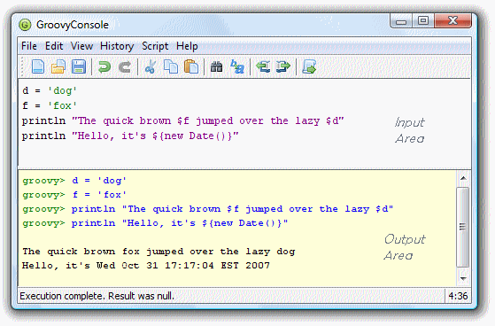
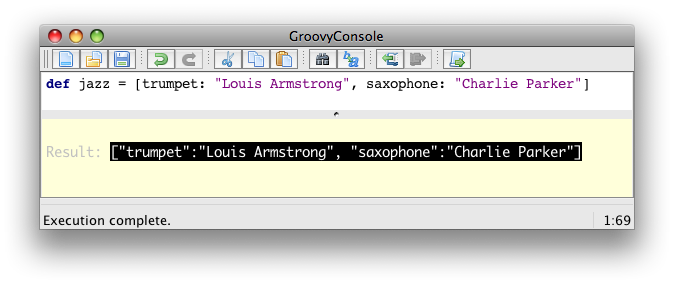
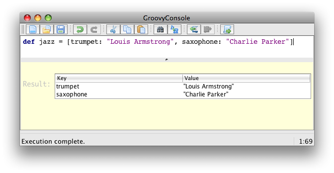
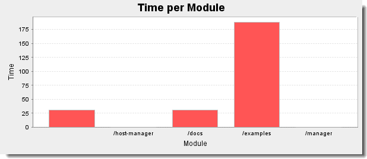
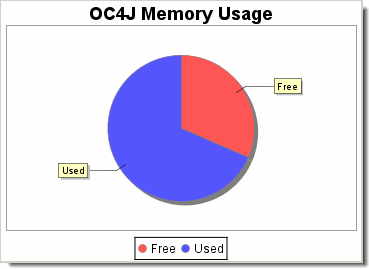
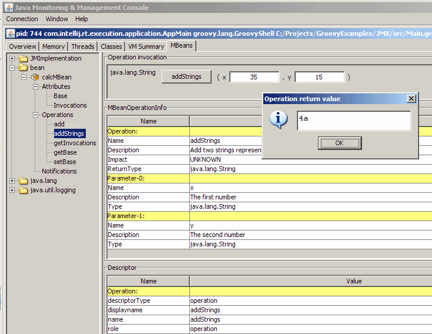

Introduction
Groovy…
-
is an agile and dynamic language for the Java Virtual Machine
-
builds upon the strengths of Java but has additional power features inspired by languages like Python, Ruby and Smalltalk
-
makes modern programming features available to Java developers with almost-zero learning curve
-
provides the ability to statically type check and statically compile your code for robustness and performance
-
supports Domain-Specific Languages and other compact syntax so your code becomes easy to read and maintain
-
makes writing shell and build scripts easy with its powerful processing primitives, OO abilities and an Ant DSL
-
increases developer productivity by reducing scaffolding code when developing web, GUI, database or console applications
-
simplifies testing by supporting unit testing and mocking out-of-the-box
-
seamlessly integrates with all existing Java classes and libraries
-
compiles straight to Java bytecode so you can use it anywhere you can use Java
1. Groovy Language Specification
1.1. Syntax
This chapter covers the syntax of the Groovy programming language. The grammar of the language derives from the Java grammar, but enhances it with specific constructs for Groovy, and allows certain simplifications.
1.1.1. Comments
Single line comment
Single line comments start with // and can be found at any position in the line.
The characters following //, till the end of the line, are considered part of the comment.
// a standalone single line comment
println "hello" // a comment till the end of the lineMultiline comment
A multiline comment starts with /* and can be found at any position in the line.
The characters following /* will be considered part of the comment, including new line characters,
up to the first */ closing the comment.
Multiline comments can thus be put at the end of a statement, or even inside a statement.
/* a standalone multiline comment
spanning two lines */
println "hello" /* a multiline comment starting
at the end of a statement */
println 1 /* one */ + 2 /* two */GroovyDoc comment
Similarly to multiline comments, GroovyDoc comments are multiline, but start with /** and end with */.
Lines following the first GroovyDoc comment line can optionally start with a star *.
Those comments are associated with:
-
type definitions (classes, interfaces, enums, annotations),
-
fields and properties definitions
-
methods definitions
Although the compiler will not complain about GroovyDoc comments not being associated with the above language elements, you should prepend those constructs with the comment right before it.
/**
* A Class description
*/
class Person {
/** the name of the person */
String name
/**
* Creates a greeting method for a certain person.
*
* @param otherPerson the person to greet
* @return a greeting message
*/
String greet(String otherPerson) {
"Hello ${otherPerson}"
}
}GroovyDoc follows the same conventions as Java’s own JavaDoc. So you’ll be able to use the same tags as with JavaDoc.
Shebang line
Beside the single line comment, there is a special line comment, often called the shebang line understood by UNIX systems
which allows scripts to be run directly from the command-line, provided you have installed the Groovy distribution
and the groovy command is available on the PATH.
#!/usr/bin/env groovy
println "Hello from the shebang line"
The # character must be the first character of the file. Any indentation would yield a compilation error.
|
1.1.2. Keywords
The following list represents all the keywords of the Groovy language:
as |
assert |
break |
case |
catch |
class |
const |
continue |
def |
default |
do |
else |
enum |
extends |
false |
finally |
for |
goto |
if |
implements |
import |
in |
instanceof |
interface |
new |
null |
package |
return |
super |
switch |
this |
throw |
throws |
trait |
true |
try |
while |
1.1.3. Identifiers
Normal identifiers
Identifiers start with a letter, a dollar or an underscore. They cannot start with a number.
A letter can be in the following ranges:
-
'a' to 'z' (lowercase ascii letter)
-
'A' to 'Z' (uppercase ascii letter)
-
'\u00C0' to '\u00D6'
-
'\u00D8' to '\u00F6'
-
'\u00F8' to '\u00FF'
-
'\u0100' to '\uFFFE'
Then following characters can contain letters and numbers.
Here are a few examples of valid identifiers (here, variable names):
def name
def item3
def with_underscore
def $dollarStartBut the following ones are invalid identifiers:
def 3tier
def a+b
def a#bAll keywords are also valid identifiers when following a dot:
foo.as
foo.assert
foo.break
foo.case
foo.catchQuoted identifiers
Quoted identifiers appear after the dot of a dotted expression.
For instance, the name part of the person.name expression can be quoted with person."name" or person.'name'.
This is particularly interesting when certain identifiers contain
illegal characters that are forbidden by the Java Language
Specification,
but which are allowed by Groovy when quoted. For example, characters
like a dash, a space, an exclamation mark, etc.
def map = [:]
map."an identifier with a space and double quotes" = "ALLOWED"
map.'with-dash-signs-and-single-quotes' = "ALLOWED"
assert map."an identifier with a space and double quotes" == "ALLOWED"
assert map.'with-dash-signs-and-single-quotes' == "ALLOWED"As we shall see in the following section on strings, Groovy provides different string literals. All kind of strings are actually allowed after the dot:
map.'single quote'
map."double quote"
map.'''triple single quote'''
map."""triple double quote"""
map./slashy string/
map.$/dollar slashy string/$There’s a difference between plain character strings and Groovy’s GStrings (interpolated strings), as in that the latter case, the interpolated values are inserted in the final string for evaluating the whole identifier:
def firstname = "Homer"
map."Simson-${firstname}" = "Homer Simson"
assert map.'Simson-Homer' == "Homer Simson"1.1.4. Strings
Text literals are represented in the form of chain of characters called strings.
Groovy lets you instantiate java.lang.String objects, as well as GStrings (groovy.lang.GString)
which are also called interpolated strings in other programming languages.
Single quoted string
Single quoted strings are a series of characters surrounded by single quotes:
'a single quoted string'
Single quoted strings are plain java.lang.String and don’t support interpolation.
|
String concatenation
All the Groovy strings can be concatenated with the + operator:
assert 'ab' == 'a' + 'b'Triple single quoted string
Triple single quoted strings are a series of characters surrounded by triplets of single quotes:
'''a triple single quoted string'''
Triple single quoted strings are plain java.lang.String and don’t support interpolation.
|
Triple single quoted strings are multiline. You can span the content of the string across line boundaries without the need to split the string in several pieces, without contatenation or newline escape characters:
def aMultilineString = '''line one
line two
line three'''If your code is indented, for example in the body of the method of a
class, your string will contain the whitespace of the indentation.
The Groovy Development Kit contains methods for stripping out the
indentation with the String#stripIndent() method,
and with the String#stripMargin() method that takes a delimiter character to identify the text to remove from the beginning of a string.
When creating a string as follows:
def startingAndEndingWithANewline = '''
line one
line two
line three
'''You will notice that the resulting string contains a newline character as first character. It is possible to strip that character by escaping the newline with a backslash:
def strippedFirstNewline = '''\
line one
line two
line three
'''
assert !strippedFirstNewline.startsWith('\n')Escaping special characters
You can escape single quotes with the the backslash character to avoid terminating the string literal:
'an escaped single quote: \' needs a backslash'And you can escape the escape character itself with a double backslash:
'an escaped escape character: \\ needs a double backslash'Some special characters also use the backslash as escape character:
| Escape sequence | Character |
|---|---|
'\t' |
tabulation |
'\b' |
backspace |
'\n' |
newline |
'\r' |
carriage return |
'\f' |
formfeed |
'\\' |
backslash |
'\'' |
single quote (for single quoted and triple single quoted strings) |
'\"' |
double quote (for double quoted and triple double quoted strings) |
Double quoted string
Double quoted strings are a series of characters surrounded by double quotes:
"a double quoted string"
Double quoted strings are plain java.lang.String if there’s no interpolated expression,
but are groovy.lang.GString instances if interpolation is present.
|
| To escape a double quote, you can use the backslash character: "A double quote: \"". |
String interpolation
Any Groovy expression can be interpolated in all string literals, apart from single and triple single quoted strings.
Interpolation is the act of replacing a placeholder in the string with its value upon evaluation of the string.
The placeholder expressions are surrounded by ${} or prefixed with $
for dotted expressions.
The expression value inside the placeholder is evaluated to its string
representation when the GString is passed to a method taking a String as
argument by calling toString() on that expression.
Here, we have a string with a placeholder referencing a local variable:
def name = 'Guillaume' // a plain string
def greeting = "Hello ${name}"
assert greeting.toString() == 'Hello Guillaume'But any Groovy expression is valid, as we can see in this example with an arithmetic expression:
def sum = "The sum of 2 and 3 equals ${2 + 3}"
assert sum.toString() == 'The sum of 2 and 3 equals 5'
Not only expressions are actually allowed in between the ${} placeholder. Statements are also allowed, but a statement’s value is just null.
So if several statements are inserted in that placeholder, the last one
should somehow return a meaningful value to be inserted.
For instance, "The sum of 1 and 2 is equal to ${def a = 1; def b = 2; a +
b}" is supported and works as expected but a good practice is usually
to stick to simple expressions inside GString placeholders.
|
In addition to ${} placeholders, we can also use a lone $ sign prefixing a dotted expression:
def person = [name: 'Guillaume', age: 36]
assert "$person.name is $person.age years old" == 'Guillaume is 36 years old'But only dotted expressions of the form a.b, a.b.c,
etc, are valid, but expressions that would contain parentheses like
method calls, curly braces for closures, or arithmetic operators would
be invalid.
Given the following variable definition of a number:
def number = 3.14The following statement will throw a groovy.lang.MissingPropertyException because Groovy believes you’re trying to access the toString property of that number, which doesn’t exist:
shouldFail(MissingPropertyException) {
println "$number.toString()"
}
You can think of "$number.toString()" as being interpreted by the parser as "${number.toString}()".
|
If you need to escape the $ or ${} placeholders in a GString so they appear as is without interpolation,
you just need to use a \ backslash character to escape the dollar sign:
assert '${name}' == "\${name}"Special case of interpolating closure expressions
So far, we’ve seen we could interpolate arbitrary expressions inside the ${} placeholder, but there is a special case and notation for closure expressions. When the placeholder contains an arrow, ${→}, the expression is actually a closure expression — you can think of it as a closure with a dollar prepended in front of it:
def sParameterLessClosure = "1 + 2 == ${-> 3}" (1)
assert sParameterLessClosure == '1 + 2 == 3'
def sOneParamClosure = "1 + 2 == ${ w -> w << 3}" (2)
assert sOneParamClosure == '1 + 2 == 3'| 1 | The closure is a parameterless closure which doesn’t take arguments. |
| 2 | Here, the closure takes a single java.io.StringWriter argument, to which you can append content with the << leftShift operator.
In either case, both placeholders are embedded closures. |
In appearance, it looks like a more verbose way of defining expressions to be interpolated, but closures have an interesting advantage over mere expressions: lazy evaluation.
Let’s consider the following sample:
def number = 1 (1)
def eagerGString = "value == ${number}"
def lazyGString = "value == ${ -> number }"
assert eagerGString == "value == 1" (2)
assert lazyGString == "value == 1" (3)
number = 2 (4)
assert eagerGString == "value == 1" (5)
assert lazyGString == "value == 2" (6)| 1 | We define a number variable containing 1 that we then interpolate within two GStrings,
as an expression in eagerGString and as a closure in lazyGString. |
| 2 | We expect the resulting string to contain the same string value of 1 for eagerGString. |
| 3 | Similarly for lazyGString |
| 4 | Then we change the value of the variable to a new number |
| 5 | With a plain interpolated expression, the value was actually bound at the time of creation of the GString. |
| 6 | But with a closure expression, the closure is called upon each coercion of the GString into String, resulting in an updated string containing the new number value. |
| An embedded closure expression taking more than one parameter will generate an exception at runtime. Only closures with zero or one parameters are allowed. |
Interoperability with Java
When a method (whether implemented in Java or Groovy) expects a java.lang.String,
but we pass a groovy.lang.GString instance,
the toString() method of the GString is automatically and transparently called.
String takeString(String message) { (4)
assert message instanceof String (5)
return message
}
def message = "The message is ${'hello'}" (1)
assert message instanceof GString (2)
def result = takeString(message) (3)
assert result instanceof String
assert result == 'The message is hello'| 1 | We create a GString variable |
| 2 | We double check it’s an instance of the GString |
| 3 | We then pass that GString to a method taking a String as parameter |
| 4 | The signature of the takeString() method explicitly says its sole parameter is a String |
| 5 | We also verify that the parameter is indeed a String and not a GString. |
GString and String hashCodes
Although interpolated strings can be used in lieu of plain Java strings, they differ with strings in a particular way: their hashCodes are different. Plain Java strings are immutable, whereas the resulting String representation of a GString can vary, depending on its interpolated values. Even for the same resulting string, GStrings and Strings don’t have the same hashCode.
assert "one: ${1}".hashCode() != "one: 1".hashCode()GString and Strings having different hashCode values, using GString as Map keys should be avoided, especially if we try to retrieve an associated value with a String instead of a GString.
def key = "a"
def m = ["${key}": "letter ${key}"] (1)
assert m["a"] == null (2)| 1 | The map is created with an initial pair whose key is a GString |
| 2 | When we try to fetch the value with a String key, we will not find it, as Strings and GString have different hashCode values |
Triple double quoted string
Triple double quoted strings behave like double quoted strings, with the addition that they are multiline, like the triple single quoted strings.
def name = 'Groovy'
def template = """
Dear Mr ${name},
You're the winner of the lottery!
Yours sincerly,
Dave
"""
assert template.toString().contains('Groovy')| Neither double quotes nor single quotes need be escaped in triple double quoted strings. |
Slashy string
Beyond the usual quoted strings, Groovy offers slashy strings, which use / as delimiters.
Slashy strings are particularly useful for defining regular expressions and patterns,
as there is no need to escape backslashes.
Example of a slashy string:
def fooPattern = /.*foo.*/
assert fooPattern == '.*foo.*'Only forward slashes need to be escaped with a backslash:
def escapeSlash = /The character \/ is a forward slash/
assert escapeSlash == 'The character / is a forward slash'Slashy strings are multiline:
def multilineSlashy = /one
two
three/
assert multilineSlashy.contains('\n')Slashy strings can also be interpolated (ie. a GString):
def color = 'blue'
def interpolatedSlashy = /a ${color} car/
assert interpolatedSlashy == 'a blue car'There are a few gotchas to be aware of.
An empty slashy string cannot be represented with a double forward slash, as it’s understood by the Groovy parser as a line comment. That’s why the following assert would actually not compile as it would look like a non-terminated statement:
assert '' == //
As slashy strings were mostly designed to make regexp easier so a few things that are errors in GStrings like $() will work with slashy strings.
|
Dollar slashy string
Dollar slashy strings are multiline GStrings delimited with an opening $/ and and a closing /$.
The escaping character is the dollar sign, and it can escape another
dollar, or a forward slash.
But both dollar and forward slashes don’t need to be escaped, except to
escape the dollar of a string subsequence that would start like a
GString placeholder sequence, or if you need to escape a sequence that
would start like a closing dollar slashy string delimiter.
Here’s an example:
def name = "Guillaume"
def date = "April, 1st"
def dollarSlashy = $/
Hello $name,
today we're ${date}.
$ dollar sign
$$ escaped dollar sign
\ backslash
/ forward slash
$/ escaped forward slash
$/$ escaped dollar slashy string delimiter
/$
assert [
'Guillaume',
'April, 1st',
'$ dollar sign',
'$ escaped dollar sign',
'\\ backslash',
'/ forward slash',
'$/ escaped forward slash',
'/$ escaped dollar slashy string delimiter'
].each { dollarSlashy.contains(it) }String summary table
String name |
String syntax |
Interpolated |
Multiline |
Escape character |
Single quoted |
|
|
||
Triple single quoted |
|
|
||
Double quoted |
|
|
||
Triple double quoted |
|
|
||
Slashy |
|
|
||
Dollar slashy |
|
|
Characters
Unlike Java, Groovy doesn’t have an explicit character literal. However, you can be explicit about making a Groovy string an actual character, by three different means:
char c1 = 'A' (1)
assert c1 instanceof Character
def c2 = 'B' as char (2)
assert c2 instanceof Character
def c3 = (char)'C' (3)
assert c3 instanceof Character| 1 | by being explicit when declaring a variable holding the character by specifying the char type |
| 2 | by using type coercion with the as operator |
| 3 | by using a cast to char operation |
| The first option 1 is interesting when the character is held in a variable, while the other two (2 and 3) are more interesting when a char value must be passed as argument of a method call. |
1.1.5. Numbers
Groovy supports different kinds of integral literals and decimal literals, backed by the usual Number types of Java.
Integral literals
The integral literal types are the same as in Java:
-
byte -
char -
short -
int -
long -
java.lang.BigInteger
You can create integral numbers of those types with the following declarations:
// primitive types
byte b = 1
char c = 2
short s = 3
int i = 4
long l = 5
// infinite precision
BigInteger bi = 6If you use optional typing by using the def keyword, the type of the integral number will vary:
it’ll adapt to the capacity of the type that can hold that number.
For positive numbers:
def a = 1
assert a instanceof Integer
// Integer.MAX_VALUE
def b = 2147483647
assert b instanceof Integer
// Integer.MAX_VALUE + 1
def c = 2147483648
assert c instanceof Long
// Long.MAX_VALUE
def d = 9223372036854775807
assert d instanceof Long
// Long.MAX_VALUE + 1
def e = 9223372036854775808
assert e instanceof BigIntegerAs well as for negative numbers:
def na = -1
assert na instanceof Integer
// Integer.MIN_VALUE
def nb = -2147483648
assert nb instanceof Integer
// Integer.MIN_VALUE - 1
def nc = -2147483649
assert nc instanceof Long
// Long.MIN_VALUE
def nd = -9223372036854775808
assert nd instanceof Long
// Long.MIN_VALUE - 1
def ne = -9223372036854775809
assert ne instanceof BigIntegerAlternative non-base 10 representations
Numbers can also be represented in binary, octal, hexadecimal and decimal bases.
Binary numbers start with a 0b prefix:
int xInt = 0b10101111
assert xInt == 175
short xShort = 0b11001001
assert xShort == 201 as short
byte xByte = 0b11
assert xByte == 3 as byte
long xLong = 0b101101101101
assert xLong == 2925l
BigInteger xBigInteger = 0b111100100001
assert xBigInteger == 3873g
int xNegativeInt = -0b10101111
assert xNegativeInt == -175Octal numbers are specified in the typical format of 0 followed by octal digits.
int xInt = 077
assert xInt == 63
short xShort = 011
assert xShort == 9 as short
byte xByte = 032
assert xByte == 26 as byte
long xLong = 0246
assert xLong == 166l
BigInteger xBigInteger = 01111
assert xBigInteger == 585g
int xNegativeInt = -077
assert xNegativeInt == -63Hexadecimal numbers are specified in the typical format of 0x followed by hex digits.
int xInt = 0x77
assert xInt == 119
short xShort = 0xaa
assert xShort == 170 as short
byte xByte = 0x3a
assert xByte == 58 as byte
long xLong = 0xffff
assert xLong == 65535l
BigInteger xBigInteger = 0xaaaa
assert xBigInteger == 43690g
Double xDouble = new Double('0x1.0p0')
assert xDouble == 1.0d
int xNegativeInt = -0x77
assert xNegativeInt == -119Decimal literals
The decimal literal types are the same as in Java:
-
float -
double -
java.lang.BigDecimal
You can create decimal numbers of those types with the following declarations:
// primitive types
float f = 1.234
double d = 2.345
// infinite precision
BigDecimal bd = 3.456Decimals can use exponents, with the e or E exponent letter, followed by an optional sign,
and a integral number representing the exponent:
assert 1e3 == 1_000.0
assert 2E4 == 20_000.0
assert 3e+1 == 30.0
assert 4E-2 == 0.04
assert 5e-1 == 0.5Conveniently for exact decimal number calculations, Groovy choses java.lang.BigDecimal as its decimal number type.
In addition, both float and double are supported, but require an explicit type declaration, type coercion or suffix.
Even if BigDecimal is the default for decimal numbers, such literals are accepted in methods or closures taking float or double as parameter types.
| Decimal numbers can’t be represented using a binary, octal or hexadecimal representation. |
Underscore in literals
When writing long literal numbers, it’s harder on the eye to figure out how some numbers are grouped together, for example with groups of thousands, of words, etc. By allowing you to place underscore in number literals, it’s easier to spot those groups:
long creditCardNumber = 1234_5678_9012_3456L
long socialSecurityNumbers = 999_99_9999L
double monetaryAmount = 12_345_132.12
long hexBytes = 0xFF_EC_DE_5E
long hexWords = 0xFFEC_DE5E
long maxLong = 0x7fff_ffff_ffff_ffffL
long alsoMaxLong = 9_223_372_036_854_775_807L
long bytes = 0b11010010_01101001_10010100_10010010Number type suffixes
We can force a number (including binary, octals and hexadecimals) to have a specific type by giving a suffix (see table below), either uppercase or lowercase.
| Type | Suffix |
|---|---|
BigInteger |
|
Long |
|
Integer |
|
BigDecimal |
|
Double |
|
Float |
|
Examples:
assert 42I == new Integer('42')
assert 42i == new Integer('42') // lowercase i more readable
assert 123L == new Long("123") // uppercase L more readable
assert 2147483648 == new Long('2147483648') // Long type used, value too large for an Integer
assert 456G == new BigInteger('456')
assert 456g == new BigInteger('456')
assert 123.45 == new BigDecimal('123.45') // default BigDecimal type used
assert 1.200065D == new Double('1.200065')
assert 1.234F == new Float('1.234')
assert 1.23E23D == new Double('1.23E23')
assert 0b1111L.class == Long // binary
assert 0xFFi.class == Integer // hexadecimal
assert 034G.class == BigInteger // octalMath operations
Although operators are covered later on, it’s important to discuss the behavior of math operations and what their resulting types are.
Division and power binary operations aside (covered below),
-
binary operations between
byte,char,shortandintresult inint -
binary operations involving
longwithbyte,char,shortandintresult inlong -
binary operations involving
BigIntegerand any other integral type result inBigInteger -
binary operations involving
BigDecimalwithbyte,char,short,intandBigIntegerresult inBigDecimal -
binary operations between
float,doubleandBigDecimalresult indouble -
binary operations between two
BigDecimalresult inBigDecimal
The following table summarizes those rules:
| byte | char | short | int | long | BigInteger | float | double | BigDecimal | |
|---|---|---|---|---|---|---|---|---|---|
byte |
int |
int |
int |
int |
long |
BigInteger |
double |
double |
BigDecimal |
char |
int |
int |
int |
long |
BigInteger |
double |
double |
BigDecimal |
|
short |
int |
int |
long |
BigInteger |
double |
double |
BigDecimal |
||
int |
int |
long |
BigInteger |
double |
double |
BigDecimal |
|||
long |
long |
BigInteger |
double |
double |
BigDecimal |
||||
BigInteger |
BigInteger |
double |
double |
BigDecimal |
|||||
float |
double |
double |
double |
||||||
double |
double |
double |
|||||||
BigDecimal |
BigDecimal |
Thanks to Groovy’s operator overloading, the usual arithmetic operators work as well with BigInteger and BigDecimal,
unlike in Java where you have to use explicit methods for operating on those numbers.
|
The case of the division operator
The division operators / (and /= for division and assignment) produce a double result
if either operand is a float or double, and a BigDecimal result otherwise
(when both operands are any combination of an integral type short, char, byte, int, long,
BigInteger or BigDecimal).
BigDecimal division is performed with the divide() method if the division is exact
(i.e. yielding a result that can be represented within the bounds of the same precision and scale),
or using a MathContext with a precision
of the maximum of the two operands' precision plus an extra precision of 10,
and a scale
of the maximum of 10 and the maximum of the operands' scale.
For integer division like in Java, you should use the intdiv() method,
as Groovy doesn’t provide a dedicated integer division operator symbol.
|
The case of the power operator
The power operation is represented by the ** operator, with two parameters: the base and the exponent.
The result of the power operation depends on its operands, and the result of the operation
(in particular if the result can be represented as an integral value).
The following rules are used by Groovy’s power operation to determine the resulting type:
-
If the exponent is a decimal value
-
if the result can be represented as an
Integer, then return anInteger -
else if the result can be represented as a
Long, then return aLong -
otherwise return a
Double
-
-
If the exponent is an integral value
-
if the exponent is strictly negative, then return an
Integer,LongorDoubleif the result value fits in that type -
if the exponent is positive or zero
-
if the base is a
BigDecimal, then return aBigDecimalresult value -
if the base is a
BigInteger, then return aBigIntegerresult value -
if the base is an
Integer, then return anIntegerif the result value fits in it, otherwise aBigInteger -
if the base is a
Long, then return aLongif the result value fits in it, otherwise aBigInteger
-
-
We can illustrate those rules with a few examples:
// base and exponent are ints and the result can be represented by an Integer
assert 2 ** 3 instanceof Integer // 8
assert 10 ** 9 instanceof Integer // 1_000_000_000
// the base is a long, so fit the result in a Long
// (although it could have fit in an Integer)
assert 5L ** 2 instanceof Long // 25
// the result can't be represented as an Integer or Long, so return a BigInteger
assert 100 ** 10 instanceof BigInteger // 10e20
assert 1234 ** 123 instanceof BigInteger // 170515806212727042875...
// the base is a BigDecimal and the exponent a negative int
// but the result can be represented as an Integer
assert 0.5 ** -2 instanceof Integer // 4
// the base is an int, and the exponent a negative float
// but again, the result can be represented as an Integer
assert 1 ** -0.3f instanceof Integer // 1
// the base is an int, and the exponent a negative int
// but the result will be calculated as a Double
// (both base and exponent are actually converted to doubles)
assert 10 ** -1 instanceof Double // 0.1
// the base is a BigDecimal, and the exponent is an int, so return a BigDecimal
assert 1.2 ** 10 instanceof BigDecimal // 6.1917364224
// the base is a float or double, and the exponent is an int
// but the result can only be represented as a Double value
assert 3.4f ** 5 instanceof Double // 454.35430372146965
assert 5.6d ** 2 instanceof Double // 31.359999999999996
// the exponent is a decimal value
// and the result can only be represented as a Double value
assert 7.8 ** 1.9 instanceof Double // 49.542708423868476
assert 2 ** 0.1f instanceof Double // 1.07177346364329561.1.6. Booleans
Boolean is a special data type that is used to represent truth values: true and false.
Use this data type for simple flags that track true/false conditions.
Boolean values can be stored in variables, assigned into fields, just like any other data type:
def myBooleanVariable = true
boolean untypedBooleanVar = false
booleanField = truetrue and false are the only two primitive boolean values.
But more complex boolean expressions can be represented using logical operators.
In addition, Groovy has special rules (often referred to as Groovy Truth) for coercing non-boolean objects to a boolean value.
1.1.7. Lists
Groovy uses a comma-separated list of values, surrounded by square brackets, to denote lists.
Groovy lists are plain JDK java.util.List, as Groovy doesn’t define its own collection classes.
The concrete list implementation used when defining list literals are java.util.ArrayList by default,
unless you decide to specify otherwise, as we shall see later on.
def numbers = [1, 2, 3] (1)
assert numbers instanceof List (2)
assert numbers.size() == 3 (3)| 1 | We define a list numbers delimited by commas and surrounded by square brackets, and we assign that list into a variable |
| 2 | The list is an instance of Java’s java.util.List interface |
| 3 | The size of the list can be queried with the size() method, and shows our list contains 3 elements |
In the above example, we used a homogeneous list, but you can also create lists containing values of heterogeneous types:
def heterogeneous = [1, "a", true] (1)| 1 | Our list here contains a number, a string and a boolean value |
We mentioned that by default, list literals are actually instances of java.util.ArrayList,
but it is possible to use a different backing type for our lists,
thanks to using type coercion with the as operator, or with explicit type declaration for your variables:
def arrayList = [1, 2, 3]
assert arrayList instanceof java.util.ArrayList
def linkedList = [2, 3, 4] as LinkedList (1)
assert linkedList instanceof java.util.LinkedList
LinkedList otherLinked = [3, 4, 5] (2)
assert otherLinked instanceof java.util.LinkedList| 1 | We use coercion with the as operator to explicitly request a java.util.LinkedList implementation |
| 2 | We can say that the variable holding the list literal is of type java.util.LinkedList |
You can access elements of the list with the [] subscript operator (both for reading and setting values)
with positive indices or negative indices to access elements from the end of the list, as well as with ranges,
and use the << leftShift operator to append elements to a list:
def letters = ['a', 'b', 'c', 'd']
assert letters[0] == 'a' (1)
assert letters[1] == 'b'
assert letters[-1] == 'd' (2)
assert letters[-2] == 'c'
letters[2] = 'C' (3)
assert letters[2] == 'C'
letters << 'e' (4)
assert letters[ 4] == 'e'
assert letters[-1] == 'e'
assert letters[1, 3] == ['b', 'd'] (5)
assert letters[2..4] == ['C', 'd', 'e'] (6)| 1 | Access the first element of the list (zero-based counting) |
| 2 | Access the last element of the list with a negative index: -1 is the first element from the end of the list |
| 3 | Use an assignment to set a new value for the third element of the list |
| 4 | Use the << leftShift operator to append an element at the end of the list |
| 5 | Access two elements at once, returning a new list containing those two elements |
| 6 | Use a range to access a range of values from the list, from a start to an end element position |
As lists can be heterogeneous in nature, lists can also contain other lists to create multi-dimensional lists:
def multi = [[0, 1], [2, 3]] (1)
assert multi[1][0] == 2 (2)| 1 | Define a list of list of numbers |
| 2 | Access the second element of the top-most list, and the first element of the inner list |
1.1.8. Arrays
Groovy reuses the list notation for arrays, but to make such literals arrays, you need to explicitely define the type of the array through coercion or type declaration.
String[] arrStr = ['Ananas', 'Banana', 'Kiwi'] (1)
assert arrStr instanceof String[] (2)
assert !(arrStr instanceof List)
def numArr = [1, 2, 3] as int[] (3)
assert numArr instanceof int[] (4)
assert numArr.size() == 3| 1 | Define an array of strings using explicit variable type declaration |
| 2 | Assert that we created an array of strings |
| 3 | Create an array of ints with the as operator |
| 4 | Assert that we created an array of primitive ints |
You can also create multi-dimensional arrays:
def matrix3 = new Integer[3][3] (1)
assert matrix3.size() == 3
Integer[][] matrix2 (2)
matrix2 = [[1, 2], [3, 4]]
assert matrix2 instanceof Integer[][]| 1 | You can define the bounds of a new array |
| 2 | Or declare an array without specifying its bounds |
Access to elements of an array follows the same notation as for lists:
String[] names = ['Cédric', 'Guillaume', 'Jochen', 'Paul']
assert names[0] == 'Cédric' (1)
names[2] = 'Blackdrag' (2)
assert names[2] == 'Blackdrag'| 1 | Retrieve the first element of the array |
| 2 | Set the value of the third element of the array to a new value |
| Java’s array initializer notation is not supported by Groovy, as the curly braces can be misinterpreted with the notation of Groovy closures. |
1.1.9. Maps
Sometimes called dictionaries or associative arrays in other languages, Groovy features maps. Maps associate keys to values, separating keys and values with colons, and each key/value pairs with commas, and the whole keys and values surrounded by square brackets.
def colors = [red: '#FF0000', green: '#00FF00', blue: '#0000FF'] (1)
assert colors['red'] == '#FF0000' (2)
assert colors.green == '#00FF00' (3)
colors['pink'] = '#FF00FF' (4)
colors.yellow = '#FFFF00' (5)
assert colors.pink == '#FF00FF'
assert colors['yellow'] == '#FFFF00'
assert colors instanceof java.util.LinkedHashMap| 1 | We define a map of string color names, associated with their hexadecimal-coded html colors |
| 2 | We use the subscript notation to check the content associated with the red key |
| 3 | We can also use the property notation to assert the color green’s hexadecimal representation |
| 4 | Similarly, we can use the subscript notation to add a new key/value pair |
| 5 | Or the property notation, to add the yellow color |
| When using names for the keys, we actually define string keys in the map. |
Groovy creates maps that are actually instances of java.util.LinkedHashMap.
|
If you try to access a key which is not present in the map:
assert colors.unknown == nullYou will retrieve a null result.
In the examples above, we used string keys, but you can also use values of other types as keys:
def numbers = [1: 'one', 2: 'two']
assert numbers[1] == 'one'Here, we used numbers as keys, as numbers can unambiguously be recognized as numbers, so Groovy will not create a string key like in our previous examples. But consider the case you want to pass a variable in lieu of the key, to have the value of that variable become the key:
def key = 'name'
def person = [key: 'Guillaume'] (1)
assert !person.containsKey('name') (2)
assert person.containsKey('key') (3)| 1 | The key associated with the 'Guillaume' name will actually be the "key" string, not the value associated with the key variable |
| 2 | The map doesn’t contain the 'name' key |
| 3 | Instead, the map contains a 'key' key |
| You can also pass quoted strings as well as keys: ["name": "Guillaume"]. This is mandatory if your key string isn’t a valid identifier, for example if you wanted to create a string key containing a hash like in: ["street-name": "Main street"]. |
When you need to pass variable values as keys in your map definitions, you must surround the variable or expression with parentheses:
person = [(key): 'Guillaume'] (1)
assert person.containsKey('name') (2)
assert !person.containsKey('key') (3)| 1 | This time, we surround the key variable with parentheses, to instruct the parser we are passing a variable rather than defining a string key |
| 2 | The map does contain the name key |
| 3 | But the map doesn’t contain the key key as before |
1.2. Operators
This chapter covers the operators of the Groovy programming language.
1.2.1. Arithmetic operators
Groovy supports the usual familiar arithmetic operators you find in mathematics and in other programming languages like Java. All the Java arithmetic operators are supported. Let’s go through them in the following examples.
Normal arithmetic operators
The following binary arithmetic operators are available in Groovy:
| Operator | Purpose | Remarks |
|---|---|---|
|
addition |
|
|
subtraction |
|
|
multiplication |
|
|
division |
Use |
|
remainder |
|
|
power |
See the section about the power operation for more information on the return type of the operation. |
Here are a few examples of usage of those operators:
assert 1 + 2 == 3
assert 4 - 3 == 1
assert 3 * 5 == 15
assert 3 / 2 == 1.5
assert 10 % 3 == 1
assert 2 ** 3 == 8Unary operators
The + and - operators are also available as unary operators:
assert +3 == 3
assert -4 == 0 - 4
assert -(-1) == 1 (1)| 1 | Note the usage of parentheses to surround an expression to apply the unary minus to that surrounded expression. |
In terms of unary arithmetics operators, the ++ (increment) and -- (decrement) operators are available,
both in prefix and postfix notation:
def a = 2
def b = a++ * 3 (1)
assert a == 3 && b == 6
def c = 3
def d = c-- * 2 (2)
assert c == 2 && d == 6
def e = 1
def f = ++e + 3 (3)
assert e == 2 && f == 5
def g = 4
def h = --g + 1 (4)
assert g == 3 && h == 4| 1 | The postfix increment will increment a after the expression has been evaluated and assigned into b |
| 2 | The postfix decrement will decrement c after the expression has been evaluated and assigned into d |
| 3 | The prefix increment will increment e before the expression is evaluated and assigned into f |
| 4 | The prefix decrement will decrement g before the expression is evaluated and assigned into h |
Assignment arithmetic operators
The binary arithmetic operators we have seen above are also available in an assignment form:
-
+= -
-= -
*= -
/= -
%= -
**=
Let’s see them in action:
def a = 4
a += 3
assert a == 7
def b = 5
b -= 3
assert b == 2
def c = 5
c *= 3
assert c == 15
def d = 10
d /= 2
assert d == 5
def e = 10
e %= 3
assert e == 1
def f = 3
f **= 2
assert f == 91.2.2. Relational operators
Relational operators allow comparisons between objects, to know if two objects are the same or different, or if one is greater than, less than, or equal to the other.
The following operators are available:
| Operator | Purpose |
|---|---|
|
equal |
|
different |
|
less than |
|
less than or equal |
|
greater than |
|
greater than or equal |
Here are some examples of simple number comparisons using these operators:
assert 1 + 2 == 3
assert 3 != 4
assert -2 < 3
assert 2 <= 2
assert 3 <= 4
assert 5 > 1
assert 5 >= -21.2.3. Logical operators
Groovy offers three logical operators for boolean expressions:
-
&&: logical "and" -
||: logical "or" -
!: logical "not"
Let’s illustrate them with the following examples:
assert !false (1)
assert true && true (2)
assert true || false (3)| 1 | "not" false is true |
| 2 | true "and" true is true |
| 3 | true "or" false is true |
Precedence
The logical "not" has a higher priority than the logical "and".
assert (!false && false) == false (1)| 1 | Here, the assertion is true (as the expression in parentheses is false), because "not" has a higher precedence than "and", so it only applies to the first "false" term; otherwise, it would have applied to the result of the "and", turned it into true, and the assertion would have failed |
The logical "and" has a higher priority than the logical "or".
assert true || true && false (1)| 1 | Here, the assertion is true, because "and" has a higher precedence than "or", therefore the "or" is executed last and returns true, having one true argument; otherwise, the "and" would have executed last and returned false, having one false argument, and the assertion would have failed |
Short-circuiting
The logical || operator supports short-circuiting: if
the left operand is true, it knows that the result will be true in any
case, so it won’t evaluate the right operand.
The right operand will be evaluated only if the left operand is false.
Likewise for the logical && operator: if the
left operand is false, it knows that the result will be false in any
case, so it won’t evaluate the right operand.
The right operand will be evaluated only if the left operand is true.
boolean checkIfCalled() { (1)
called = true
}
called = false
true || checkIfCalled()
assert !called (2)
called = false
false || checkIfCalled()
assert called (3)
called = false
false && checkIfCalled()
assert !called (4)
called = false
true && checkIfCalled()
assert called (5)| 1 | We create a function that sets the called flag to true whenever it’s called |
| 2 | In the first case, after resetting the called flag, we confirm that if the left operand to || is true, the function is not called, as || short-circuits the evaluation of the right operand |
| 3 | In the second case, the left operand is false and so the function is called, as indicated by the fact our flag is now true |
| 4 | Likewise for &&, we confirm that the function is not called with a false left operand |
| 5 | But the function is called with a true left operand |
1.2.4. Bitwise operators
Groovy offers 4 bitwise operators:
-
&: bitwise "and" -
|: bitwise "or" -
^: bitwise "xor" (exclusive "or") -
~: bitwise negation
Bitwise operators can be applied on a byte or an int and return an int:
int a = 0b00101010
assert a==42
int b = 0b00001000
assert b==8
assert (a & a) == a (1)
assert (a & b) == b (2)
assert (a | a) == a (3)
assert (a | b) == a (4)
int mask = 0b11111111 (5)
assert ((a ^ a) & mask) == 0b00000000 (6)
assert ((a ^ b) & mask) == 0b00100010 (7)
assert ((~a) & mask) == 0b11010101 (8)| 1 | bitwise and |
| 2 | bitwise and returns common bits |
| 3 | bitwise or |
| 4 | bitwise or returns all '1' bits |
| 5 | setting a mask to check only the last 8 bits |
| 6 | bitwise exclusive or on self returns 0 |
| 7 | bitwise exclusive or |
| 8 | bitwise negation |
It’s worth noting that the internal representation of primitive types follow the Java Language Specification. In particular, primitive types are signed, meaning that for a bitwise negation, it is always good to use a mask to retrieve only the necessary bits.
In Groovy, bitwise operators have the particularity of being overloadable, meaning that you can define the behavior of those operators for any kind of object.
1.2.5. Conditional operators
Not operator
The "not" operator is represented with an exclamation mark (!) and inverts the result of the underlying boolean expression. In
particular, it is possible to combine the not operator with the Groovy truth:
assert (!true) == false (1)
assert (!'foo') == false (2)
assert (!'') == true (3)| 1 | the negation of true is false |
| 2 | 'foo' is a non empty string, evaluating to true, so negation returns false |
| 3 | '' is an empty string, evaluating to false, so negation returns true |
Ternary operator
The ternary operator is a shortcut expression that is equivalent to an if/else branch assigning some value to a variable.
Instead of:
if (string!=null && string.length()>0) {
result = 'Found'
} else {
result = 'Not found'
}You can write:
result = (string!=null && string.length()>0) ? 'Found' : 'Not found'The ternary operator is also compatible with the Groovy truth, so you can make it even simpler:
result = string ? 'Found' : 'Not found'Elvis operator
The "Elvis operator" is a shortening of the ternary operator. One instance of where this is handy is for returning
a 'sensible default' value if an expression resolves to false-ish (as in
Groovy truth). A simple example might look like this:
displayName = user.name ? user.name : 'Anonymous' (1)
displayName = user.name ?: 'Anonymous' (2)| 1 | with the ternary operator, you have to repeat the value you want to assign |
| 2 | with the Elvis operator, the value, which is tested, is used if it is not false-ish |
Usage of the Elvis operator reduces the verbosity of your code and reduces the risks of errors in case of refactorings, by removing the need to duplicate the expression which is tested in both the condition and the positive return value.
1.2.6. Object operators
Safe navigation operator
The Safe Navigation operator is used to avoid a NullPointerException. Typically when you have a reference to an object
you might need to verify that it is not null before accessing methods or properties of the object. To avoid this, the safe
navigation operator will simply return null instead of throwing an exception, like so:
def person = Person.find { it.id == 123 } (1)
def name = person?.name (2)
assert name == null (3)| 1 | find will return a null instance |
| 2 | use of the null-safe operator prevents from a NullPointerException |
| 3 | result is null |
Direct field access operator
Normally in Groovy, when you write code like this:
class User {
public final String name (1)
User(String name) { this.name = name}
String getName() { "Name: $name" } (2)
}
def user = new User('Bob')
assert user.name == 'Name: Bob' (3)| 1 | public field name |
| 2 | a getter for name that returns a custom string |
| 3 | calls the getter |
The user.name call triggers a call to the property of the same name, that is to say, here, to the getter for name. If
you want to retrieve the field instead of calling the getter, you can use the direct field access operator:
assert user.@name == 'Bob' (1)| 1 | use of .@ forces usage of the field instead of the getter |
Method pointer operator
The method pointer operator (.&) call be used to store a reference to a method in a variable, in order to call it
later:
def str = 'example of method reference' (1)
def fun = str.&toUpperCase (2)
def upper = fun() (3)
assert upper == str.toUpperCase() (4)| 1 | the str variable contains a String |
| 2 | we store a reference to the toUpperCase method on the str instance inside a variable named fun |
| 3 | fun can be called like a regular method |
| 4 | we can check that the result is the same as if we had called it directly on str |
There are multiple advantages in using method pointers. First of all, the type of such a method pointer is
a groovy.lang.Closure, so it can be used in any place a closure would be used. In particular, it is suitable to
convert an existing method for the needs of the strategy pattern:
def transform(List elements, Closure action) { (1)
def result = []
elements.each {
result << action(it)
}
result
}
String describe(Person p) { (2)
"$p.name is $p.age"
}
def action = this.&describe (3)
def list = [
new Person(name: 'Bob', age: 42),
new Person(name: 'Julia', age: 35)] (4)
assert transform(list, action) == ['Bob is 42', 'Julia is 35'] (5)| 1 | the transform method takes each element of the list and calls the action closure on them, returning a new list |
| 2 | we define a function that takes a Person and returns a String |
| 3 | we create a method pointer on that function |
| 4 | we create the list of elements we want to collect the descriptors |
| 5 | the method pointer can be used where a Closure was expected |
Method pointers are bound by the receiver and a method name. Arguments are resolved at runtime, meaning that if you have multiple methods with the same name, the syntax is not different, only resolution of the appropriate method to be called will be done at runtime:
def doSomething(String str) { str.toUpperCase() } (1)
def doSomething(Integer x) { 2*x } (2)
def reference = this.&doSomething (3)
assert reference('foo') == 'FOO' (4)
assert reference(123) == 246 (5)| 1 | define an overloaded doSomething method accepting a String as an argument |
| 2 | define an overloaded doSomething method accepting an Integer as an argument |
| 3 | create a single method pointer on doSomething, without specifying argument types |
| 4 | using the method pointer with a String calls the String version of doSomething |
| 5 | using the method pointer with an Integer calls the Integer version of doSomething |
1.2.7. Regular expression operators
Pattern operator
The pattern operator (~) provides a simple way to create a java.util.regex.Pattern instance:
def p = ~/foo/
assert p instanceof Patternwhile in general, you find the pattern operator with an expression in a slashy-string, it can be used with any kind of
String in Groovy:
p = ~'foo' (1)
p = ~"foo" (2)
p = ~$/dollar/slashy $ string/$ (3)
p = ~"${pattern}" (4)| 1 | using single quote strings |
| 2 | using double quotes strings |
| 3 | the dollar-slashy string lets you use slashes and the dollar sign without having to escape them |
| 4 | you can also use a GString! |
Find operator
Alternatively to building a pattern, you can directly use the find operator =~ to build a java.util.regex.Matcher
instance:
def text = "some text to match"
def m = text =~ /match/ (1)
assert m instanceof Matcher (2)
if (!m) { (3)
throw new RuntimeException("Oops, text not found!")
}| 1 | =~ creates a matcher against the text variable, using the pattern on the right hand side |
| 2 | the return type of =~ is a Matcher |
| 3 | equivalent to calling if (!m.find()) |
Since a Matcher coerces to a boolean by calling its find method, the =~ operator is consistent with the simple
use of Perl’s =~ operator, when it appears as a predicate (in if, while, etc.).
Match operator
The match operator (==~) is a slight variation of the find operator, that does not return a Matcher but a boolean
and requires a strict match of the input string:
m = text ==~ /match/ (1)
assert m instanceof Boolean (2)
if (m) { (3)
throw new RuntimeException("Should not reach that point!")
}| 1 | ==~ matches the subject with the regular expression, but match must be strict |
| 2 | the return type of ==~ is therefore a boolean |
| 3 | equivalent to calling if (text ==~ /match/) |
1.2.8. Other operators
Spread operator
The Spread Operator (*.) is used to invoke an action on all items of an aggregate object. It is equivalent to calling the action on each item
and collecting the result into a list:
class Car {
String make
String model
}
def cars = [
new Car(make: 'Peugeot', model: '508'),
new Car(make: 'Renault', model: 'Clio')] (1)
def makes = cars*.make (2)
assert makes == ['Peugeot', 'Renault'] (3)| 1 | build a list of Car items. The list is an aggregate of objects. |
| 2 | call the spread operator on the list, accessing the make property of each item |
| 3 | returns a list of strings corresponding to the collection of make items |
The spread operator is null-safe, meaning that if an element of the
collection is null, it will return null instead of throwing a NullPointerException:
cars = [
new Car(make: 'Peugeot', model: '508'),
null, (1)
new Car(make: 'Renault', model: 'Clio')]
assert cars*.make == ['Peugeot', null, 'Renault'] (2)
assert null*.make == null (3)| 1 | build a list for which of of the elements is null |
| 2 | using the spread operator will not throw a NullPointerException |
| 3 | the receiver might also be null, in which case the return value is null |
The spread operator can be used on any class which implements the Iterable interface:
class Component {
Long id
String name
}
class CompositeObject implements Iterable<Component> {
def components = [
new Component(id: 1, name: 'Foo'),
new Component(id: 2, name: 'Bar')]
@Override
Iterator<Component> iterator() {
components.iterator()
}
}
def composite = new CompositeObject()
assert composite*.id == [1,2]
assert composite*.name == ['Foo','Bar']Spreading method arguments
There may be situations when the arguments of a method call can be found in a list that you need to adapt to the method arguments. In such situations, you can use the spread operator to call the method. For example, imagine you have the following method signature:
int function(int x, int y, int z) {
x*y+z
}then if you have the following list:
def args = [4,5,6]you can call the method without having to define intermediate variables:
assert function(*args) == 26It is even possible to mix normal arguments with spread ones:
args = [4]
assert function(*args,5,6) == 26Spread list elements
When used inside a list literal, the spread operator acts as if the spread element contents were inlined into the list:
def items = [4,5] (1)
def list = [1,2,3,*items,6] (2)
assert list == [1,2,3,4,5,6] (3)| 1 | items is a list |
| 2 | we want to insert the contents of the items list directly into list without having to call addAll |
| 3 | the contents of items has been inlined into list |
Spread map elements
The spread map operator works in a similar manner as the spread list operator, but for maps. It allows you to inline the contents of a map into another map literal, like in the following example:
def m1 = [c:3, d:4] (1)
def map = [a:1, b:2, *:m1] (2)
assert map == [a:1, b:2, c:3, d:4] (3)| 1 | m1 is the map that we want to inline |
| 2 | we use the *:m1 notation to spread the contents of m1 into map |
| 3 | map contains all the elements of m1 |
The position of the spread map operator is relevant, like illustrated in the following example:
def m1 = [c:3, d:4] (1)
def map = [a:1, b:2, *:m1, d: 8] (2)
assert map == [a:1, b:2, c:3, d:8] (3)| 1 | m1 is the map that we want to inline |
| 2 | we use the *:m1 notation to spread the contents of m1 into map, but redefine the key d after spreading |
| 3 | map contains all the expected keys, but d was redefined |
Range operator
Groovy supports the concept of ranges and provides a notation (..) to create ranges of objects:
def range = 0..5 (1)
assert (0..5).collect() == [0, 1, 2, 3, 4, 5] (2)
assert (0..<5).collect() == [0, 1, 2, 3, 4] (3)
assert (0..5) instanceof List (4)
assert (0..5).size() == 6 (5)| 1 | a simple range of integers, stored into a local variable |
| 2 | an IntRange, with inclusive bounds |
| 3 | an IntRange, with exclusive upper bound |
| 4 | a groovy.lang.Range implements the List interface |
| 5 | meaning that you can call the size method on it |
Ranges implementation is lightweight, meaning that only the lower and upper bounds are stored. You can create a range
from any Comparable object that has next() and previous() methods to determine the next / previous item in the range.
For example, you can create a range of characters this way:
assert ('a'..'d').collect() == ['a','b','c','d']Spaceship operator
The spaceship operator (<=>) delegates to the compareTo method:
assert (1 <=> 1) == 0
assert (1 <=> 2) == -1
assert (2 <=> 1) == 1
assert ('a' <=> 'z') == -1Subscript operator
The subscript operator is a short hand notation for getAt or putAt, depending on whether you find it on
the left hand side or the right hand side of an assignment:
def list = [0,1,2,3,4]
assert list[2] == 2 (1)
list[2] = 4 (2)
assert list[0..2] == [0,1,4] (3)
list[0..2] = [6,6,6] (4)
assert list == [6,6,6,3,4] (5)| 1 | [2] can be used instead of getAt(2) |
| 2 | if on left hand side of an assignment, will call putAt |
| 3 | getAt also supports ranges |
| 4 | so does putAt |
| 5 | the list is mutated |
The subscript operator, in combination with a custom implementation of getAt/putAt is a convenient way for destructuring
objects:
class User {
Long id
String name
def getAt(int i) { (1)
switch (i) {
case 0: return id
case 1: return name
}
throw new IllegalArgumentException("No such element $i")
}
void putAt(int i, def value) { (2)
switch (i) {
case 0: id = value; return
case 1: name = value; return
}
throw new IllegalArgumentException("No such element $i")
}
}
def user = new User(id: 1, name: 'Alex') (3)
assert user[0] == 1 (4)
assert user[1] == 'Alex' (5)
user[1] = 'Bob' (6)
assert user.name == 'Bob' (7)| 1 | the User class defines a custom getAt implementation |
| 2 | the User class defines a custom putAt implementation |
| 3 | create a sample user |
| 4 | using the subscript operator with index 0 allows retrieving the user id |
| 5 | using the subscript operator with index 1 allows retrieving the user name |
| 6 | we can use the subscript operator to write to a property thanks to the delegation to putAt |
| 7 | and check that it’s really the property name which was changed |
Membership operator
The membership operator (in) is equivalent to calling the isCase method. In the context of a List, it is equivalent
to calling contains, like in the following example:
def list = ['Grace','Rob','Emmy']
assert ('Emmy' in list) (1)| 1 | equivalent to calling list.contains('Emmy') or list.isCase('Emmy') |
Identity operator
In Groovy, using == to test equality is different from using the same operator in Java. In Groovy, it is calling equals.
If you want to compare reference equality, you should use is like in the following example:
def list1 = ['Groovy 1.8','Groovy 2.0','Groovy 2.3'] (1)
def list2 = ['Groovy 1.8','Groovy 2.0','Groovy 2.3'] (2)
assert list1 == list2 (3)
assert !list1.is(list2) (4)| 1 | Create a list of strings |
| 2 | Create another list of strings containing the same elements |
| 3 | using ==, we test object equality |
| 4 | but using is, we can check that references are distinct |
Coercion operator
The coercion operator (as) is a variant of casting. Coercion converts object from one type to another without them
being compatible for assignment. Let’s take an example:
Integer x = 123
String s = (String) x (1)| 1 | Integer is not assignable to a String, so it will produce a ClassCastException at runtime |
This can be fixed by using coercion instead:
Integer x = 123
String s = x as String (1)| 1 | Integer is not assignable to a String, but use of as will coerce it to a String |
When an object is coerced into another, unless the target type is the same as the source type, coercion will return a
new object. The rules of coercion differ depending on the source and target types, and coercion may fail if no conversion
rules are found. Custom conversion rules may be implemented thanks to the asType method:
class Identifiable {
String name
}
class User {
Long id
String name
def asType(Class target) { (1)
if (target==Identifiable) {
return new Identifiable(name: name)
}
throw new ClassCastException("User cannot be coerced into $target")
}
}
def u = new User(name: 'Xavier') (2)
def p = u as Identifiable (3)
assert p instanceof Identifiable (4)
assert !(p instanceof User) (5)| 1 | the User class defines a custom conversion rule from User to Identifiable |
| 2 | we create an instance of User |
| 3 | we coerce the User instance into an Identifiable |
| 4 | the target is an instance of Identifiable |
| 5 | the target is not an instance of User anymore |
Diamond operator
The diamond operator (<>) is a syntactic sugar only operator added to support compatibility with the operator of the
same name in Java 7. It is used to indicate that generic types should be inferred from the declaration:
List<String> strings = new LinkedList<>()In dynamic Groovy, this is totally unused. In statically type checked Groovy, it is also optional since the Groovy type checker performs type inference whether this operator is present or not.
Call operator
The call operator () is used to call a method named call implicitly. For any object which defines a call method,
you can omit the .call part and use the call operator instead:
class MyCallable {
int call(int x) { (1)
2*x
}
}
def mc = new MyCallable()
assert mc.call(2) == 4 (2)
assert mc(2) == 4 (3)| 1 | MyCallable defines a method named call. Note that it doesn’t need to implement java.util.concurrent.Callable |
| 2 | we can call the method using the classic method call syntax |
| 3 | or we can omit .call thanks to the call operator |
1.2.9. Operator precedence
The table below lists all groovy operators in order of precedence.
| Level | Operator(s) | Name(s) |
|---|---|---|
1 |
|
object creation, explicit parentheses |
|
method call, closure, literal list/map |
|
|
member access, method closure, field/attribute access |
|
|
safe dereferencing, spread, spread-dot, spread-map |
|
|
bitwise negate/pattern, not, typecast |
|
|
list/map/array index, post inc/decrement |
|
2 |
|
power |
3 |
|
pre inc/decrement, unary plus, unary minus |
4 |
|
multiply, div, remainder |
5 |
|
addition, subtraction |
6 |
|
left/right (unsigned) shift, inclusive/exclusive range |
7 |
|
less/greater than/or equal, in, instanceof, type coercion |
8 |
|
equals, not equals, compare to |
|
regex find, regex match |
|
9 |
|
binary/bitwise and |
10 |
|
binary/bitwise xor |
11 |
|
binary/bitwise or |
12 |
|
logical and |
13 |
|
logical or |
14 |
|
ternary conditional |
|
elvis operator |
|
15 |
|
various assignments |
1.2.10. Operator overloading
Groovy allows you to overload the various operators so that they can be used with your own classes. Consider this simple class:
class Bucket {
int size
Bucket(int size) { this.size = size }
Bucket plus(Bucket other) { (1)
return new Bucket(this.size + other.size)
}
}| 1 | Bucket implements a special method called plus() |
Just by implementing the plus() method, the Bucket class can now be used with the + operator like so:
def b1 = new Bucket(4)
def b2 = new Bucket(11)
assert (b1 + b2).size == 15 (1)| 1 | The two Bucket objects can be added together with the + operator |
All (non-comparator) Groovy operators have a corresponding method that you can implement in your own classes. The only requirements are that your method is public, has the correct name, and has the correct number of arguments. The argument types depend on what types you want to support on the right hand side of the operator. For example, you could support the statement
assert (b1 + 11).size == 15by implementing the plus() method with this signature:
Bucket plus(int capacity) {
return new Bucket(this.size + capacity)
}Here is a complete list of the operators and their corresponding methods:
| Operator | Method | Operator | Method |
|---|---|---|---|
|
a.plus(b) |
|
a.getAt(b) |
|
a.minus(b) |
|
a.putAt(b, c) |
|
a.multiply(b) |
|
b.isCase(a) |
|
a.div(b) |
|
a.leftShift(b) |
|
a.mod(b) |
|
a.rightShift(b) |
|
a.power(b) |
|
a.rightShiftUnsigned(b) |
|
a.or(b) |
|
a.next() |
|
a.and(b) |
|
a.previous() |
|
a.xor(b) |
|
a.positive() |
|
a.asType(b) |
|
a.negative() |
|
a.call() |
|
a.bitwiseNegate() |
1.3. Program structure
This chapter covers the program structure of the Groovy programming language.
1.3.1. Package names
Package names play exactly the same role as in Java. They allows us to separate the code base without any conflicts. Groovy classes must specify their package before the class definition, else the default package is assumed.
Defining a package is very similar to Java:
// defining a package named com.yoursite
package com.yoursiteTo refer to some class Foo in the com.yoursite.com package you will need to use the fully qualified name com.yoursite.com.Foo, or else you can use an import statement as we’ll see below.
1.3.2. Imports
In order to refer to any class you need a qualified reference to its package. Groovy follows Java’s notion of allowing import statement to resolve class references.
For example, Groovy provides several builder classes, such as MarkupBuilder. MarkupBuilder is inside the package groovy.xml so in order to use this class, you need to import it as shown:
// importing the class MarkupBuilder
import groovy.xml.MarkupBuilder
// using the imported class to create an object
def xml = new MarkupBuilder()
assert xml != nullDefault imports
Default imports are the imports that Groovy language provides by default. For example look at the following code:
new Date()The same code in Java needs an import statement to Date class like this: import java.util.Date. Groovy by default imports these classes for you.
The below imports are added by groovy for you:
import java.lang.*
import java.util.*
import java.io.*
import java.net.*
import groovy.lang.*
import groovy.util.*
import java.math.BigInteger
import java.math.BigDecimalThis is done because the classes from these packages are most commonly used. By importing these boilerplate code is reduced.
Simple import
A simple import is an import statement where you fully define the class name along with the package. For example the import statement import groovy.xml.MarkupBuilder in the code below is a simple import which directly refers to a class inside a package.
// importing the class MarkupBuilder
import groovy.xml.MarkupBuilder
// using the imported class to create an object
def xml = new MarkupBuilder()
assert xml != nullStar import
Groovy, like Java, provides a special way to import all classes from a package using *, the so called star import. MarkupBuilder is a class which is in package groovy.xml, alongside another class called StreamingMarkupBuilder. In case you need to use both classes, you can do:
import groovy.xml.MarkupBuilder
import groovy.xml.StreamingMarkupBuilder
def markupBuilder = new MarkupBuilder()
assert markupBuilder != null
assert new StreamingMarkupBuilder() != nullThat’s perfectly valid code. But with a * import, we can achieve the same effect with just one line. The star imports all the classes under package groovy.xml:
import groovy.xml.*
def markupBuilder = new MarkupBuilder()
assert markupBuilder != null
assert new StreamingMarkupBuilder() != nullOne problem with * imports is that they can clutter your
local namespace. But with the kinds of aliasing provided by Groovy,
this can be solved easily.
Static import
Groovy’s static import capability allows you to reference imported classes as if they were static methods in your own class:
import static Boolean.FALSE
assert !FALSE //use directly, without Boolean prefix!This is similar to Java’s static import capability but is a more dynamic than Java in that it allows you to define methods with the same name as an imported method as long as you have different types:
import static java.lang.String.format (1)
class SomeClass {
String format(Integer i) { (2)
i.toString()
}
static void main(String[] args) {
assert format('String') == 'String' (3)
assert new SomeClass().format(Integer.valueOf(1)) == '1'
}
}| 1 | static import of method |
| 2 | declaration of method with same name as method statically imported above, but with a different parameter type |
| 3 | compile error in java, but is valid groovy code |
If you have the same types, the imported class takes precedence.
Static import aliasing
Static imports with the as keyword provide an elegant solution to namespace problems. Suppose you want to get a Calendar instance, using its getInstance() method. It’s a static method, so we can use a static import. But instead of calling getInstance()
every time, which can be misleading when separated from its class name,
we can import it with an alias, to increase code readability:
import static Calendar.getInstance as now
assert now().class == Calendar.getInstance().classNow, that’s clean!
Static star import
A static star import is very similar to the regular star import. It will import all the static methods from the given class.
For example, lets say we need to calculate sines and cosines for our application.
The class java.lang.Math has static methods named sin and cos which fit our need. With the help of a static star import, we can do:
import static java.lang.Math.*
assert sin(0) == 0.0
assert cos(0) == 1.0As you can see, we were able to access the methods sin and cos directly, without the Math. prefix.
Import aliasing
With type aliasing, we can refer to a fully qualified class name using a name of our choice. This can be done with the as keyword, as before.
For example we can import java.sql.Date as SQLDate and use it in the same file as java.util.Date without having to use the fully qualified name of either class:
import java.util.Date
import java.sql.Date as SQLDate
Date utilDate = new Date(1000L)
SQLDate sqlDate = new SQLDate(1000L)
assert utilDate instanceof java.util.Date
assert sqlDate instanceof java.sql.Date1.3.3. Scripts versus classes
public static void main vs script
Groovy supports both scripts and classes. Take the following code for example:
class Main { (1)
static void main(String... args) { (2)
println 'Groovy world!' (3)
}
}| 1 | define a Main class, the name is arbitrary |
| 2 | the public static void main(String[]) method is usable as the main method of the class |
| 3 | the main body of the method |
This is typical code that you would find coming from Java, where code has to be embedded into a class to be executable. Groovy makes it easier, the following code is equivalent:
println 'Groovy world!'A script can be considered as a class without needing to declare it, with some differences.
Script class
A script is always compiled into a class. The Groovy compiler will compile the class for you,
with the body of the script copied into a run method. The previous example is therefore compiled as if it was the
following:
import org.codehaus.groovy.runtime.InvokerHelper
class Main extends Script { (1)
def run() { (2)
println 'Groovy world!' (3)
}
static void main(String[] args) { (4)
InvokerHelper.runScript(Main, args) (5)
}
}| 1 | The Main class extends the groovy.lang.Script class |
| 2 | groovy.lang.Script requires a run method returning a value |
| 3 | the script body goes into the run method |
| 4 | the main method is automatically generated |
| 5 | and delegates the execution of the script on the run method |
If the script is in a file, then the base name of the file is used to determine the name of the generated script class.
In this example, if the name of the file is Main.groovy, then the script class is going to be Main.
Methods
It is possible to define methods into a script, as illustrated here:
int fib(int n) {
n < 2 ? 1 : fib(n-1) + fib(n-2)
}
assert fib(10)==89You can also mix methods and code. The generated script class will carry all methods into the script class, and
assemble all script bodies into the run method:
println 'Hello' (1)
int power(int n) { 2**n } (2)
println "2^6==${power(6)}" (3)| 1 | script begins |
| 2 | a method is defined within the script body |
| 3 | and script continues |
This code is internally converted into:
import org.codehaus.groovy.runtime.InvokerHelper
class Main extends Script {
int power(int n) { 2** n} (1)
def run() {
println 'Hello' (2)
println "2^6==${power(6)}" (3)
}
static void main(String[] args) {
InvokerHelper.runScript(Main, args)
}
}| 1 | the power method is copied as is into the generated script class |
| 2 | first statement is copied into the run method |
| 3 | second statement is copied into the run method |
| Even if Groovy creates a class from your script, it is totally transparent for the user. In particular, scripts are compiled to bytecode, and line numbers are preserved. This implies that if an exception is thrown in a script, the stack trace will show line numbers corresponding to the original script, not the generated code that we have shown. |
Variables
Variables in a script do not require a type definition. This means that this script:
int x = 1
int y = 2
assert x+y == 3will behave the same as:
x = 1
y = 2
assert x+y == 3However there is a semantic difference between the two:
-
if the variable is declared as in the first example, it is a local variable. It will be declared in the
runmethod that the compiler will generate and will not be visible outside of the script main body. In particular, such a variable will not be visible in other methods of the script -
if the variable is undeclared, it goes into the script binding. The binding is visible from the methods, and is especially important if you use a script to interact with an application and need to share data between the script and the application. Readers might refer to the integration guide for more information.
If you want a variable to become a field of the class without going into the Binding, you can use the
@Field annotation.
|
1.4. Object orientation
This chapter covers the object orientation of the Groovy programming language.
1.4.1. Types
Primitive types
Groovy supports the same primitive types as those defined by the Java Language Specification:
-
integral types:
byte(8 bit),short(16 bit),int(32 bit) andlong(64 bit) -
floating-point types:
float(32 bit) anddouble(64 bit) -
booleantype (exactlytrueorfalse) -
chartype (16 bit, usable as a numeric type, representing an UTF-16 code)
While Groovy declares and stores primitive fields and variables as primitives, because it uses Objects for everything, it autowraps references to primitives. Just like Java, the wrappers it uses are
| Primitive type | Wrapper class |
|---|---|
boolean |
Boolean |
char |
Character |
short |
Short |
int |
Integer |
long |
Long |
float |
Float |
double |
Double |
Here’s an example using int
class Foo {
static int i
}
assert Foo.class.getDeclaredField('i').type == int.class
assert Foo.i.class != int.class && Foo.i.class == Integer.classNow you may be concerned that this means every time you use a mathematical operator on a reference to a primitive that you’ll incur the cost of unboxing and reboxing the primitive. But this is not the case, as Groovy will compile your operators into their method equivalents and uses those instead. Additionally, Groovy will automatically unbox to a primitive when calling a Java method that takes a primitive parameter and automatically box primitive method return values from Java. However, be aware there are some differences from Java’s method resolution.
Class
Groovy classes are very similar to Java classes, being compatible to those ones at JVM level. They may have methods and fields/properties, which can have the same modifiers (public, protected, private, static, etc) as Java classes.
Here are key aspects of Groovy classes, that are different from their Java counterparts:
-
Public fields are turned into properties automatically, which results in less verbose code, without so many getter and setter methods. More on this aspect will be covered in the fields and properties section.
-
Their declarations and any property or method without an access modifier are public.
-
Classes do not need to have the same name of the files where they are defined.
-
One file may contain one or more classes (but if a file contains no classes, it is considered a script).
The following code presents an example class.
class Person { (1)
String name (2)
Integer age
def increaseAge(Integer years) { (3)
this.age += years
}
}| 1 | class beginning, with the name Person |
| 2 | string field and property named name |
| 3 | method definition |
Normal class
Normal classes refer to classes which are top level and concrete.
This means they can be instantiated without restrictions from any other
classes or scripts. This way, they can only be public (even though the public keyword may be suppressed). Classes are instantiated by calling their constructors, using the new keyword, as in the following snippet.
def p = new Person()Inner class
Inner classes are defined within another classes. The enclosing class can use the inner class as usual. On the other side, a inner class can access members of its enclosing class, even if they are private. Classes other than the enclosing class are not allowed to access inner classes. Here is an example:
class Outer {
private String privateStr
def callInnerMethod() {
new Inner().methodA() (1)
}
class Inner { (2)
def methodA() {
println "${privateStr}." (3)
}
}
}| 1 | the inner class is instantiated and its method gets called |
| 2 | inner class definition, inside its enclosing class |
| 3 | even being private, a field of the enclosing class is accessed by the inner class |
There are some reasons for using inner classes:
-
They increase encapsulation by hiding the inner class from other classes, which do not need to know about it. This also leads to cleaner packages and workspaces.
-
They provide a good organization, by grouping classes that are used by only one class.
-
They lead to more maintainable codes, since inner classes are near the classes that use them.
In several cases, inner classes are implementation of interfaces whose methods are needed by the outer class. The code below illustrates this with the usage of threads, which are very common.
class Outer2 {
private String privateStr = 'some string'
def startThread() {
new Thread(new Inner2()).start()
}
class Inner2 implements Runnable {
void run() {
println "${privateStr}."
}
}
}Note that the class Inner2 is defined only to provide an implementation of the method run to class Outer2. Anonymous inner classes help to eliminate verbosity in this case.
The last example of inner class can be simplified with an anonymous inner class. The same functionality can be achieved with the following code.
class Outer3 {
private String privateStr = 'some string'
def startThread() {
new Thread(new Runnable() { (1)
void run() {
println "${privateStr}."
}
}).start() (2)
}
}| 1 | comparing with the last example of previous section, the new Inner2() was replaced by new Runnable() along with all its implementation |
| 2 | the method start is invoked normally |
Thus, there was no need to define a new class to be used just once.
Abstract class
Abstract classes represent generic concepts, thus, they cannot be instantiated, being created to be subclassed. Their members include fields/properties and abstract or concrete methods. Abstract methods do not have implementation, and must be implemented by concrete subclasses.
abstract class Abstract { (1)
String name
abstract def abstractMethod() (2)
def concreteMethod() {
println 'concrete'
}
}| 1 | abstract classes must be declared with abstract keyword |
| 2 | abstract methods must also be declared with abstract keyword |
Abstract classes are commonly compared to interfaces. But there are at least two important differences of choosing one or another. First, while abstract classes may contain fields/properties and concrete methods, interfaces may contain only abstract methods (method signatures). Moreover, one class can implement several interfaces, whereas it can extend just one class, abstract or not.
Interface
An interface defines a contract that a class needs to conform to. An interface only defines a list of methods that need to be implemented, but does not define the methods implementation.
interface Greeter { (1)
void greet(String name) (2)
}| 1 | an interface needs to be declared using the interface keyword |
| 2 | an interface only defines method signatures |
Methods of an interface are always public. It is an error to use protected or private methods in interfaces:
interface Greeter {
protected void greet(String name) (1)
}| 1 | Using protected is a compile-time error |
A class implements an interface if it defines the interface in its implements list or if any of its superclasses
does:
class SystemGreeter implements Greeter { (1)
void greet(String name) { (2)
println "Hello $name"
}
}
def greeter = new SystemGreeter()
assert greeter instanceof Greeter (3)| 1 | The SystemGreeter declares the Greeter interface using the implements keyword |
| 2 | Then implements the required greet method |
| 3 | Any instance of SystemGreeter is also an instance of the Greeter interface |
An interface can extend another interface:
interface ExtendedGreeter extends Greeter { (1)
void sayBye(String name)
}| 1 | the ExtendedGreeter interface extends the Greeter interface using the extends keyword |
It is worth noting that for a class to be an instance of an interface, it has to be explicit. For example, the following
class defines the greet method as it is declared in the Greeter interface, but does not declare Greeter in its
interfaces:
class DefaultGreeter {
void greet(String name) { println "Hello" }
}
greeter = new DefaultGreeter()
assert !(greeter instanceof Greeter)In other words, Groovy does not define structural typing. It is however possible to make an instance of an object
implement an interface at runtime, using the as coercion operator:
greeter = new DefaultGreeter() (1)
coerced = greeter as Greeter (2)
assert coerced instanceof Greeter (3)| 1 | create an instance of DefaultGreeter that does not implement the interface |
| 2 | coerce the instance into a Greeter at runtime |
| 3 | the coerced instance implements the Greeter interface |
You can see that there are two distinct objects: one is the source object, a DefaultGreeter instance, which does not
implement the interface. The other is an instance of Greeter that delegates to the coerced object.
| Groovy interfaces do not support default implementation like Java 8 interfaces. If you are looking for something similar (but not equal), traits are close to interfaces, but allow default implementation as well as other important features described in this manual. |
Constructors
Constructors are special methods used to initialize an object with a specific state. As in normal methods, it is possible for a class to declare more than one constructor. In Groovy there are two ways to invoke constructors: with positional parameters or named parameters. The former one is like we invoke Java constructors, while the second way allows one to specify the parameter names when invoking the constructor.
Positional argument constructor
To create an object by using positional argument constructors, the respective class needs to declare each of the constructors it allows being called. A side effect of this is that, once at least one constructor is declared, the class can only be instantiated by getting one of its constructors called. It is worth noting that, in this case, there is no way to create the class with named parameters.
There is three forms of using a declared constructor. The first one is the normal Java way, with the new keyword. The others rely on coercion of lists into the desired types. In this case, it is possible to coerce with the as keyword and by statically typing the variable.
class PersonConstructor {
String name
Integer age
PersonConstructor(name, age) { (1)
this.name = name
this.age = age
}
}
def person1 = new PersonConstructor('Marie', 1) (2)
def person2 = ['Marie', 2] as PersonConstructor (3)
PersonConstructor person3 = ['Marie', 3] (4)| 1 | Constructor declaration |
| 2 | Constructor invocation, classic Java way |
| 3 | Constructor usage, using coercion with as keyword |
| 4 | Constructor usage, using coercion in assignment |
Named argument constructor
If no constructor is declared, it is possible to create objects by passing parameters in the form of a map (property/value pairs). This can be in handy in cases where one wants to allow several combinations of parameters. Otherwise, by using traditional positional parameters it would be necessary to declare all possible constructors.
class PersonWOConstructor { (1)
String name
Integer age
}
def person4 = new PersonWOConstructor() (2)
def person5 = new PersonWOConstructor(name: 'Marie') (3)
def person6 = new PersonWOConstructor(age: 1) (4)
def person7 = new PersonWOConstructor(name: 'Marie', age: 2) (5)| 1 | No constructor declared |
| 2 | No parameters given in the instantiation |
| 3 | name parameter given in the instantiation |
| 4 | age parameter given in the instantiation |
| 5 | name and age parameters given in the instantiation |
It is important to highlight, however, that this approach gives more power to the constructor caller, while imposes a major responsibility to it. Thus, if a restriction is needed, one can just declare one or more constructors, and the instantiation by named parameters will no longer be available.
Methods
Groovy methods are quite similar to other languages. Some peculiarities will be shown in the next subsections.
Method definition
A method is defined with a return type or with the def
keyword, to make the return type untyped. A method can also receive any
number of arguments, which may not have their types explicitly declared.
Java modifiers can be used normally, and if no visibility modifier is
provided, the method is public.
Methods in Groovy always return some value. If no return
statement is provided, the value evaluated in the last line executed
will be returned. For instance, note that none of the following methods
uses the return keyword.
def someMethod() { 'method called' } (1)
String anotherMethod() { 'another method called' } (2)
def thirdMethod(param1) { "$param1 passed" } (3)
static String fourthMethod(String param1) { "$param1 passed" } (4)| 1 | Method with no return type declared and no parameter |
| 2 | Method with explicit return type and no parameter |
| 3 | Method with a parameter with no type defined |
| 4 | Static method with a String parameter |
Named arguments
Like constructors, normal methods can also be called with named
arguments. They need to receive the parameters as a map. In the method
body, the values can be accessed as in normal maps (map.key).
def foo(Map args) { "${args.name}: ${args.age}" }
foo(name: 'Marie', age: 1)Default arguments
Default arguments make parameters optional. If the argument is not supplied, the method assumes a default value.
def foo(String par1, Integer par2 = 1) { [name: par1, age: par2] }
assert foo('Marie').age == 1Note that no mandatory parameter can be defined after a default parameter is present, only other default parameters.
Varargs
Groovy supports methods with a variable number of arguments. They are defined like this: def foo(p1, …, pn, T… args).
Here foo supports n arguments by default, but also an unspecified number of further arguments exceeding n.
def foo(Object... args) { args.length }
assert foo() == 0
assert foo(1) == 1
assert foo(1, 2) == 2This example defines a method foo, that can take any number of arguments, including no arguments at all.
args.length will return the number of arguments given. Groovy allows T[] as a alternative notation to T….
That means any method with an array as last parameter is seen by Groovy
as a method that can take a variable number of arguments.
def foo(Object[] args) { args.length }
assert foo() == 0
assert foo(1) == 1
assert foo(1, 2) == 2If a method with varargs is called with null as the vararg parameter, then the argument will be null and not an array of length one with null as the only element.
def foo(Object... args) { args }
assert foo(null) == nullIf a varargs method is called with an array as an argument, then the argument will be that array instead of an array of length one containing the given array as the only element.
def foo(Object... args) { args }
Integer[] ints = [1, 2]
assert foo(ints) == [1, 2]Another important point are varargs in combination with method
overloading. In case of method overloading Groovy will select the most
specific method.
For example if a method foo takes a varargs argument of type T and another method foo also takes one argument of type T, the second method is preferred.
def foo(Object... args) { 1 }
def foo(Object x) { 2 }
assert foo() == 1
assert foo(1) == 2
assert foo(1, 2) == 1Fields and properties
Fields
A field is a member of a class or a trait which:
-
a mandatory access modifier (
public,protected, orprivate) -
one or more optional modifiers (
static,final,synchronized) -
an optional type
-
a mandatory name
class Data {
private int id (1)
protected String description (2)
public static final boolean DEBUG = false (3)
}| 1 | a private field named id, of type int |
| 2 | a protected field named description, of type String |
| 3 | a public static final field named DEBUG of type boolean |
A field may be initialized directly at declaration:
class Data {
private String id = IDGenerator.next() (1)
// ...
}| 1 | the private field id is initialized with IDGenerator.next() |
It is possible to omit the type declaration of a field. This is however considered a bad practice and in general it is a good idea to use strong typing for fields:
class BadPractice {
private mapping (1)
}
class GoodPractice {
private Map<String,String> mapping (2)
}| 1 | the field mapping doesn’t declare a type |
| 2 | the field mapping has a strong type |
The difference between the two is important if you want to use optional type checking later. It is also important for documentation. However in some cases like scripting or if you want to rely on duck typing it may be interesting to omit the type.
Properties
A property is a combination of a private field and getters/setters. You can define a property with:
-
an absent access modifier (no
public,protectedorfinal) -
one or more optional modifiers (
static,final,synchronized) -
an optional type
-
a mandatory name
Groovy will then generate the getters/setters appropriately. For example:
class Person {
String name (1)
int age (2)
}| 1 | creates a backing private String name field, a getName and a setName method |
| 2 | creates a backing private int age field, a getAge and a setAge method |
If a property is declared final, no setter is generated:
class Person {
final String name (1)
final int age (2)
Person(String name, int age) {
this.name = name (3)
this.age = age (4)
}
}| 1 | defines a read-only property of type String |
| 2 | defines a read-only property of type int |
| 3 | assigns the name parameter to the name field |
| 4 | assigns the age parameter to the age field |
Properties are accessed by name and will call the getter or setter transparently, unless the code is in the class which defines the property:
class Person {
String name
void name(String name) {
this.name = "Wonder$name" (1)
}
String wonder() {
this.name (2)
}
}
def p = new Person()
p.name = 'Marge' (3)
assert p.name == 'Marge' (4)
p.name('Marge') (5)
assert p.wonder() == 'WonderMarge' (6)| 1 | this.name will directly access the field because the property is accessed from within the class that defines it |
| 2 | similarily a read access is done directly on the name field |
| 3 | write access to the property is done outside of the Person class so it will implicitly call setName |
| 4 | read access to the property is done outside of the Person class so it will implicitly call getName |
| 5 | this will call the name method on Person which performs a direct access to the field |
| 6 | this will call the wonder method on Person which performs a direct read access to the field |
It is worth noting that this behavior of accessing the backing field directly is done in order to prevent a stack overflow when using the property access syntax within a class that defines the property.
It is possible to list the properties of a class thanks to the meta properties field of an instance:
class Person {
String name
int age
}
def p = new Person()
assert p.properties.keySet().containsAll(['name','age'])By convention, Groovy will recognize properties even if there is no backing field, if there are getters or setters that follow the Java Beans specification. For example:
class PseudoProperties {
// a pseudo property "name"
void setName(String name) {}
String getName() {}
// a pseudo read-only property "age"
int getAge() { 42 }
// a pseudo write-only property "groovy"
void setGroovy(boolean groovy) { }
}
def p = new PseudoProperties()
p.name = 'Foo' (1)
assert p.age == 42 (2)
p.groovy = true (3)| 1 | reading p.name is allowed because there is a pseudo-property name |
| 2 | reading p.age is allowed because there is a pseudo-readonly property age |
| 3 | writing p.groovy is allowed because there is a pseudo-writeonly property groovy |
This syntactic sugar is at the core of many DSLs written in Groovy.
Annotation
Annotation definition
An annotation is a kind of special interface dedicated at annotating elements of the code. An annotation is a type which
superinterface is the Annotation interface. Annotations are declared in a very
similar way to interfaces, using the @interface keyword:
@interface SomeAnnotation {}An annotation may define members in the form of methods without bodies and an optional default value. The possible member types are limited to:
-
primitive types
-
an enumeration
-
another annotation type
-
or any array of the above
For example:
@interface SomeAnnotation {
String value() (1)
}
@interface SomeAnnotation {
String value() default 'something' (2)
}
@interface SomeAnnotation {
int step() (3)
}
@interface SomeAnnotation {
Class appliesTo() (4)
}
@interface SomeAnnotation {}
@interface SomeAnnotations {
SomeAnnotation[] value() (5)
}
enum DayOfWeek { mon, tue, wed, thu, fri, sat, sun }
@interface Scheduled {
DayOfWeek dayOfWeek() (6)
}| 1 | an annotation defining a value member of type String |
| 2 | an annotation defining a value member of type String with a default value of something |
| 3 | an annotation defining a step member of type the primitive type int |
| 4 | an annotation defining a appliesTo member of type Class |
| 5 | an annotation defining a value member which type is an array of another annotation type |
| 6 | an annotation defining a dayOfWeek member which type is the enumeration type DayOfWeek |
Unlike in the Java language, in Groovy, an annotation can be used to alter the semantics of the language. It is especially true of AST transformations which will generate code based on annotations.
Annotation placement
An annotation can be applied on various elements of the code:
@SomeAnnotation (1)
void someMethod() {
// ...
}
@SomeAnnotation (2)
class SomeClass {}
@SomeAnnotation String var (3)| 1 | @SomeAnnotation applies to the someMethod method |
| 2 | @SomeAnnotation applies to the SomeClass class |
| 3 | @SomeAnnotation applies to the var variable |
In order to limit the scope where an annotation can be applied, it is necessary to declare it on the annotation definition, using the Target annotation. For example, here is how you would declare that an annotation can be applied to a class or a method:
import java.lang.annotation.ElementType
import java.lang.annotation.Target
@Target([ElementType.METHOD, ElementType.TYPE]) (1)
@interface SomeAnnotation {} (2)| 1 | the @Target annotation is meant to annotate an annotation with a scope. |
| 2 | @SomeAnnotation will therefore only be allowed on TYPE or METHOD |
The list of possible targets is available in the ElementType enumeration.
| Groovy does not support the TYPE_PARAMETER and TYPE_USE element types which were introduced in Java 8. |
Annotation member values
When an annotation is used, it is required to set at least all members that do not have a default value. For example:
@interface Page {
int statusCode()
}
@Page(statusCode=404)
void notFound() {
// ...
}However it is possible to omit value= in the declaration of the value of an annotation if the member value is the
only one being set:
@interface Page {
String value()
int statusCode() default 200
}
@Page(value='/home') (1)
void home() {
// ...
}
@Page('/users') (2)
void userList() {
// ...
}
@Page(value='error',statusCode=404) (3)
void notFound() {
// ...
}| 1 | we can omit the statusCode because it has a default value, but value needs to be set |
| 2 | since value is the only mandatory member without a default, we can omit value= |
| 3 | if both value and statusCode need to be set, it is required to use value= for the default value member |
Retention policy
The visibility of an annotation depends on its retention policy. The retention policy of an annotation is set using the Retention annotation:
import java.lang.annotation.Retention
import java.lang.annotation.RetentionPolicy
@Retention(RetentionPolicy.SOURCE) (1)
@interface SomeAnnotation {} (2)| 1 | the @Retention annotation annotates the @SomeAnnotation annotation |
| 2 | so @SomeAnnotation will have a SOURCE retention |
The list of possible retention targets and description is available in the RetentionPolicy enumeration. The choice usually depends on whether you want an annotation to be visible at compile time or runtime.
Closure annotation parameters
An interesting feature of annotations in Groovy is that you can use a closure as an annotation value. Therefore annotations may be used with a wide variety of expressions and still have IDE support. For example, imagine a framework where you want to execute some methods based on environmental constraints like the JDK version or the OS. One could write the following code:
class Tasks {
Set result = []
void alwaysExecuted() {
result << 1
}
@OnlyIf({ jdk>=6 })
void supportedOnlyInJDK6() {
result << 'JDK 6'
}
@OnlyIf({ jdk>=7 && windows })
void requiresJDK7AndWindows() {
result << 'JDK 7 Windows'
}
}For the @OnlyIf annotation to accept a Closure as an argument, you only have to declare the value as a Class:
@Retention(RetentionPolicy.RUNTIME)
@interface OnlyIf {
Class value() (1)
}To complete the example, let’s write a sample runner that would use that information:
class Runner {
static <T> T run(Class<T> taskClass) {
def tasks = taskClass.newInstance() (1)
def params = [jdk:6, windows: false] (2)
tasks.class.declaredMethods.each { m -> (3)
if (Modifier.isPublic(m.modifiers) && m.parameterTypes.length == 0) { (4)
def onlyIf = m.getAnnotation(OnlyIf) (5)
if (onlyIf) {
Closure cl = onlyIf.value().newInstance(tasks,tasks) (6)
cl.delegate = params (7)
if (cl()) { (8)
m.invoke(tasks) (9)
}
} else {
m.invoke(tasks) (10)
}
}
}
tasks (11)
}
}| 1 | create a new instance of the class passed as an argument (the task class) |
| 2 | emulate an environment which is JDK 6 and not Windows |
| 3 | iterate on all declared methods of the task class |
| 4 | if the method is public and takes no-argument |
| 5 | try to find the @OnlyIf annotation |
| 6 | if it is found get the value and create a new Closure out of it |
| 7 | set the delegate of the closure to our environment variable |
| 8 | call the closure, which is the annotation closure. It will return a boolean |
| 9 | if it is true, call the method |
| 10 | if the method is not annotated with @OnlyIf, execute the method anyway |
| 11 | after that, return the task object |
Then the runner can be used this way:
def tasks = Runner.run(Tasks)
assert tasks.result == [1, 'JDK 6'] as SetMeta-annotations
Meta-annotations, also known as annotation aliases are annotations that are replaced at compile time by other annotations (one meta-annotation is an alias for one or more annotations). Meta-annotations can be used to reduce the size of code involving multiple annotations.
Let’s start with a simple example. Imagine you have the @Service
and @Transactional annotations and that you want to annotate a class
with both:
@Service
@Transactional
class MyTransactionalService {}Given the multiplication of annotations that you could add to the same class, a meta-annotation could help by reducing the two annotations with a single one having the very same semantics. For example, we might want to write this instead:
@TransactionalService (1)
class MyTransactionalService {}| 1 | @TransactionalService is a meta-annotation |
A meta-annotation is declared as a regular annotation but annotated with @AnnotationCollector and the
list of annotations it is collecting. In our case, the @TransactionalService annotation can be written:
import groovy.transform.AnnotationCollector
@Service (1)
@Transactional (2)
@AnnotationCollector (3)
@interface TransactionalService {
}| 1 | annotate the meta-annotation with @Service |
| 2 | annotate the meta-annotation with @Transactional |
| 3 | annotate the meta-annotation with @AnnotationCollector |
Groovy supports both precompiled and source form meta-annotations. This means that your meta-annotation may be precompiled, or you can have it in the same source tree as the one you are currently compiling.
INFO: Meta-annotations are a Groovy feature only. There is no chance for you to annotate a Java class with a meta-annotation and hope it will do the same as in Groovy. Likewise, you cannot write a meta-annotation in Java: both the meta-annotation definition and usage have to be Groovy code.
When the Groovy compiler encounters a class annotated with a
meta-annotation, it replaces it with the collected annotations. That
is, in our previous example, that it will
replace @TransactionalService with @Transactional and @Service:
def annotations = MyTransactionalService.annotations*.annotationType()
assert (Service in annotations)
assert (Transactional in annotations)The conversion from a meta-annotation to the collected annotations is performed during the semantic analysis compilation phase.
In addition to replacing the alias with the collected annotations, a meta-annotation is capable of processing them, including arguments.
Meta-annotations can collect annotations which have parameters. To illustrate this, we will imagine two annotations, each of them accepting one argument:
@Timeout(after=3600)
@Dangerous(type='explosive')And that you want create a meta-annotation named @Explosive:
@Timeout(after=3600)
@Dangerous(type='explosive')
@AnnotationCollector
public @interface Explosive {}By default, when the annotations are replaced, they will get the values as they were defined in the alias. More interesting, the meta-annotation supports overriding specific values:
@Explosive(after=0) (1)
class Bomb {}| 1 | the after value provided as a parameter to @Explosive overrides the one defined in the @Timeout annotation |
If two annotations define the same parameter name, the default processor will copy the annotation value to all annotations that accept this parameter:
@Retention(RetentionPolicy.RUNTIME)
public @interface Foo {
String value() (1)
}
@Retention(RetentionPolicy.RUNTIME)
public @interface Bar {
String value() (2)
}
@Foo
@Bar
@AnnotationCollector
public @interface FooBar {} (3)
@Foo('a')
@Bar('b')
class Bob {} (4)
assert Bob.getAnnotation(Foo).value() == 'a' (5)
println Bob.getAnnotation(Bar).value() == 'b' (6)
@FooBar('a')
class Joe {} (7)
assert Joe.getAnnotation(Foo).value() == 'a' (8)
println Joe.getAnnotation(Bar).value() == 'a' (9)| 1 | the @Foo annotation defines the value member of type String |
| 2 | the @Bar annotation also defines the value member of type String |
| 3 | the @FooBar meta-annotation aggregates @Foo and @Bar |
| 4 | class Bob is annotated with @Foo and @Bar |
| 5 | the value of the @Foo annotation on Bob is a |
| 6 | while the value of the @Bar annotation on Bob is b |
| 7 | class Joe is annotated with @FooBar |
| 8 | then the value of the @Foo annotation on Joe is a |
| 9 | and the value of the @Bar annotation on Joe is also a |
In the second case, the meta-annotation value was copied in
both @Foo and @Bar annotations.
It is a compile time error if the collected annotations define the same members
with incompatible types. For example if on the previous example @Foo defined a value of
type String but @Bar defined a value of type int.
|
It is however possible to customize the behavior of meta-annotations and describe how collected annotations are expanded.
A custom annotation processor will let you choose how to expand a meta-annotation into collected annotations. The behaviour of the meta-annotation is, in this case, totally up to you. To do this, you must:
-
create a meta-annotation processor, extending AnnotationCollectorTransform
-
declare the processor to be used in the meta-annotation declaration
To illustrate this, we are going to explore how the meta-annotation @CompileDynamic is implemented.
@CompileDynamic is a meta-annotation that expands itself
to @CompileStatic(TypeCheckingMode.SKIP). The problem is that the
default meta annotation processor doesn’t support enums and the
annotation value TypeCheckingMode.SKIP is one.
The naive implementation here would not work:
@CompileStatic(TypeCheckingMode.SKIP)
@AnnotationCollector
public @interface CompileDynamic {}Instead, we will define it like this:
@AnnotationCollector(processor = "org.codehaus.groovy.transform.CompileDynamicProcessor")
public @interface CompileDynamic {
}The first thing you may notice is that our interface is no longer
annotated with @CompileStatic. The reason for this is that we rely on
the processor parameter instead, that references a class which
will generate the annotation.
Here is how the custom processor is implemented:
@CompileStatic (1)
class CompileDynamicProcessor extends AnnotationCollectorTransform { (2)
private static final ClassNode CS_NODE = ClassHelper.make(CompileStatic) (3)
private static final ClassNode TC_NODE = ClassHelper.make(TypeCheckingMode) (4)
List<AnnotationNode> visit(AnnotationNode collector, (5)
AnnotationNode aliasAnnotationUsage, (6)
AnnotatedNode aliasAnnotated, (7)
SourceUnit source) { (8)
def node = new AnnotationNode(CS_NODE) (9)
def enumRef = new PropertyExpression(
new ClassExpression(TC_NODE), "SKIP") (10)
node.addMember("value", enumRef) (11)
Collections.singletonList(node) (12)
}
}| 1 | our custom processor is written in Groovy, and for better compilation performance, we use static compilation |
| 2 | the custom processor has to extend AnnotationCollectorTransform |
| 3 | create a class node representing the @CompileStatic annotation type |
| 4 | create a class node representing the TypeCheckingMode enum type |
| 5 | collector is the @AnnotationCollector node found in the meta-annotation. Usually unused. |
| 6 | aliasAnnotationUsage is the meta-annotation being expanded, here it is @CompileDynamic |
| 7 | aliasAnnotated is the node being annotated with the meta-annotation |
| 8 | sourceUnit is the SourceUnit being compiled |
| 9 | we create a new annotation node for @CompileStatic |
| 10 | we create an expression equivalent to TypeCheckingMode.SKIP |
| 11 | we add that expression to the annotation node, which is now @CompileStatic(TypeCheckingMode.SKIP) |
| 12 | return the generated annotation |
In the example, the visit method is the only method which has to be overridden. It is meant to return a list of
annotation nodes that will be added to the node annotated with the meta-annotation. In this example, we return a
single one corresponding to @CompileStatic(TypeCheckingMode.SKIP).
1.4.2. Traits
Traits are a structural construct of the language which allows:
-
composition of behaviors
-
runtime implementation of interfaces
-
behavior overriding
-
compatibility with static type checking/compilation
They can be seen as interfaces carrying both default implementations and state. A trait is defined using the
trait keyword:
trait FlyingAbility { (1)
String fly() { "I'm flying!" } (2)
}| 1 | declaration of a trait |
| 2 | declaration of a method inside a trait |
Then it can be used like a normal interface using the implements keyword:
class Bird implements FlyingAbility {} (1)
def b = new Bird() (2)
assert b.fly() == "I'm flying!" (3)| 1 | Adds the trait FlyingAbility to the Bird class capabilities |
| 2 | instantiate a new Bird |
| 3 | the Bird class automatically gets the behavior of the FlyingAbility trait |
Traits allow a wide range of capabilities, from simple composition to testing, which are described thoroughly in this section.
Methods
Public methods
Declaring a method in a trait can be done like any regular method in a class:
trait FlyingAbility { (1)
String fly() { "I'm flying!" } (2)
}| 1 | declaration of a trait |
| 2 | declaration of a method inside a trait |
Abstract methods
In addition, traits may declare abstract methods too, which therefore need to be implemented in the class implementing the trait:
trait Greetable {
abstract String name() (1)
String greeting() { "Hello, ${name()}!" } (2)
}| 1 | implementing class will have to declare the name method |
| 2 | can be mixed with a concrete method |
Then the trait can be used like this:
class Person implements Greetable { (1)
String name() { 'Bob' } (2)
}
def p = new Person()
assert p.greeting() == 'Hello, Bob!' (3)| 1 | implement the trait Greetable |
| 2 | since name was abstract, it is required to implement it |
| 3 | then greeting can be called |
Private methods
Traits may also define private methods. Those methods will not appear in the trait contract interface:
trait Greeter {
private String greetingMessage() { (1)
'Hello from a private method!'
}
String greet() {
def m = greetingMessage() (2)
println m
m
}
}
class GreetingMachine implements Greeter {} (3)
def g = new GreetingMachine()
assert g.greet() == "Hello from a private method!" (4)
try {
assert g.greetingMessage() (5)
} catch (MissingMethodException e) {
println "greetingMessage is private in trait"
}| 1 | define a private method greetingMessage in the trait |
| 2 | the public greet message calls greetingMessage by default |
| 3 | create a class implementing the trait |
| 4 | greet can be called |
| 5 | but not greetingMessage |
Traits only support public and private methods. Neither protected nor package private scopes are
supported.
|
The meaning of this
this represents the implementing instance. Think of a trait as a superclass. This means that when you write:
trait Introspector {
def whoAmI() { this }
}
class Foo implements Introspector {}
def foo = new Foo()then calling:
foo.whoAmI()will return the same instance:
assert foo.whoAmI().is(foo)Interfaces
Traits may implement interfaces, in which case the interfaces are declared using the implements keyword:
interface Named { (1)
String name()
}
trait Greetable implements Named { (2)
String greeting() { "Hello, ${name()}!" }
}
class Person implements Greetable { (3)
String name() { 'Bob' } (4)
}
def p = new Person()
assert p.greeting() == 'Hello, Bob!' (5)
assert p instanceof Named (6)
assert p instanceof Greetable (7)| 1 | declaration of a normal interface |
| 2 | add Named to the list of implemented interfaces |
| 3 | declare a class that implements the Greetable trait |
| 4 | implement the missing name method |
| 5 | the greeting implementation comes from the trait |
| 6 | make sure Person implements the Named interface |
| 7 | make sure Person implements the Greetable trait |
Properties
A trait may define properties, like in the following example:
trait Named {
String name (1)
}
class Person implements Named {} (2)
def p = new Person(name: 'Bob') (3)
assert p.name == 'Bob' (4)
assert p.getName() == 'Bob' (5)| 1 | declare a property name inside a trait |
| 2 | declare a class which implements the trait |
| 3 | the property is automatically made visible |
| 4 | it can be accessed using the regular property accessor |
| 5 | or using the regular getter syntax |
Fields
Private fields
Since traits allow the use of private methods, it can also be interesting to use private fields to store state. Traits will let you do that:
trait Counter {
private int count = 0 (1)
int count() { count += 1; count } (2)
}
class Foo implements Counter {} (3)
def f = new Foo()
assert f.count() == 1 (4)
assert f.count() == 2| 1 | declare a private field count inside a trait |
| 2 | declare a public method count that increments the counter and returns it |
| 3 | declare a class that implements the Counter trait |
| 4 | the count method can use the private field to keep state |
| This is a major difference with Java 8 virtual extension methods. While virtual extension methods do not carry state, traits can. Moreover, traits in Groovy are supported starting with Java 6, because their implementation does not rely on virtual extension methods. This means that even if a trait can be seen from a Java class as a regular interface, that interface will not have default methods, only abstract ones. |
Public fields
Public fields work the same way as private fields, but in order to avoid the diamond problem, field names are remapped in the implementing class:
trait Named {
public String name (1)
}
class Person implements Named {} (2)
def p = new Person() (3)
p.Named__name = 'Bob' (4)| 1 | declare a public field inside the trait |
| 2 | declare a class implementing the trait |
| 3 | create an instance of that class |
| 4 | the public field is available, but renamed |
The name of the field depends on the fully qualified name of the trait. All dots (.) in package are replaced with an underscore (_), and the final name includes a double underscore.
So if the type of the field is String, the name of the package is my.package, the name of the trait is Foo and the name of the field is bar,
in the implementing class, the public field will appear as:
String my_package_Foo__bar| While traits support public fields, it is not recommended to use them and considered as a bad practice. |
Composition of behaviors
Traits can be used to implement multiple inheritance in a controlled way. For example, we can have the following traits:
trait FlyingAbility { (1)
String fly() { "I'm flying!" } (2)
}
trait SpeakingAbility {
String speak() { "I'm speaking!" }
}And a class implementing both traits:
class Duck implements FlyingAbility, SpeakingAbility {} (1)
def d = new Duck() (2)
assert d.fly() == "I'm flying!" (3)
assert d.speak() == "I'm speaking!" (4)| 1 | the Duck class implements both FlyingAbility and SpeakingAbility |
| 2 | creates a new instance of Duck |
| 3 | we can call the method fly from FlyingAbility |
| 4 | but also the method speak from SpeakingAbility |
Traits encourage the reuse of capabilities among objects, and the creation of new classes by the composition of existing behavior.
Overriding default methods
Traits provide default implementations for methods, but it is possible to override them in the implementing class. For example, we can slightly change the example above, by having a duck which quacks:
class Duck implements FlyingAbility, SpeakingAbility {
String quack() { "Quack!" } (1)
String speak() { quack() } (2)
}
def d = new Duck()
assert d.fly() == "I'm flying!" (3)
assert d.quack() == "Quack!" (4)
assert d.speak() == "Quack!" (5)| 1 | define a method specific to Duck, named quack |
| 2 | override the default implementation of speak so that we use quack instead |
| 3 | the duck is still flying, from the default implementation |
| 4 | quack comes from the Duck class |
| 5 | speak no longer uses the default implementation from SpeakingAbility |
Extending traits
Simple inheritance
Traits may extend another trait, in which case you must use the extends keyword:
trait Named {
String name (1)
}
trait Polite extends Named { (2)
String introduce() { "Hello, I am $name" } (3)
}
class Person implements Polite {}
def p = new Person(name: 'Alice') (4)
assert p.introduce() == 'Hello, I am Alice' (5)| 1 | the Named trait defines a single name property |
| 2 | the Polite trait extends the Named trait |
| 3 | Polite adds a new method which has access to the name property of the super-trait |
| 4 | the name property is visible from the Person class implementing Polite |
| 5 | as is the introduce method |
Multiple inheritance
Alternatively, a trait may extend multiple traits. In that case, all super traits must be declared in the implements
clause:
trait WithId { (1)
Long id
}
trait WithName { (2)
String name
}
trait Identified implements WithId, WithName {} (3)| 1 | WithId trait defines the id property |
| 2 | WithName trait defines the name property |
| 3 | Identified is a trait which inherits both WithId and WithName |
Duck typing and traits
Dynamic code
Traits can call any dynamic code, like a normal Groovy class. This means that you can, in the body of a method, call methods which are supposed to exist in an implementing class, without having to explicitly declare them in an interface. This means that traits are fully compatible with duck typing:
trait SpeakingDuck {
String speak() { quack() } (1)
}
class Duck implements SpeakingDuck {
String methodMissing(String name, args) {
"${name.capitalize()}!" (2)
}
}
def d = new Duck()
assert d.speak() == 'Quack!' (3)| 1 | the SpeakingDuck expects the quack method to be defined |
| 2 | the Duck class does implement the method using methodMissing |
| 3 | calling the speak method triggers a call to quack which is handled by methodMissing |
Dynamic methods in a trait
It is also possible for a trait to implement MOP methods like methodMissing or propertyMissing, in which case implementing classes
will inherit the behavior from the trait, like in this example:
trait DynamicObject { (1)
private Map props = [:]
def methodMissing(String name, args) {
name.toUpperCase()
}
def propertyMissing(String prop) {
props[prop]
}
void setProperty(String prop, Object value) {
props[prop] = value
}
}
class Dynamic implements DynamicObject {
String existingProperty = 'ok' (2)
String existingMethod() { 'ok' } (3)
}
def d = new Dynamic()
assert d.existingProperty == 'ok' (4)
assert d.foo == null (5)
d.foo = 'bar' (6)
assert d.foo == 'bar' (7)
assert d.existingMethod() == 'ok' (8)
assert d.someMethod() == 'SOMEMETHOD' (9)| 1 | create a trait implementing several MOP methods |
| 2 | the Dynamic class defines a property |
| 3 | the Dynamic class defines a method |
| 4 | calling an existing property will call the method from Dynamic |
| 5 | calling an non-existing property will call the method from the trait |
| 6 | will call setProperty defined on the trait |
| 7 | will call getProperty defined on the trait |
| 8 | calling an existing method on Dynamic |
| 9 | but calling a non existing method thanks to the trait methodMissing |
Multiple inheritance conflicts
Default conflict resolution
It is possible for a class to implement multiple traits. If some trait defines a method with the same signature as a method in another trait, we have a conflict:
trait A {
String exec() { 'A' } (1)
}
trait B {
String exec() { 'B' } (2)
}
class C implements A,B {} (3)| 1 | trait A defines a method named exec returning a String |
| 2 | trait B defines the very same method |
| 3 | class C implements both traits |
In this case, the default behavior is that methods from the last declared trait wins. Here, B is declared after A
so the method from B will be picked up:
def c = new C()
assert c.exec() == 'B'User conflict resolution
In case this behavior is not the one you want, you can explicitly choose which method to call using the Trait.super.foo syntax.
In the example above, we can force to choose the method from trait A, by writing this:
class C implements A,B {
String exec() { A.super.exec() } (1)
}
def c = new C()
assert c.exec() == 'A' (2)| 1 | explicit call of exec from the trait A |
| 2 | calls the version from A instead of using the default resolution, which would be the one from B |
Runtime implementation of traits
Implementing a trait at runtime
Groovy also supports implementing traits dynamically at runtime. It allows you to "decorate" an existing object using a trait. As an example, let’s start with this trait and the following class:
trait Extra {
String extra() { "I'm an extra method" } (1)
}
class Something { (2)
String doSomething() { 'Something' } (3)
}| 1 | the Extra trait defines an extra method |
| 2 | the Something class does not implement the Extra trait |
| 3 | Something only defines a method doSomething |
Then if we do:
def s = new Something()
s.extra()the call to extra would fail because Something is not implementing Extra. It is possible to do it at runtime with
the following syntax:
def s = new Something() as Extra (1)
s.extra() (2)
s.doSomething() (3)| 1 | use of the as keyword to coerce an object to a trait at runtime |
| 2 | then extra can be called on the object |
| 3 | and doSomething is still callable |
| When coercing an object to a trait, the result of the operation is not the same instance. It is guaranteed that the coerced object will implement both the trait and the interfaces that the original object implements, but the result will not be an instance of the original class. |
Implementing multiple traits at once
Should you need to implement several traits at once, you can use the withTraits method instead of the as keyword:
trait A { void methodFromA() {} }
trait B { void methodFromB() {} }
class C {}
def c = new C()
c.methodFromA() (1)
c.methodFromB() (2)
def d = c.withTraits A, B (3)
d.methodFromA() (4)
d.methodFromB() (5)| 1 | call to methodFromA will fail because C doesn’t implement A |
| 2 | call to methodFromB will fail because C doesn’t implement B |
| 3 | withTrait will wrap c into something which implements A and B |
| 4 | methodFromA will now pass because d implements A |
| 5 | methodFromB will now pass because d also implements B |
| When coercing an object to multiple traits, the result of the operation is not the same instance. It is guaranteed that the coerced object will implement both the traits and the interfaces that the original object implements, but the result will not be an instance of the original class. |
Chaining behavior
Groovy supports the concept of stackable traits. The idea is to delegate from one trait to the other if the current trait is not capable of handling a message. To illustrate this, let’s imagine a message handler interface like this:
interface MessageHandler {
void on(String message, Map payload)
}Then you can compose a message handler by applying small behaviors. For example, let’s define a default handler in the form of a trait:
trait DefaultHandler implements MessageHandler {
void on(String message, Map payload) {
println "Received $message with payload $payload"
}
}Then any class can inherit the behavior of the default handler by implementing the trait:
class SimpleHandler implements DefaultHandler {}Now what if you want to log all messages, in addition to the default handler? One option is to write this:
class SimpleHandlerWithLogging implements DefaultHandler {
void on(String message, Map payload) { (1)
println "Seeing $message with payload $payload" (2)
DefaultHandler.super.on(message, payload) (3)
}
}| 1 | explicitly implement the on method |
| 2 | perform logging |
| 3 | continue by delegating to the DefaultHandler trait |
This works but this approach has drawbacks:
-
the logging logic is bound to a "concrete" handler
-
we have an explicit reference to
DefaultHandlerin theonmethod, meaning that if we happen to change the trait that our class implements, code will be broken
As an alternative, we can write another trait which responsibility is limited to logging:
trait LoggingHandler implements MessageHandler { (1)
void on(String message, Map payload) {
println "Seeing $message with payload $payload" (2)
super.on(message, payload) (3)
}
}| 1 | the logging handler is itself a handler |
| 2 | prints the message it receives |
| 3 | then super makes it delegate the call to the next trait in the chain |
Then our class can be rewritten as this:
class HandlerWithLogger implements DefaultHandler, LoggingHandler {}
def loggingHandler = new HandlerWithLogger()
loggingHandler.on('test logging', [:])which will print:
Seeing test logging with payload [:] Received test logging with payload [:]
As the priority rules imply that LoggerHandler wins because it is declared last, then a call to on will use
the implementation from LoggingHandler. But the latter has a call to super, which means the next trait in the
chain. Here, the next trait is DefaultHandler so both will be called:
The interest of this approach becomes more evident if we add a third handler, which is responsible for handling messages
that start with say:
trait SayHandler implements MessageHandler {
void on(String message, Map payload) {
if (message.startsWith("say")) { (1)
println "I say ${message - 'say'}!"
} else {
super.on(message, payload) (2)
}
}
}| 1 | a handler specific precondition |
| 2 | if the precondition is not met, pass the message to the next handler in the chain |
Then our final handler looks like this:
class Handler implements DefaultHandler, SayHandler, LoggingHandler {}
def h = new Handler()
h.on('foo', [:])
h.on('sayHello', [:])Which means:
-
messages will first go through the logging handler
-
the logging handler calls
superwhich will delegate to the next handler, which is theSayHandler -
if the message starts with
say, then the handler consumes the message -
if not, the
sayhandler delegates to the next handler in the chain
This approach is very powerful because it allows you to write handlers that do not know each other and yet let you combine them in the order you want. For example, if we execute the code, it will print:
Seeing foo with payload [:] Received foo with payload [:] Seeing sayHello with payload [:] I say Hello!
but if we move the logging handler to be the second one in the chain, the output is different:
class AlternateHandler implements DefaultHandler, LoggingHandler, SayHandler {}
h = new AlternateHandler()
h.on('foo', [:])
h.on('sayHello', [:])prints:
Seeing foo with payload [:] Received foo with payload [:] I say Hello!
The reason is that now, since the SayHandler consumes the message without calling super, the logging handler is
not called anymore.
Semantics of super inside a trait
If a class implements multiple traits and a call to an unqualified super is found, then:
-
if the class implements another trait, the call delegates to the next trait in the chain
-
if there isn’t any trait left in the chain,
superrefers to the super class of the implementing class (this)
For example, it is possible to decorate final classes thanks to this behavior:
trait Filtering { (1)
StringBuilder append(String str) { (2)
def subst = str.replace('o','') (3)
super.append(subst) (4)
}
String toString() { super.toString() } (5)
}
def sb = new StringBuilder().withTraits Filtering (6)
sb.append('Groovy')
assert sb.toString() == 'Grvy' (7)| 1 | define a trait named Filtering, supposed to be applied on a StringBuilder at runtime |
| 2 | redefine the append method |
| 3 | remove all 'o’s from the string |
| 4 | then delegate to super |
| 5 | in case toString is called, delegate to super.toString |
| 6 | runtime implementation of the Filtering trait on a StringBuilder instance |
| 7 | the string which has been appended no longer contains the letter o |
In this example, when super.append is encountered, there is no other trait implemented by the target object, so the
method which is called is the original append method, that is to say the one from StringBuilder. The same trick
is used for toString, so that the string representation of the proxy object which is generated delegates to the
toString of the StringBuilder instance.
Advanced features
SAM type coercion
If a trait defines a single abstract method, it is candidate for SAM (Single Abstract Method) type coercion. For example, imagine the following trait:
trait Greeter {
String greet() { "Hello $name" } (1)
abstract String getName() (2)
}| 1 | the greet method is not abstract and calls the abstract method getName |
| 2 | getName is an abstract method |
Since getName is the single abstract method in the Greeter trait, you can write:
Greeter greeter = { 'Alice' } (1)| 1 | the closure "becomes" the implementation of the getName single abstract method |
or even:
void greet(Greeter g) { println g.greet() } (1)
greet { 'Alice' } (2)| 1 | the greet method accepts the SAM type Greeter as parameter |
| 2 | we can call it directly with a closure |
Differences with Java 8 default methods
In Java 8, interfaces can have default implementations of methods. If a class implements an interface and does not provide an implementation for a default method, then the implementation from the interface is chosen. Traits behave the same but with a major difference: the implementation from the trait is always used if the class declares the trait in its interface list and that it doesn’t provide an implementation.
This feature can be used to compose behaviors in an very precise way, in case you want to override the behavior of an already implemented method.
To illustrate the concept, let’s start with this simple example:
import groovy.transform.CompileStatic
import org.codehaus.groovy.control.CompilerConfiguration
import org.codehaus.groovy.control.customizers.ASTTransformationCustomizer
import org.codehaus.groovy.control.customizers.ImportCustomizer
class SomeTest extends GroovyTestCase {
def config
def shell
void setup() {
config = new CompilerConfiguration()
shell = new GroovyShell(config)
}
void testSomething() {
assert shell.evaluate('1+1') == 2
}
void otherTest() { /* ... */ }
}In this example, we create a simple test case which uses two properties (config and shell) and uses those in
multiple test methods. Now imagine that you want to test the same, but with another distinct compiler configuration.
One option is to create a subclass of SomeTest:
class AnotherTest extends SomeTest {
void setup() {
config = new CompilerConfiguration()
config.addCompilationCustomizers( ... )
shell = new GroovyShell(config)
}
}It works, but what if you have actually multiple test classes, and that you want to test the new configuration for all those test classes? Then you would have to create a distinct subclass for each test class:
class YetAnotherTest extends SomeTest {
void setup() {
config = new CompilerConfiguration()
config.addCompilationCustomizers( ... )
shell = new GroovyShell(config)
}
}Then what you see is that the setup method of both tests is the same. The idea, then, is to create a trait:
trait MyTestSupport {
void setup() {
config = new CompilerConfiguration()
config.addCompilationCustomizers( new ASTTransformationCustomizer(CompileStatic) )
shell = new GroovyShell(config)
}
}Then use it in the subclasses:
class AnotherTest extends SomeTest implements MyTestSupport {}
class YetAnotherTest extends SomeTest2 implements MyTestSupport {}
...It would allow us to dramatically reduce the boilerplate code, and reduces the risk of forgetting to change the setup
code in case we decide to change it. Even if setup is already implemented in the super class, since the test class declares
the trait in its interface list, the behavior will be borrowed from the trait implementation!
This feature is in particular useful when you don’t have access to the super class source code. It can be used to mock methods or force a particular implementation of a method in a subclass. It lets you refactor your code to keep the overridden logic in a single trait and inherit a new behavior just by implementing it. The alternative, of course, is to override the method in every place you would have used the new code.
| It’s worth noting that if you use runtime traits, the methods from the trait are always preferred to those of the proxied object: |
class Person {
String name (1)
}
trait Bob {
String getName() { 'Bob' } (2)
}
def p = new Person(name: 'Alice')
assert p.name == 'Alice' (3)
def p2 = p as Bob (4)
assert p2.name == 'Bob' (5)| 1 | the Person class defines a name property which results in a getName method |
| 2 | Bob is a trait which defines getName as returning Bob |
| 3 | the default object will return Alice |
| 4 | p2 coerces p into Bob at runtime |
| 5 | getName returns Bob because getName is taken from the trait |
| Again, don’t forget that dynamic trait coercion returns a distinct object which only implements the original interfaces, as well as the traits. |
Differences with mixins
There are several conceptual differences with mixins, as they are available in Groovy. Note that we are talking about runtime mixins, not the @Mixin annotation which is deprecated in favour of traits.
First of all, methods defined in a trait are visible in bytecode:
-
internally, the trait is represented as an interface (without default methods) and several helper classes
-
this means that an object implementing a trait effectively implements an interface
-
those methods are visible from Java
-
they are compatible with type checking and static compilation
Methods added through a mixin are, on the contrary, only visible at runtime:
class A { String methodFromA() { 'A' } } (1)
class B { String methodFromB() { 'B' } } (2)
A.metaClass.mixin B (3)
def o = new A()
assert o.methodFromA() == 'A' (4)
assert o.methodFromB() == 'B' (5)
assert o instanceof A (6)
assert !(o instanceof B) (7)| 1 | class A defines methodFromA |
| 2 | class B defines methodFromB |
| 3 | mixin B into A |
| 4 | we can call methodFromA |
| 5 | we can also call methodFromB |
| 6 | the object is an instance of A |
| 7 | but it’s not an instanceof B |
The last point is actually a very important and illustrates a place where mixins have an advantage over traits: the instances are not modified, so if you mixin some class into another, there isn’t a third class generated, and methods which respond to A will continue responding to A even if mixed in.
Static methods, properties and fields
| The following instructions are subject to caution. Static member support is work in progress and still experimental. The information below is valid for 2.4.11 only. |
It is possible to define static methods in a trait, but it comes with numerous limitations:
-
traits with static methods cannot be compiled statically or type checked. All static methods/properties/field are accessed dynamically (it’s a limitation from the JVM).
-
the trait is interpreted as a template for the implementing class, which means that each implementing class will get its own static methods/properties/methods. So a static member declared on a trait doesn’t belong to the
Trait, but to it’s implementing class.
Let’s start with a simple example:
trait TestHelper {
public static boolean CALLED = false (1)
static void init() { (2)
CALLED = true (3)
}
}
class Foo implements TestHelper {}
Foo.init() (4)
assert Foo.TestHelper__CALLED (5)| 1 | the static field is declared in the trait |
| 2 | a static method is also declared in the trait |
| 3 | the static field is updated within the trait |
| 4 | a static method init is made available to the implementing class |
| 5 | the static field is remapped to avoid the diamond issue |
As usual, it is not recommended to use public fields. Anyway, should you want this, you must understand that the following code would fail:
Foo.CALLED = truebecause there is no static field CALLED defined on the trait itself. Likewise, if you have two distinct implementing classes, each one gets a distinct static field:
class Bar implements TestHelper {} (1)
class Baz implements TestHelper {} (2)
Bar.init() (3)
assert Bar.TestHelper__CALLED (4)
assert !Baz.TestHelper__CALLED (5)| 1 | class Bar implements the trait |
| 2 | class Baz also implements the trait |
| 3 | init is only called on Bar |
| 4 | the static field CALLED on Bar is updated |
| 5 | but the static field CALLED on Baz is not, because it is distinct |
Inheritance of state gotchas
We have seen that traits are stateful. It is possible for a trait to define fields or properties, but when a class implements a trait, it gets those fields/properties on a per-trait basis. So consider the following example:
trait IntCouple {
int x = 1
int y = 2
int sum() { x+y }
}The trait defines two properties, x and y, as well as a sum method. Now let’s create a class which implements the trait:
class BaseElem implements IntCouple {
int f() { sum() }
}
def base = new BaseElem()
assert base.f() == 3The result of calling f is 3, because f delegates to sum in the trait, which has state. But what if we write this instead?
class Elem implements IntCouple {
int x = 3 (1)
int y = 4 (2)
int f() { sum() } (3)
}
def elem = new Elem()| 1 | Override property x |
| 2 | Override property y |
| 3 | Call sum from trait |
If you call elem.f(), what is the expected output? Actually it is:
assert elem.f() == 3The reason is that the sum method accesses the fields of the trait. So it is using the x and y values defined
in the trait. If you want to use the values from the implementing class, then you need to dereference fields by using
getters and setters, like in this last example:
trait IntCouple {
int x = 1
int y = 2
int sum() { getX()+getY() }
}
class Elem implements IntCouple {
int x = 3
int y = 4
int f() { sum() }
}
def elem = new Elem()
assert elem.f() == 7Self types
Type constraints on traits
Sometimes you will want to write a trait that can only be applied to some type. For example, you may want to apply a trait on a class that extends another class which is beyond your control, and still be able to call those methods. To illustrate this, let’s start with this example:
class CommunicationService {
static void sendMessage(String from, String to, String message) { (1)
println "$from sent [$message] to $to"
}
}
class Device { String id } (2)
trait Communicating {
void sendMessage(Device to, String message) {
CommunicationService.sendMessage(id, to.id, message) (3)
}
}
class MyDevice extends Device implements Communicating {} (4)
def bob = new MyDevice(id:'Bob')
def alice = new MyDevice(id:'Alice')
bob.sendMessage(alice,'secret') (5)| 1 | A Service class, beyond your control (in a library, …) defines a sendMessage method |
| 2 | A Device class, beyond your control (in a library, …) |
| 3 | Defines a communicating trait for devices that can call the service |
| 4 | Defines MyDevice as a communicating device |
| 5 | The method from the trait is called, and id is resolved |
It is clear, here, that the Communicating trait can only apply to Device. However, there’s no explicit
contract to tell that, because traits cannot extend classes. However, the code compiles and runs perfectly
fine, because id in the trait method will be resolved dynamically. The problem is that there is nothing that
prevents the trait from being applied to any class which is not a Device. Any class which has an id would
work, while any class that does not have an id property would cause a runtime error.
The problem is even more complex if you want to enable type checking or apply @CompileStatic on the trait: because
the trait knows nothing about itself being a Device, the type checker will complain saying that it does not find
the id property.
One possibility is to explicitly add a getId method in the trait, but it would not solve all issues. What if a method
requires this as a parameter, and actually requires it to be a Device?
class SecurityService {
static void check(Device d) { if (d.id==null) throw new SecurityException() }
}If you want to be able to call this in the trait, then you will explicitly need to cast this into a Device. This can
quickly become unreadable with explicit casts to this everywhere.
The @SelfType annotation
In order to make this contract explicit, and to make the type checker aware of the type of itself, Groovy provides
a @SelfType annotation that will:
-
let you declare the types that a class that implements this trait must inherit or implement
-
throw a compile time error if those type constraints are not satisfied
So in our previous example, we can fix the trait using the @groovy.transform.SelfType annotation:
@SelfType(Device)
@CompileStatic
trait Communicating {
void sendMessage(Device to, String message) {
SecurityService.check(this)
CommunicationService.sendMessage(id, to.id, message)
}
}Now if you try to implement this trait on a class that is not a device, a compile-time error will occur:
class MyDevice implements Communicating {} // forgot to extend DeviceThe error will be:
class 'MyDevice' implements trait 'Communicating' but does not extend self type class 'Device'
In conclusion, self types are a powerful way of declaring constraints on traits without having to declare the contract directly in the trait or having to use casts everywhere, maintaining separation of concerns as tight as it should be.
Limitations
Compatibility with AST transformations
Traits are not officially compatible with AST transformations. Some of them, like @CompileStatic will be applied
on the trait itself (not on implementing classes), while others will apply on both the implementing class and the trait.
There is absolutely no guarantee that an AST transformation will run on a trait as it does on a regular class, so use it
at your own risk!
|
Prefix and postfix operations
Within traits, prefix and postfix operations are not allowed if they update a field of the trait:
trait Counting {
int x
void inc() {
x++ (1)
}
void dec() {
--x (2)
}
}
class Counter implements Counting {}
def c = new Counter()
c.inc()| 1 | x is defined within the trait, postfix increment is not allowed |
| 2 | x is defined within the trait, prefix decrement is not allowed |
A workaround is to use the += operator instead.
1.5. Closures
This chapter covers Groovy Closures. A closure in Groovy is an open, anonymous, block of code that can take arguments,
return a value and be assigned to a variable. A closure may reference variables declared in its surrounding scope. In
opposition to the formal definition of a closure, Closure in the Groovy language can also contain free variables which
are defined outside of its surrounding scope. While breaking the formal concept of a closure, it offers a variety of
advantages which are described in this chapter.
1.5.1. Syntax
Defining a closure
A closure definition follows this syntax:
{ [closureParameters -> ] statements }Where [closureParameters->] is an optional comma-delimited list of
parameters, and statements are 0 or more Groovy statements. The parameters
look similar to a method parameter list, and these parameters may be
typed or untyped.
When a parameter list is specified, the -> character
is required and serves to separate the arguments from the closure body.
The statements portion consists of 0, 1, or many Groovy statements.
Some examples of valid closure definitions:
{ item++ } (1)
{ -> item++ } (2)
{ println it } (3)
{ it -> println it } (4)
{ name -> println name } (5)
{ String x, int y -> (6)
println "hey ${x} the value is ${y}"
}
{ reader -> (7)
def line = reader.readLine()
line.trim()
}| 1 | A closure referencing a variable named item |
| 2 | It is possible to explicitly separate closure parameters from code by adding an arrow (->) |
| 3 | A closure using an implicit parameter (it) |
| 4 | An alternative version where it is an explicit parameter |
| 5 | In that case it is often better to use an explicit name for the parameter |
| 6 | A closure accepting two typed parameters |
| 7 | A closure can contain multiple statements |
Closures as an object
A closure is an instance of the groovy.lang.Closure class, making it assignable to a variable or a field as any
other variable, despite being a block of code:
def listener = { e -> println "Clicked on $e.source" } (1)
assert listener instanceof Closure
Closure callback = { println 'Done!' } (2)
Closure<Boolean> isTextFile = {
File it -> it.name.endsWith('.txt') (3)
}| 1 | You can assign a closure to a variable, and it is an instance of groovy.lang.Closure |
| 2 | If not using def, you can assign a closure to a variable of type groovy.lang.Closure |
| 3 | Optionally, you can specify the return type of the closure by using the generic type of groovy.lang.Closure |
Calling a closure
A closure, as an anonymous block of code, can be called like any other method. If you define a closure which takes no argument like this:
def code = { 123 }Then the code inside the closure will only be executed when you call the closure, which can be done by using the variable as if it was a regular method:
assert code() == 123Alternatively, you can be explicit and use the call method:
assert code.call() == 123The principle is the same if the closure accepts arguments:
def isOdd = { int i -> i%2 != 0 } (1)
assert isOdd(3) == true (2)
assert isOdd.call(2) == false (3)
def isEven = { it%2 == 0 } (4)
assert isEven(3) == false (5)
assert isEven.call(2) == true (6)| 1 | define a closure which accepts an int as a parameter |
| 2 | it can be called directly |
| 3 | or using the call method |
| 4 | same goes for a closure with an implicit argument (it) |
| 5 | which can be called directly using (arg) |
| 6 | or using call |
Unlike a method, a closure always returns a value when called. The next section discusses how to declare closure arguments, when to use them and what is the implicit "it" parameter.
1.5.2. Parameters
Normal parameters
Parameters of closures follow the same principle as parameters of regular methods:
-
an optional type
-
a name
-
an optional default value
Parameters are separated with commas:
def closureWithOneArg = { str -> str.toUpperCase() }
assert closureWithOneArg('groovy') == 'GROOVY'
def closureWithOneArgAndExplicitType = { String str -> str.toUpperCase() }
assert closureWithOneArgAndExplicitType('groovy') == 'GROOVY'
def closureWithTwoArgs = { a,b -> a+b }
assert closureWithTwoArgs(1,2) == 3
def closureWithTwoArgsAndExplicitTypes = { int a, int b -> a+b }
assert closureWithTwoArgsAndExplicitTypes(1,2) == 3
def closureWithTwoArgsAndOptionalTypes = { a, int b -> a+b }
assert closureWithTwoArgsAndOptionalTypes(1,2) == 3
def closureWithTwoArgAndDefaultValue = { int a, int b=2 -> a+b }
assert closureWithTwoArgAndDefaultValue(1) == 3Implicit parameter
When a closure does not explicitly define a parameter list (using ->), a closure always defines an implicit
parameter, named it. This means that this code:
def greeting = { "Hello, $it!" }
assert greeting('Patrick') == 'Hello, Patrick!'is stricly equivalent to this one:
def greeting = { it -> "Hello, $it!" }
assert greeting('Patrick') == 'Hello, Patrick!'If you want to declare a closure which accepts no argument and must be restricted to calls without arguments, then you must declare it with an explicit empty argument list:
def magicNumber = { -> 42 }
// this call will fail because the closure doesn't accept any argument
magicNumber(11)Varargs
It is possible for a closure to declare variable arguments like any other method. Vargs methods are methods that can accept a variable number of arguments if the last parameter is of variable length (or an array) like in the next examples:
def concat1 = { String... args -> args.join('') } (1)
assert concat1('abc','def') == 'abcdef' (2)
def concat2 = { String[] args -> args.join('') } (3)
assert concat2('abc', 'def') == 'abcdef'
def multiConcat = { int n, String... args -> (4)
args.join('')*n
}
assert multiConcat(2, 'abc','def') == 'abcdefabcdef'| 1 | A closure accepting a variable number of strings as first parameter |
| 2 | It may be called using any number of arguments without having to explicitly wrap them into an array |
| 3 | The same behavior is directly available if the args parameter is declared as an array |
| 4 | As long as the last parameter is an array or an explicit vargs type |
1.5.3. Delegation strategy
Groovy closures vs lambda expressions
Groovy defines closures as instances of the Closure class. It makes it very different from lambda expressions in Java 8. Delegation is a key concept in Groovy closures which has no equivalent in lambdas. The ability to change the delegate or change the delegation strategy of closures make it possible to design beautiful domain specific languages (DSLs) in Groovy.
Owner, delegate and this
To understand the concept of delegate, we must first explain the meaning of this inside a closure. A closure actually
defines 3 distinct things:
-
thiscorresponds to the enclosing class where the closure is defined -
ownercorresponds to the enclosing object where the closure is defined, which may be either a class or a closure -
delegatecorresponds to a third party object where methods calls or properties are resolved whenever the receiver of the message is not defined
The meaning of this
In a closure, calling getThisObject will return the enclosing class where the closure is defined. It is equivalent to
using an explicit this:
class Enclosing {
void run() {
def whatIsThisObject = { getThisObject() } (1)
assert whatIsThisObject() == this (2)
def whatIsThis = { this } (3)
assert whatIsThis() == this (4)
}
}
class EnclosedInInnerClass {
class Inner {
Closure cl = { this } (5)
}
void run() {
def inner = new Inner()
assert inner.cl() == inner (6)
}
}
class NestedClosures {
void run() {
def nestedClosures = {
def cl = { this } (7)
cl()
}
assert nestedClosures() == this (8)
}
}| 1 | a closure is defined inside the Enclosing class, and returns getThisObject |
| 2 | calling the closure will return the instance of Enclosing where the the closure is defined |
| 3 | in general, you will just want to use the shortcut this notation |
| 4 | and it returns exactly the same object |
| 5 | if the closure is defined in a inner class |
| 6 | this in the closure will return the inner class, not the top-level one |
| 7 | in case of nested closures, like here cl being defined inside the scope of nestedClosures |
| 8 | then this corresponds to the closest outer class, not the enclosing closure! |
It is of course possible to call methods from the enclosing class this way:
class Person {
String name
int age
String toString() { "$name is $age years old" }
String dump() {
def cl = {
String msg = this.toString() (1)
println msg
msg
}
cl()
}
}
def p = new Person(name:'Janice', age:74)
assert p.dump() == 'Janice is 74 years old'| 1 | the closure calls toString on this, which will actually call the toString method on the enclosing object,
that is to say the Person instance |
Owner of a closure
The owner of a closure is very similar to the definition of this in a closure with a subtle difference: it will return the direct enclosing object, be it a closure or a class:
class Enclosing {
void run() {
def whatIsOwnerMethod = { getOwner() } (1)
assert whatIsOwnerMethod() == this (2)
def whatIsOwner = { owner } (3)
assert whatIsOwner() == this (4)
}
}
class EnclosedInInnerClass {
class Inner {
Closure cl = { owner } (5)
}
void run() {
def inner = new Inner()
assert inner.cl() == inner (6)
}
}
class NestedClosures {
void run() {
def nestedClosures = {
def cl = { owner } (7)
cl()
}
assert nestedClosures() == nestedClosures (8)
}
}| 1 | a closure is defined inside the Enclosing class, and returns getOwner |
| 2 | calling the closure will return the instance of Enclosing where the the closure is defined |
| 3 | in general, you will just want to use the shortcut owner notation |
| 4 | and it returns exactly the same object |
| 5 | if the closure is defined in a inner class |
| 6 | owner in the closure will return the inner class, not the top-level one |
| 7 | but in case of nested closures, like here cl being defined inside the scope of nestedClosures |
| 8 | then owner corresponds to the enclosing closure, hence a different object from this! |
Delegate of a closure
The delegate of a closure can be accessed by using the delegate property or calling the getDelegate method. It is a
powerful concept for building domain specific languages in Groovy. While closure-this and closure-owner
refer to the lexical scope of a closure, the delegate is a user defined object that a closure will use. By default, the
delegate is set to owner:
class Enclosing {
void run() {
def cl = { getDelegate() } (1)
def cl2 = { delegate } (2)
assert cl() == cl2() (3)
assert cl() == this (4)
def enclosed = {
{ -> delegate }.call() (5)
}
assert enclosed() == enclosed (6)
}
}| 1 | you can get the delegate of a closure calling the getDelegate method |
| 2 | or using the delegate property |
| 3 | both return the same object |
| 4 | which is the enclosing class or closure |
| 5 | in particular in case of nested closures |
| 6 | delegate will correspond to the owner |
The delegate of a closure can be changed to any object. Let’s illustrate this by creating two classes which are not
subclasses of each other but both define a property called name:
class Person {
String name
}
class Thing {
String name
}
def p = new Person(name: 'Norman')
def t = new Thing(name: 'Teapot')Then let’s define a closure which fetches the name property on the delegate:
def upperCasedName = { delegate.name.toUpperCase() }Then by changing the delegate of the closure, you can see that the target object will change:
upperCasedName.delegate = p
assert upperCasedName() == 'NORMAN'
upperCasedName.delegate = t
assert upperCasedName() == 'TEAPOT'At this point, the behavior is not different from having a target variable defined in the lexical scope of the closure:
def target = p
def upperCasedNameUsingVar = { target.name.toUpperCase() }
assert upperCasedNameUsingVar() == 'NORMAN'However, there are major differences:
-
in the last example, target is a local variable referenced from within the closure
-
the delegate can be used transparently, that is to say without prefixing method calls with
delegate.as explained in the next paragraph.
Delegation strategy
Whenever, in a closure, a property is accessed without explicitly setting a receiver object, then a delegation strategy is involved:
class Person {
String name
}
def p = new Person(name:'Igor')
def cl = { name.toUpperCase() } (1)
cl.delegate = p (2)
assert cl() == 'IGOR' (3)| 1 | name is not referencing a variable in the lexical scope of the closure |
| 2 | we can change the delegate of the closure to be an instance of Person |
| 3 | and the method call will succeed |
The reason this code works is that the name property will be resolved transparently on the delegate object! This is
a very powerful way to resolve properties or method calls inside closures. There’s no need to set an explicit delegate.
receiver: the call will be made because the default delegation strategy of the closure makes it so. A closure actually
defines multiple resolution strategies that you can choose:
-
Closure.OWNER_FIRSTis the default strategy. If a property/method exists on the owner, then it will be called on the owner. If not, then the delegate is used. -
Closure.DELEGATE_FIRSTreverses the logic: the delegate is used first, then the owner -
Closure.OWNER_ONLYwill only resolve the property/method lookup on the owner: the delegate will be ignored. -
Closure.DELEGATE_ONLYwill only resolve the property/method lookup on the delegate: the owner will be ignored. -
Closure.TO_SELFcan be used by developers who need advanced meta-programming techniques and wish to implement a custom resolution strategy: the resolution will not be made on the owner or the delegate but only on the closure class itself. It makes only sense to use this if you implement your own subclass ofClosure.
Let’s illustrate the default "owner first" strategy with this code:
class Person {
String name
def pretty = { "My name is $name" } (1)
String toString() {
pretty()
}
}
class Thing {
String name (2)
}
def p = new Person(name: 'Sarah')
def t = new Thing(name: 'Teapot')
assert p.toString() == 'My name is Sarah' (3)
p.pretty.delegate = t (4)
assert p.toString() == 'My name is Sarah' (5)| 1 | for the illustration, we define a closure member which references "name" |
| 2 | both the Person and the Thing class define a name property |
| 3 | Using the default strategy, the name property is resolved on the owner first |
| 4 | so if we change the delegate to t which is an instance of Thing |
| 5 | there is no change in the result: name is first resolved on the owner of the closure |
However, it is possible to change the resolution strategy of the closure:
p.pretty.resolveStrategy = Closure.DELEGATE_FIRST
assert p.toString() == 'My name is Teapot'By changing the resolveStrategy, we are modifying the way Groovy will resolve the "implicit this" references: in this
case, name will first be looked in the delegate, then if not found, on the owner. Since name is defined in the
delegate, an instance of Thing, then this value is used.
The difference between "delegate first" and "delegate only" or "owner first" and "owner only" can be illustrated if one of the delegate (resp. owner) does not have such a method or property:
class Person {
String name
int age
def fetchAge = { age }
}
class Thing {
String name
}
def p = new Person(name:'Jessica', age:42)
def t = new Thing(name:'Printer')
def cl = p.fetchAge
cl.delegate = p
assert cl() == 42
cl.delegate = t
assert cl() == 42
cl.resolveStrategy = Closure.DELEGATE_ONLY
cl.delegate = p
assert cl() == 42
cl.delegate = t
try {
cl()
assert false
} catch (MissingPropertyException ex) {
// "age" is not defined on the delegate
}In this example, we define two classes which both have a name property but only the Person class declares an age.
The Person class also declares a closure which references age. We can change the default resolution strategy from
"owner first" to "delegate only". Since the owner of the closure is the Person class, then we can check that if the
delegate is an instance of Person, calling the closure is successful, but if we call it with a delegate being an
instance of Thing, it fails with a groovy.lang.MissingPropertyException. Despite the closure being defined inside
the Person class, the owner is not used.
| A comprehensive explanation about how to use this feature to develop DSLs can be found in a dedicated section of the manual. |
1.5.4. Closures in GStrings
Take the following code:
def x = 1
def gs = "x = ${x}"
assert gs == 'x = 1'The code behaves as you would expect, but what happens if you add:
x = 2
assert gs == 'x = 2'You will see that the assert fails! There are two reasons for this:
-
a GString only evaluates lazily the
toStringrepresentation of values -
the syntax
${x}in a GString does not represent a closure but an expression to$x, evaluated when the GString is created.
In our example, the GString is created with an expression referencing x. When the GString is created, the value
of x is 1, so the GString is created with a value of 1. When the assert is triggered, the GString is evaluated
and 1 is converted to a String using toString. When we change x to 2, we did change the value of x, but it is
a different object, and the GString still references the old one.
A GString will only change its toString representation if the values it references are mutating. If the references
change, nothing will happen.
|
If you need a real closure in a GString and for example enforce lazy evaluation of variables, you need to use the
alternate syntax ${→ x} like in the fixed example:
def x = 1
def gs = "x = ${-> x}"
assert gs == 'x = 1'
x = 2
assert gs == 'x = 2'And let’s illustrate how it differs from mutation with this code:
class Person {
String name
String toString() { name } (1)
}
def sam = new Person(name:'Sam') (2)
def lucy = new Person(name:'Lucy') (3)
def p = sam (4)
def gs = "Name: ${p}" (5)
assert gs == 'Name: Sam' (6)
p = lucy (7)
assert gs == 'Name: Sam' (8)
sam.name = 'Lucy' (9)
assert gs == 'Name: Lucy' (10)| 1 | the Person class has a toString method returning the name property |
| 2 | we create a first Person named Sam |
| 3 | we create another Person named Lucy |
| 4 | the p variable is set to Sam |
| 5 | and a closure is created, referencing the value of p, that is to say Sam |
| 6 | so when we evaluate the string, it returns Sam |
| 7 | if we change p to Lucy |
| 8 | the string still evaluates to Sam because it was the value of p when the GString was created |
| 9 | so if we mutate Sam to change his name to Lucy |
| 10 | this time the GString is correctly mutated |
So if you don’t want to rely on mutating objects or wrapping objects, you must use closures in GString by explicitly
declaring an empty argument list:
class Person {
String name
String toString() { name }
}
def sam = new Person(name:'Sam')
def lucy = new Person(name:'Lucy')
def p = sam
// Create a GString with lazy evaluation of "p"
def gs = "Name: ${-> p}"
assert gs == 'Name: Sam'
p = lucy
assert gs == 'Name: Lucy'1.5.5. Closure coercion
Closures can be converted into interfaces or single-abstract method types. Please refer to this section of the manual for a complete description.
1.5.6. Functional programming
Closures, like lambda expressions in Java 8 are at the core of the functional programming paradigm in Groovy. Some functional programming
operations on functions are available directly on the Closure class, like illustrated in this section.
Currying
In Groovy, currying refers to the concept of partial application. It does not correspond to the real concept of currying in functional programming because of the different scoping rules that Groovy applies on closures. Currying in Groovy will let you set the value of one parameter of a closure, and it will return a new closure accepting one less argument.
Left currying
Left currying is the fact of setting the left-most parameter of a closure, like in this example:
def nCopies = { int n, String str -> str*n } (1)
def twice = nCopies.curry(2) (2)
assert twice('bla') == 'blabla' (3)
assert twice('bla') == nCopies(2, 'bla') (4)| 1 | the nCopies closure defines two parameters |
| 2 | curry will set the first parameter to 2, creating a new closure (function) which accepts a single String |
| 3 | so the new function call be called with only a String |
| 4 | and it is equivalent to calling nCopies with two parameters |
Right currying
Similarily to left currying, it is possible to set the right-most parameter of a closure:
def nCopies = { int n, String str -> str*n } (1)
def blah = nCopies.rcurry('bla') (2)
assert blah(2) == 'blabla' (3)
assert blah(2) == nCopies(2, 'bla') (4)| 1 | the nCopies closure defines two parameters |
| 2 | rcurry will set the last parameter to bla, creating a new closure (function) which accepts a single int |
| 3 | so the new function call be called with only an int |
| 4 | and it is equivalent to calling nCopies with two parameters |
Index based currying
In case a closure accepts more than 2 parameters, it is possible to set an arbitrary parameter using ncurry:
def volume = { double l, double w, double h -> l*w*h } (1)
def fixedWidthVolume = volume.ncurry(1, 2d) (2)
assert volume(3d, 2d, 4d) == fixedWidthVolume(3d, 4d) (3)
def fixedWidthAndHeight = volume.ncurry(1, 2d, 4d) (4)
assert volume(3d, 2d, 4d) == fixedWidthAndHeight(3d) (5)| 1 | the volume function defines 3 parameters |
| 2 | ncurry will set the second parameter (index = 1) to 2d, creating a new volume function which accepts length and height |
| 3 | that function is equivalent to calling volume omitting the width |
| 4 | it is also possible to set multiple parameters, starting from the specified index |
| 5 | the resulting function accepts as many parameters as the initial one minus the number of parameters set by ncurry |
Memoization
Memoization allows the result of the call of a closure to be cached. It is interesting if the computation done by a function (closure) is slow, but you know that this function is going to be called often with the same arguments. A typical example is the Fibonacci suite. A naive implementation may look like this:
def fib
fib = { long n -> n<2?n:fib(n-1)+fib(n-2) }
assert fib(15) == 610 // slow!It is a naive implementation because 'fib' is often called recursively with the same arguments, leading to an exponential algorithm:
-
computing
fib(15)requires the result offib(14)andfib(13) -
computing
fib(14)requires the result offib(13)andfib(12)
Since calls are recursive, you can already see that we will compute the same values again and again, although they could
be cached. This naive implementation can be "fixed" by caching the result of calls using memoize:
fib = { long n -> n<2?n:fib(n-1)+fib(n-2) }.memoize()
assert fib(25) == 75025 // fast!| The cache works using the actual values of the arguments. This means that you should be very careful if you use memoization with something else than primitive or boxed primitive types. |
The behavior of the cache can be tweaked using alternate methods:
-
memoizeAtMostwill generate a new closure which caches at most n values -
memoizeAtLeastwill generate a new closure which caches at least n values -
memoizeBetweenwill generate a new closure which caches at least n values and at most n values
The cache used in all memoize variants is a LRU cache.
Composition
Closure composition corresponds to the concept of function composition, that is to say creating a new function by composing two or more functions (chaining calls), as illustrated in this example:
def plus2 = { it + 2 }
def times3 = { it * 3 }
def times3plus2 = plus2 << times3
assert times3plus2(3) == 11
assert times3plus2(4) == plus2(times3(4))
def plus2times3 = times3 << plus2
assert plus2times3(3) == 15
assert plus2times3(5) == times3(plus2(5))
// reverse composition
assert times3plus2(3) == (times3 >> plus2)(3)Trampoline
Recursive algorithms are often restricted by a physical limit: the maximum stack height. For example, if you call a method
that recursively calls itself too deep, you will eventually receive a StackOverflowException.
An approach that helps in those situations is by using Closure and its trampoline capability.
Closures are wrapped in a TrampolineClosure. Upon calling, a trampolined Closure will call the original Closure waiting
for its result. If the outcome of the call is another instance of a TrampolineClosure, created perhaps as a result
to a call to the trampoline() method, the Closure will again be invoked. This repetitive invocation of returned
trampolined Closures instances will continue until a value other than a trampolined Closure is returned. That value
will become the final result of the trampoline. That way, calls are made serially, rather than filling the stack.
Here’s an example of the use of trampoline() to implement the factorial function:
def factorial
factorial = { int n, def accu = 1G ->
if (n < 2) return accu
factorial.trampoline(n - 1, n * accu)
}
factorial = factorial.trampoline()
assert factorial(1) == 1
assert factorial(3) == 1 * 2 * 3
assert factorial(1000) // == 402387260.. plus another 2560 digitsMethod pointers
It is often practical to be able to use a regular method as a closure. For example, you might want to use the currying abilities of a closure, but those are not available to normal methods. In Groovy, you can obtain a closure from any method with the method pointer operator.
1.6. Semantics
This chapter covers the semantics of the Groovy programming language.
1.6.1. Statements
Variable definition
Variables can be defined using either their type (like String) or by using the keyword def:
String x
def odef is a replacement for a type name. In variable
definitions it is used to indicate that you don’t care about the type.
In variable definitions it is mandatory to either provide a type name
explicitly or to use "def" in replacement. This is needed to make
variable definitions detectable for the Groovy parser.
You can think of def as an alias of Object and you will understand it in an instant.
Variable definition types can be refined by using generics, like in List<String> names.
To learn more about the generics support, please read the generics section.
|
Variable assignment
You can assign values to variables for later use. Try the following:
x = 1
println x
x = new java.util.Date()
println x
x = -3.1499392
println x
x = false
println x
x = "Hi"
println xMultiple assignment
Groovy supports multiple assignment, i.e. where multiple variables can be assigned at once, e.g.:
def (a, b, c) = [10, 20, 'foo']
assert a == 10 && b == 20 && c == 'foo'You can provide types as part of the declaration if you wish:
def (int i, String j) = [10, 'foo']
assert i == 10 && j == 'foo'As well as used when declaring variables it also applies to existing variables:
def nums = [1, 3, 5]
def a, b, c
(a, b, c) = nums
assert a == 1 && b == 3 && c == 5The syntax works for arrays as well as lists, as well as methods that return either of these:
def (_, month, year) = "18th June 2009".split()
assert "In $month of $year" == 'In June of 2009'Overflow and Underflow
If the left hand side has too many variables, excess ones are filled with null’s:
def (a, b, c) = [1, 2]
assert a == 1 && b == 2 && c == nullIf the right hand side has too many variables, the extra ones are ignored:
def (a, b) = [1, 2, 3]
assert a == 1 && b == 2Object destructuring with multiple assignment
In the section describing the various Groovy operators,
the case of the subscript operator has been covered,
explaining how you can override the getAt()/putAt() method.
With this technique, we can combine multiple assignments and the subscript operator methods to implement object destructuring.
Consider the following immutable Coordinates class, containing a pair of longitude and latitude doubles,
and notice our implementation of the getAt() method:
@Immutable
class Coordinates {
double latitude
double longitude
double getAt(int idx) {
if (idx == 0) latitude
else if (idx == 1) longitude
else throw new Exception("Wrong coordinate index, use 0 or 1")
}
}Now let’s instantiate this class and destructure its longitude and latitude:
def coordinates = new Coordinates(latitude: 43.23, longitude: 3.67) (1)
def (la, lo) = coordinates (2)
assert la == 43.23 (3)
assert lo == 3.67| 1 | we create an instance of the Coordinates class |
| 2 | then, we use a multiple assignment to get the individual longitude and latitude values |
| 3 | and we can finally assert their values. |
Control structures
Conditional structures
Groovy supports the usual if - else syntax from Java
def x = false
def y = false
if ( !x ) {
x = true
}
assert x == true
if ( x ) {
x = false
} else {
y = true
}
assert x == yGroovy also supports the normal Java "nested" if then else if syntax:
if ( ... ) {
...
} else if (...) {
...
} else {
...
}The switch statement in Groovy is backwards compatible with Java code; so you can fall through cases sharing the same code for multiple matches.
One difference though is that the Groovy switch statement can handle any kind of switch value and different kinds of matching can be performed.
def x = 1.23
def result = ""
switch ( x ) {
case "foo":
result = "found foo"
// lets fall through
case "bar":
result += "bar"
case [4, 5, 6, 'inList']:
result = "list"
break
case 12..30:
result = "range"
break
case Integer:
result = "integer"
break
case Number:
result = "number"
break
case ~/fo*/: // toString() representation of x matches the pattern?
result = "foo regex"
break
case { it < 0 }: // or { x < 0 }
result = "negative"
break
default:
result = "default"
}
assert result == "number"Switch supports the following kinds of comparisons:
-
Class case values match if the switch value is an instance of the class
-
Regular expression case values match if the
toString()representation of the switch value matches the regex -
Collection case values match if the switch value is contained in the collection. This also includes ranges (since they are Lists)
-
Closure case values match if the calling the closure returns a result which is true according to the Groovy truth
-
If none of the above are used then the case value matches if the case value equals the switch value
When using a closure case value, the default it parameter is actually the switch value (in our example, variable x).
|
Looping structures
Groovy supports the standard Java / C for loop:
String message = ''
for (int i = 0; i < 5; i++) {
message += 'Hi '
}
assert message == 'Hi Hi Hi Hi Hi 'The for loop in Groovy is much simpler and works with any kind of array, collection, Map, etc.
// iterate over a range
def x = 0
for ( i in 0..9 ) {
x += i
}
assert x == 45
// iterate over a list
x = 0
for ( i in [0, 1, 2, 3, 4] ) {
x += i
}
assert x == 10
// iterate over an array
def array = (0..4).toArray()
x = 0
for ( i in array ) {
x += i
}
assert x == 10
// iterate over a map
def map = ['abc':1, 'def':2, 'xyz':3]
x = 0
for ( e in map ) {
x += e.value
}
assert x == 6
// iterate over values in a map
x = 0
for ( v in map.values() ) {
x += v
}
assert x == 6
// iterate over the characters in a string
def text = "abc"
def list = []
for (c in text) {
list.add(c)
}
assert list == ["a", "b", "c"]
Groovy also supports the Java colon variation with colons: for (char c : text) {},
where the type of the variable is mandatory.
|
try / catch / finally
You can specify a complete try-catch-finally, a try-catch, or a try-finally set of blocks.
| Braces are required around each block’s body. |
try {
'moo'.toLong() // this will generate an exception
assert false // asserting that this point should never be reached
} catch ( e ) {
assert e in NumberFormatException
}We can put code within a 'finally' clause following a matching 'try' clause, so that regardless of whether the code in the 'try' clause throws an exception, the code in the finally clause will always execute:
def z
try {
def i = 7, j = 0
try {
def k = i / j
assert false //never reached due to Exception in previous line
} finally {
z = 'reached here' //always executed even if Exception thrown
}
} catch ( e ) {
assert e in ArithmeticException
assert z == 'reached here'
}Power assertion
Unlike Java with which Groovy shares the assert keyword, the latter in Groovy behaves very differently. First of all,
an assertion in Groovy is always executed, independently of the -ea flag of the JVM. It makes this a first class choice
for unit tests. The notion of "power asserts" is directly related to how the Groovy assert behaves.
A power assertion is decomposed into 3 parts:
assert [left expression] == [right expression] : (optional message)
The result of the assertion is very different from what you would get in Java. If the assertion is true, then nothing happens. If the assertion is false, then it provides a visual representation of the value of each sub-expressions of the expression being asserted. For example:
assert 1+1 == 3Will yield:
Caught: Assertion failed:
assert 1+1 == 3
| |
2 false
Power asserts become very interesting when the expressions are more complex, like in the next example:
def x = 2
def y = 7
def z = 5
def calc = { a,b -> a*b+1 }
assert calc(x,y) == [x,z].sum()Which will print the value for each sub-expression:
assert calc(x,y) == [x,z].sum()
| | | | | | |
15 2 7 | 2 5 7
falseIn case you don’t want a pretty printed error message like above, you can fallback to a custom error message by changing the optional message part of the assertion, like in this example:
def x = 2
def y = 7
def z = 5
def calc = { a,b -> a*b+1 }
assert calc(x,y) == z*z : 'Incorrect computation result'Which will print the following error message:
Incorrect computation result. Expression: (calc.call(x, y) == (z * z)). Values: z = 5, z = 5Labeled statements
Any statement can be associated with a label. Labels do not impact the semantics of the code and can be used to make the code easier to read like in the following example:
given:
def x = 1
def y = 2
when:
def z = x+y
then:
assert z == 3Despite not changing the semantics of the the labelled statement, it is possible to use labels in the break instruction
as a target for jump, as in the next example. However, even if this is allowed, this coding style is in general considered
a bad practice:
for (int i=0;i<10;i++) {
for (int j=0;j<i;j++) {
println "j=$j"
if (j == 5) {
break exit
}
}
exit: println "i=$i"
}It is important to understand that by default labels have no impact on the semantics of the code, however they belong to the abstract syntax tree (AST) so it is possible for an AST transformation to use that information to perform transformations over the code, hence leading to different semantics. This is in particular what the Spock Framework does to make testing easier.
1.6.2. Expressions
(TBD)
GPath expressions
GPath is a path expression language integrated into
Groovy which allows parts of nested structured data to be identified. In
this
sense, it has similar aims and scope as XPath does for XML. GPath is
often used in the context of processing XML, but it really applies
to any object graph. Where XPath uses a filesystem-like path notation, a
tree hierarchy with parts separated by a slash /, GPath use a
dot-object notation to perform object navigation.
As an example, you can specify a path to an object or element of interest:
-
a.b.c→ for XML, yields all thecelements insidebinsidea -
a.b.c→ for POJOs, yields thecproperties for all thebproperties ofa(sort of likea.getB().getC()in JavaBeans)
In both cases, the GPath expression can be viewed as a query on an
object graph. For POJOs, the object graph is most often built by the
program being written through object instantiation and composition; for
XML processing, the object graph is the result of parsing
the XML text, most often with classes like XmlParser or XmlSlurper. See
<<..\..\../subprojects/groovy-xml/src/spec/doc/xml-userguide.adoc#Processing
XML,Processing XML>>
for more in-depth details on consuming XML in Groovy.
|
When querying the object graph generated from XmlParser or
XmlSlurper, a GPath expression can refer to attributes defined on
elements with
the
|
Object navigation
Let’s see an example of a GPath expression on a simple object graph, the one obtained using java reflection. Suppose you are in a non-static method of a
class having another method named aMethodFoo
void aMethodFoo() { println "This is aMethodFoo." } (0)the following GPath expression will get the name of that method:
assert ['aMethodFoo'] == this.class.methods.name.grep(~/.*Foo/)More precisely, the above GPath expression produces a list of String, each being the name of an existing method on this where that name ends with Foo.
Now, given the following methods also defined in that class:
void aMethodBar() { println "This is aMethodBar." } (1)
void anotherFooMethod() { println "This is anotherFooMethod." } (2)
void aSecondMethodBar() { println "This is aSecondMethodBar." } (3)then the following GPath expression will get the names of (1) and (3), but not (2) or (0):
assert ['aMethodBar', 'aSecondMethodBar'] as Set == this.class.methods.name.grep(~/.*Bar/) as SetExpression Deconstruction
We can decompose the expression this.class.methods.name.grep(~/.*Bar/) to get an idea of how a GPath is evaluated:
this.class-
property accessor, equivalent to
this.getClass()in Java, yields aClassobject. this.class.methods-
property accessor, equivalent to
this.getClass().getMethods(), yields an array ofMethodobjects. this.class.methods.name-
apply a property accessor on each element of an array and produce a list of the results.
this.class.methods.name.grep(…)-
call method
grepon each element of the list yielded bythis.class.methods.nameand produce a list of the results.
A sub-expression like this.class.methods yields an array because this is what calling this.getClass().getMethods() in Java
would produce. GPath expressions do not have a convention where a s means a list or anything like that.
|
One powerful feature of GPath expression is that property access on a collection is converted to a property access on each element of the collection with
the results collected into a collection. Therefore, the expression this.class.methods.name could be expressed as follows in Java:
List<String> methodNames = new ArrayList<String>();
for (Method method : this.getClass().getMethods()) {
methodNames.add(method.getName());
}
return methodNames;Array access notation can also be used in a GPath expression where a collection is present :
assert 'aSecondMethodBar' == this.class.methods.name.grep(~/.*Bar/).sort()[1]| array access are zero-based in GPath expressions |
GPath for XML navigation
Here is an example with a XML document and various form of GPath expressions:
def xmlText = """
| <root>
| <level>
| <sublevel id='1'>
| <keyVal>
| <key>mykey</key>
| <value>value 123</value>
| </keyVal>
| </sublevel>
| <sublevel id='2'>
| <keyVal>
| <key>anotherKey</key>
| <value>42</value>
| </keyVal>
| <keyVal>
| <key>mykey</key>
| <value>fizzbuzz</value>
| </keyVal>
| </sublevel>
| </level>
| </root>
"""
def root = new XmlSlurper().parseText(xmlText.stripMargin())
assert root.level.size() == 1 (1)
assert root.level.sublevel.size() == 2 (2)
assert root.level.sublevel.findAll { it.@id == 1 }.size() == 1 (3)
assert root.level.sublevel[1].keyVal[0].key.text() == 'anotherKey' (4)| 1 | There is one level node under root |
| 2 | There are two sublevel nodes under root/level |
| 3 | There is one element sublevel having an attribute id with value 1 |
| 4 | Text value of key element of first keyVal element of second sublevel element under root/level is 'anotherKey' |
1.6.3. Promotion and coercion
Number promotion
The rules of number promotion are specified in the section on math operations.
Closure to type coercion
Assigning a closure to a SAM type
A SAM type is a type which defines a single abstract method. This includes:
interface Predicate<T> {
boolean accept(T obj)
}abstract class Greeter {
abstract String getName()
void greet() {
println "Hello, $name"
}
}Any closure can be converted into a SAM type using the as operator:
Predicate filter = { it.contains 'G' } as Predicate
assert filter.accept('Groovy') == true
Greeter greeter = { 'Groovy' } as Greeter
greeter.greet()However, the as Type expression is optional since Groovy 2.2.0. You can omit it and simply write:
Predicate filter = { it.contains 'G' }
assert filter.accept('Groovy') == true
Greeter greeter = { 'Groovy' }
greeter.greet()which means you are also allowed to use method pointers, as shown in the following example:
boolean doFilter(String s) { s.contains('G') }
Predicate filter = this.&doFilter
assert filter.accept('Groovy') == true
Greeter greeter = GroovySystem.&getVersion
greeter.greet()Calling a method accepting a SAM type with a closure
The second and probably more important use case for closure to SAM type coercion is calling a method which accepts a SAM type. Imagine the following method:
public <T> List<T> filter(List<T> source, Predicate<T> predicate) {
source.findAll { predicate.accept(it) }
}Then you can call it with a closure, without having to create an explicit implementation of the interface:
assert filter(['Java','Groovy'], { it.contains 'G'} as Predicate) == ['Groovy']But since Groovy 2.2.0, you are also able to omit the explicit coercion and call the method as if it used a closure:
assert filter(['Java','Groovy']) { it.contains 'G'} == ['Groovy']As you can see, this has the advantage of letting you use the closure syntax for method calls, that is to say put the closure outside of the parenthesis, improving the readability of your code.
Closure to arbitrary type coercion
In addition to SAM types, a closure can be coerced to any type and in particular interfaces. Let’s define the following interface:
interface FooBar {
int foo()
void bar()
}You can coerce a closure into the interface using the as keyword:
def impl = { println 'ok'; 123 } as FooBarThis produces a class for which all methods are implemented using the closure:
assert impl.foo() == 123
impl.bar()But it is also possible to coerce a closure to any class. For example, we can replace the interface that we defined
with class without changing the assertions:
class FooBar {
int foo() { 1 }
void bar() { println 'bar' }
}
def impl = { println 'ok'; 123 } as FooBar
assert impl.foo() == 123
impl.bar()Map to type coercion
Usually using a single closure to implement an interface or a class with multiple methods is not the way to go. As an
alternative, Groovy allows you to coerce a map into an interface or a class. In that case, keys of the map are
interpreted as method names, while the values are the method implementation. The following example illustrates the
coercion of a map into an Iterator:
def map
map = [
i: 10,
hasNext: { map.i > 0 },
next: { map.i-- },
]
def iter = map as IteratorOf course this is a rather contrived example, but illustrates the concept. You only need to implement those methods
that are actually called, but if a method is called that doesn’t exist in the map a MissingMethodException or an
UnsupportedOperationException is thrown, depending on the arguments passed to the call,
as in the following example:
interface X {
void f()
void g(int n)
void h(String s, int n)
}
x = [ f: {println "f called"} ] as X
x.f() // method exists
x.g() // MissingMethodException here
x.g(5) // UnsupportedOperationException hereThe type of the exception depends on the call itself:
-
MissingMethodExceptionif the arguments of the call do not match those from the interface/class -
UnsupportedOperationExceptionif the arguments of the call match one of the overloaded methods of the interface/class
String to enum coercion
Groovy allows transparent String (or GString) to enum values coercion. Imagine you define the following enum:
enum State {
up,
down
}then you can assign a string to the enum without having to use an explicit as coercion:
State st = 'up'
assert st == State.upIt is also possible to use a GString as the value:
def val = "up"
State st = "${val}"
assert st == State.upHowever, this would throw a runtime error (IllegalArgumentException):
State st = 'not an enum value'Note that it is also possible to use implicit coercion in switch statements:
State switchState(State st) {
switch (st) {
case 'up':
return State.down // explicit constant
case 'down':
return 'up' // implicit coercion for return types
}
}in particular, see how the case use string constants. But if you call a method that uses an enum with a String
argument, you still have to use an explicit as coercion:
assert switchState('up' as State) == State.down
assert switchState(State.down) == State.upCustom type coercion
It is possible for a class to define custom coercion strategies by implementing the asType method. Custom coercion
is invoked using the as operator and is never implicit. As an example,
imagine you defined two classes, Polar and Cartesian, like in the following example:
class Polar {
double r
double phi
}
class Cartesian {
double x
double y
}And that you want to convert from polar coordinates to cartesian coordinates. One way of doing this is to define
the asType method in the Polar class:
def asType(Class target) {
if (Cartesian==target) {
return new Cartesian(x: r*cos(phi), y: r*sin(phi))
}
}which allows you to use the as coercion operator:
def sigma = 1E-16
def polar = new Polar(r:1.0,phi:PI/2)
def cartesian = polar as Cartesian
assert abs(cartesian.x-sigma) < sigmaPutting it all together, the Polar class looks like this:
class Polar {
double r
double phi
def asType(Class target) {
if (Cartesian==target) {
return new Cartesian(x: r*cos(phi), y: r*sin(phi))
}
}
}but it is also possible to define asType outside of the Polar class, which can be practical if you want to define
custom coercion strategies for "closed" classes or classes for which you don’t own the source code, for example using
a metaclass:
Polar.metaClass.asType = { Class target ->
if (Cartesian==target) {
return new Cartesian(x: r*cos(phi), y: r*sin(phi))
}
}Class literals vs variables and the as operator
Using the as keyword is only possible if you have a static reference to a class, like in the following code:
interface Greeter {
void greet()
}
def greeter = { println 'Hello, Groovy!' } as Greeter // Greeter is known statically
greeter.greet()But what if you get the class by reflection, for example by calling Class.forName?
Class clazz = Class.forName('Greeter')Trying to use the reference to the class with the as keyword would fail:
greeter = { println 'Hello, Groovy!' } as clazz
// throws:
// unable to resolve class clazz
// @ line 9, column 40.
// greeter = { println 'Hello, Groovy!' } as clazzIt is failing because the as keyword only works with class literals. Instead, you need to call the asType method:
greeter = { println 'Hello, Groovy!' }.asType(clazz)
greeter.greet()1.6.4. Optionality
Optional parentheses
Method calls can omit the parentheses if there is at least one parameter and there is no ambiguity:
println 'Hello World'
def maximum = Math.max 5, 10Parentheses are required for method calls without parameters or ambiguous method calls:
println()
println(Math.max(5, 10))Optional semicolons
In Groovy semicolons at the end of the line can be omitted, if the line contains only a single statement.
This means that:
assert true;can be more idiomatically written as:
assert trueMultiple statements in a line require semicolons to separate them:
boolean a = true; assert a1.6.5. The Groovy Truth
Groovy decides whether a expression is true or false by applying the rules given below.
Iterators and Enumerations
Iterators and Enumerations with further elements are coerced to true.
assert [0].iterator()
assert ![].iterator()
Vector v = [0] as Vector
Enumeration enumeration = v.elements()
assert enumeration
enumeration.nextElement()
assert !enumerationStrings
Non-empty Strings, GStrings and CharSequences are coerced to true.
assert 'a'
assert !''
def nonEmpty = 'a'
assert "$nonEmpty"
def empty = ''
assert !"$empty"Customizing the truth with asBoolean() methods
In order to customize whether groovy evaluates your object to true or false implement the asBoolean() method:
class Color {
String name
boolean asBoolean(){
name == 'green' ? true : false
}
}Groovy will call this method to coerce your object to a boolean value, e.g.:
assert new Color(name: 'green')
assert !new Color(name: 'red')1.6.6. Typing
Optional typing
Optional typing is the idea that a program can work even if you don’t put an explicit type on a variable. Being a dynamic language, Groovy naturally implements that feature, for example when you declare a variable:
String aString = 'foo' (1)
assert aString.toUpperCase() (2)| 1 | foo is declared using an explicit type, String |
| 2 | we can call the toUpperCase method on a String |
Groovy will let you write this instead:
def aString = 'foo' (1)
assert aString.toUpperCase() (2)| 1 | foo is declared using def |
| 2 | we can still call the toUpperCase method, because the type of aString is resolved at runtime |
So it doesn’t matter that you use an explicit type here. It is in particular interesting when you combine this feature with static type checking, because the type checker performs type inference.
Likewise, Groovy doesn’t make it mandatory to declare the types of a parameter in a method:
String concat(String a, String b) {
a+b
}
assert concat('foo','bar') == 'foobar'can be rewritten using def as both return type and parameter types, in order to take advantage of duck typing, as
illustrated in this example:
def concat(def a, def b) { (1)
a+b
}
assert concat('foo','bar') == 'foobar' (2)
assert concat(1,2) == 3 (3)| 1 | both the return type and the parameter types use def |
| 2 | it makes it possible to use the method with String |
| 3 | but also with int since the plus method is defined |
Using the def keyword here is recommended to describe the intent of a method which is supposed to work on any
type, but technically, we could use Object instead and the result would be the same: def is, in Groovy, strictly
equivalent to using Object.
|
Eventually, the type can be removed altogether from both the return type and the descriptor. But if you want to remove it from the return type, you then need to add an explicit modifier for the method, so that the compiler can make a difference between a method declaration and a method call, like illustrated in this example:
private concat(a,b) { (1)
a+b
}
assert concat('foo','bar') == 'foobar' (2)
assert concat(1,2) == 3 (3)| 1 | if we want to omit the return type, an explicit modifier has to be set. |
| 2 | it is still possible to use the method with String |
| 3 | and also with int |
Omitting types is in general considered a bad practice in method parameters or method return types for public APIs.
While using def in a local variable is not really a problem because the visibility of the variable is limited to the
method itself, while set on a method parameter, def will be converted to Object in the method signature, making it
difficult for users to know which is the expected type of the arguments. This means that you should limit this to cases
where you are explicitly relying on duck typing.
|
Static type checking
By default, Groovy performs minimal type checking at compile time. Since it is primarily a dynamic language, most checks that a static compiler would normally do aren’t possible at compile time. A method added via runtime metaprogramming might alter a class or object’s runtime behavior. Let’s illustrate why in the following example:
class Person { (1)
String firstName
String lastName
}
def p = new Person(firstName: 'Raymond', lastName: 'Devos') (2)
assert p.formattedName == 'Raymond Devos' (3)| 1 | the Person class only defines two properties, firstName and lastName |
| 2 | we can create an instance of Person |
| 3 | and call a method named formattedName |
It is quite common in dynamic languages for code such as the above example not to throw any error. How can this be?
In Java, this would typically fail at compile time. However, in Groovy, it will not fail at compile time, and if coded
correctly, will also not fail at runtime. In fact, to make this work at runtime, one possibility is to rely on
runtime metaprogramming. So just adding this line after the declaration of the Person class is enough:
Person.metaClass.getFormattedName = { "$delegate.firstName $delegate.lastName" }This means that in general, in Groovy, you can’t make any assumption about the type of an object beyond its declaration type, and even if you know it, you can’t determine at compile time what method will be called, or which property will be retrieved. It has a lot of interest, going from writing DSLs to testing, which is discussed in other sections of this manual.
However, if your program doesn’t rely on dynamic features and that you come from the static world (in particular, from
a Java mindset), not catching such "errors" at compile time can be surprising. As we have seen in the previous example,
the compiler cannot be sure this is an error. To make it aware that it is, you have to explicitly instruct the compiler
that you are switching to a type checked mode. This can be done by annotating a class or a method with @groovy.lang.TypeChecked.
When type checking is activated, the compiler performs much more work:
-
type inference is activated, meaning that even if you use
defon a local variable for example, the type checker will be able to infer the type of the variable from the assignments -
method calls are resolved at compile time, meaning that if a method is not declared on a class, the compiler will throw an error
-
in general, all the compile time errors that you are used to find in a static language will appear: method not found, property not found, incompatible types for method calls, number precision errors, …
In this section, we will describe the behavior of the type checker in various situations and explain the limits of using
@TypeChecked on your code.
The @TypeChecked annotation
The groovy.lang.TypeChecked annotation enabled type checking. It can be placed on a class:
@groovy.transform.TypeChecked
class Calculator {
int sum(int x, int y) { x+y }
}Or on a method:
class Calculator {
@groovy.transform.TypeChecked
int sum(int x, int y) { x+y }
}In the first case, all methods, properties, fields, inner classes, … of the annotated class will be type checked, whereas in the second case, only the method and potential closures or anonymous inner classes that it contains will be type checked.
The scope of type checking can be restricted. For example, if a class is type checked, you can instruct the type checker
to skip a method by annotating it with @TypeChecked(TypeCheckingMode.SKIP):
import groovy.transform.TypeChecked
import groovy.transform.TypeCheckingMode
@TypeChecked (1)
class GreetingService {
String greeting() { (2)
doGreet()
}
@TypeChecked(TypeCheckingMode.SKIP) (3)
private String doGreet() {
def b = new SentenceBuilder()
b.Hello.my.name.is.John (4)
b
}
}
def s = new GreetingService()
assert s.greeting() == 'Hello my name is John'| 1 | the GreetingService class is marked as type checked |
| 2 | so the greeting method is automatically type checked |
| 3 | but doGreet is marked with SKIP |
| 4 | the type checker doesn’t complain about missing properties here |
In the previous example, SentenceBuilder relies on dynamic code. There’s no real Hello method or property, so the
type checker would normally complain and compilation would fail. Since the method that uses the builder is marked with
TypeCheckingMode.SKIP, type checking is skipped for this method, so the code will compile, even if the rest of the
class is type checked.
The following sections describe the semantics of type checking in Groovy.
Type checking assignments
An object o of type A can be assigned to a variable of type T if and only if:
-
TequalsADate now = new Date() -
or
Tis one ofString,boolean,BooleanorClassString s = new Date() // implicit call to toString Boolean boxed = 'some string' // Groovy truth boolean prim = 'some string' // Groovy truth Class clazz = 'java.lang.String' // class coercion -
or
ois null andTis not a primitive typeString s = null // passes int i = null // fails -
or
Tis an array andAis an array and the component type ofAis assignable to the component type ofTint[] i = new int[4] // passes int[] i = new String[4] // fails -
or
Tis an array andAis a list and the component type ofAis assignable to the component type ofTint[] i = [1,2,3] // passes int[] i = [1,2, new Date()] // fails -
or
Tis a superclass ofAAbstractList list = new ArrayList() // passes LinkedList list = new ArrayList() // fails -
or
Tis an interface implemented byAList list = new ArrayList() // passes RandomAccess list = new LinkedList() // fails -
or
TorAare a primitive type and their boxed types are assignableint i = 0 Integer bi = 1 int x = new Integer(123) double d = new Float(5f) -
or
Textendsgroovy.lang.ClosureandAis a SAM-type (single abstract method type)Runnable r = { println 'Hello' } interface SAMType { int doSomething() } SAMType sam = { 123 } assert sam.doSomething() == 123 abstract class AbstractSAM { int calc() { 2* value() } abstract int value() } AbstractSAM c = { 123 } assert c.calc() == 246 -
or
TandAderive fromjava.lang.Numberand conform to the following table
| T | A | Examples |
|---|---|---|
Double |
Any but BigDecimal or BigInteger |
|
Float |
Any type but BigDecimal, BigInteger or Double |
|
Long |
Any type but BigDecimal, BigInteger, Double or Float |
|
Integer |
Any type but BigDecimal, BigInteger, Double, Float or Long |
|
Short |
Any type but BigDecimal, BigInteger, Double, Float, Long or Integer |
|
Byte |
Byte |
|
List and map constructors
In addition to the assignment rules above, if an assignment is deemed invalid, in type checked mode, a list literal or a map literal A can be assigned
to a variable of type T if:
-
the assignment is a variable declaration and
Ais a list literal andThas a constructor whose parameters match the types of the elements in the list literal -
the assignment is a variable declaration and
Ais a map literal andThas a no-arg constructor and a property for each of the map keys
For example, instead of writing:
@groovy.transform.TupleConstructor
class Person {
String firstName
String lastName
}
Person classic = new Person('Ada','Lovelace')You can use a "list constructor":
Person list = ['Ada','Lovelace']or a "map constructor":
Person map = [firstName:'Ada', lastName:'Lovelace']If you use a map constructor, additional checks are done on the keys of the map to check if a property of the same name is defined. For example, the following will fail at compile time:
@groovy.transform.TupleConstructor
class Person {
String firstName
String lastName
}
Person map = [firstName:'Ada', lastName:'Lovelace', age: 24] (1)| 1 | The type checker will throw an error No such property: age for class: Person at compile time |
Method resolution
In type checked mode, methods are resolved at compile time. Resolution works by name and arguments. The return type is irrelevant to method selection. Types of arguments are matched against the types of the parameters following those rules:
An argument o of type A can be used for a parameter of type T if and only if:
-
TequalsAint sum(int x, int y) { x+y } assert sum(3,4) == 7 -
or
Tis aStringandAis aGStringString format(String str) { "Result: $str" } assert format("${3+4}") == "Result: 7" -
or
ois null andTis not a primitive typeString format(int value) { "Result: $value" } assert format(7) == "Result: 7" format(null) // fails -
or
Tis an array andAis an array and the component type ofAis assignable to the component type ofTString format(String[] values) { "Result: ${values.join(' ')}" } assert format(['a','b'] as String[]) == "Result: a b" format([1,2] as int[]) // fails -
or
Tis a superclass ofAString format(AbstractList list) { list.join(',') } format(new ArrayList()) // passes String format(LinkedList list) { list.join(',') } format(new ArrayList()) // fails -
or
Tis an interface implemented byAString format(List list) { list.join(',') } format(new ArrayList()) // passes String format(RandomAccess list) { 'foo' } format(new LinkedList()) // fails -
or
TorAare a primitive type and their boxed types are assignableint sum(int x, Integer y) { x+y } assert sum(3, new Integer(4)) == 7 assert sum(new Integer(3), 4) == 7 assert sum(new Integer(3), new Integer(4)) == 7 assert sum(new Integer(3), 4) == 7 -
or
Textendsgroovy.lang.ClosureandAis a SAM-type (single abstract method type)interface SAMType { int doSomething() } int twice(SAMType sam) { 2*sam.doSomething() } assert twice { 123 } == 246 abstract class AbstractSAM { int calc() { 2* value() } abstract int value() } int eightTimes(AbstractSAM sam) { 4*sam.calc() } assert eightTimes { 123 } == 984 -
or
TandAderive fromjava.lang.Numberand conform to the same rules as assignment of numbers
If a method with the appropriate name and arguments is not found at compile time, an error is thrown. The difference with "normal" Groovy is illustrated in the following example:
class MyService {
void doSomething() {
printLine 'Do something' (1)
}
}| 1 | printLine is an error, but since we’re in a dynamic mode, the error is not caught at compile time |
The example above shows a class that Groovy will be able to compile. However, if you try to create an instance of MyService and call the
doSomething method, then it will fail at runtime, because printLine doesn’t exist. Of course, we already showed how Groovy could make
this a perfectly valid call, for example by catching MethodMissingException or implementing a custom meta-class, but if you know you’re
not in such a case, @TypeChecked comes handy:
@groovy.transform.TypeChecked
class MyService {
void doSomething() {
printLine 'Do something' (1)
}
}| 1 | printLine is this time a compile-time error |
Just adding @TypeChecked will trigger compile time method resolution. The type checker will try to find a method printLine accepting
a String on the MyService class, but cannot find one. It will fail compilation with the following message:
Cannot find matching method MyService#printLine(java.lang.String)
It is important to understand the logic behind the type checker: it is a compile-time check, so by definition, the type checker
is not aware of any kind of runtime metaprogramming that you do. This means that code which is perfectly valid without @TypeChecked will
not compile anymore if you activate type checking. This is in particular true if you think of duck typing: |
class Duck {
void quack() { (1)
println 'Quack!'
}
}
class QuackingBird {
void quack() { (2)
println 'Quack!'
}
}
@groovy.transform.TypeChecked
void accept(quacker) {
quacker.quack() (3)
}
accept(new Duck()) (4)| 1 | we define a Duck class which defines a quack method |
| 2 | we define another QuackingBird class which also defines a quack method |
| 3 | quacker is loosely typed, so since the method is @TypeChecked, we will obtain a compile-time error |
| 4 | even if in non type-checked Groovy, this would have passed |
There are possible workarounds, like introducing an interface, but basically, by activating type checking, you gain type safety but you loose some features of the language. Hopefully, Groovy introduces some features like flow typing to reduce the gap between type-checked and non type-checked Groovy.
Type inference
When code is annotated with @TypeChecked, the compiler
performs type inference. It doesn’t simply rely on static types, but
also uses various
techniques to infer the types of variables, return types, literals, …
so that the code remains as clean as possible even if you activate the
type checker.
The simplest example is inferring the type of a variable:
def message = 'Welcome to Groovy!' (1)
println message.toUpperCase() (2)
println message.upper() // compile time error (3)| 1 | a variable is declared using the def keyword |
| 2 | calling toUpperCase is allowed by the type checker |
| 3 | calling upper will fail at compile time |
The reason the call to toUpperCase works is because the type of message was inferred as being a String.
It is worth noting that although the compiler performs type inference on local variables, it does not perform any kind of type inference on fields, always falling back to the declared type of a field. To illustrate this, let’s take a look at this example:
class SomeClass {
def someUntypedField (1)
String someTypedField (2)
void someMethod() {
someUntypedField = '123' (3)
someUntypedField = someUntypedField.toUpperCase() // compile-time error (4)
}
void someSafeMethod() {
someTypedField = '123' (5)
someTypedField = someTypedField.toUpperCase() (6)
}
void someMethodUsingLocalVariable() {
def localVariable = '123' (7)
someUntypedField = localVariable.toUpperCase() (8)
}
}| 1 | someUntypedField uses def as a declaration type |
| 2 | someTypedField uses String as a declaration type |
| 3 | we can assign anything to someUntypedField |
| 4 | yet calling toUpperCase fails at compile time because the field is not typed properly |
| 5 | we can assign a String to a field of type String |
| 6 | and this time toUpperCase is allowed |
| 7 | if we assign a String to a local variable |
| 8 | then calling toUpperCase is allowed on the local variable |
Why such a difference? The reason is thread safety. At compile time, we can’t make any guarantee about the type of a field. Any thread can access any field at any time and between the moment a field is assigned a variable of some type in a method and the time is is used the line after, another thread may have changed the contents of the field. This is not the case for local variables: we know if they "escape" or not, so we can make sure that the type of a variable is constant (or not) over time. Note that even if a field is final, the JVM makes no guarantee about it, so the type checker doesn’t behave differently if a field is final or not.
This is one of the reasons why we recommend to use typed fields. While using def for local variables is perfectly
fine thanks to type inference, this is not the case for fields, which also belong to the public API of a class, hence the
type is important.
|
Groovy provides a syntax for various type literals. There are three native collection literals in Groovy:
-
lists, using the
[]literal -
maps, using the
[:]literal -
ranges, using the
(..,..)literal
The inferred type of a literal depends on the elements of the literal, as illustrated in the following table:
| Literal | Inferred type |
|---|---|
|
|
|
|
|
|
|
|
|
|
|
|
|
|
|
|
As you can see, with the noticeable exception of the IntRange, the inferred type makes use of generics types to describe
the contents of a collection. In case the collection contains elements of different types, the type checker still performs
type inference of the components, but uses the notion of least upper bound.
In Groovy, the least upper bound of two types A and B is defined as a type which:
-
superclass corresponds to the common super class of
AandB -
interfaces correspond to the interfaces implemented by both
AandB -
if
AorBis a primitive type and thatAisn’t equal toB, the least upper bound ofAandBis the least upper bound of their wrapper types
If A and B only have one (1) interface in common and that their common superclass is Object, then the LUB of both
is the common interface.
The least upper bound represents the minimal type to which both A and B can be assigned. So for example, if A and B
are both String, then the LUB (least upper bound) of both is also String.
class Top {}
class Bottom1 extends Top {}
class Bottom2 extends Top {}
assert leastUpperBound(String, String) == String (1)
assert leastUpperBound(ArrayList, LinkedList) == AbstractList (2)
assert leastUpperBound(ArrayList, List) == List (3)
assert leastUpperBound(List, List) == List (4)
assert leastUpperBound(Bottom1, Bottom2) == Top (5)
assert leastUpperBound(List, Serializable) == Object (6)| 1 | the LUB of String and String is String |
| 2 | the LUB of ArrayList and LinkedList is their common super type, AbstractList |
| 3 | the LUB of ArrayList and List is their only common interface, List |
| 4 | the LUB of two identical interfaces is the interface itself |
| 5 | the LUB of Bottom1 and Bottom2 is their superclass Top |
| 6 | the LUB of two types which have nothing in common is Object |
In those examples, the LUB is always representable as a normal, JVM supported, type. But Groovy internally represents the LUB as a type which can be more complex, and that you wouldn’t be able to use to define a variable for example. To illustrate this, let’s continue with this example:
interface Foo {}
class Top {}
class Bottom extends Top implements Serializable, Foo {}
class SerializableFooImpl implements Serializable, Foo {}What is the least upper bound of Bottom and SerializableFooImpl? They don’t have a common super class (apart from Object),
but they do share 2 interfaces (Serializable and Foo), so their least upper bound is a type which represents the union of
two interfaces (Serializable and Foo). This type cannot be defined in the source code, yet Groovy knows about it.
In the context of collection type inference (and generic type inference in general), this becomes handy, because the type of the components is inferred as the least upper bound. We can illustrate why this is important in the following example:
interface Greeter { void greet() } (1)
interface Salute { void salute() } (2)
class A implements Greeter, Salute { (3)
void greet() { println "Hello, I'm A!" }
void salute() { println "Bye from A!" }
}
class B implements Greeter, Salute { (4)
void greet() { println "Hello, I'm B!" }
void salute() { println "Bye from B!" }
void exit() { println 'No way!' } (5)
}
def list = [new A(), new B()] (6)
list.each {
it.greet() (7)
it.salute() (8)
it.exit() (9)
}| 1 | the Greeter interface defines a single method, greet |
| 2 | the Salute interface defines a single method, salute |
| 3 | class A implements both Greeter and Salute but there’s no explicit interface extending both |
| 4 | same for B |
| 5 | but B defines an additional exit method |
| 6 | the type of list is inferred as "list of the LUB of A and `B`" |
| 7 | so it is possible to call greet which is defined on both A and B through the Greeter interface |
| 8 | and it is possible to call salute which is defined on both A and B through the Salute interface |
| 9 | yet calling exit is a compile time error because it doesn’t belong to the LUB of A and B (only defined in B) |
The error message will look like:
[Static type checking] - Cannot find matching method Greeter or Salute#exit()
which indicates that the exit method is neither defines on Greeter nor Salute, which are the two interfaces defined
in the least upper bound of A and B.
In normal, non type checked, Groovy, you can write things like:
class Greeter {
String greeting() { 'Hello' }
}
void doSomething(def o) {
if (o instanceof Greeter) { (1)
println o.greeting() (2)
}
}
doSomething(new Greeter())| 1 | guard the method call with an instanceof check |
| 2 | make the call |
The method call works because of dynamic dispatch (the method is selected at runtime). The equivalent code in Java would
require to cast o to a Greeter before calling the greeting method, because methods are selected at compile time:
if (o instanceof Greeter) {
System.out.println(((Greeter)o).greeting());
}However, in Groovy, even if you add @TypeChecked (and thus activate type checking) on the doSomething method, the
cast is not necessary. The compiler embeds instanceof inference that makes the cast optional.
Flow typing is an important concept of Groovy in type checked mode and an extension of type inference. The idea is that the compiler is capable of inferring the type of variables in the flow of the code, not just at initialization:
@groovy.transform.TypeChecked
void flowTyping() {
def o = 'foo' (1)
o = o.toUpperCase() (2)
o = 9d (3)
o = Math.sqrt(o) (4)
}| 1 | first, o is declared using def and assigned a String |
| 2 | the compiler inferred that o is a String, so calling toUpperCase is allowed |
| 3 | o is reassigned with a double |
| 4 | calling Math.sqrt passes compilation because the compiler knows that at this point, o is a double |
So the type checker is aware of the fact that the concrete type of a variable is different over time. In particular, if you replace the last assignment with:
o = 9d
o = o.toUpperCase()The type checker will now fail at compile time, because it knows that o is a double when toUpperCase is called,
so it’s a type error.
It is important to understand that it is not the fact of declaring a variable with def that triggers type inference.
Flow typing works for any variable of any type. Declaring a variable with an explicit type only constraints what you
can assign to a variable:
@groovy.transform.TypeChecked
void flowTypingWithExplicitType() {
List list = ['a','b','c'] (1)
list = list*.toUpperCase() (2)
list = 'foo' (3)
}| 1 | list is declared as an unchecked List and assigned a list literal of `String`s |
| 2 | this line passes compilation because of flow typing: the type checker knows that list is at this point a List<String> |
| 3 | but you can’t assign a String to a List so this is a type checking error |
You can also note that even if the variable is declared without generics information, the type checker knows what is the component type. Therefore, such code would fail compilation:
@groovy.transform.TypeChecked
void flowTypingWithExplicitType() {
List list = ['a','b','c'] (1)
list.add(1) (2)
}| 1 | list is inferred as List<String> |
| 2 | so adding an int to a List<String> is a compile-time error |
Fixing this requires adding an explicit generic type to the declaration:
@groovy.transform.TypeChecked
void flowTypingWithExplicitType() {
List<? extends Serializable> list = [] (1)
list.addAll(['a','b','c']) (2)
list.add(1) (3)
}| 1 | list declared as List<? extends Serializable> and initialized with an empty list |
| 2 | elements added to the list conform to the declaration type of the list |
| 3 | so adding an int to a List<? extends Serializable> is allowed |
Flow typing has been introduced to reduce the difference in semantics between classic and static Groovy. In particular, consider the behavior of this code in Java:
public Integer compute(String str) {
return str.length();
}
public String compute(Object o) {
return "Nope";
}
// ...
Object string = "Some string"; (1)
Object result = compute(string); (2)
System.out.println(result); (3)| 1 | o is declared as an Object and assigned a String |
| 2 | we call the compute method with o |
| 3 | and print the result |
In Java, this code will output Nope, because method selection is done at compile time and based on the declared types.
So even if o is a String at runtime, it is still the Object version which is called, because o has been declared
as an Object. To be short, in Java, declared types are most important, be it variable types, parameter types or return
types.
In Groovy, we could write:
int compute(String string) { string.length() }
String compute(Object o) { "Nope" }
Object o = 'string'
def result = compute(o)
println resultBut this time, it will return 6, because the method which is chosen is chosen at runtime, based on the actual
argument types. So at runtime, o is a String so the String variant is used. Note that this behavior has nothing
to do with type checking, it’s the way Groovy works in general: dynamic dispatch.
In type checked Groovy, we want to make sure the type checker selects the same method at compile time, that the runtime
would choose. It is not possible in general, due to the semantics of the language, but we can make things better with flow
typing. With flow typing, o is inferred as a String when the compute method is called, so the version which takes
a String and returns an int is chosen. This means that we can infer the return type of the method to be an int, and
not a String. This is important for subsequent calls and type safety.
So in type checked Groovy, flow typing is a very important concept, which also implies that if @TypeChecked is applied,
methods are selected based on the inferred types of the arguments, not on the declared types. This doesn’t ensure 100%
type safety, because the type checker may select a wrong method, but it ensures the closest semantics to dynamic Groovy.
A combination of flow typing and least upper bound inference is used to perform advanced type inference and ensure type safety in multiple situations. In particular, program control structures are likely to alter the inferred type of a variable:
class Top {
void methodFromTop() {}
}
class Bottom extends Top {
void methodFromBottom() {}
}
def o
if (someCondition) {
o = new Top() (1)
} else {
o = new Bottom() (2)
}
o.methodFromTop() (3)
o.methodFromBottom() // compilation error (4)| 1 | if someCondition is true, o is assigned a Top |
| 2 | if someCondition is false, o is assigned a Bottom |
| 3 | calling methodFromTop is safe |
| 4 | but calling methodFromBottom is not, so it’s a compile time error |
When the type checker visits an if/else control structure, it checks all variables which are assigned in if/else branches
and computes the least upper bound of all assignments. This type is the type of the inferred variable
after the if/else block, so in this example, o is assigned a Top in the if branch and a Bottom in the else
branch. The LUB of those is a Top, so after the conditional branches, the compiler infers o as being
a Top. Calling methodFromTop will therefore be allowed, but not methodFromBottom.
The same reasoning exists with closures and in particular closure shared variables. A closure shared variable is a variable which is defined outside of a closure, but used inside a closure, as in this example:
def text = 'Hello, world!' (1)
def closure = {
println text (2)
}| 1 | a variable named text is declared |
| 2 | text is used from inside a closure. It is a closure shared variable. |
Groovy allows developers to use those variables without requiring them to be final. This means that a closure shared variable can be reassigned inside a closure:
String result
doSomething { String it ->
result = "Result: $it"
}
result = result?.toUpperCase()The problem is that a closure is an independent block of code that can be executed (or not) at any time. In particular,
doSomething may be asynchronous, for example. This means that the body of a closure doesn’t belong to the main control
flow. For that reason, the type checker also computes, for each closure shared variable, the LUB of all
assignments of the variable, and will use that LUB as the inferred type outside of the scope of the closure, like in
this example:
class Top {
void methodFromTop() {}
}
class Bottom extends Top {
void methodFromBottom() {}
}
def o = new Top() (1)
Thread.start {
o = new Bottom() (2)
}
o.methodFromTop() (3)
o.methodFromBottom() // compilation error (4)| 1 | a closure-shared variable is first assigned a Top |
| 2 | inside the closure, it is assigned a Bottom |
| 3 | methodFromTop is allowed |
| 4 | methodFromBottom is a compilation error |
Here, it is clear that when methodFromBottom is called, there’s no guarantee, at compile-time or runtime that the
type of o will effectively be a Bottom. There are chances that it will be, but we can’t make sure, because it’s
asynchronous. So the type checker will only allow calls on the least upper bound, which is here a Top.
Closures and type inference
The type checker performs special inference on closures, resulting on additional checks on one side and improved fluency on the other side.
The first thing that the type checker is capable of doing is inferring the return type of a closure. This is simply illustrated in the following example:
@groovy.transform.TypeChecked
int testClosureReturnTypeInference(String arg) {
def cl = { "Arg: $arg" } (1)
def val = cl() (2)
val.length() (3)
}| 1 | a closure is defined, and it returns a string (more precisely a GString) |
| 2 | we call the closure and assign the result to a variable |
| 3 | the type checker inferred that the closure would return a string, so calling length() is allowed |
As you can see, unlike a method which declares its return type explicitly, there’s no need to declare the return type of a closure: its type is inferred from the body of the closure.
In addition to the return type, it is possible for a closure to infer its parameter types from the context. There are two ways for the compiler to infer the parameter types:
-
through implicit SAM type coercion
-
through API metadata
To illustrate this, lets start with an example that will fail compilation due to the inability for the type checker to infer the parameter types:
class Person {
String name
int age
}
void inviteIf(Person p, Closure<Boolean> predicate) { (1)
if (predicate.call(p)) {
// send invite
// ...
}
}
@groovy.transform.TypeChecked
void failCompilation() {
Person p = new Person(name: 'Gerard', age: 55)
inviteIf(p) { (2)
it.age >= 18 // No such property: age (3)
}
}| 1 | the inviteIf method accepts a Person and a Closure |
| 2 | we call it with a Person and a Closure |
| 3 | yet it is not statically known as being a Person and compilation fails |
In this example, the closure body contains it.age. With dynamic, not type checked code, this would work, because the
type of it would be a Person at runtime. Unfortunately, at compile-time, there’s no way to know what is the type
of it, just by reading the signature of inviteIf.
To be short, the type checker doesn’t have enough contextual information on the inviteIf method to determine statically
the type of it. This means that the method call needs to be rewritten like this:
inviteIf(p) { Person it -> (1)
it.age >= 18
}| 1 | the type of it needs to be declared explicitly |
By explicitly declaring the type of the it variable, you can workaround the problem and make this code statically
checked.
For an API or framework designer, there are two ways to make this more elegant for users, so that they don’t have to declare an explicit type for the closure parameters. The first one, and easiest, is to replace the closure with a SAM type:
interface Predicate<On> { boolean apply(On e) } (1)
void inviteIf(Person p, Predicate<Person> predicate) { (2)
if (predicate.apply(p)) {
// send invite
// ...
}
}
@groovy.transform.TypeChecked
void passesCompilation() {
Person p = new Person(name: 'Gerard', age: 55)
inviteIf(p) { (3)
it.age >= 18 (4)
}
}| 1 | declare a SAM interface with an apply method |
| 2 | inviteIf now uses a Predicate<Person> instead of a Closure<Boolean> |
| 3 | there’s no need to declare the type of the it variable anymore |
| 4 | it.age compiles properly, the type of it is inferred from the Predicate#apply method signature |
| By using this technique, we leverage the automatic coercion of closures to SAM types feature of Groovy. The question whether you should use a SAM type or a Closure really depends on what you need to do. In a lot of cases, using a SAM interface is enough, especially if you consider functional interfaces as they are found in Java 8. However, closures provide features that are not accessible to functional interfaces. In particular, closures can have a delegate, and owner and can be manipulated as objects (for example, cloned, serialized, curried, …) before being called. They can also support multiple signatures (polymorphism). So if you need that kind of manipulation, it is preferable to switch to the most advanced type inference annotations which are described below. |
The original issue that needs to be solved when it comes to closure parameter type inference, that is to say, statically determining the types of the arguments of a closure without having to have them explicitly declared, is that the Groovy type system inherits the Java type system, which is insufficient to describe the types of the arguments.
@ClosureParams annotationGroovy provides an annotation, @ClosureParams which is aimed at completing type information. This annotation is primarily
aimed at framework and API developers who want to extend the capabilities of the type checker by providing type inference
metadata. This is important if your library makes use of closures and that you want the maximum level of tooling support
too.
Let’s illustrate this by fixing the original example, introducing the @ClosureParams annotation:
import groovy.transform.stc.ClosureParams
import groovy.transform.stc.FirstParam
void inviteIf(Person p, @ClosureParams(FirstParam) Closure<Boolean> predicate) { (1)
if (predicate.call(p)) {
// send invite
// ...
}
}
inviteIf(p) { (2)
it.age >= 18
}| 1 | the closure parameter is annotated with @ClosureParams |
| 2 | it’s not necessary to use an explicit type for it, which is inferred |
The @ClosureParams annotation minimally accepts one argument, which is named a type hint. A type hint is a class which
is responsible for completing type information at compile time for the closure. In this example, the type hint being used
is groovy.transform.stc.FirstParam which indicated to the type checker that the closure will accept one parameter
whose type is the type of the first parameter of the method. In this case, the first parameter of the method is Person,
so it indicates to the type checker that the first parameter of the closure is in fact a Person.
The second argument is optional and named options. It’s semantics depends on the type hint class. Groovy comes with various bundled type hints, illustrated in the table below:
| Type hint | Polymorphic? | Description and examples |
|---|---|---|
|
No |
The first (resp. second, third) parameter type of the method |
|
No |
The first generic type of the first (resp. second, third) parameter of the method Variants for |
|
No |
A type hint for which the type of closure parameters comes from the options string. This type hint supports a single signature and each of the parameter is specified as a value of the options array using a fully-qualified type name or a primitive type. |
|
Yes |
A dedicated type hint for closures that either work on a This type hint requires that the first argument is a |
|
Yes |
Infers closure parameter types from the abstract method of some type. A signature is inferred for each abstract method. If there are multiple signatures like in the example above, the type checker will only be able to infer the types of
the arguments if the arity of each method is different. In the example above, |
|
Yes |
Infers the closure parameter types from the A single signature for a closure accepting a A polymorphic closure, accepting either a A polymorphic closure, accepting either a |
Even though you use FirstParam, SecondParam or ThirdParam as a type hint, it doesn’t strictly mean that the
argument which will be passed to the closure will be the first (resp. second, third) argument of the method call. It
only means that the type of the parameter of the closure will be the same as the type of the first (resp. second,
third) argument of the method call.
|
In short, the lack of the @ClosureParams annotation on a method accepting a Closure will not fail compilation. If
present (and it can be present in Java sources as well as Groovy sources), then the type checker has more information
and can perform additional type inference. This makes this feature particularly interesting for framework developers.
@DelegatesToThe @DelegatesTo annotation is used by the type checker to infer the type of the delegate. It allows the API designer
to instruct the compiler what is the type of the delegate and the delegation strategy. The @DelegatesTo annotation is
discussed in a specific section.
Static compilation
Dynamic vs static
In the type checking section, we have seen that Groovy provides optional type checking thanks to the
@TypeChecked annotation. The type checker runs at compile time and performs a static analysis of dynamic code. The
program will behave exactly the same whether type checking has been enabled or not. This means that the @TypeChecked
annotation is neutral with regards to the semantics of a program. Even though it may be necessary to add type information
in the sources so that the program is considered type safe, in the end, the semantics of the program are the same.
While this may sound fine, there is actually one issue with this: type checking of dynamic code, done at compile time, is by definition only correct if no runtime specific behavior occurs. For example, the following program passes type checking:
class Computer {
int compute(String str) {
str.length()
}
String compute(int x) {
String.valueOf(x)
}
}
@groovy.transform.TypeChecked
void test() {
def computer = new Computer()
computer.with {
assert compute(compute('foobar')) =='6'
}
}There are two compute methods. One accepts a String and returns an int, the other accepts an int and returns
a String. If you compile this, it is considered type safe: the inner compute('foobar') call will return an int,
and calling compute on this int will in turn return a String.
Now, before calling test(), consider adding the following line:
Computer.metaClass.compute = { String str -> new Date() }Using runtime metaprogramming, we’re actually modifying the behavior of the compute(String) method, so that instead of
returning the length of the provided argument, it will return a Date. If you execute the program, it will fail at
runtime. Since this line can be added from anywhere, in any thread, there’s absolutely no way for the type checker to
statically make sure that no such thing happens. In short, the type checker is vulnerable to monkey patching. This is
just one example, but this illustrates the concept that doing static analysis of a dynamic program is inherently wrong.
The Groovy language provides an alternative annotation to @TypeChecked which will actually make sure that the methods
which are inferred as being called will effectively be called at runtime. This annotation turns the Groovy compiler
into a static compiler, where all method calls are resolved at compile time and the generated bytecode makes sure
that this happens: the annotation is @groovy.transform.CompileStatic.
The @CompileStatic annotation
The @CompileStatic annotation can be added anywhere the @TypeChecked annotation can be used, that is to say on
a class or a method. It is not necessary to add both @TypeChecked and @CompileStatic, as @CompileStatic performs
everything @TypeChecked does, but in addition triggers static compilation.
Let’s take the example which failed, but this time let’s replace the @TypeChecked annotation
with @CompileStatic:
class Computer {
int compute(String str) {
str.length()
}
String compute(int x) {
String.valueOf(x)
}
}
@groovy.transform.CompileStatic
void test() {
def computer = new Computer()
computer.with {
assert compute(compute('foobar')) =='6'
}
}
Computer.metaClass.compute = { String str -> new Date() }
test()This is the only difference. If we execute this program, this time, there is no runtime error. The test method
became immune to monkey patching, because the compute methods which are called in its body are linked at compile
time, so even if the metaclass of Computer changes, the program still behaves as expected by the type checker.
Key benefits
There are several benefits of using @CompileStatic on your code:
-
type safety
-
immunity to monkey patching
-
performance improvements
The performance improvements depend on the kind of program you are executing. If it is I/O bound, the difference between statically compiled code and dynamic code is barely noticeable. On highly CPU intensive code, since the bytecode which is generated is very close, if not equal, to the one that Java would produce for an equivalent program, the performance is greatly improved.
| Using the invokedynamic version of Groovy, which is accessible to people using JDK 7 and above, the performance of the dynamic code should be very close to the performance of statically compiled code. Sometimes, it can even be faster! There is only one way to determine which version you should choose: measuring. The reason is that depending on your program and the JVM that you use, the performance can be significantly different. In particular, the invokedynamic version of Groovy is very sensitive to the JVM version in use. |
1.6.7. Type checking extensions
Writing a type checking extension
Towards a smarter type checker
Despite being a dynamic language, Groovy can be used with a static type checker at compile time, enabled using the @TypeChecked annotation. In this mode, the compiler becomes more verbose and throws errors for, example, typos, non-existent methods,… This comes with a few limitations though, most of them coming from the fact that Groovy remains inherently a dynamic language. For example, you wouldn’t be able to use type checking on code that uses the markup builder:
def builder = new MarkupBuilder(out)
builder.html {
head {
// ...
}
body {
p 'Hello, world!'
}
}In the previous example, none of the html, head, body or p methods
exist. However if you execute the code, it works because Groovy uses dynamic dispatch
and converts those method calls at runtime. In this builder, there’s no limitation about
the number of tags that you can use, nor the attributes, which means there is no chance
for a type checker to know about all the possible methods (tags) at compile time, unless
you create a builder dedicated to HTML for example.
Groovy is a platform of choice when it comes to implement internal DSLs. The flexible syntax, combined with runtime and compile-time metaprogramming capabilities make Groovy an interesting choice because it allows the programmer to focus on the DSL rather than on tooling or implementation. Since Groovy DSLs are Groovy code, it’s easy to have IDE support without having to write a dedicated plugin for example.
In a lot of cases, DSL engines are written in Groovy (or Java) then user
code is executed as scripts, meaning that you have some kind of wrapper
on top of user logic. The wrapper may consist, for example, in a
GroovyShell or GroovyScriptEngine that performs some tasks transparently
before running the script (adding imports, applying AST transforms,
extending a base script,…). Often, user written scripts come to
production without testing because the DSL logic comes to a point
where any user may write code using the DSL syntax. In the end, a user
may just ignore that what he writes is actually code. This adds some
challenges for the DSL implementer, such as securing execution of user
code or, in this case, early reporting of errors.
For example, imagine a DSL which goal is to drive a rover on Mars remotely. Sending a message to the rover takes around 15 minutes. If the rover executes the script and fails with an error (say a typo), you have two problems:
-
first, feedback comes only after 30 minutes (the time needed for the rover to get the script and the time needed to receive the error)
-
second, some portion of the script has been executed and you may have to change the fixed script significantly (implying that you need to know the current state of the rover…)
Type checking extensions is a mechanism that will allow the developer of a DSL engine to make those scripts safer by applying the same kind of checks that static type checking allows on regular groovy classes.
The principle, here, is to fail early, that is to say fail compilation of scripts as soon as possible, and if possible provide feedback to the user (including nice error messages).
In short, the idea behind type checking extensions is to make the compiler aware of all the runtime metaprogramming tricks that the DSL uses, so that scripts can benefit the same level of compile-time checks as a verbose statically compiled code would have. We will see that you can go even further by performing checks that a normal type checker wouldn’t do, delivering powerful compile-time checks for your users.
The extensions attribute
The @TypeChecked annotation supports an attribute
named extensions. This parameter takes an array of strings
corresponding to a list of type checking extensions scripts. Those
scripts are found at compile time on classpath. For example, you would
write:
@TypeChecked(extensions='/path/to/myextension.groovy')
void foo() { ...}In that case, the foo methods would be type checked with the rules of the normal type checker completed by those found in the myextension.groovy script. Note that while internally the type checker supports multiple mechanisms to implement type checking extensions (including plain old java code), the recommended way is to use those type checking extension scripts.
A DSL for type checking
The idea behind type checking extensions is to use a DSL to extend the type checker capabilities. This DSL allows you to hook into the compilation process, more specifically the type checking phase, using an "event-driven" API. For example, when the type checker enters a method body, it throws a beforeVisitMethod event that the extension can react to:
beforeVisitMethod { methodNode ->
println "Entering ${methodNode.name}"
}Imagine that you have this rover DSL at hand. A user would write:
robot.move 100If you have a class defined as such:
class Robot {
Robot move(int qt) { this }
}The script can be type checked before being executed using the following script:
def config = new CompilerConfiguration()
config.addCompilationCustomizers(
new ASTTransformationCustomizer(TypeChecked) (1)
)
def shell = new GroovyShell(config) (2)
def robot = new Robot()
shell.setVariable('robot', robot)
shell.evaluate(script) (3)| 1 | a compiler configuration adds the @TypeChecked annotation to all classes |
| 2 | use the configuration in a GroovyShell |
| 3 | so that scripts compiled using the shell are compiled with @TypeChecked without the user having to add it explicitly |
Using the compiler configuration above, we can apply @TypeChecked transparently to the script. In that case, it will fail at compile time:
[Static type checking] - The variable [robot] is undeclared.
Now, we will slightly update the configuration to include the ``extensions'' parameter:
config.addCompilationCustomizers(
new ASTTransformationCustomizer(
TypeChecked,
extensions:['robotextension.groovy'])
)Then add the following to your classpath:
unresolvedVariable { var ->
if ('robot'==var.name) {
storeType(var, classNodeFor(Robot))
handled = true
}
}Here, we’re telling the compiler that if an unresolved variable is found
and that the name of the variable is robot, then we can make sure that the type of this
variable is Robot.
Type checking extensions API
The type checking API is a low level API, dealing with the Abstract Syntax Tree. You will have to know your AST well to develop extensions, even if the DSL makes it much easier than just dealing with AST code from plain Java or Groovy.
The type checker sends the following events, to which an extension script can react:
Event name |
setup |
Called When |
Called after the type checker finished initialization |
Arguments |
none |
Usage |
Can be used to perform setup of your extension |
Event name |
finish |
Called When |
Called after the type checker completed type checking |
Arguments |
none |
Usage |
Can be used to perform additional checks after the type checker has finished its job. |
Event name |
unresolvedVariable |
Called When |
Called when the type checker finds an unresolved variable |
Arguments |
VariableExpression var |
Usage |
Allows the developer to help the type checker with user-injected variables. |
Event name |
unresolvedProperty |
Called When |
Called when the type checker cannot find a property on the receiver |
Arguments |
PropertyExpression pexp |
Usage |
Allows the developer to handle "dynamic" properties |
Event name |
unresolvedAttribute |
Called When |
Called when the type checker cannot find an attribute on the receiver |
Arguments |
AttributeExpression aex |
Usage |
Allows the developer to handle missing attributes |
Event name |
beforeMethodCall |
Called When |
Called before the type checker starts type checking a method call |
Arguments |
MethodCall call |
Usage |
Allows you to intercept method calls before the type checker performs its own checks. This is useful if you want to replace the default type checking with a custom one for a limited scope. In that case, you must set the handled flag to true, so that the type checker skips its own checks. |
Event name |
afterMethodCall |
Called When |
Called once the type checker has finished type checking a method call |
Arguments |
MethodCall call |
Usage |
Allow you to perform additional checks after the type
checker has done its own checks. This is in particular useful if you
want to perform the standard type checking tests but also want to ensure
additional type safety, for example checking the arguments against each
other.Note that |
Event name |
onMethodSelection |
Called When |
Called by the type checker when it finds a method appropriate for a method call |
Arguments |
Expression expr, MethodNode node |
Usage |
The type checker works by inferring argument types of a method call, then chooses a target method. If it finds one that corresponds, then it triggers this event. It is for example interesting if you want to react on a specific method call, such as entering the scope of a method that takes a closure as argument (as in builders).Please note that this event may be thrown for various types of expressions, not only method calls (binary expressions for example). |
Event name |
methodNotFound |
Called When |
Called by the type checker when it fails to find an appropriate method for a method call |
Arguments |
ClassNode receiver, String name, ArgumentListExpression argList, ClassNode[] argTypes,MethodCall call |
Usage |
Unlike |
Event name |
beforeVisitMethod |
Called When |
Called by the type checker before type checking a method body |
Arguments |
MethodNode node |
Usage |
The type checker will call this method before starting to type check a method body. If you want, for example, to perform type checking by yourself instead of letting the type checker do it, you have to set the handled flag to true.This event can also be used to help defining the scope of your extension (for example, applying it only if you are inside method foo). |
Event name |
afterVisitMethod |
Called When |
Called by the type checker after type checking a method body |
Arguments |
MethodNode node |
Usage |
Gives you the opportunity to perform additional checks after a method body is visited by the type checker. This is useful if you collect information, for example, and want to perform additional checks once everything has been collected. |
Event name |
beforeVisitClass |
Called When |
Called by the type checker before type checking a class |
Arguments |
ClassNode node |
Usage |
If a class is type checked, then
before visiting the class, this event will be sent. It is also the case
for inner classes defined inside a class annotated with |
Event name |
afterVisitClass |
Called When |
Called by the type checker after having finished the visit of a type checked class |
Arguments |
ClassNode node |
Usage |
Called
for every class being type checked after the type checker finished its
work. This includes classes annotated with |
Event name |
incompatibleAssignment |
Called When |
Called when the type checker thinks that an assignment is incorrect, meaning that the right hand side of an assignment is incompatible with the left hand side |
Arguments |
ClassNode lhsType, ClassNode rhsType, Expression assignment |
Usage |
Gives the
developer the ability to handle incorrect assignments. This is for
example useful if a class overrides |
Event name |
ambiguousMethods |
Called When |
Called when the type checker cannot choose between several candidate methods |
Arguments |
List<MethodNode> methods, Expression origin |
Usage |
Gives the
developer the ability to handle incorrect assignments. This is for
example useful if a class overrides |
Of course, an extension script may consist of several blocks, and you can have multiple blocks responding to the same event. This makes the DSL look nicer and easier to write. However, reacting to events is far from sufficient. If you know you can react to events, you also need to deal with the errors, which implies several helper methods that will make things easier.
Working with extensions
The DSL relies on a support class called org.codehaus.groovy.transform.stc.GroovyTypeCheckingExtensionSupport . This class itself extends org.codehaus.groovy.transform.stc.TypeCheckingExtension . Those two classes define a number of helper methods that will make working with the AST easier, especially regarding type checking. One interesting thing to know is that you have access to the type checker. This means that you can programmatically call methods of the type checker, including those that allow you to throw compilation errors.
The extension script delegates to the org.codehaus.groovy.transform.stc.GroovyTypeCheckingExtensionSupport class, meaning that you have direct access to the following variables:
-
context: the type checker context, of type org.codehaus.groovy.transform.stc.TypeCheckingContext
-
typeCheckingVisitor: the type checker itself, a org.codehaus.groovy.transform.stc.StaticTypeCheckingVisitor instance
-
generatedMethods: a list of "generated methods", which is in fact the list of "dummy" methods that you can create inside a type checking extension using the
newMethodcalls
The type checking context contains a lot of information that is useful in context for the type checker. For example, the current stack of enclosing method calls, binary expressions, closures, … This information is in particular important if you have to know where you are when an error occurs and that you want to handle it.
Handling class nodes is something that needs particular attention when
you work with a type checking extension. Compilation works with an
abstract syntax tree (AST) and the tree may not be complete when you are
type checking a class. This also means that when you refer to types, you
must not use class literals such as String or HashSet, but to class
nodes representing those types. This requires a certain level of
abstraction and understanding how Groovy deals with class nodes. To make
things easier, Groovy supplies several helper methods to deal with class
nodes. For example, if you want to say "the type for String", you can
write:
assert classNodeFor(String) instanceof ClassNodeYou would also note that there is a variant of classNodeFor that takes
a String as an argument, instead of a Class. In general, you
should not use that one, because it would create a class node for
which the name is String, but without any method, any property, …
defined on it. The first version returns a class node that is resolved
but the second one returns one that is not. So the latter should be
reserved for very special cases.
The second problem that you might encounter is referencing a type which
is not yet compiled. This may happen more often than you think. For
example, when you compile a set of files together. In that case, if you
want to say "that variable is of type Foo" but Foo is not yet
compiled, you can still refer to the Foo class node
using lookupClassNodeFor:
assert lookupClassNodeFor('Foo') instanceof ClassNodeSay that you know that variable foo is of type Foo and you want to
tell the type checker about it. Then you can use the storeType method,
which takes two arguments: the first one is the node for which you want
to store the type and the second one is the type of the node. If you
look at the implementation of storeType, you would see that it
delegates to the type checker equivalent method, which itself does a lot
of work to store node metadata. You would also see that storing the type
is not limited to variables: you can set the type of any expression.
Likewise, getting the type of an AST node is just a matter of
calling getType on that node. This would in general be what you want,
but there’s something that you must understand:
-
getTypereturns the inferred type of an expression. This means that it will not return, for a variable declared of typeObjectthe class node forObject, but the inferred type of this variable at this point of the code (flow typing) -
if you want to access the origin type of a variable (or field/parameter), then you must call the appropriate method on the AST node
To throw a type checking error, you only have to call the
addStaticTypeError method which takes two arguments:
-
a message which is a string that will be displayed to the end user
-
an AST node responsible for the error. It’s better to provide the best suiting AST node because it will be used to retrieve the line and column numbers
It is often required to know the type of an AST node. For readability,
the DSL provides a special isXXXExpression method that will delegate to
x instance of XXXExpression. For example, instead of writing:
if (node instanceof BinaryExpression) {
...
}which requires you to import the BinaryExpression class, you can just
write:
if (isBinaryExpression(node)) {
...
}When you perform type checking of dynamic code, you may often face the case when you know that a method call is valid but there is no "real" method behind it. As an example, take the Grails dynamic finders. You can have a method call consisting of a method named findByName(…). As there’s no findByName method defined in the bean, the type checker would complain. Yet, you would know that this method wouldn’t fail at runtime, and you can even tell what is the return type of this method. For this case, the DSL supports two special constructs that consist of phantom methods. This means that you will return a method node that doesn’t really exist but is defined in the context of type checking. Three methods exist:
-
newMethod(String name, Class returnType) -
newMethod(String name, ClassNode returnType) -
newMethod(String name, Callable<ClassNode> return Type)
All three variants do the same: they create a new method node which name
is the supplied name and define the return type of this method.
Moreover, the type checker would add those methods in
the generatedMethods list (see isGenerated below). The reason why we
only set a name and a return type is that it is only what you need in
90% of the cases. For example, in the findByName example upper, the
only thing you need to know is that findByName wouldn’t fail at
runtime, and that it returns a domain class. The Callable version of
return type is interesting because it defers the computation of the
return type when the type checker actually needs it. This is interesting
because in some circumstances, you may not know the actual return type
when the type checker demands it, so you can use a closure that will be
called each time getReturnType is called by the type checker on this
method node. If you combine this with deferred checks, you can achieve
pretty complex type checking including handling of forward references.
newMethod(name) {
// each time getReturnType on this method node will be called, this closure will be called!
println 'Type checker called me!'
lookupClassNodeFor(Foo) // return type
}Should you need more than the name and return type, you can always
create a new MethodNode by yourself.
Scoping is very important in DSL type checking and is one of the reasons why we couldn’t use a pointcut based approach to DSL type checking. Basically, you must be able to define very precisely when your extension applies and when it does not. Moreover, you must be able to handle situations that a regular type checker would not be able to handle, such as forward references:
point a(1,1)
line a,b // b is referenced afterwards!
point b(5,2)Say for example that you want to handle a builder:
builder.foo {
bar
baz(bar)
}Your extension, then, should only be active once you’ve entered
the foo method, and inactive outside of this scope. But you could have
complex situations like multiple builders in the same file or embedded
builders (builders in builders). While you should not try to fix all
this from start (you must accept limitations to type checking), the type
checker does offer a nice mechanism to handle this: a scoping stack,
using the newScope and scopeExit methods.
-
newScopecreates a new scope and puts it on top of the stack -
scopeExitspops a scope from the stack
A scope consists of:
-
a parent scope
-
a map of custom data
If you want to look at the implementation, it’s simply a LinkedHashMap
(org.codehaus.groovy.transform.stc.GroovyTypeCheckingExtensionSupport.TypeCheckingScope),
but it’s quite powerful. For example, you can use such a scope to store
a list of closures to be executed when you exit the scope. This is how
you would handle forward references:
def scope = newScope()
scope.secondPassChecks = []
//...
scope.secondPassChecks << { println 'executed later' }
// ...
scopeExit {
secondPassChecks*.run() // execute deferred checks
}That is to say, that if at some point you are not able to determine the
type of an expression, or that you are not able to check at this point
that an assignment is valid or not, you can still make the check later…
This is a very powerful feature. Now, newScope and scopeExit
provide some interesting syntactic sugar:
newScope {
secondPassChecks = []
}At anytime in the DSL, you can access the current scope
using getCurrentScope() or more simply currentScope:
//...
currentScope.secondPassChecks << { println 'executed later' }
// ...The general schema would then be:
-
determine a pointcut where you push a new scope on stack and initialize custom variables within this scope
-
using the various events, you can use the information stored in your custom scope to perform checks, defer checks,…
-
determine a pointcut where you exit the scope, call
scopeExitand eventually perform additional checks
For the complete list of helper methods, please refer to the org.codehaus.groovy.transform.stc.GroovyTypeCheckingExtensionSupport and org.codehaus.groovy.transform.stc.TypeCheckingExtension classes. However, take special attention to those methods:
-
isDynamic: takes a VariableExpression as argument and returns true if the variable is a DynamicExpression, which means, in a script, that it wasn’t defined using a type ordef. -
isGenerated: takes a MethodNode as an argument and tells if the method is one that was generated by the type checker extension using thenewMethodmethod -
isAnnotatedBy: takes an AST node and a Class (or ClassNode), and tells if the node is annotated with this class. For example:isAnnotatedBy(node, NotNull) -
getTargetMethod: takes a method call as argument and returns theMethodNodethat the type checker has determined for it -
delegatesTo: emulates the behaviour of the@DelegatesToannotation. It allows you to tell that the argument will delegate to a specific type (you can also specify the delegation strategy)
Advanced type checking extensions
Precompiled type checking extensions
All the examples above use type checking scripts. They are found in source form in classpath, meaning that:
-
a Groovy source file, corresponding to the type checking extension, is available on compilation classpath
-
this file is compiled by the Groovy compiler for each source unit being compiled (often, a source unit corresponds to a single file)
It is a very convenient way to develop type checking extensions, however it implies a slower compilation phase, because of the compilation of the extension itself for each file being compiled. For those reasons, it can be practical to rely on a precompiled extension. You have two options to do this:
-
write the extension in Groovy, compile it, then use a reference to the extension class instead of the source
-
write the extension in Java, compile it, then use a reference to the extension class
Writing a type checking extension in Groovy is the easiest path. Basically, the idea is that the type checking extension script becomes the body of the main method of a type checking extension class, as illustrated here:
import org.codehaus.groovy.transform.stc.GroovyTypeCheckingExtensionSupport
class PrecompiledExtension extends GroovyTypeCheckingExtensionSupport.TypeCheckingDSL { (1)
@Override
Object run() { (2)
unresolvedVariable { var ->
if ('robot'==var.name) {
storeType(var, classNodeFor(Robot)) (3)
handled = true
}
}
}
}| 1 | extending the TypeCheckingDSL class is the easiest |
| 2 | then the extension code needs to go inside the run method |
| 3 | and you can use the very same events as an extension written in source form |
Setting up the extension is very similar to using a source form extension:
config.addCompilationCustomizers(
new ASTTransformationCustomizer(
TypeChecked,
extensions:['typing.PrecompiledExtension'])
)The difference is that instead of using a path in classpath, you just specify the fully qualified class name of the precompiled extension.
In case you really want to write an extension in Java, then you will not benefit from the type checking extension DSL. The extension above can be rewritten in Java this way:
import org.codehaus.groovy.ast.ClassHelper;
import org.codehaus.groovy.ast.expr.VariableExpression;
import org.codehaus.groovy.transform.stc.AbstractTypeCheckingExtension;
import org.codehaus.groovy.transform.stc.StaticTypeCheckingVisitor;
public class PrecompiledJavaExtension extends AbstractTypeCheckingExtension { (1)
public PrecompiledJavaExtension(final StaticTypeCheckingVisitor typeCheckingVisitor) {
super(typeCheckingVisitor);
}
@Override
public boolean handleUnresolvedVariableExpression(final VariableExpression vexp) { (2)
if ("robot".equals(vexp.getName())) {
storeType(vexp, ClassHelper.make(Robot.class));
setHandled(true);
return true;
}
return false;
}
}| 1 | extend the AbstractTypeCheckingExtension class |
| 2 | then override the handleXXX methods as required |
Using @Grab in a type checking extension
It is totally possible to use the @Grab annotation in a type checking extension.
This means you can include libraries that would only be
available at compile time. In that case, you must understand that you
would increase the time of compilation significantly (at least, the
first time it grabs the dependencies).
Sharing or packaging type checking extensions
A type checking extension is just a script that need to be on classpath. As such, you can share it as is, or bundle it in a jar file that would be added to classpath.
Global type checking extensions
While you can configure the compiler to transparently add type checking extensions to your script, there is currently no way to apply an extension transparently just by having it on classpath.
Type checking extensions and @CompileStatic
Type checking extensions are used with @TypeChecked but can also be used with @CompileStatic. However, you must
be aware that:
-
a type checking extension used with
@CompileStaticwill in general not be sufficient to let the compiler know how to generate statically compilable code from "unsafe" code -
it is possible to use a type checking extension with
@CompileStaticjust to enhance type checking, that is to say introduce more compilation errors, without actually dealing with dynamic code
Let’s explain the first point, which is that even if you use an extension, the compiler will not know how to compile
your code statically: technically, even if you tell the type checker what is the type of a dynamic
variable, for example, it would not know how to compile it. Is it getBinding('foo'), getProperty('foo'),
delegate.getFoo(),…? There’s absolutely no direct way to tell the static compiler how to compile such
code even if you use a type checking extension (that would, again, only give hints about the type).
One possible solution for this particular example is to instruct the compiler to use mixed mode compilation. The more advanced one is to use AST transformations during type checking but it is far more complex.
Type checking extensions allow you to help the type checker where it
fails, but it also allow you to fail where it doesn’t. In that context,
it makes sense to support extensions for @CompileStatic too. Imagine
an extension that is capable of type checking SQL queries. In that case,
the extension would be valid in both dynamic and static context, because
without the extension, the code would still pass.
Mixed mode compilation
In the previous section, we highlighted the fact that you can activate type checking extensions with
@CompileStatic. In that context, the type checker would not complain anymore about some unresolved variables or
unknown method calls, but it would still wouldn’t know how to compile them statically.
Mixed mode compilation offers a third way, which is to instruct the compiler that whenever an unresolved variable
or method call is found, then it should fall back to a dynamic mode. This is possible thanks to type checking extensions
and a special makeDynamic call.
To illustrate this, let’s come back to the Robot example:
robot.move 100And let’s try to activate our type checking extension using @CompileStatic instead of @TypeChecked:
def config = new CompilerConfiguration()
config.addCompilationCustomizers(
new ASTTransformationCustomizer(
CompileStatic, (1)
extensions:['robotextension.groovy']) (2)
)
def shell = new GroovyShell(config)
def robot = new Robot()
shell.setVariable('robot', robot)
shell.evaluate(script)| 1 | Apply @CompileStatic transparently |
| 2 | Activate the type checking extension |
The script will run fine because the static compiler is told about the type of the robot variable, so it is capable
of making a direct call to move. But before that, how did the compiler know how to get the robot variable? In fact
by default, in a type checking extension, setting handled=true on an unresolved variable will automatically trigger
a dynamic resolution, so in this case you don’t have anything special to make the compiler use a mixed mode. However,
let’s slightly update our example, starting from the robot script:
move 100Here you can notice that there is no reference to robot anymore. Our extension will not help then because we will not
be able to instruct the compiler that move is done on a Robot instance. This example of code can be executed in a
totally dynamic way thanks to the help of a groovy.util.DelegatingScript:
def config = new CompilerConfiguration()
config.scriptBaseClass = 'groovy.util.DelegatingScript' (1)
def shell = new GroovyShell(config)
def runner = shell.parse(script) (2)
runner.setDelegate(new Robot()) (3)
runner.run() (4)| 1 | we configure the compiler to use a DelegatingScript as the base class |
| 2 | the script source needs to be parsed and will return an instance of DelegatingScript |
| 3 | we can then call setDelegate to use a Robot as the delegate of the script |
| 4 | then execute the script. move will be directly executed on the delegate |
If we want this to pass with @CompileStatic, we have to use a type checking extension, so let’s update our configuration:
config.addCompilationCustomizers(
new ASTTransformationCustomizer(
CompileStatic, (1)
extensions:['robotextension2.groovy']) (2)
)| 1 | apply @CompileStatic transparently |
| 2 | use an alternate type checking extension meant to recognize the call to move |
Then in the previous section we have learnt how to deal with unrecognized method calls, so we are able to write this extension:
methodNotFound { receiver, name, argList, argTypes, call ->
if (isMethodCallExpression(call) (1)
&& call.implicitThis (2)
&& 'move'==name (3)
&& argTypes.length==1 (4)
&& argTypes[0] == classNodeFor(int) (5)
) {
handled = true (6)
newMethod('move', classNodeFor(Robot)) (7)
}
}| 1 | if the call is a method call (not a static method call) |
| 2 | that this call is made on "implicit this" (no explicit this.) |
| 3 | that the method being called is move |
| 4 | and that the call is done with a single argument |
| 5 | and that argument is of type int |
| 6 | then tell the type checker that the call is valid |
| 7 | and that the return type of the call is Robot |
If you try to execute this code, then you could be surprised that it actually fails at runtime:
java.lang.NoSuchMethodError: java.lang.Object.move()Ltyping/Robot;
The reason is very simple: while the type checking extension is sufficient for @TypeChecked, which does not involve
static compilation, it is not enough for @CompileStatic which requires additional information. In this case, you told
the compiler that the method existed, but you didn’t explain to it what method it is in reality, and what is the
receiver of the message (the delegate).
Fixing this is very easy and just implies replacing the newMethod call with something else:
methodNotFound { receiver, name, argList, argTypes, call ->
if (isMethodCallExpression(call)
&& call.implicitThis
&& 'move'==name
&& argTypes.length==1
&& argTypes[0] == classNodeFor(int)
) {
makeDynamic(call, classNodeFor(Robot)) (1)
}
}| 1 | tell the compiler that the call should be make dynamic |
The makeDynamic call does 3 things:
-
it returns a virtual method just like
newMethod -
automatically sets the
handledflag totruefor you -
but also marks the
callto be done dynamically
So when the compiler will have to generate bytecode for the call to move, since it is now marked as a dynamic call,
it will fallback to the dynamic compiler and let it handle the call. And since the extension tells us that the return
type of the dynamic call is a Robot, subsequent calls will be done statically!
Some would wonder why the static compiler doesn’t do this by default without an extension. It is a design decision:
-
if the code is statically compiled, we normally want type safety and best performance
-
so if unrecognized variables/method calls are made dynamic, you loose type safety, but also all support for typos at compile time!
In short, if you want to have mixed mode compilation, it has to be explicit, through a type checking extension, so that the compiler, and the designer of the DSL, are totally aware of what they are doing.
makeDynamic can be used on 3 kind of AST nodes:
-
a method node (
MethodNode) -
a variable (
VariableExpression) -
a property expression (
PropertyExpression)
If that is not enough, then it means that static compilation cannot be done directly and that you have to rely on AST transformations.
Transforming the AST in an extension
Type checking extensions look very attractive from an AST transformation design point of view: extensions have access to context like inferred types, which is often nice to have. And an extension has a direct access to the abstract syntax tree. Since you have access to the AST, there is nothing in theory that prevents you from modifying the AST. However, we do not recommend you to do so, unless you are an advanced AST transformation designer and well aware of the compiler internals:
-
First of all, you would explicitly break the contract of type checking, which is to annotate, and only annotate the AST. Type checking should not modify the AST tree because you wouldn’t be able to guarantee anymore that code without the @TypeChecked annotation behaves the same without the annotation.
-
If your extension is meant to work with @CompileStatic, then you can modify the AST because this is indeed what @CompileStatic will eventually do. Static compilation doesn’t guarantee the same semantics at dynamic Groovy so there is effectively a difference between code compiled with @CompileStatic and code compiled with @TypeChecked. It’s up to you to choose whatever strategy you want to update the AST, but probably using an AST transformation that runs before type checking is easier.
-
if you cannot rely on a transformation that kicks in before the type checker, then you must be very careful
| The type checking phase is the last phase running in the compiler before bytecode generation. All other AST transformations run before that and the compiler does a very good job at "fixing" incorrect AST generated before the type checking phase. As soon as you perform a transformation during type checking, for example directly in a type checking extension, then you have to do all this work of generating a 100% compiler compliant abstract syntax tree by yourself, which can easily become complex. That’s why we do not recommend to go that way if you are beginning with type checking extensions and AST transformations. |
Examples
Examples of real life type checking extensions are easy to find. You can download the source code for Groovy and take a look at the TypeCheckingExtensionsTest class which is linked to various extension scripts.
An example of a complex type checking extension can be found in the Markup Template Engine source code: this template engine relies on a type checking extension and AST transformations to transform templates into fully statically compiled code. Sources for this can be found here.
2. Tools
2.1. Running Groovy from the commandline
2.1.1. groovy, the Groovy command
groovy invokes the Groovy command line processor. It
allows you to run inline Groovy expressions, and scripts, tests or
application within groovy files.
It plays a similar role to java in the Java world but handles inline scripts and rather than invoking class files, it is normally called with scripts
and will automatically call the Groovy compiler as needed.
The easiest way to run a Groovy script, test or application is to run the following command at your shell prompt:
> groovy MyScript.groovy
The .groovy part is optional. The groovy command supports a number of command line switches:
| Short version | Long version | Description | Example |
|---|---|---|---|
-v |
--version |
display the Groovy and JVM versions |
groovy -v |
-a |
--autosplit <splitPattern> |
split lines using splitPattern (default '\s') using implicit 'split' variable |
|
-b |
--basescript <class> |
Base class name for scripts (must derive from Script) |
|
-c |
--encoding <charset> |
specify the encoding of the files |
|
-cp <path> |
-classpath <path> |
Specify the compilation classpath. Must be the first argument. |
groovy -cp lib/dep.jar MyScript |
--configscript <path> |
Advanced compiler configuration script |
groovy --configscript config/config.groovy src/Person.groovy |
|
-D |
--define <name=value> |
define a system property |
|
-d |
--debug |
debug mode will print out full stack traces |
|
--disableopt <optlist> |
disables one or all optimization elements. |
||
-e <script> |
specify an inline command line script |
groovy -e "println new Date()" |
|
-h |
--help |
Displays usage information for the command line groovy command |
groovy --help |
-i <extension> |
modify files in place; create backup if extension is given (e.g. '.bak') |
||
--indy |
Enables invokedynamic support. Requires Java 7+ |
groovy --indy Person.groovy |
|
-l <port> |
listen on a port and process inbound lines (default: 1960) |
||
-n |
process files line by line using implicit 'line' variable |
||
-p |
process files line by line and print result (see also -n) |
2.2. Compiling Groovy
2.2.1. groovyc, the Groovy compiler
groovyc is the Groovy compiler command line tool. It allows you to compile Groovy sources into bytecode. It plays
the same role as javac in the Java world. The easiest way to compile a Groovy script or class is to run the following command:
groovyc MyClass.groovy
This will produce a MyClass.class file (as well as other .class files depending on the contents of the source). groovyc supports
a number of command line switches:
| Short version | Long version | Description | Example |
|---|---|---|---|
@argfile |
Read options and source files from specified file. |
groovyc @conf/args |
|
-cp |
-classpath, --classpath |
Specify the compilation classpath. Must be the first argument. |
groovyc -cp lib/dep.jar MyClass.groovy |
--sourcepath |
Directory where to find source files. Not used anymore. Specifying this parameter will have no effect. |
||
--temp |
Temporary directory for the compiler |
||
--encoding |
Encoding of the source files |
groovyc --encoding utf-8 script.groovy |
|
--help |
Displays help for the command line groovyc tool |
groovyc --help |
|
-d |
Specify where to place generated class files. |
groovyc -d target Person.groovy |
|
-v |
--version |
Displays the compiler version |
groovyc -v |
-e |
--exception |
Displays the stack trace in case of compilation error |
groovyc -e script.groovy |
-j |
--jointCompilation* |
Enables joint compilation |
groovyc -j A.groovy B.java |
-b |
--basescript |
Base class name for scripts (must derive from Script) |
|
-indy |
--indy |
Enables invokedynamic support. Requires Java 7+ |
groovyc --indy Person.groovy |
--configscript |
Advanced compiler configuration script |
groovyc --configscript config/config.groovy src/Person.groovy |
|
-Jproperty=value |
Properties to be passed to |
groovyc -j -Jtarget=1.6 -Jsource=1.6 A.groovy B.java |
|
-Fflag |
Flags to be passed to |
groovyc -j -Fnowarn A.groovy B.java |
Notes: * for a full description of joint compilation, see the joint compilation section.
2.2.2. Ant task
<groovyc>
Description
Compiles Groovy source files and, if joint compilation option is used, Java source files.
Required taskdef
Assuming groovy-all-VERSION.jar is in my.classpath you will need to
declare this task at some point in the build.xml prior to the groovyc
task being invoked.
<taskdef name="groovyc"
classname="org.codehaus.groovy.ant.Groovyc"
classpathref="my.classpath"/><groovyc> Attributes
| Attribute | Description | Required |
|---|---|---|
configscript |
Set the configuration file used to customize the compilation configuration. |
No |
srcdir |
Location of the Groovy (and possibly Java) source files. |
Yes |
destdir |
Location to store the class files. |
Yes |
classpath |
The classpath to use. |
No |
classpathref |
The classpath to use given as a path references. |
No |
sourcepath |
The sourcepath to use. |
No |
sourcepathref |
The sourcepath to use given as a path reference. |
No |
encoding |
Encoding of source files. |
No |
verbose |
Asks the compiler for verbose output; defaults to no. |
No |
includeAntRuntime |
Whether to include the Ant run-time libraries in the classpath; defaults to yes. |
No |
includeJavaRuntime |
Whether to include the default run-time libraries from the executing VM in the classpath; defaults to no. |
No |
fork |
Whether to execute groovyc using a spawned instance of the JVM; defaults to no. |
No |
memoryInitialSize |
The initial size of the memory for the underlying VM, if using fork mode; ignored otherwise. Defaults to the standard VM memory setting. (Examples: 83886080, 81920k, or 80m) |
No |
memoryMaximumSize |
The maximum size of the memory for the underlying VM, if using fork mode; ignored otherwise. Defaults to the standard VM memory setting. (Examples: 83886080, 81920k, or 80m) |
No |
failonerror |
Indicates whether compilation errors will fail the build; defaults to true. |
No |
listfiles |
Indicates whether the source files to be compiled will be listed; defaults to no. |
No |
stacktrace |
if true each compile error message will contain a stacktrace |
No |
indy |
Enable compilation with the ``invoke dynamic'' support when using Groovy 2.0 and beyond and running on JDK 7 |
No |
scriptBaseClass |
Sets the base class for Groovy scripts |
No |
stubdir |
Set the stub directory into which the Java source stub files should be generated. The directory need not exist and will not be deleted automatically - though its contents will be cleared unless 'keepStubs' is true. Ignored when forked. |
No |
keepStubs |
Set the keepStubs flag. Defaults to false. Set to true for debugging. Ignored when forked. |
No |
forceLookupUnnamedFiles |
The Groovyc Ant task is frequently used in the context of a build system that knows the complete list of source files to be compiled. In such a context, it is wasteful for the Groovy compiler to go searching the classpath when looking for source files and hence by default the Groovyc Ant task calls the compiler in a special mode with such searching turned off. If you wish the compiler to search for source files then you need to set this flag to true. Defaults to false. |
No |
Example:
<groovyc srcdir="src" destdir="target/classes">
</groovyc><groovyc> Nested Elements
| element | kind | Required | Replaces Attribute |
|---|---|---|---|
javac |
javac task |
No |
jointCompilationOptions |
src |
a path structure |
Yes (unless srcdir is used) |
srcdir |
classpath |
a path structure |
No |
classpath |
Notes:
-
For path structures see for example http://ant.apache.org/manual/using.html#path
-
For usages of the javac task see https://ant.apache.org/manual/Tasks/javac.html
-
The nested javac task behaves more or less as documented for the top-level
javactask.srcdir,destdir,classpath,encodingfor the nestedjavactask are taken from the enclosinggroovyctask. If these attributes are specified then they are added, they do not replace. In fact, you should not attempt to overwrite the destination. Other attributes and nested elements are unaffected, for examplefork,memoryMaximumSize, etc. may be used freely.
Joint Compilation
Joint compilation is enabled by using an embedded javac element, as shown in
the following example:
<groovyc srcdir="${testSourceDirectory}" destdir="${testClassesDirectory}">
<classpath>
<pathelement path="${mainClassesDirectory}"/>
<pathelement path="${testClassesDirectory}"/>
<path refid="testPath"/>
</classpath>
<javac source="1.7" target="1.7" debug="on" />
</groovyc>It is rare to specify srcdir and destdir, the nested javac task is provided with the srcdir
and destdir values from the enclosing groovyc task, and it is invariable
the right thing to do just to leave this as is.
To restate: the javac task gets the srcdir, destdir and classpath from
the enclosing groovyc task.
More details about joint compilation can be found in the joint compilation section.
2.2.3. Gant
Gant is a tool for scripting Ant tasks using Groovy instead of XML to specify the logic. As such, it has exactly the same features as the Groovyc Ant task.
2.2.5. Maven integration
There are several approaches to compiling Groovy code in your Maven projects. GMavenPlus is the most flexible and feature rich, but like most Groovy compiler tools, it can have difficulties with joint Java-Groovy projects (for the same reason GMaven and Gradle can have issues). The Groovy-Eclipse compiler plugin for Maven sidesteps the joint compilation issues. Read this for a deeper discussion of the benefits and disadvantages of the two approaches.
A third approach is to use Maven’s Ant plugin to compile a groovy project. Note that the Ant plugin is bound to the compile and test-compile phases of the build in the example below. It will be invoked during these phases and the contained tasks will be carried out which runs the Groovy compiler over the source and test directories. The resulting Java classes will coexist with and be treated like any standard Java classes compiled from Java source and will appear no different to the JRE, or the JUnit runtime.
<project xmlns="http://maven.apache.org/POM/4.0.0" xmlns:xsi="http://www.w3.org/2001/XMLSchema-instance"
xsi:schemaLocation="http://maven.apache.org/POM/4.0.0 http://maven.apache.org/maven-v4_0_0.xsd">
<modelVersion>4.0.0</modelVersion>
<groupId>com.mycomp.MyGroovy</groupId>
<artifactId>MyGroovy</artifactId>
<packaging>jar</packaging>
<version>1.0-SNAPSHOT</version>
<name>Maven Example building a Groovy project</name>
<dependencies>
<dependency>
<groupId>junit</groupId>
<artifactId>junit</artifactId>
<version>3.8.1</version>
<scope>test</scope>
</dependency>
<dependency>
<groupId>org.codehaus.groovy</groupId>
<artifactId>groovy-all</artifactId>
<version>2.1.6</version>
</dependency>
</dependencies>
<build>
<plugins>
<plugin>
<artifactId>maven-antrun-plugin</artifactId>
<executions>
<execution>
<id>compile</id>
<phase>compile</phase>
<configuration>
<tasks>
<mkdir dir="${basedir}/src/main/groovy"/>
<taskdef name="groovyc"
classname="org.codehaus.groovy.ant.Groovyc">
<classpath refid="maven.compile.classpath"/>
</taskdef>
<mkdir dir="${project.build.outputDirectory}"/>
<groovyc destdir="${project.build.outputDirectory}"
srcdir="${basedir}/src/main/groovy/" listfiles="true">
<classpath refid="maven.compile.classpath"/>
</groovyc>
</tasks>
</configuration>
<goals>
<goal>run</goal>
</goals>
</execution>
<execution>
<id>test-compile</id>
<phase>test-compile</phase>
<configuration>
<tasks>
<mkdir dir="${basedir}/src/test/groovy"/>
<taskdef name="groovyc"
classname="org.codehaus.groovy.ant.Groovyc">
<classpath refid="maven.test.classpath"/>
</taskdef>
<mkdir dir="${project.build.testOutputDirectory}"/>
<groovyc destdir="${project.build.testOutputDirectory}"
srcdir="${basedir}/src/test/groovy/" listfiles="true">
<classpath refid="maven.test.classpath"/>
</groovyc>
</tasks>
</configuration>
<goals>
<goal>run</goal>
</goals>
</execution>
</executions>
</plugin>
</plugins>
</build>
</project>This assumes you have a Maven project setup with groovy subfolders
as peers to the java src and test subfolders. You can use the java/jar
archetype to set this up then rename the java folders to groovy or keep
the java folders and just create groovy peer folders. There exists, also
a groovy plugin which has not been tested or used in production. After
defining the build section as in the above example, you can invoke the
typical Maven build phases normally. For example, mvn test will
execute the test phase, compiling Groovy source and Groovy test source
and finally executing the unit tests. If you run mvn jar it will
execute the jar phase bundling up all of your compiled production
classes into a jar after all of the unit tests pass. For more detail on
Maven build phases consult the Maven2 documentation.
GMaven and GMavenPlus
GMaven
GMaven is the original Maven plugin for Groovy, supporting both compiling and scripting Groovy.
Important:
You should be aware that GMaven is not supported anymore and can have difficulties with joint compilation. GMavenPlus can be a good replacement, but if you are having problems with joint compilation, you might consider the Groovy Eclipse maven plugin.
GMavenPlus
GMavenPlus is a rewrite of GMaven and is in active development. It supports most of the features of GMaven (a couple notable exceptions being mojo Javadoc tags and support for older Groovy versions). Its joint compilation uses stubs (which means it has the same potential issues as GMaven and Gradle). The main advantages over its predecessor are that it supports recent Groovy versions, InvokeDynamic, Groovy on Android, GroovyDoc, and configuration scripts.
The Groovy Eclipse Maven plugin
Groovy-Eclipse provides a compiler plugin for Maven. Using the compiler plugin, it is possible to compile your maven projects using the Groovy-Eclipse compiler. One feature unavailable elsewhere is stubless joint compilation.
2.2.6. Joint compilation
Joint compilation means that the Groovy compiler will parse the Groovy source files, create stubs for all of them, invoke the Java compiler to compile the stubs along with Java sources, and then continue compilation in the normal Groovy compiler way. This allows mixing of Java and Groovy files without constraint.
Joint compilation can be enabled using the -j flag with the command-line compiler,
or using using a nested tag and all the attributes and further nested tags as required
for the Ant task.
It is important to know that if you don’t enable joint compilation and try to compile Java source files with the Groovy compiler, the Java source files will be compiled as if they were Groovy sources. In some situations, this might work since most of the Java syntax is compatible with Groovy, but semantics would be different.
2.2.7. Android support
It is possible to write an Android application in Groovy. However this requires a special
version of the compiler, meaning that you cannot use the regular
groovyc tool to target Android bytecode. In particular, Groovy
provides specific JAR files for Android, which have a classifier of grooid. In order to make
things easier, a Gradle plugin adds
support for the Groovy language in the Android Gradle toolchain.
The plugin can be applied like this:
buildscript {
repositories {
jcenter()
}
dependencies {
classpath 'com.android.tools.build:gradle:2.1.2'
classpath 'org.codehaus.groovy:groovy-android-gradle-plugin:1.0.0'
}
}
apply plugin: 'groovyx.android'Then you will need to add a dependency on the grooid version of the Groovy compiler:
dependencies {
compile 'org.codehaus.groovy:groovy:2.4.8:grooid'
}Note that if a Groovy jar does not provide a grooid classifier alternative, then it means
that the jar is directly compatible with Android. In that case, you can add the dependency directly
like this:
dependencies {
compile 'org.codehaus.groovy:groovy:2.4.8:grooid' // requires the grooid classifier
compile ('org.codehaus.groovy:groovy-json:2.4.8') { // no grooid version available
transitive = false // so do not depend on non-grooid version
}
}Note that the transitive=false parameter for groovy-json will let Gradle download the JSON support jar
without adding a dependency onto the normal jar of Groovy.
Please make sure to go to the plugin homepage in order to find the latest documentation and version.
2.3. Groovysh, the Groovy shell
2.3.1. Groovy : Groovy Shell
The Groovy Shell, aka. groovysh is a command-line application which
allows easy access to evaluate Groovy expressions, define classes and
run simple experiments.
Features
-
No need for
gocommand to execute buffer. -
Rich cross-platform edit-line editing, history and completion thanks to JLine2.
-
ANSI colors (prompt, exception traces, etc).
-
Simple, yet robust, command system with online help, user alias support and more.
-
User profile support
Command-line Options and Arguments
The shell supports several options to control verbosity, ANSI coloring and other features.
./bin/groovysh --help
usage: groovysh [options] [...]
-C, --color[=FLAG] Enable or disable use of ANSI colors
-D, --define=NAME=VALUE Define a system property
-T, --terminal=TYPE Specify the terminal TYPE to use
-V, --version Display the version
-classpath Specify where to find the class files - must
be first argument
-cp, --classpath Aliases for '-classpath'
-d, --debug Enable debug output
-e, --evaluate=arg Evaluate option first when starting
interactive session
-h, --help Display this help message
-q, --quiet Suppress superfluous output
-v, --verbose Enable verbose outputEvaluating Expressions
Evaluation Result
When a complete expression is found, it is compiled and evaluated. The result of the evaluation is stored into the _ variable.
Multi-line Expressions
Multi-line/complex expressions (like closure or class definitions) may be defined over several lines. When the shell detects that it has a complete expression it will compile and evaluate it.
Variables
Shell variables are all untyped (i.e. no def or other type information).
This will set a shell variable:
foo = "bar"But, this will evaluate a local variable and will not be saved to the shell’s environment:
def foo = "bar"This behavior can be changed by activating interpreter mode.
Functions
Functions can be defined in the shell, and will be saved for later use.
Defining a function is easy:
groovy:000> def hello(name) {
groovy:001> println("Hello $name")
groovy:002> }And then using it is as one might expect:
hello("Jason")Internally the shell creates a closure to encapsulate the function and then binds the closure to a variable. So variables and functions share the same namespace.
Commands
The shell has a number of different commands, which provide rich access to the shell’s environment.
Commands all have a name and a shortcut (which is something like
\h). Commands may also have some predefined system aliases. Users
may also create their own aliases.
Recognized Commands
helpDisplay the list of commands (and aliases) or the help text for specific command.
The Command List
groovy:000> :help
For information about Groovy, visit:
http://groovy-lang.org
Available commands:
:help (:h ) Display this help message
? (:? ) Alias to: :help
:exit (:x ) Exit the shell
:quit (:q ) Alias to: :exit
import (:i ) Import a class into the namespace
:display (:d ) Display the current buffer
:clear (:c ) Clear the buffer and reset the prompt counter
:show (:S ) Show variables, classes or imports
:inspect (:n ) Inspect a variable or the last result with the GUI object browser
:purge (:p ) Purge variables, classes, imports or preferences
:edit (:e ) Edit the current buffer
:load (:l ) Load a file or URL into the buffer
. (:. ) Alias to: :load
:save (:s ) Save the current buffer to a file
:record (:r ) Record the current session to a file
:history (:H ) Display, manage and recall edit-line history
:alias (:a ) Create an alias
:set (:= ) Set (or list) preferences
:register (:rc) Register a new command with the shell
:doc (:D ) Open a browser window displaying the doc for the argument
For help on a specific command type:
:help <command>
Help for a Command
While in the interactive shell, you can ask for help for any command to
get more details about its syntax or function. Here is an example of
what happens when you ask for help for the help command:
groovy:000> :help :help usage: :help [<command>] Display the list of commands or the help text for <command>.
exitExit the shell.
This is the only way to exit the shell. Well, you can still CTRL-C,
but the shell will complain about an abnormal shutdown of the JVM.
importAdd a custom import which will be included for all shell evaluations.
This command can be given at any time to add new imports.
displayDisplay the contents of the current buffer.
This only displays the buffer of an incomplete expression. Once the expression is complete, the buffer is rest. The prompt will update to show the size of the current buffer as well.
Example
groovy:000> class Foo {
groovy:001> def bar
groovy:002> def baz() {
groovy:003> :display
001> class Foo {
002> def bar
003> def baz() {
clearClears the current buffer, resetting the prompt counter to 000. Can be used to recover from compilation errors.
showShow variables, classes or preferences or imports.
show variables
groovy:000> :show variables Variables: _ = true
show classes
show imports
show preferences
show all
purgePurges objects from the shell.
purge variables
purge classes
purge imports
purge preferences
purge all
editEdit the current buffer in an external editor.
Currently only works on UNIX systems which have the EDITOR environment
variable set, or have configured the editor preference.
historyDisplay, manage and recall edit-line history.
history show
history recall
history flush
history clear
docOpens a browser with documentation for the provided class. For example:
groovy:000> :doc java.util.List http://docs.oracle.com/javase/7/docs/api/java/util/List.html http://docs.groovy-lang.org/2.4.2-SNAPSHOT/html/groovy-jdk/java/util/List.html
will open two windows (or tabs, depending on your browser):
-
one for the JDK documentation
-
one for the GDK documentation
Preferences
Some of aspects of groovysh behaviors can be customized by setting
preferences. Preferences are set using the set command or the :=
shortcut.
Recognized Preferences
interpreterModeAllows the use of typed variables (i.e. def or other type information):
groovy:000> def x = 3 ===> 3 groovy:000> x ===> 3
It’s especially useful for copy&pasting code from tutorials etc. into the running session.
Custom commands
The register command allows you to register custom commands in the shell. For example, writing the following
will register the Stats command:
groovy:000> :register Stats
where the Stats class is a class extending the org.codehaus.groovy.tools.shell.CommandSupport class. For example:
import org.codehaus.groovy.tools.shell.CommandSupport
import org.codehaus.groovy.tools.shell.Groovysh
class Stats extends CommandSupport {
protected Stats(final Groovysh shell) {
super(shell, 'stats', 'T')
}
public Object execute(List args) {
println "Free memory: ${Runtime.runtime.freeMemory()}"
}
}Then the command can be called using:
groovy:000> :stats stats Free memory: 139474880 groovy:000>
Note that the command class must be found on classpath: you cannot define a new command from within the shell.
Troubleshooting
Please report any problems you
run into. Please be sure to mark the JIRA issue with the Groovysh
component.
Platform Problems
On Windows, JLine2 (which is used for the fancy
shell input/history/completion fluff), uses a tiny DLL file to trick
the evil Windows faux-shell (CMD.EXE or COMMAND.COM) into
providing Java with unbuffered input. In some rare cases, this might
fail to load or initialize.
One solution is to disable the frills and use the unsupported terminal
instance. You can do that on the command-line using the --terminal
flag and set it to one of:
-
none -
false -
off -
jline.UnsupportedTerminal
groovysh --terminal=none
2.3.2. GMavenPlus Maven Plugin
GMavenPlus is a Maven plugin with goals that support launching a Groovy Shell or Groovy Console bound to a Maven project.
2.3.3. Gradle Groovysh Plugin
Gradle Groovysh Plugin is a Gradle plugin that provides gradle tasks to start a Groovy Shell bound to a Gradle project.
2.4. groovyConsole, the Groovy swing console
2.4.1. Groovy : Groovy Console
The Groovy Swing Console allows a user to enter and run Groovy scripts. This page documents the features of this user interface.
2.4.2. Basics

-
Groovy Console is launched via
groovyConsoleorgroovyConsole.bat, both located in$GROOVY_HOME/bin -
The Console has an input area and an output area.
-
You type a Groovy script in the input area.
-
When you select
Runfrom theActionsmenu, the console compiles the script and runs it. -
Anything that would normally be printed on
System.outis printed in the output area. -
If the script returns a non-null result, that result is printed.
2.4.3. Features
Running Scripts
There are several shortcuts that you can use to run scripts or code snippets:
-
Ctrl+EnterandCtrl+Rare both shortcut keys forRun Script. -
If you highlight just part of the text in the input area, then Groovy runs just that text.
-
The result of a script is the the value of the last expression executed.
-
You can turn the System.out capture on and off by selecting
Capture System.outfrom theActionsmenu
Editing Files
You can open any text file, edit it, run it (as a Groovy Script) and then save it again when you are finished.
-
Select
File > Open(shortcut keyctrl+O) to open a file -
Select
File > Save(shortcut keyctrl+S) to save a file -
Select
File > New File(shortcut keyctrl+Q) to start again with a blank input area
History and results
-
You can pop-up a gui inspector on the last (non-null) result by selecting
Inspect Lastfrom theActionsmenu. The inspector is a convenient way to view lists and maps. -
The console remembers the last ten script runs. You can scroll back and forth through the history by selecting
NextandPreviousfrom theEditmenu.Ctrl-Nandctrl-Pare convenient shortcut keys. -
The last (non-null) result is bound to a variable named
_(an underscore). -
The last result (null and non-null) for every run in the history is bound into a list variable named
(two underscores). The result of the last run is[-1], the result of the second to last run is__[-2]and so forth.
Interrupting a script
The Groovy console is a very handy tool to develop scripts. Often, you will
find yourself running a script multiple times until it works the way you want
it to. However, what if your code takes too long to finish or worse, creates
an infinite loop? Interrupting script execution can be achieved by clicking
the interrupt button on the small dialog box that pops up when a script
is executing or through the interrupt icon in the tool bar.
However, this may not be sufficient to interrupt a script: clicking the button
will interrupt the execution thread, but if your code doesn’t handle the interrupt
flag, the script is likely to keep running without you being able to effectively
stop it. To avoid that, you have to make sure that the Script > Allow interruption
menu item is flagged. This will automatically apply an AST transformation to your
script which will take care of checking the interrupt flag (@ThreadInterrupt).
This way, you guarantee that the script can be interrupted even if you don’t explicitly
handle interruption, at the cost of extra execution time.
And more
-
You can change the font size by selecting
Smaller FontorLarger Fontfrom theActions menu -
The console can be run as an Applet thanks to
groovy.ui.ConsoleApplet -
Code is auto indented when you hit return
-
You can drag’n’drop a Groovy script over the text area to open a file
-
You can modify the classpath with which the script in the console is being run by adding a new JAR or a directory to the classpath from the
Scriptmenu -
Error hyperlinking from the output area when a compilation error is expected or when an exception is thrown
2.4.4. Embedding the Console
To embed a Swing console in your application, simply create the Console object, load some variables, and then launch it. The console can be embedded in either Java or Groovy code. The Java code for this is:
import groovy.ui.Console;
...
Console console = new Console();
console.setVariable("var1", getValueOfVar1());
console.setVariable("var2", getValueOfVar2());
console.run();
...Once the console is launched, you can use the variable values in Groovy code.
2.4.5. Visualizing script output results
You can customize the way script output results are visualized. Let’s see how we can customize this. For example, viewing a map result would show something like this:

What you see here is the usual textual representation of a Map. But,
what if we enabled custom visualization of certain results? The Swing
console allows you to do just that. First of all, you have to ensure
that the visualization option is ticked: View → Visualize Script
Results — for the record, all settings of the Groovy Console are stored
and remembered thanks to the Preference API. There are a few result
visualizations built-in: if the script returns a java.awt.Image, a
javax.swing.Icon, or a java.awt.Component with no parent, the object is
displayed instead of its toString() representation. Otherwise,
everything else is still just represented as text. Now, create the
following Groovy script in ~/.groovy/OutputTransforms.groovy:
import javax.swing.*
transforms << { result ->
if (result instanceof Map) {
def table = new JTable(
result.collect{ k, v ->
[k, v?.inspect()] as Object[]
} as Object[][],
['Key', 'Value'] as Object[])
table.preferredViewportSize = table.preferredSize
return new JScrollPane(table)
}
}The Groovy Swing console will execute that script on startup, injecting a transforms list in the binding of the script, so that you can add your own script results representations. In our case, we transform the Map into a nice-looking Swing JTable. And we’re now able to visualize maps in a friendly and attractive fashion, as the screenshot below shows:

2.5. groovydoc, the Groovy & Java documentation generator
GroovyDoc is a tool responsible for generating documentation from your code. It acts like the Javadoc tool in the
Java world but is capable of handling both groovy and java files. The distribution comes with two ways of generating
documentation: from command line or from Apache Ant. Other build tools
like Maven or Gradle also offer wrappers for Groovydoc.
2.5.1. The groovydoc command line tool
The groovydoc command line can be invoked to generate groovydocs:
groovydoc [options] [packagenames] [sourcefiles]
where options must be picked from the following table:
| Short version | Long version | Description |
|---|---|---|
-windowtitle <text> |
Browser window title for the documentation |
|
-author |
Include @author paragraphs (currently not used) |
|
-charset <charset> |
Charset for cross-platform viewing of generated documentation |
|
-classpath, -cp |
--classpath |
Specify where to find the class files - must be first argument |
-d |
--destdir <dir> |
Destination directory for output files |
--debug |
Enable debug output |
|
-doctitle <html> |
Include title for the overview page |
|
-exclude <pkglist> |
Specify a list of packages to exclude (separated by colons for all operating systems) |
|
-fileEncoding <charset> |
Charset for generated documentation files |
|
-footer <html> |
Include footer text for each page |
|
-header <html> |
Include header text for each page |
|
-help |
--help |
Display help message |
-nomainforscripts |
Don’t include the implicit 'public static void main' method for scripts |
|
-noscripts |
Don’t process Groovy Scripts |
|
-notimestamp |
Don’t include timestamp within hidden comment in generated HTML |
|
-noversionstamp |
Don’t include Groovy version within hidden comment in generated HTML |
|
-overview <file> |
Read overview documentation from HTML file |
|
-package |
Show package/protected/public classes and members |
|
-private |
Show all classes and members |
|
-protected |
Show protected/public classes and members (default) |
|
-public |
Show only public classes and members |
|
-quiet |
Suppress superfluous output |
|
-sourcepath <pathlist> |
Specify where to find source files (dirs separated by platform path separator) |
|
-stylesheetfile <path> |
File to change style of the generated documentation |
|
-verbose |
Enable verbose output |
|
--version |
Display the version |
2.5.2. The groovydoc Ant task
The groovydoc Ant task allows generating groovydocs from an Ant build.
Required taskdef
Assuming groovy-all-2.4.11.jar is in my.classpath you will need to
declare this task at some point in the build.xml prior to the groovydoc
task being invoked.
<taskdef name = "groovydoc"
classname = "org.codehaus.groovy.ant.Groovydoc"
classpathref = "my.classpath"/><groovydoc> Attributes
| Attribute | Description | Required |
|---|---|---|
private |
Show all classes and members (i.e. including private ones) if set to ``true''. |
No |
destdir |
Location to store the class files. |
Yes |
sourcepath |
The sourcepath to use. |
No |
packagenames |
Comma separated list of package files (with terminating wildcard). |
No |
use |
Create class and package usage pages. |
No |
windowtitle |
Browser window title for the documentation (text). |
No |
doctitle |
Include title for the package index(first) page (html-code). |
No |
header |
Include header text for each page (html-code). |
No |
footer |
Include footer text for each page (html-code). |
No |
overview |
Read overview documentation from HTML file. |
No |
<groovydoc> Nested Elements
link
Create link to groovydoc/javadoc output at the given URL.
| Attribute | Description | Required |
|---|---|---|
href |
Base URL of external site |
Yes |
packages |
Comma separated list of package prefixes |
Yes |
Example #1 - <groovydoc> Ant task
<taskdef name = "groovydoc"
classname = "org.codehaus.groovy.ant.Groovydoc"
classpathref = "path_to_groovy_all"/>
<groovydoc destdir = "${docsDirectory}/gapi"
sourcepath = "${mainSourceDirectory}"
packagenames = "**.*"
use = "true"
windowtitle = "${title}"
doctitle = "${title}"
header = "${title}"
footer = "${docFooter}"
overview = "src/main/overview.html"
private = "false">
<link packages="java.,org.xml.,javax.,org.xml." href="http://docs.oracle.com/javase/8/docs/api/"/>
<link packages="org.apache.tools.ant." href="http://docs.groovy-lang.org/docs/ant/api/"/>
<link packages="org.junit.,junit.framework." href="http://junit.org/junit4/javadoc/latest/"/>
<link packages="groovy.,org.codehaus.groovy." href="http://docs.groovy-lang.org/latest/html/api/"/>
<link packages="org.codehaus.gmaven." href="http://groovy.github.io/gmaven/apidocs/"/>
</groovydoc>Example #2 - Executing <groovydoc> from Groovy
def ant = new AntBuilder()
ant.taskdef(name: "groovydoc", classname: "org.codehaus.groovy.ant.Groovydoc")
ant.groovydoc(
destdir : "${docsDirectory}/gapi",
sourcepath : "${mainSourceDirectory}",
packagenames : "**.*",
use : "true",
windowtitle : "${title}",
doctitle : "${title}",
header : "${title}",
footer : "${docFooter}",
overview : "src/main/overview.html",
private : "false") {
link(packages:"java.,org.xml.,javax.,org.xml.",href:"http://docs.oracle.com/javase/8/docs/api/")
link(packages:"groovy.,org.codehaus.groovy.", href:"http://docs.groovy-lang.org/latest/html/api/")
link(packages:"org.apache.tools.ant.", href:"http://docs.groovy-lang.org/docs/ant/api/")
link(packages:"org.junit.,junit.framework.", href:"http://junit.org/junit4/javadoc/latest/")
link(packages:"org.codehaus.gmaven.", href:"http://groovy.github.io/gmaven/apidocs/")
}Custom templates
The groovydoc Ant task supports custom templates, but it requires two steps:
-
A custom groovydoc class
-
A new groovydoc task definition
Custom Groovydoc class
The first step requires you to extend the Groovydoc class, like in the following example:
package org.codehaus.groovy.tools.groovydoc;
import org.codehaus.groovy.ant.Groovydoc;
/**
* Overrides GroovyDoc's default class template - for testing purpose only.
*
* @author Andre Steingress
*/
public class CustomGroovyDoc extends Groovydoc {
@Override
protected String[] getClassTemplates() {
return new String[]{"org/codehaus/groovy/tools/groovydoc/testfiles/classDocName.html"};
}
}You can override the following methods:
-
getClassTemplatesfor class-level templates -
getPackageTemplatesfor package-level templates -
getDocTemplatesfor top-level templates
You can find the list of default templates in the org.codehaus.groovy.tools.groovydoc.gstringTemplates.GroovyDocTemplateInfo
class.
Using the custom groovydoc task
Once you’ve written the class, using it is just a matter of redefining the groovydoc task:
<taskdef name = "groovydoc"
classname = "org.codehaus.groovy.ant.CustomGroovyDoc"
classpathref = "path_to_groovy_all"/>Please note that template customization is provided as is. APIs are subject to change, so you must consider this as a fragile feature.
2.5.3. GMavenPlus Maven Plugin
GMavenPlus is a Maven plugin with goals that support GroovyDoc generation.
3. User Guides
3.1. Getting started
3.1.1. Download
In this download area, you will be able to download the distribution (binary and source), the Windows installer and the documentation for Groovy.
For a quick and effortless start on Mac OSX, Linux or Cygwin, you can use SDKMAN! (The Software Development Kit Manager) to download and configure any Groovy version of your choice. Basic instructions can be found below.
Stable
-
Download zip: Binary Release | Source Release
-
Download documentation: JavaDoc and zipped online documentation
-
Combined binary / source / documentation bundle: Distribution bundle
You can learn more about this version in the release notes or in the changelog.
If you plan on using invokedynamic support, read those notes.
Snapshots
For those who want to test the very latest versions of Groovy and live on the bleeding edge, you can use our snapshot builds. As soon as a build succeeds on our continuous integration server a snapshot is deployed to Artifactory’s OSS snapshot repository.
Prerequisites
Groovy 2.4 requires Java 6+ with full support up to Java 8.
There are currently some known issues for some aspects when using Java 9 snapshots.
The groovy-nio module requires Java 7+.
Using Groovy’s invokeDynamic features require Java 7+ but we recommend Java 8.
The Groovy CI server is also useful to look at to confirm supported Java versions for different Groovy releases. The test suite (getting close to 10000 tests) runs for the currently supported streams of Groovy across all the main versions of Java each stream supports.
3.1.2. Maven Repository
If you wish to embed Groovy in your application, you may just prefer to point to your favourite maven repositories or the JCenter maven repository.
Stable Release
| Gradle | Maven | Explanation |
|---|---|---|
'org.codehaus.groovy:groovy:2.4.11' |
<groupId>org.codehaus.groovy</groupId> <artifactId>groovy</artifactId> <version>2.4.11</version> |
Just the core of groovy without the modules (see below). |
'org.codehaus.groovy:groovy-$module:2.4.11' |
<groupId>org.codehaus.groovy</groupId> <artifactId>groovy-$module</artifactId> <version>2.4.11</version> |
"$module" stands for the different optional groovy modules "ant", "bsf", "console", "docgenerator", "groovydoc", "groovysh", "jmx", "json", "jsr223", "servlet", "sql", "swing", "test", "testng" and "xml". Example: <artifactId>groovy-sql</artifactId> |
'org.codehaus.groovy:groovy-all:2.4.11' |
<groupId>org.codehaus.groovy</groupId> <artifactId>groovy-all</artifactId> <version>2.4.11</version> |
The core plus all the modules. Optional dependencies are marked as optional. You may need to include some of the optional dependencies to use some features of Groovy, e.g. AntBuilder, GroovyMBeans, etc. |
To use the InvokeDynamic version of the jars just append ':indy' for Gradle or <classifier>indy</classifier> for Maven.
3.1.3. SDKMAN! (The Software Development Kit Manager)
This tool makes installing Groovy on any Bash platform (Mac OSX, Linux, Cygwin, Solaris or FreeBSD) very easy.
Simply open a new terminal and enter:
$ curl -s get.sdkman.io | bashFollow the instructions on-screen to complete installation.
Open a new terminal or type the command:
$ source "$HOME/.sdkman/bin/sdkman-init.sh"Then install the latest stable Groovy:
$ sdk install groovyAfter installation is complete and you’ve made it your default version, test it with:
$ groovy -versionThat’s all there is to it!
3.1.4. Other ways to get Groovy
Installation on Windows
If you’re on Windows, you can also use the NSIS Windows installer.
Other Distributions
You may download other distributions of Groovy from this site.
Source Code
If you prefer to live on the bleeding edge, you can also grab the source code from GitHub.
IDE plugin
If you are an IDE user, you can just grab the latest IDE plugin and follow the plugin installation instructions.
3.1.5. Install Binary
These instructions describe how to install a binary distribution of Groovy.
-
First, Download a binary distribution of Groovy and unpack it into some file on your local file system.
-
Set your
GROOVY_HOMEenvironment variable to the directory you unpacked the distribution. -
Add
GROOVY_HOME/binto yourPATHenvironment variable. -
Set your
JAVA_HOMEenvironment variable to point to your JDK. On OS X this is/Library/Java/Home, on other unixes its often/usr/javaetc. If you’ve already installed tools like Ant or Maven you’ve probably already done this step.
You should now have Groovy installed properly. You can test this by typing the following in a command shell:
groovyshWhich should create an interactive groovy shell where you can type Groovy statements. Or to run the <<..\..\../subprojects/groovy-console/src/spec/doc/groovy-console.adoc,Swing interactive console>> type:
groovyConsoleTo run a specific Groovy script type:
groovy SomeScript3.2. Differences with Java
Groovy tries to be as natural as possible for Java developers. We’ve tried to follow the principle of least surprise when designing Groovy, particularly for developers learning Groovy who’ve come from a Java background.
Here we list all the major differences between Java and Groovy.
3.2.1. Default imports
All these packages and classes are imported by default, i.e. you do not
have to use an explicit import statement to use them:
-
java.io.*
-
java.lang.*
-
java.math.BigDecimal
-
java.math.BigInteger
-
java.net.*
-
java.util.*
-
groovy.lang.*
-
groovy.util.*
3.2.2. Multi-methods
In Groovy, the methods which will be invoked are chosen at runtime. This is called runtime dispatch or multi-methods. It means that the method will be chosen based on the types of the arguments at runtime. In Java, this is the opposite: methods are chosen at compile time, based on the declared types.
The following code, written as Java code, can be compiled in both Java and Groovy, but it will behave differently:
int method(String arg) {
return 1;
}
int method(Object arg) {
return 2;
}
Object o = "Object";
int result = method(o);In Java, you would have:
assertEquals(2, result);Whereas in Groovy:
assertEquals(1, result);That is because Java will use the static information type, which is that o is declared as an Object, whereas
Groovy will choose at runtime, when the method is actually called. Since it is called with a String, then the
String version is called.
3.2.3. Array initializers
In Groovy, the { … } block is reserved for closures. That means that you cannot create array literals with this
syntax:
int[] array = { 1, 2, 3}You actually have to use:
int[] array = [1,2,3]3.2.4. Package scope visibility
In Groovy, omitting a modifier on a field doesn’t result in a package-private field like in Java:
class Person {
String name
}Instead, it is used to create a property, that is to say a private field, an associated getter and an associated setter.
It is possible to create a package-private field by annotating it with @PackageScope:
class Person {
@PackageScope String name
}3.2.5. ARM blocks
ARM (Automatic Resource Management) block from Java 7 are not supported in Groovy. Instead, Groovy provides various methods relying on closures, which have the same effect while being more idiomatic. For example:
Path file = Paths.get("/path/to/file");
Charset charset = Charset.forName("UTF-8");
try (BufferedReader reader = Files.newBufferedReader(file, charset)) {
String line;
while ((line = reader.readLine()) != null) {
System.out.println(line);
}
} catch (IOException e) {
e.printStackTrace();
}can be written like this:
new File('/path/to/file').eachLine('UTF-8') {
println it
}or, if you want a version closer to Java:
new File('/path/to/file').withReader('UTF-8') { reader ->
reader.eachLine {
println it
}
}3.2.6. Inner classes
The implementation of anonymous inner classes and nested classes follows the Java lead, but
you should not take out the Java Language Spec and keep shaking the head
about things that are different. The implementation done looks much like
what we do for groovy.lang.Closure, with some benefits and some
differences. Accessing private fields and methods for example can become
a problem, but on the other hand local variables don’t have to be final.
|
Static inner classes
Here’s an example of static inner class:
class A {
static class B {}
}
new A.B()The usage of static inner classes is the best supported one. If you absolutely need an inner class, you should make it a static one.
Anonymous Inner Classes
import java.util.concurrent.CountDownLatch
import java.util.concurrent.TimeUnit
CountDownLatch called = new CountDownLatch(1)
Timer timer = new Timer()
timer.schedule(new TimerTask() {
void run() {
called.countDown()
}
}, 0)
assert called.await(10, TimeUnit.SECONDS)Creating Instances of Non-Static Inner Classes
In Java you can do this:
public class Y {
public class X {}
public X foo() {
return new X();
}
public static X createX(Y y) {
return y.new X();
}
}Groovy doesn’t support the y.new X() syntax. Instead, you have to write new X(y), like in the code below:
public class Y {
public class X {}
public X foo() {
return new X()
}
public static X createX(Y y) {
return new X(y)
}
}| Caution though, Groovy supports calling methods with one parameter without giving an argument. The parameter will then have the value null. Basically the same rules apply to calling a constructor. There is a danger that you will write new X() instead of new X(this) for example. Since this might also be the regular way we have not yet found a good way to prevent this problem. |
3.2.7. Lambdas
Java 8 supports lambdas and method references:
Runnable run = () -> System.out.println("Run");
list.forEach(System.out::println);Java 8 lambdas can be more or less considered as anonymous inner classes. Groovy doesn’t support that syntax, but has closures instead:
Runnable run = { println 'run' }
list.each { println it } // or list.each(this.&println)3.2.8. GStrings
As double-quoted string literals are interpreted as GString values, Groovy may fail
with compile error or produce subtly different code if a class with String literal
containing a dollar character is compiled with Groovy and Java compiler.
While typically, Groovy will auto-cast between GString and String if an API declares
the type of a parameter, beware of Java APIs that accept an Object parameter and then
check the actual type.
3.2.9. String and Character literals
Singly-quoted literals in Groovy are used for String, and double-quoted result in
String or GString, depending whether there is interpolation in the literal.
assert 'c'.getClass()==String
assert "c".getClass()==String
assert "c${1}".getClass() in GStringGroovy will automatically cast a single-character String to char only when assigning to
a variable of type char. When calling methods with arguments of type char we need
to either cast explicitly or make sure the value has been cast in advance.
char a='a'
assert Character.digit(a, 16)==10 : 'But Groovy does boxing'
assert Character.digit((char) 'a', 16)==10
try {
assert Character.digit('a', 16)==10
assert false: 'Need explicit cast'
} catch(MissingMethodException e) {
}Groovy supports two styles of casting and in the case of casting to char there
are subtle differences when casting a multi-char strings. The Groovy style cast is
more lenient and will take the first character, while the C-style cast will fail
with exception.
// for single char strings, both are the same
assert ((char) "c").class==Character
assert ("c" as char).class==Character
// for multi char strings they are not
try {
((char) 'cx') == 'c'
assert false: 'will fail - not castable'
} catch(GroovyCastException e) {
}
assert ('cx' as char) == 'c'
assert 'cx'.asType(char) == 'c'3.2.10. Primitives and wrappers
Because Groovy uses Objects for everything, it autowraps references
to primitives. Because of this, it does not follow Java’s behavior of widening taking priority over boxing.
Here’s an example using int
int i
m(i)
void m(long l) { (1)
println "in m(long)"
}
void m(Integer i) { (2)
println "in m(Integer)"
}| 1 | This is the method that Java would call, since widening has precedence over unboxing. |
| 2 | This is the method Groovy actually calls, since all primitive references use their wrapper class. |
3.2.11. Behaviour of ==
In Java == means equality of primitive types or identity for objects. In
Groovy == translates to a.compareTo(b)==0, if they are Comparable, and
a.equals(b) otherwise. To check for identity, there is is. E.g.
a.is(b).
3.2.12. Conversions
Java does automatic widening and narrowing conversions.
Converts to |
||||||||
Converts from |
boolean |
byte |
short |
char |
int |
long |
float |
double |
boolean |
- |
N |
N |
N |
N |
N |
N |
N |
byte |
N |
- |
Y |
C |
Y |
Y |
Y |
Y |
short |
N |
C |
- |
C |
Y |
Y |
Y |
Y |
char |
N |
C |
C |
- |
Y |
Y |
Y |
Y |
int |
N |
C |
C |
C |
- |
Y |
T |
Y |
long |
N |
C |
C |
C |
C |
- |
T |
T |
float |
N |
C |
C |
C |
C |
C |
- |
Y |
double |
N |
C |
C |
C |
C |
C |
C |
- |
* 'Y' indicates a conversion Java can make, 'C' indicates a conversion Java can make when there is an explicit cast, 'T` indicates a conversion Java can make but data is truncated, 'N' indicates a conversion Java can’t make.
Groovy expands greatly on this.
Converts to |
||||||||||||||||||
Converts from |
boolean |
Boolean |
byte |
Byte |
short |
Short |
char |
Character |
int |
Integer |
long |
Long |
BigInteger |
float |
Float |
double |
Double |
BigDecimal |
boolean |
- |
B |
N |
N |
N |
N |
N |
N |
N |
N |
N |
N |
N |
N |
N |
N |
N |
N |
Boolean |
B |
- |
N |
N |
N |
N |
N |
N |
N |
N |
N |
N |
N |
N |
N |
N |
N |
N |
byte |
T |
T |
- |
B |
Y |
Y |
Y |
D |
Y |
Y |
Y |
Y |
Y |
Y |
Y |
Y |
Y |
Y |
Byte |
T |
T |
B |
- |
Y |
Y |
Y |
D |
Y |
Y |
Y |
Y |
Y |
Y |
Y |
Y |
Y |
Y |
short |
T |
T |
D |
D |
- |
B |
Y |
D |
Y |
Y |
Y |
Y |
Y |
Y |
Y |
Y |
Y |
Y |
Short |
T |
T |
D |
T |
B |
- |
Y |
D |
Y |
Y |
Y |
Y |
Y |
Y |
Y |
Y |
Y |
Y |
char |
T |
T |
Y |
D |
Y |
D |
- |
D |
Y |
D |
Y |
D |
D |
Y |
D |
Y |
D |
D |
Character |
T |
T |
D |
D |
D |
D |
D |
- |
D |
D |
D |
D |
D |
D |
D |
D |
D |
D |
int |
T |
T |
D |
D |
D |
D |
Y |
D |
- |
B |
Y |
Y |
Y |
Y |
Y |
Y |
Y |
Y |
Integer |
T |
T |
D |
D |
D |
D |
Y |
D |
B |
- |
Y |
Y |
Y |
Y |
Y |
Y |
Y |
Y |
long |
T |
T |
D |
D |
D |
D |
Y |
D |
D |
D |
- |
B |
Y |
T |
T |
T |
T |
Y |
Long |
T |
T |
D |
D |
D |
T |
Y |
D |
D |
T |
B |
- |
Y |
T |
T |
T |
T |
Y |
BigInteger |
T |
T |
D |
D |
D |
D |
D |
D |
D |
D |
D |
D |
- |
D |
D |
D |
D |
T |
float |
T |
T |
D |
D |
D |
D |
T |
D |
D |
D |
D |
D |
D |
- |
B |
Y |
Y |
Y |
Float |
T |
T |
D |
T |
D |
T |
T |
D |
D |
T |
D |
T |
D |
B |
- |
Y |
Y |
Y |
double |
T |
T |
D |
D |
D |
D |
T |
D |
D |
D |
D |
D |
D |
D |
D |
- |
B |
Y |
Double |
T |
T |
D |
T |
D |
T |
T |
D |
D |
T |
D |
T |
D |
D |
T |
B |
- |
Y |
BigDecimal |
T |
T |
D |
D |
D |
D |
D |
D |
D |
D |
D |
D |
D |
T |
D |
T |
D |
- |
* 'Y' indicates a conversion Groovy can make, 'D' indicates a conversion Groovy can make when compiled dynamically or explicitly cast, 'T` indicates a conversion Groovy can make but data is truncated, 'B' indicates a boxing/unboxing operation, 'N' indicates a conversion Groovy can’t make.
The truncation uses Groovy Truth when converting to boolean/Boolean. Converting
from a number to a character casts the Number.intvalue() to char. Groovy constructs BigInteger and BigDecimal
using Number.doubleValue() when converting from a Float or Double, otherwise it constructs using toString().
Other conversions have their behavior defined by java.lang.Number.
3.3. Groovy Development Kit
3.3.1. Working with IO
Groovy provides a number of helper methods for working with I/O. While you could use standard Java code in Groovy to deal with those, Groovy provides much more convenient ways to handle files, streams, readers, …
In particular, you should take a look at methods added to:
-
the
java.io.Fileclass : http://docs.groovy-lang.org/latest/html/groovy-jdk/java/io/File.html -
the
java.io.InputStreamclass: http://docs.groovy-lang.org/latest/html/groovy-jdk/java/io/InputStream.html -
the
java.io.OutputStreamclass: http://docs.groovy-lang.org/latest/html/groovy-jdk/java/io/OutputStream.html -
the
java.io.Readerclass: http://docs.groovy-lang.org/latest/html/groovy-jdk/java/io/Reader.html -
the
java.io.Writerclass: http://docs.groovy-lang.org/latest/html/groovy-jdk/java/io/Writer.html -
the
java.nio.file.Pathclass: http://docs.groovy-lang.org/latest/html/groovy-jdk/java/nio/file/Path.html
The following section focuses on sample idiomatic constructs using helper methods available above but is not meant to be a complete description of all available methods. For that, please read the GDK API.
Reading files
As a first example, let’s see how you would print all lines of a text file in Groovy:
new File(baseDir, 'haiku.txt').eachLine { line ->
println line
}The eachLine method is a method added to the File class automatically by Groovy and has many variants, for example
if you need to know the line number, you can use this variant:
new File(baseDir, 'haiku.txt').eachLine { line, nb ->
println "Line $nb: $line"
}If for whatever reason the an exception is thrown in the eachLine body, the method makes sure that the resource
is properly closed. This is true for all I/O resource methods that Groovy adds.
For example in some cases you will prefer to use a Reader, but still benefit from the automatic resource management
from Groovy. In the next example, the reader will be closed even if the exception occurs:
def count = 0, MAXSIZE = 3
new File(baseDir,"haiku.txt").withReader { reader ->
while (reader.readLine()) {
if (++count > MAXSIZE) {
throw new RuntimeException('Haiku should only have 3 verses')
}
}
}Should you need to collect the lines of a text file into a list, you can do:
def list = new File(baseDir, 'haiku.txt').collect {it}Or you can even leverage the as operator to get the contents of the file into an array of lines:
def array = new File(baseDir, 'haiku.txt') as String[]How many times did you have to get the contents of a file into a byte[] and how much code does it require? Groovy
makes it very easy actually:
byte[] contents = file.bytesWorking with I/O is not limited to dealing with files. In fact, a lot of operations rely on input/output streams, hence why Groovy adds a lot of support methods to those, as you can see in the documentation.
As an example, you can obtain an InputStream from a File very easily:
def is = new File(baseDir,'haiku.txt').newInputStream()
// do something ...
is.close()However you can see that it requires you to deal with closing the inputstream. In Groovy it is in general a better
idea to use the withInputStream idiom that will take care of that for you:
new File(baseDir,'haiku.txt').withInputStream { stream ->
// do something ...
}Writing files
Of course in some cases you won’t want to read but write a file. One of the options is to use a Writer:
new File(baseDir,'haiku.txt').withWriter('utf-8') { writer ->
writer.writeLine 'Into the ancient pond'
writer.writeLine 'A frog jumps'
writer.writeLine 'Water’s sound!'
}But for such a simple example, using the << operator would have been enough:
new File(baseDir,'haiku.txt') << '''Into the ancient pond
A frog jumps
Water’s sound!'''Of course we do not always deal with text contents, so you could use the Writer or directly write bytes as in
this example:
file.bytes = [66,22,11]Of course you can also directly deal with output streams. For example, here is how you would create an output stream to write into a file:
def os = new File(baseDir,'data.bin').newOutputStream()
// do something ...
os.close()However you can see that it requires you to deal with closing the output stream. Again it is in general a better
idea to use the withOutputStream idiom that will handle the exceptions and close the stream in any case:
new File(baseDir,'data.bin').withOutputStream { stream ->
// do something ...
}Traversing file trees
In scripting contexts it is a common task to traverse a file tree in order to find some specific files and do something with them. Groovy provides multiple methods to do this. For example you can perform something on all files of a directory:
dir.eachFile { file -> (1)
println file.name
}
dir.eachFileMatch(~/.*\.txt/) { file -> (2)
println file.name
}| 1 | executes the closure code on each file found in the directory |
| 2 | executes the closure code on files in the directory matching the specified pattern |
Often you will have to deal with a deeper hierarchy of files, in which case you can use eachFileRecurse:
dir.eachFileRecurse { file -> (1)
println file.name
}
dir.eachFileRecurse(FileType.FILES) { file -> (2)
println file.name
}| 1 | executes the closure code on each file or directory found in the directory, recursively |
| 2 | executes the closure code only on files, but recursively |
For more complex traversal techniques you can use the traverse method, which requires you to set a special flag
indicating what to do with the traversal:
dir.traverse { file ->
if (file.directory && file.name=='bin') {
FileVisitResult.TERMINATE (1)
} else {
println file.name
FileVisitResult.CONTINUE (2)
}
}| 1 | if the current file is a directory and its name is bin, stop the traversal |
| 2 | otherwise print the file name and continue |
Data and objects
In Java it is not uncommon to serialize and deserialize data using the java.io.DataOutputStream and
java.io.DataInputStream classes respectively. Groovy will make it even easier to deal with them. For example, you could
serialize data into a file and deserialize it using this code:
boolean b = true
String message = 'Hello from Groovy'
// Serialize data into a file
file.withDataOutputStream { out ->
out.writeBoolean(b)
out.writeUTF(message)
}
// ...
// Then read it back
file.withDataInputStream { input ->
assert input.readBoolean() == b
assert input.readUTF() == message
}And similarily, if the data you want to serialize implements the Serializable interface, you can proceed with
an object output stream, as illustrated here:
Person p = new Person(name:'Bob', age:76)
// Serialize data into a file
file.withObjectOutputStream { out ->
out.writeObject(p)
}
// ...
// Then read it back
file.withObjectInputStream { input ->
def p2 = input.readObject()
assert p2.name == p.name
assert p2.age == p.age
}Executing External Processes
The previous section described how easy it was to deal with files, readers or streams in Groovy. However in domains like system administration or devops it is often required to communicate with external processes.
Groovy provides a simple way to execute command line processes. Simply
write the command line as a string and call the execute() method.
E.g., on a *nix machine (or a windows machine with appropriate *nix
commands installed), you can execute this:
def process = "ls -l".execute() (1)
println "Found text ${process.text}" (2)| 1 | executes the ls command in an external process |
| 2 | consume the output of the command and retrieve the text |
The execute() method returns a java.lang.Process instance which will
subsequently allow the in/out/err streams to be processed and the exit
value from the process to be inspected etc.
e.g. here is the same command as above but we will now process the resulting stream a line at a time:
def process = "ls -l".execute() (1)
process.in.eachLine { line -> (2)
println line (3)
}| 1 | executes the ls command in an external process |
| 2 | for each line of the input stream of the process |
| 3 | print the line |
It is worth noting that in corresponds to an input stream to the standard output of the command. out will refer
to a stream where you can send data to the process (its standard input).
Remember that many commands are shell built-ins and need special handling. So if you want a listing of files in a directory on a Windows machine and write:
def process = "dir".execute()
println "${process.text}"you will receive an IOException saying Cannot run program "dir":
CreateProcess error=2, The system cannot find the file specified.
This is because dir is built-in to the Windows shell (cmd.exe) and
can’t be run as a simple executable. Instead, you will need to write:
def process = "cmd /c dir".execute()
println "${process.text}"Also, because this functionality currently makes use of
java.lang.Process undercover, the deficiencies of that class
must be taken into consideration. In particular, the javadoc
for this class says:
Because some native platforms only provide limited buffer size for standard input and output streams, failure to promptly write the input stream or read the output stream of the subprocess may cause the subprocess to block, and even deadlock
Because of this, Groovy provides some additional helper methods which make stream handling for processes easier.
Here is how to gobble all of the output (including the error stream output) from your process:
def p = "rm -f foo.tmp".execute([], tmpDir)
p.consumeProcessOutput()
p.waitFor()There are also variations of consumeProcessOutput that make use of StringBuffer, InputStream,
OutputStream etc… For a complete list, please read the
GDK API for java.lang.Process
In addition, these is a pipeTo command (mapped to |
to allow overloading) which lets the output stream of one process be fed
into the input stream of another process.
Here are some examples of use:
proc1 = 'ls'.execute()
proc2 = 'tr -d o'.execute()
proc3 = 'tr -d e'.execute()
proc4 = 'tr -d i'.execute()
proc1 | proc2 | proc3 | proc4
proc4.waitFor()
if (proc4.exitValue()) {
println proc4.err.text
} else {
println proc4.text
}def sout = new StringBuilder()
def serr = new StringBuilder()
proc2 = 'tr -d o'.execute()
proc3 = 'tr -d e'.execute()
proc4 = 'tr -d i'.execute()
proc4.consumeProcessOutput(sout, serr)
proc2 | proc3 | proc4
[proc2, proc3].each { it.consumeProcessErrorStream(serr) }
proc2.withWriter { writer ->
writer << 'testfile.groovy'
}
proc4.waitForOrKill(1000)
println "Standard output: $sout"
println "Standard error: $serr"3.3.2. Working with collections
Groovy provides native support for various collection types, including lists, maps or ranges. Most of those are based on the Java collection types and decorated with additional methods found in the Groovy development kit.
Lists
List literals
You can create lists as follows. Notice that [] is the empty list
expression.
def list = [5, 6, 7, 8]
assert list.get(2) == 7
assert list[2] == 7
assert list instanceof java.util.List
def emptyList = []
assert emptyList.size() == 0
emptyList.add(5)
assert emptyList.size() == 1Each list expression creates an implementation of java.util.List.
Of course lists can be used as a source to construct another list:
def list1 = ['a', 'b', 'c']
//construct a new list, seeded with the same items as in list1
def list2 = new ArrayList<String>(list1)
assert list2 == list1 // == checks that each corresponding element is the same
// clone() can also be called
def list3 = list1.clone()
assert list3 == list1A list is an ordered collection of objects:
def list = [5, 6, 7, 8]
assert list.size() == 4
assert list.getClass() == ArrayList // the specific kind of list being used
assert list[2] == 7 // indexing starts at 0
assert list.getAt(2) == 7 // equivalent method to subscript operator []
assert list.get(2) == 7 // alternative method
list[2] = 9
assert list == [5, 6, 9, 8,] // trailing comma OK
list.putAt(2, 10) // equivalent method to [] when value being changed
assert list == [5, 6, 10, 8]
assert list.set(2, 11) == 10 // alternative method that returns old value
assert list == [5, 6, 11, 8]
assert ['a', 1, 'a', 'a', 2.5, 2.5f, 2.5d, 'hello', 7g, null, 9 as byte]
//objects can be of different types; duplicates allowed
assert [1, 2, 3, 4, 5][-1] == 5 // use negative indices to count from the end
assert [1, 2, 3, 4, 5][-2] == 4
assert [1, 2, 3, 4, 5].getAt(-2) == 4 // getAt() available with negative index...
try {
[1, 2, 3, 4, 5].get(-2) // but negative index not allowed with get()
assert false
} catch (e) {
assert e instanceof ArrayIndexOutOfBoundsException
}List as a boolean expression
Lists can be evaluated as a boolean value:
assert ![] // an empty list evaluates as false
//all other lists, irrespective of contents, evaluate as true
assert [1] && ['a'] && [0] && [0.0] && [false] && [null]Iterating on a list
Iterating on elements of a list is usually done calling the each and eachWithIndex methods, which execute code on each
item of a list:
[1, 2, 3].each {
println "Item: $it" // `it` is an implicit parameter corresponding to the current element
}
['a', 'b', 'c'].eachWithIndex { it, i -> // `it` is the current element, while `i` is the index
println "$i: $it"
}In addition to iterating, it is often useful to create a new list by transforming each of its elements into
something else. This operation, often called mapping, is done in Groovy thanks to the collect method:
assert [1, 2, 3].collect { it * 2 } == [2, 4, 6]
// shortcut syntax instead of collect
assert [1, 2, 3]*.multiply(2) == [1, 2, 3].collect { it.multiply(2) }
def list = [0]
// it is possible to give `collect` the list which collects the elements
assert [1, 2, 3].collect(list) { it * 2 } == [0, 2, 4, 6]
assert list == [0, 2, 4, 6]Manipulating lists
The Groovy development kit contains a lot of methods on collections that enhance the standard collections with pragmatic methods, some of which are illustrated here:
assert [1, 2, 3].find { it > 1 } == 2 // find 1st element matching criteria
assert [1, 2, 3].findAll { it > 1 } == [2, 3] // find all elements matching critieria
assert ['a', 'b', 'c', 'd', 'e'].findIndexOf { // find index of 1st element matching criteria
it in ['c', 'e', 'g']
} == 2
assert ['a', 'b', 'c', 'd', 'c'].indexOf('c') == 2 // index returned
assert ['a', 'b', 'c', 'd', 'c'].indexOf('z') == -1 // index -1 means value not in list
assert ['a', 'b', 'c', 'd', 'c'].lastIndexOf('c') == 4
assert [1, 2, 3].every { it < 5 } // returns true if all elements match the predicate
assert ![1, 2, 3].every { it < 3 }
assert [1, 2, 3].any { it > 2 } // returns true if any element matches the predicate
assert ![1, 2, 3].any { it > 3 }
assert [1, 2, 3, 4, 5, 6].sum() == 21 // sum anything with a plus() method
assert ['a', 'b', 'c', 'd', 'e'].sum {
it == 'a' ? 1 : it == 'b' ? 2 : it == 'c' ? 3 : it == 'd' ? 4 : it == 'e' ? 5 : 0
// custom value to use in sum
} == 15
assert ['a', 'b', 'c', 'd', 'e'].sum { ((char) it) - ((char) 'a') } == 10
assert ['a', 'b', 'c', 'd', 'e'].sum() == 'abcde'
assert [['a', 'b'], ['c', 'd']].sum() == ['a', 'b', 'c', 'd']
// an initial value can be provided
assert [].sum(1000) == 1000
assert [1, 2, 3].sum(1000) == 1006
assert [1, 2, 3].join('-') == '1-2-3' // String joining
assert [1, 2, 3].inject('counting: ') {
str, item -> str + item // reduce operation
} == 'counting: 123'
assert [1, 2, 3].inject(0) { count, item ->
count + item
} == 6And here is idiomatic Groovy code for finding the maximum and minimum in a collection:
def list = [9, 4, 2, 10, 5]
assert list.max() == 10
assert list.min() == 2
// we can also compare single characters, as anything comparable
assert ['x', 'y', 'a', 'z'].min() == 'a'
// we can use a closure to specify the sorting behaviour
def list2 = ['abc', 'z', 'xyzuvw', 'Hello', '321']
assert list2.max { it.size() } == 'xyzuvw'
assert list2.min { it.size() } == 'z'In addition to closures, you can use a Comparator to define the comparison criteria:
Comparator mc = { a, b -> a == b ? 0 : (a < b ? -1 : 1) }
def list = [7, 4, 9, -6, -1, 11, 2, 3, -9, 5, -13]
assert list.max(mc) == 11
assert list.min(mc) == -13
Comparator mc2 = { a, b -> a == b ? 0 : (Math.abs(a) < Math.abs(b)) ? -1 : 1 }
assert list.max(mc2) == -13
assert list.min(mc2) == -1
assert list.max { a, b -> a.equals(b) ? 0 : Math.abs(a) < Math.abs(b) ? -1 : 1 } == -13
assert list.min { a, b -> a.equals(b) ? 0 : Math.abs(a) < Math.abs(b) ? -1 : 1 } == -1We can use [] to assign a new empty list and << to append items to it:
def list = []
assert list.empty
list << 5
assert list.size() == 1
list << 7 << 'i' << 11
assert list == [5, 7, 'i', 11]
list << ['m', 'o']
assert list == [5, 7, 'i', 11, ['m', 'o']]
//first item in chain of << is target list
assert ([1, 2] << 3 << [4, 5] << 6) == [1, 2, 3, [4, 5], 6]
//using leftShift is equivalent to using <<
assert ([1, 2, 3] << 4) == ([1, 2, 3].leftShift(4))We can add to a list in many ways:
assert [1, 2] + 3 + [4, 5] + 6 == [1, 2, 3, 4, 5, 6]
// equivalent to calling the `plus` method
assert [1, 2].plus(3).plus([4, 5]).plus(6) == [1, 2, 3, 4, 5, 6]
def a = [1, 2, 3]
a += 4 // creates a new list and assigns it to `a`
a += [5, 6]
assert a == [1, 2, 3, 4, 5, 6]
assert [1, *[222, 333], 456] == [1, 222, 333, 456]
assert [*[1, 2, 3]] == [1, 2, 3]
assert [1, [2, 3, [4, 5], 6], 7, [8, 9]].flatten() == [1, 2, 3, 4, 5, 6, 7, 8, 9]
def list = [1, 2]
list.add(3)
list.addAll([5, 4])
assert list == [1, 2, 3, 5, 4]
list = [1, 2]
list.add(1, 3) // add 3 just before index 1
assert list == [1, 3, 2]
list.addAll(2, [5, 4]) //add [5,4] just before index 2
assert list == [1, 3, 5, 4, 2]
list = ['a', 'b', 'z', 'e', 'u', 'v', 'g']
list[8] = 'x' // the [] operator is growing the list as needed
// nulls inserted if required
assert list == ['a', 'b', 'z', 'e', 'u', 'v', 'g', null, 'x']It is however important that the + operator on a list is not mutating. Compared to <<, it will create a new
list, which is often not what you want and can lead to performance issues.
The Groovy development kit also contains methods allowing you to easily remove elements from a list by value:
assert ['a','b','c','b','b'] - 'c' == ['a','b','b','b']
assert ['a','b','c','b','b'] - 'b' == ['a','c']
assert ['a','b','c','b','b'] - ['b','c'] == ['a']
def list = [1,2,3,4,3,2,1]
list -= 3 // creates a new list by removing `3` from the original one
assert list == [1,2,4,2,1]
assert ( list -= [2,4] ) == [1,1]It is also possible to remove an element by passing its index to the remove method, in which case the list is mutated:
def list = ['a','b','c','d','e','f','b','b','a']
assert list.remove(2) == 'c' // remove the third element, and return it
assert list == ['a','b','d','e','f','b','b','a']In case you only want to remove the first element having the same value in a list, instead of removing all
elements, you can call the remove method passing the value:
def list= ['a','b','c','b','b']
assert list.remove('c') // remove 'c', and return true because element removed
assert list.remove('b') // remove first 'b', and return true because element removed
assert ! list.remove('z') // return false because no elements removed
assert list == ['a','b','b']As you can see, there are two remove methods available. One that takes an integer and removes an element
by its index, and another that will remove the first element that matches the passed value. So what should we
do when we have a list of integers? In this case, you may wish to use removeAt to remove an element by its
index, and removeElement to remove the first element that matches a value.
def list = [1,2,3,4,5,6,2,2,1]
assert list.remove(2) == 3 // this removes the element at index 2, and returns it
assert list == [1,2,4,5,6,2,2,1]
assert list.removeElement(2) // remove first 2 and return true
assert list == [1,4,5,6,2,2,1]
assert ! list.removeElement(8) // return false because 8 is not in the list
assert list == [1,4,5,6,2,2,1]
assert list.removeAt(1) == 4 // remove element at index 1, and return it
assert list == [1,5,6,2,2,1]Of course, removeAt and removeElement will work with lists of any type.
Additionally, removing all the elements in a list can be done by calling the clear method:
def list= ['a',2,'c',4]
list.clear()
assert list == []The Groovy development kit also includes methods making it easy to reason on sets:
assert 'a' in ['a','b','c'] // returns true if an element belongs to the list
assert ['a','b','c'].contains('a') // equivalent to the `contains` method in Java
assert [1,3,4].containsAll([1,4]) // `containsAll` will check that all elements are found
assert [1,2,3,3,3,3,4,5].count(3) == 4 // count the number of elements which have some value
assert [1,2,3,3,3,3,4,5].count {
it%2==0 // count the number of elements which match the predicate
} == 2
assert [1,2,4,6,8,10,12].intersect([1,3,6,9,12]) == [1,6,12]
assert [1,2,3].disjoint( [4,6,9] )
assert ![1,2,3].disjoint( [2,4,6] )Working with collections often implies sorting. Groovy offers a variety of options to sort lists, from using closures to comparators, as in the following examples:
assert [6, 3, 9, 2, 7, 1, 5].sort() == [1, 2, 3, 5, 6, 7, 9]
def list = ['abc', 'z', 'xyzuvw', 'Hello', '321']
assert list.sort {
it.size()
} == ['z', 'abc', '321', 'Hello', 'xyzuvw']
def list2 = [7, 4, -6, -1, 11, 2, 3, -9, 5, -13]
assert list2.sort { a, b -> a == b ? 0 : Math.abs(a) < Math.abs(b) ? -1 : 1 } ==
[-1, 2, 3, 4, 5, -6, 7, -9, 11, -13]
Comparator mc = { a, b -> a == b ? 0 : Math.abs(a) < Math.abs(b) ? -1 : 1 }
// JDK 8+ only
// list2.sort(mc)
// assert list2 == [-1, 2, 3, 4, 5, -6, 7, -9, 11, -13]
def list3 = [6, -3, 9, 2, -7, 1, 5]
Collections.sort(list3)
assert list3 == [-7, -3, 1, 2, 5, 6, 9]
Collections.sort(list3, mc)
assert list3 == [1, 2, -3, 5, 6, -7, 9]The Groovy development kit also takes advantage of operator overloading to provide methods allowing duplication of elements of a list:
assert [1, 2, 3] * 3 == [1, 2, 3, 1, 2, 3, 1, 2, 3]
assert [1, 2, 3].multiply(2) == [1, 2, 3, 1, 2, 3]
assert Collections.nCopies(3, 'b') == ['b', 'b', 'b']
// nCopies from the JDK has different semantics than multiply for lists
assert Collections.nCopies(2, [1, 2]) == [[1, 2], [1, 2]] //not [1,2,1,2]Maps
Map literals
In Groovy, maps (also known as associative arrays) can be created using the map literal syntax: [:]:
def map = [name: 'Gromit', likes: 'cheese', id: 1234]
assert map.get('name') == 'Gromit'
assert map.get('id') == 1234
assert map['name'] == 'Gromit'
assert map['id'] == 1234
assert map instanceof java.util.Map
def emptyMap = [:]
assert emptyMap.size() == 0
emptyMap.put("foo", 5)
assert emptyMap.size() == 1
assert emptyMap.get("foo") == 5Map keys are strings by default: [a:1] is equivalent to ['a':1]. This can be confusing if you define a variable
named a and that you want the value of a to be the key in your map. If this is the case, then you must escape
the key by adding parenthesis, like in the following example:
def a = 'Bob'
def ages = [a: 43]
assert ages['Bob'] == null // `Bob` is not found
assert ages['a'] == 43 // because `a` is a literal!
ages = [(a): 43] // now we escape `a` by using parenthesis
assert ages['Bob'] == 43 // and the value is found!In addition to map literals, it is possible, to get a new copy of a map, to clone it:
def map = [
simple : 123,
complex: [a: 1, b: 2]
]
def map2 = map.clone()
assert map2.get('simple') == map.get('simple')
assert map2.get('complex') == map.get('complex')
map2.get('complex').put('c', 3)
assert map.get('complex').get('c') == 3The resulting map is a shallow copy of the original one, as illustrated in the previous example.
Map property notation
Maps also act like beans so you can use the property notation to get/set
items inside the Map as long as the keys are strings which are valid
Groovy identifiers:
def map = [name: 'Gromit', likes: 'cheese', id: 1234]
assert map.name == 'Gromit' // can be used instead of map.get('name')
assert map.id == 1234
def emptyMap = [:]
assert emptyMap.size() == 0
emptyMap.foo = 5
assert emptyMap.size() == 1
assert emptyMap.foo == 5Note: by design map.foo will always look for the key foo in the map. This
means foo.class will return null on a map that doesn’t contain the class key. Should you really want to know
the class, then you must use getClass():
def map = [name: 'Gromit', likes: 'cheese', id: 1234]
assert map.class == null
assert map.get('class') == null
assert map.getClass() == LinkedHashMap // this is probably what you want
map = [1 : 'a',
(true) : 'p',
(false): 'q',
(null) : 'x',
'null' : 'z']
assert map.containsKey(1) // 1 is not an identifier so used as is
assert map.true == null
assert map.false == null
assert map.get(true) == 'p'
assert map.get(false) == 'q'
assert map.null == 'z'
assert map.get(null) == 'x'Iterating on maps
As usual in the Groovy development kit, idiomatic iteration on maps makes use of the each and eachWithIndex methods.
It’s worth noting that maps created using the map literal notation are ordered, that is to say that if you iterate
on map entries, it is guaranteed that the entries will be returned in the same order they were added in the map.
def map = [
Bob : 42,
Alice: 54,
Max : 33
]
// `entry` is a map entry
map.each { entry ->
println "Name: $entry.key Age: $entry.value"
}
// `entry` is a map entry, `i` the index in the map
map.eachWithIndex { entry, i ->
println "$i - Name: $entry.key Age: $entry.value"
}
// Alternatively you can use key and value directly
map.each { key, value ->
println "Name: $key Age: $value"
}
// Key, value and i as the index in the map
map.eachWithIndex { key, value, i ->
println "$i - Name: $key Age: $value"
}Manipulating maps
Adding an element to a map can be done either using the put method, the subscript operator or using putAll:
def defaults = [1: 'a', 2: 'b', 3: 'c', 4: 'd']
def overrides = [2: 'z', 5: 'x', 13: 'x']
def result = new LinkedHashMap(defaults)
result.put(15, 't')
result[17] = 'u'
result.putAll(overrides)
assert result == [1: 'a', 2: 'z', 3: 'c', 4: 'd', 5: 'x', 13: 'x', 15: 't', 17: 'u']Removing all the elements of a map can be done by calling the clear method:
def m = [1:'a', 2:'b']
assert m.get(1) == 'a'
m.clear()
assert m == [:]Maps generated using the map literal syntax are using the object equals and hashcode methods. This means that
you should never use an object which hash code is subject to change over time, or you wouldn’t be able to get
the associated value back.
It is also worth noting that you should never use a GString as the key of a map, because the hash code of a GString
is not the same as the hash code of an equivalent String:
def key = 'some key'
def map = [:]
def gstringKey = "${key.toUpperCase()}"
map.put(gstringKey,'value')
assert map.get('SOME KEY') == nullWe can inspect the keys, values, and entries in a view:
def map = [1:'a', 2:'b', 3:'c']
def entries = map.entrySet()
entries.each { entry ->
assert entry.key in [1,2,3]
assert entry.value in ['a','b','c']
}
def keys = map.keySet()
assert keys == [1,2,3] as SetMutating values returned by the view (be it a map entry, a key or a value) is highly discouraged because success
of the operation directly depends on the type of the map being manipulated. In particular, Groovy relies on collections
from the JDK that in general make no guarantee that a collection can safely be manipulated through keySet, entrySet, or
values.
The Groovy development kit contains filtering, searching and collecting methods similar to those found for lists:
def people = [
1: [name:'Bob', age: 32, gender: 'M'],
2: [name:'Johnny', age: 36, gender: 'M'],
3: [name:'Claire', age: 21, gender: 'F'],
4: [name:'Amy', age: 54, gender:'F']
]
def bob = people.find { it.value.name == 'Bob' } // find a single entry
def females = people.findAll { it.value.gender == 'F' }
// both return entries, but you can use collect to retrieve the ages for example
def ageOfBob = bob.value.age
def agesOfFemales = females.collect {
it.value.age
}
assert ageOfBob == 32
assert agesOfFemales == [21,54]
// but you could also use a key/pair value as the parameters of the closures
def agesOfMales = people.findAll { id, person ->
person.gender == 'M'
}.collect { id, person ->
person.age
}
assert agesOfMales == [32, 36]
// `every` returns true if all entries match the predicate
assert people.every { id, person ->
person.age > 18
}
// `any` returns true if any entry matches the predicate
assert people.any { id, person ->
person.age == 54
}We can group a list into a map using some criteria:
assert ['a', 7, 'b', [2, 3]].groupBy {
it.class
} == [(String) : ['a', 'b'],
(Integer) : [7],
(ArrayList): [[2, 3]]
]
assert [
[name: 'Clark', city: 'London'], [name: 'Sharma', city: 'London'],
[name: 'Maradona', city: 'LA'], [name: 'Zhang', city: 'HK'],
[name: 'Ali', city: 'HK'], [name: 'Liu', city: 'HK'],
].groupBy { it.city } == [
London: [[name: 'Clark', city: 'London'],
[name: 'Sharma', city: 'London']],
LA : [[name: 'Maradona', city: 'LA']],
HK : [[name: 'Zhang', city: 'HK'],
[name: 'Ali', city: 'HK'],
[name: 'Liu', city: 'HK']],
]Ranges
Ranges allow you to create a list of sequential values. These can be
used as List since
Range extends
java.util.List.
Ranges defined with the .. notation are inclusive (that is the list
contains the from and to value).
Ranges defined with the ..< notation are half-open, they include the
first value but not the last value.
// an inclusive range
def range = 5..8
assert range.size() == 4
assert range.get(2) == 7
assert range[2] == 7
assert range instanceof java.util.List
assert range.contains(5)
assert range.contains(8)
// lets use a half-open range
range = 5..<8
assert range.size() == 3
assert range.get(2) == 7
assert range[2] == 7
assert range instanceof java.util.List
assert range.contains(5)
assert !range.contains(8)
//get the end points of the range without using indexes
range = 1..10
assert range.from == 1
assert range.to == 10Note that int ranges are implemented efficiently, creating a lightweight Java object containing a from and to value.
Ranges can be used for any Java object which implements java.lang.Comparable
for comparison and also have methods next() and previous() to return the
next / previous item in the range. For example, you can create a range of String elements:
// an inclusive range
def range = 'a'..'d'
assert range.size() == 4
assert range.get(2) == 'c'
assert range[2] == 'c'
assert range instanceof java.util.List
assert range.contains('a')
assert range.contains('d')
assert !range.contains('e')You can iterate on a range using a classic for loop:
for (i in 1..10) {
println "Hello ${i}"
}but alternatively you can achieve the same effect in a more Groovy idiomatic style, by iterating a range
with each method:
(1..10).each { i ->
println "Hello ${i}"
}Ranges can be also used in the switch statement:
switch (years) {
case 1..10: interestRate = 0.076; break;
case 11..25: interestRate = 0.052; break;
default: interestRate = 0.037;
}Syntax enhancements for collections
GPath support
Thanks to the support of property notation for both lists and maps, Groovy provides syntactic sugar making it really easy to deal with nested collections, as illustrated in the following examples:
def listOfMaps = [['a': 11, 'b': 12], ['a': 21, 'b': 22]]
assert listOfMaps.a == [11, 21] //GPath notation
assert listOfMaps*.a == [11, 21] //spread dot notation
listOfMaps = [['a': 11, 'b': 12], ['a': 21, 'b': 22], null]
assert listOfMaps*.a == [11, 21, null] // caters for null values
assert listOfMaps*.a == listOfMaps.collect { it?.a } //equivalent notation
// But this will only collect non-null values
assert listOfMaps.a == [11,21]Spread operator
The spread operator can be used to "inline" a collection into another. It is syntactic sugar which often avoids calls
to putAll and facilitates the realization of one-liners:
assert [ 'z': 900,
*: ['a': 100, 'b': 200], 'a': 300] == ['a': 300, 'b': 200, 'z': 900]
//spread map notation in map definition
assert [*: [3: 3, *: [5: 5]], 7: 7] == [3: 3, 5: 5, 7: 7]
def f = { [1: 'u', 2: 'v', 3: 'w'] }
assert [*: f(), 10: 'zz'] == [1: 'u', 10: 'zz', 2: 'v', 3: 'w']
//spread map notation in function arguments
f = { map -> map.c }
assert f(*: ['a': 10, 'b': 20, 'c': 30], 'e': 50) == 30
f = { m, i, j, k -> [m, i, j, k] }
//using spread map notation with mixed unnamed and named arguments
assert f('e': 100, *[4, 5], *: ['a': 10, 'b': 20, 'c': 30], 6) ==
[["e": 100, "b": 20, "c": 30, "a": 10], 4, 5, 6]The star-dot `*.' operator
The "star-dot" operator is a shortcut operator allowing you to call a method or a property on all elements of a collection:
assert [1, 3, 5] == ['a', 'few', 'words']*.size()
class Person {
String name
int age
}
def persons = [new Person(name:'Hugo', age:17), new Person(name:'Sandra',age:19)]
assert [17, 19] == persons*.ageSlicing with the subscript operator
You can index into lists, arrays, maps using the subscript expression. It is interesting that strings are considered as special kinds of collections in that context:
def text = 'nice cheese gromit!'
def x = text[2]
assert x == 'c'
assert x.class == String
def sub = text[5..10]
assert sub == 'cheese'
def list = [10, 11, 12, 13]
def answer = list[2,3]
assert answer == [12,13]Notice that you can use ranges to extract part of a collection:
list = 100..200
sub = list[1, 3, 20..25, 33]
assert sub == [101, 103, 120, 121, 122, 123, 124, 125, 133]The subscript operator can be used to update an existing collection (for collection type which are not immutable):
list = ['a','x','x','d']
list[1..2] = ['b','c']
assert list == ['a','b','c','d']It is worth noting that negative indices are allowed, to extract more easily from the end of a collection:
text = "nice cheese gromit!"
x = text[-1]
assert x == "!"You can use negative indices to count from the end of the List, array, String etc.
def name = text[-7..-2]
assert name == "gromit"Eventually, if you use a backwards range (the starting index is greater than the end index), then the answer is reversed.
text = "nice cheese gromit!"
name = text[3..1]
assert name == "eci"Enhanced Collection Methods
In addition to lists, maps or ranges, Groovy offers a lot of additional methods for filtering, collecting, grouping, counting, … which are directly available on either collections or more easily iterables.
In particular, we invite you to read the Groovy development kit API docs and specifically:
3.3.3. Handy utilities
ConfigSlurper
ConfigSlurper is a utility class for reading configuration files defined in the form of Groovy scripts. Like it is
the case with Java *.properties files, ConfigSlurper allows a dot notation. But in addition, it allows for Closure scoped
configuration values and arbitrary object types.
def config = new ConfigSlurper().parse('''
app.date = new Date() (1)
app.age = 42
app { (2)
name = "Test${42}"
}
''')
assert config.app.date instanceof Date
assert config.app.age == 42
assert config.app.name == 'Test42'| 1 | Usage of the dot notation |
| 2 | Usage of Closure scopes as an alternative to the dot notation |
As can be seen in the above example, the parse method can be used to retrieve groovy.util.ConfigObject instances. The
ConfigObject is a specialized java.util.Map implementation that either returns the configured value or a new ConfigObject
instance but never null.
def config = new ConfigSlurper().parse('''
app.date = new Date()
app.age = 42
app.name = "Test${42}"
''')
assert config.test != null (1)| 1 | config.test has not been specified yet it returns a ConfigObject when being called. |
In the case of a dot being part of a configuration variable name, it can be escaped by using single or double quotes.
def config = new ConfigSlurper().parse('''
app."person.age" = 42
''')
assert config.app."person.age" == 42In addition, ConfigSlurper comes with support for environments. The environments method can be used to hand over
a Closure instance that itself may consist of a several sections. Let’s say we wanted to create a particular configuration
value for the development environment. When creating the ConfigSlurper instance we can use the ConfigSlurper(String)
constructor to specify the target environment.
def config = new ConfigSlurper('development').parse('''
environments {
development {
app.port = 8080
}
test {
app.port = 8082
}
production {
app.port = 80
}
}
''')
assert config.app.port == 8080
The ConfigSlurper environments aren’t restricted to any particular environment names. It solely depends on the
ConfigSlurper client code what value are supported and interpreted accordingly.
|
The environments method is built-in but the registerConditionalBlock method can be used to register other method names
in addition to the environments name.
def slurper = new ConfigSlurper()
slurper.registerConditionalBlock('myProject', 'developers') (1)
def config = slurper.parse('''
sendMail = true
myProject {
developers {
sendMail = false
}
}
''')
assert !config.sendMail| 1 | Once the new block is registered ConfigSlurper can parse it. |
For Java integration purposes the toProperties method can be used to convert the ConfigObject to a java.util.Properties
object that might be stored to a *.properties text file. Be aware though that the configuration values are converted to
String instances during adding them to the newly created Properties instance.
def config = new ConfigSlurper().parse('''
app.date = new Date()
app.age = 42
app {
name = "Test${42}"
}
''')
def properties = config.toProperties()
assert properties."app.date" instanceof String
assert properties."app.age" == '42'
assert properties."app.name" == 'Test42'Expando
The Expando class can be used to create a dynamically expandable object. Despite its name it does not use the
ExpandoMetaClass underneath. Each Expando object represents a standalone, dynamically-crafted instance that can be
extended with properties (or methods) at runtime.
def expando = new Expando()
expando.name = 'John'
assert expando.name == 'John'A special case occurs when a dynamic property registers a Closure code block. Once being registered it can be invoked
as it would be done with a method call.
def expando = new Expando()
expando.toString = { -> 'John' }
expando.say = { String s -> "John says: ${s}" }
assert expando as String == 'John'
assert expando.say('Hi') == 'John says: Hi'Observable list, map and set
Groovy comes with observable lists, maps and sets. Each of these collections trigger java.beans.PropertyChangeEvent events when elements
are added, removed or changed. Note that a PropertyChangeEvent is not only signalling that a certain event has
occurred, moreover, it holds information on the property name and the old/new value a certain property has been changed to.
Depending on the type of change that has happened, observable collections might fire more specialized PropertyChangeEvent
types. For example, adding an element to an observable list fires an ObservableList.ElementAddedEvent event.
def event (1)
def listener = {
if (it instanceof ObservableList.ElementEvent) { (2)
event = it
}
} as PropertyChangeListener
def observable = [1, 2, 3] as ObservableList (3)
observable.addPropertyChangeListener(listener) (4)
observable.add 42 (5)
assert event instanceof ObservableList.ElementAddedEvent
def elementAddedEvent = event as ObservableList.ElementAddedEvent
assert elementAddedEvent.changeType == ObservableList.ChangeType.ADDED
assert elementAddedEvent.index == 3
assert elementAddedEvent.oldValue == null
assert elementAddedEvent.newValue == 42| 1 | Declares a PropertyChangeEventListener that is capturing the fired events |
| 2 | ObservableList.ElementEvent and its descendant types are relevant for this listener |
| 3 | Registers the listener |
| 4 | Creates an ObservableList from the given list |
| 5 | Triggers an ObservableList.ElementAddedEvent event |
Be aware that adding an element in fact causes two events to be triggered. The first is of type ObservableList.ElementAddedEvent,
the second is a plain PropertyChangeEvent that informs listeners about the change of property size.
|
The ObservableList.ElementClearedEvent event type is another interesting one. Whenever multiple
elements are removed, for example when calling clear(), it holds the elements being removed from the list.
def event
def listener = {
if (it instanceof ObservableList.ElementEvent) {
event = it
}
} as PropertyChangeListener
def observable = [1, 2, 3] as ObservableList
observable.addPropertyChangeListener(listener)
observable.clear()
assert event instanceof ObservableList.ElementClearedEvent
def elementClearedEvent = event as ObservableList.ElementClearedEvent
assert elementClearedEvent.values == [1, 2, 3]
assert observable.size() == 0To get an overview of all the supported event types the reader is encouraged to have a look at the JavaDoc documentation or the source code of the observable collection in use.
ObservableMap and ObservableSet come with the same concepts as we have seen for ObservableList in this section.
3.4. Metaprogramming
The Groovy language supports two flavors of metaprogramming: runtime and compile-time. The first allows altering the class model and the behavior of a program at runtime while the second only occurs at compile-time. Both have pros and cons that we will detail in this section.
3.4.1. Runtime metaprogramming
With runtime metaprogramming we can postpone to runtime the decision to intercept, inject and even synthesize methods of classes and interfaces. For a deep understanding of Groovy’s metaobject protocol (MOP) we need to understand Groovy objects and Groovy’s method handling. In Groovy we work with three kinds of objects: POJO, POGO and Groovy Interceptors. Groovy allows metaprogramming for all types of objects but in a different manner.
-
POJO - A regular Java object, whose class can be written in Java or any other language for the JVM.
-
POGO - A Groovy object, whose class is written in Groovy. It extends
java.lang.Objectand implements the groovy.lang.GroovyObject interface by default. -
Groovy Interceptor - A Groovy object that implements the groovy.lang.GroovyInterceptable interface and has method-interception capability, which we’ll discuss in the GroovyInterceptable section.
For every method call Groovy checks whether the object is a POJO or a POGO. For POJOs, Groovy fetches its MetaClass from the groovy.lang.MetaClassRegistry and delegates method invocation to it. For POGOs, Groovy takes more steps, as illustrated in the following figure:
GroovyObject interface
groovy.lang.GroovyObject is the main interface in Groovy as the Object class is in Java. GroovyObject has a default implementation in the groovy.lang.GroovyObjectSupport class and it is responsible to transfer invocation to the groovy.lang.MetaClass object. The GroovyObject source looks like this:
package groovy.lang;
public interface GroovyObject {
Object invokeMethod(String name, Object args);
Object getProperty(String propertyName);
void setProperty(String propertyName, Object newValue);
MetaClass getMetaClass();
void setMetaClass(MetaClass metaClass);
}invokeMethod
This method is primarily intended to be used in conjunction with the GroovyInterceptable
interface or an object’s MetaClass where it will intercept all method calls.
It is also invoked when the method called is not present on a Groovy object. Here is a simple example using an
overridden invokeMethod() method:
class SomeGroovyClass {
def invokeMethod(String name, Object args) {
return "called invokeMethod $name $args"
}
def test() {
return 'method exists'
}
}
def someGroovyClass = new SomeGroovyClass()
assert someGroovyClass.test() == 'method exists'
assert someGroovyClass.someMethod() == 'called invokeMethod someMethod []'However, the use of invokeMethod to intercept missing methods is discouraged. In cases where the intent is to only
intercept method calls in the case of a failed method dispatch use methodMissing
instead.
get/setProperty
Every read access to a property can be intercepted by overriding the getProperty() method of the current object.
Here is a simple example:
class SomeGroovyClass {
def property1 = 'ha'
def field2 = 'ho'
def field4 = 'hu'
def getField1() {
return 'getHa'
}
def getProperty(String name) {
if (name != 'field3')
return metaClass.getProperty(this, name) (1)
else
return 'field3'
}
}
def someGroovyClass = new SomeGroovyClass()
assert someGroovyClass.field1 == 'getHa'
assert someGroovyClass.field2 == 'ho'
assert someGroovyClass.field3 == 'field3'
assert someGroovyClass.field4 == 'hu'| 1 | Forwards the request to the getter for all properties except field3. |
You can intercept write access to properties by overriding the setProperty() method:
class POGO {
String property
void setProperty(String name, Object value) {
this.@"$name" = 'overridden'
}
}
def pogo = new POGO()
pogo.property = 'a'
assert pogo.property == 'overridden'get/setMetaClass
You can a access an object’s metaClass or set your own MetaClass implementation for changing the default interception mechanism. For example, you can write your own implementation of the MetaClass interface and assign it to objects in order to change the interception mechanism:
// getMetaclass
someObject.metaClass
// setMetaClass
someObject.metaClass = new OwnMetaClassImplementation()| You can find an additional example in the GroovyInterceptable topic. |
get/setAttribute
This functionality is related to the MetaClass
implementation. In the default implementation you can access fields
without invoking their getters and setters. The examples below
demonstrates this approach:
class SomeGroovyClass {
def field1 = 'ha'
def field2 = 'ho'
def getField1() {
return 'getHa'
}
}
def someGroovyClass = new SomeGroovyClass()
assert someGroovyClass.metaClass.getAttribute(someGroovyClass, 'field1') == 'ha'
assert someGroovyClass.metaClass.getAttribute(someGroovyClass, 'field2') == 'ho'class POGO {
private String field
String property1
void setProperty1(String property1) {
this.property1 = "setProperty1"
}
}
def pogo = new POGO()
pogo.metaClass.setAttribute(pogo, 'field', 'ha')
pogo.metaClass.setAttribute(pogo, 'property1', 'ho')
assert pogo.field == 'ha'
assert pogo.property1 == 'ho'methodMissing
Groovy supports the concept of methodMissing. This method differs from invokeMethod in that it
is only invoked in the case of a failed method dispatch when no method can be found for the given name and/or the
given arguments:
class Foo {
def methodMissing(String name, def args) {
return "this is me"
}
}
assert new Foo().someUnknownMethod(42l) == 'this is me'Typically when using methodMissing it is possible to cache the result for the next time the same method is called.
For example, consider dynamic finders in GORM. These are implemented in terms of methodMissing. The code resembles
something like this:
class GORM {
def dynamicMethods = [...] // an array of dynamic methods that use regex
def methodMissing(String name, args) {
def method = dynamicMethods.find { it.match(name) }
if(method) {
GORM.metaClass."$name" = { Object[] varArgs ->
method.invoke(delegate, name, varArgs)
}
return method.invoke(delegate,name, args)
}
else throw new MissingMethodException(name, delegate, args)
}
}Notice how, if we find a method to invoke, we then dynamically register a new method on the fly using ExpandoMetaClass.
This is so that the next time the same method is called it is more efficient. This way of using methodMissing does not have
the overhead of invokeMethod and is not expensive from the second call on.
propertyMissing
Groovy supports the concept of propertyMissing for intercepting otherwise failing property resolution attempts. In the
case of a getter method, propertyMissing takes a single String argument containing the property name:
class Foo {
def propertyMissing(String name) { name }
}
assert new Foo().boo == 'boo'The propertyMissing(String) method is only called when no getter method for the given property can be found by the Groovy
runtime.
For setter methods a second propertyMissing definition can be added that takes an additional value argument:
class Foo {
def storage = [:]
def propertyMissing(String name, value) { storage[name] = value }
def propertyMissing(String name) { storage[name] }
}
def f = new Foo()
f.foo = "bar"
assert f.foo == "bar"As with methodMissing it is best practice to dynamically register new properties at runtime to improve the overall lookup
performance.
methodMissing and propertyMissing methods that deal with static methods and properties can be added via
the ExpandoMetaClass.
|
GroovyInterceptable
The groovy.lang.GroovyInterceptable interface is marker interface that extends GroovyObject
and is used to notify the Groovy runtime that all methods should be
intercepted through the method dispatcher mechanism of the Groovy
runtime.
package groovy.lang;
public interface GroovyInterceptable extends GroovyObject {
}When a Groovy object implements the GroovyInterceptable interface, its invokeMethod() is called for any method calls. Below you can see a simple example of a object of this type:
class Interception implements GroovyInterceptable {
def definedMethod() { }
def invokeMethod(String name, Object args) {
'invokedMethod'
}
}The next piece of code is a test which shows that both calls to existing and non-existing methods will return the same value.
class InterceptableTest extends GroovyTestCase {
void testCheckInterception() {
def interception = new Interception()
assert interception.definedMethod() == 'invokedMethod'
assert interception.someMethod() == 'invokedMethod'
}
}
We cannot use default groovy methods like println because these methods are injected into all Groovy objects so they will be intercepted too.
|
If we want to intercept all method calls but do not want to implement the GroovyInterceptable interface we can implement invokeMethod() on an object’s MetaClass.
This approach works for both POGOs and POJOs, as shown by this example:
class InterceptionThroughMetaClassTest extends GroovyTestCase {
void testPOJOMetaClassInterception() {
String invoking = 'ha'
invoking.metaClass.invokeMethod = { String name, Object args ->
'invoked'
}
assert invoking.length() == 'invoked'
assert invoking.someMethod() == 'invoked'
}
void testPOGOMetaClassInterception() {
Entity entity = new Entity('Hello')
entity.metaClass.invokeMethod = { String name, Object args ->
'invoked'
}
assert entity.build(new Object()) == 'invoked'
assert entity.someMethod() == 'invoked'
}
}
Additional information about MetaClass can be found in the MetaClasses section.
|
Categories
There are situations where it is useful if a class not under control had additional methods. In order to enable this capability, Groovy implements a feature borrowed from Objective-C, called Categories.
Categories are implemented with so-called category classes. A category class is special in that it needs to meet certain pre-defined rules for defining extension methods.
There are a few categories that are included in the system for adding functionality to classes that make them more usable within the Groovy environment:
Category classes aren’t enabled by default. To use the methods defined in a category class it is necessary to apply
the scoped use method that is provided by the GDK and available from inside every Groovy object instance:
use(TimeCategory) {
println 1.minute.from.now (1)
println 10.hours.ago
def someDate = new Date() (2)
println someDate - 3.months
}| 1 | TimeCategory adds methods to Integer |
| 2 | TimeCategory adds methods to Date |
The use method takes the category class as its first parameter and a closure code block as second parameter. Inside the
Closure access to the category methods is available. As can be seen in the example above even JDK classes
like java.lang.Integer or java.util.Date can be enriched with user-defined methods.
A category needs not to be directly exposed to the user code, the following will also do:
class JPACategory{
// Let's enhance JPA EntityManager without getting into the JSR committee
static void persistAll(EntityManager em , Object[] entities) { //add an interface to save all
entities?.each { em.persist(it) }
}
}
def transactionContext = {
EntityManager em, Closure c ->
def tx = em.transaction
try {
tx.begin()
use(JPACategory) {
c()
}
tx.commit()
} catch (e) {
tx.rollback()
} finally {
//cleanup your resource here
}
}
// user code, they always forget to close resource in exception, some even forget to commit, let's not rely on them.
EntityManager em; //probably injected
transactionContext (em) {
em.persistAll(obj1, obj2, obj3)
// let's do some logics here to make the example sensible
em.persistAll(obj2, obj4, obj6)
}When we have a look at the groovy.time.TimeCategory class we see that the extension methods are all declared as static
methods. In fact, this is one of the requirements that must be met by
category classes for its methods to be successfully added to
a class inside the use code block:
public class TimeCategory {
public static Date plus(final Date date, final BaseDuration duration) {
return duration.plus(date);
}
public static Date minus(final Date date, final BaseDuration duration) {
final Calendar cal = Calendar.getInstance();
cal.setTime(date);
cal.add(Calendar.YEAR, -duration.getYears());
cal.add(Calendar.MONTH, -duration.getMonths());
cal.add(Calendar.DAY_OF_YEAR, -duration.getDays());
cal.add(Calendar.HOUR_OF_DAY, -duration.getHours());
cal.add(Calendar.MINUTE, -duration.getMinutes());
cal.add(Calendar.SECOND, -duration.getSeconds());
cal.add(Calendar.MILLISECOND, -duration.getMillis());
return cal.getTime();
}
// ...Another requirement is the first argument of the static method must define the type the method is attached to once being activated. The other arguments are the normal arguments the method will take as parameters.
Because of the parameter and static method convention, category method definitions may be a bit less intuitive than
normal method definitions. As an alternative Groovy comes with a @Category annotation that transforms annotated classes
into category classes at compile-time.
class Distance {
def number
String toString() { "${number}m" }
}
@Category(Number)
class NumberCategory {
Distance getMeters() {
new Distance(number: this)
}
}
use (NumberCategory) {
assert 42.meters.toString() == '42m'
}Applying the @Category annotation has the advantage of being able to use instance methods without the target type as a
first parameter. The target type class is given as an argument to the annotation instead.
There is a distinct section on @Category in the compile-time metaprogramming section.
|
Metaclasses
(TBD)
ExpandoMetaClass
Groovy comes with a special MetaClass the so-called ExpandoMetaClass. It is special in that it allows for dynamically
adding or changing methods, constructors, properties and even static methods by using a neat closure syntax.
Applying those modifications can be especially useful in mocking or stubbing scenarios as shown in the Testing Guide.
Every java.lang.Class is supplied by Groovy with a special metaClass property that will give you a reference to an
ExpandoMetaClass instance. This instance can then be used to add methods or change the behaviour of already existing
ones.
By default ExpandoMetaClass doesn’t do inheritance. To enable this you must call ExpandoMetaClass#enableGlobally()
before your app starts such as in the main method or servlet bootstrap.
|
The following sections go into detail on how ExpandoMetaClass can be used in various scenarios.
Once the ExpandoMetaClass is accessed by calling the metaClass property, methods can added by using either the left shift
<< or the = operator.
Note that the left shift operator is used to append a new method. If a public method with the same name and
parameter types is declared by the class or interface, including those inherited from superclasses and superinterfaces
but excluding those added to the metaClass at runtime, an exception will be thrown. If you want to replace a
method declared by the class or interface you can use the = operator.
|
The operators are applied on a non-existent property of metaClass passing an instance of a Closure code block.
class Book {
String title
}
Book.metaClass.titleInUpperCase << {-> title.toUpperCase() }
def b = new Book(title:"The Stand")
assert "THE STAND" == b.titleInUpperCase()The example above shows how a new method can be added to a class by accessing the metaClass property and using the << or
= operator to assign a Closure code block. The Closure parameters are interpreted as method parameters. Parameterless methods
can be added by using the {→ …} syntax.
ExpandoMetaClass supports two mechanisms for adding or overriding properties.
Firstly, it has support for declaring a mutable property by simply assigning a value to a property of metaClass:
class Book {
String title
}
Book.metaClass.author = "Stephen King"
def b = new Book()
assert "Stephen King" == b.authorAnother way is to add getter and/or setter methods by using the standard mechanisms for adding instance methods.
class Book {
String title
}
Book.metaClass.getAuthor << {-> "Stephen King" }
def b = new Book()
assert "Stephen King" == b.authorIn the source code example above the property is dictated by the closure and is a read-only property. It is feasible to add an equivalent setter method but then the property value needs to be stored for later usage. This could be done as shown in the following example.
class Book {
String title
}
def properties = Collections.synchronizedMap([:])
Book.metaClass.setAuthor = { String value ->
properties[System.identityHashCode(delegate) + "author"] = value
}
Book.metaClass.getAuthor = {->
properties[System.identityHashCode(delegate) + "author"]
}This is not the only technique however. For example in a servlet container one way might be to store the values in the currently executing request as request attributes (as is done in some cases in Grails).
Constructors can be added by using a special constructor property. Either the << or = operator can be used
to assign a Closure code block. The Closure arguments will become the constructor arguments when the code is
executed at runtime.
class Book {
String title
}
Book.metaClass.constructor << { String title -> new Book(title:title) }
def book = new Book('Groovy in Action - 2nd Edition')
assert book.title == 'Groovy in Action - 2nd Edition'| Be careful when adding constructors however, as it is very easy to get into stack overflow troubles. |
Static methods can be added using the same technique as instance methods with the addition of the static qualifier
before the method name.
class Book {
String title
}
Book.metaClass.static.create << { String title -> new Book(title:title) }
def b = Book.create("The Stand")With ExpandoMetaClass it is possible to use Groovy’s method pointer syntax to borrow methods from other classes.
class Person {
String name
}
class MortgageLender {
def borrowMoney() {
"buy house"
}
}
def lender = new MortgageLender()
Person.metaClass.buyHouse = lender.&borrowMoney
def p = new Person()
assert "buy house" == p.buyHouse()Since Groovy allows you to use Strings as property names this in turns allows you to dynamically create method and property names at runtime. To create a method with a dynamic name simply use the language feature of reference property names as strings.
class Person {
String name = "Fred"
}
def methodName = "Bob"
Person.metaClass."changeNameTo${methodName}" = {-> delegate.name = "Bob" }
def p = new Person()
assert "Fred" == p.name
p.changeNameToBob()
assert "Bob" == p.nameThe same concept can be applied to static methods and properties.
One application of dynamic method names can be found in the Grails web application framework. The concept of "dynamic codecs" is implemented by using dynamic method names.
HTMLCodec Classclass HTMLCodec {
static encode = { theTarget ->
HtmlUtils.htmlEscape(theTarget.toString())
}
static decode = { theTarget ->
HtmlUtils.htmlUnescape(theTarget.toString())
}
}The example above shows a codec implementation. Grails comes with various codec implementations each defined in a single class.
At runtime there will be multiple codec classes in the application classpath. At application startup the framework adds
a encodeXXX and a decodeXXX method to certain meta-classes where XXX is the first part of the codec class name (e.g.
encodeHTML). This mechanism is in the following shown in some Groovy pseudo-code:
def codecs = classes.findAll { it.name.endsWith('Codec') }
codecs.each { codec ->
Object.metaClass."encodeAs${codec.name-'Codec'}" = { codec.newInstance().encode(delegate) }
Object.metaClass."decodeFrom${codec.name-'Codec'}" = { codec.newInstance().decode(delegate) }
}
def html = '<html><body>hello</body></html>'
assert '<html><body>hello</body></html>' == html.encodeAsHTML()At runtime it is often useful to know what other methods or properties exist at the time the method is executed. ExpandoMetaClass
provides the following methods as of this writing:
-
getMetaMethod -
hasMetaMethod -
getMetaProperty -
hasMetaProperty
Why can’t you just use reflection? Well because Groovy is different, it has the methods that are "real" methods and methods that are available only at runtime. These are sometimes (but not always) represented as MetaMethods. The MetaMethods tell you what methods are available at runtime, thus your code can adapt.
This is of particular use when overriding invokeMethod, getProperty and/or setProperty.
Another feature of ExpandoMetaClass is that it allows to override the methods invokeMethod, getProperty and
setProperty, all of them can be found in the groovy.lang.GroovyObject class.
The following example shows how to override invokeMethod:
class Stuff {
def invokeMe() { "foo" }
}
Stuff.metaClass.invokeMethod = { String name, args ->
def metaMethod = Stuff.metaClass.getMetaMethod(name, args)
def result
if(metaMethod) result = metaMethod.invoke(delegate,args)
else {
result = "bar"
}
result
}
def stf = new Stuff()
assert "foo" == stf.invokeMe()
assert "bar" == stf.doStuff()The first step in the Closure code is to lookup the MetaMethod for the given name and arguments. If the method
can be found everything is fine and it is delegated to. If not, a dummy value is returned.
A MetaMethod is a method that is known to exist on the MetaClass whether added at runtime or at compile-time.
|
The same logic can be used to override setProperty or getProperty.
class Person {
String name = "Fred"
}
Person.metaClass.getProperty = { String name ->
def metaProperty = Person.metaClass.getMetaProperty(name)
def result
if(metaProperty) result = metaProperty.getProperty(delegate)
else {
result = "Flintstone"
}
result
}
def p = new Person()
assert "Fred" == p.name
assert "Flintstone" == p.otherThe important thing to note here is that instead of a MetaMethod a MetaProperty instance is looked up. If that exists
the getProperty method of the MetaProperty is called, passing the delegate.
ExpandoMetaClass even allows for overriding static method with a special invokeMethod syntax.
class Stuff {
static invokeMe() { "foo" }
}
Stuff.metaClass.'static'.invokeMethod = { String name, args ->
def metaMethod = Stuff.metaClass.getStaticMetaMethod(name, args)
def result
if(metaMethod) result = metaMethod.invoke(delegate,args)
else {
result = "bar"
}
result
}
assert "foo" == Stuff.invokeMe()
assert "bar" == Stuff.doStuff()The logic that is used for overriding the static method is the same as we’ve seen before for overriding instance methods. The
only difference is the access to the metaClass.static property and the call to getStaticMethodName for retrieving
the static MetaMethod instance.
It is possible to add methods onto interfaces with ExpandoMetaClass. To do this however, it must be enabled
globally using the ExpandoMetaClass.enableGlobally() method before application start-up.
List.metaClass.sizeDoubled = {-> delegate.size() * 2 }
def list = []
list << 1
list << 2
assert 4 == list.sizeDoubled()Extension modules
Extending existing classes
An extension module allows you to add new methods to existing classes, including classes which are precompiled, like classes from the JDK. Those new methods, unlike those defined through a metaclass or using a category, are available globally. For example, when you write:
def file = new File(...)
def contents = file.getText('utf-8')The getText method doesn’t exist on the File class. However, Groovy knows it because it is defined in a special
class, ResourceGroovyMethods:
public static String getText(File file, String charset) throws IOException {
return IOGroovyMethods.getText(newReader(file, charset));
}You may notice that the extension method is defined using a static method in a helper class (where various extension
methods are defined). The first argument of the getText method corresponds to the receiver, while additional parameters
correspond to the arguments of the extension method. So here, we are defining a method called getText on
the File class (because the first argument is of type File), which takes a single argument as a parameter (the encoding String).
The process of creating an extension module is simple:
-
write an extension class like above
-
write a module descriptor file
Then you have to make the extension module visible to Groovy, which is as simple as having the extension module classes and descriptor available on classpath. This means that you have the choice:
-
either provide the classes and module descriptor directly on classpath
-
or bundle your extension module into a jar for reusability
An extension module may add two kind of methods to a class:
-
instance methods (to be called on an instance of a class)
-
static methods (to be called on the class itself)
Instance methods
To add an instance method to an existing class, you need to create an extension class. For example, let’s say you
want to add a maxRetries method on Integer which accepts a closure and executes it at most n times until no
exception is thrown. To do that, you only need to write the following:
class MaxRetriesExtension { (1)
static void maxRetries(Integer self, Closure code) { (2)
int retries = 0
Throwable e
while (retries<self) {
try {
code.call()
break
} catch (Throwable err) {
e = err
retries++
}
}
if (retries==0 && e) {
throw e
}
}
}| 1 | The extension class |
| 2 | First argument of the static method corresponds to the receiver of the message, that is to say the extended instance |
Then, after having declared your extension class, you can call it this way:
int i=0
5.maxRetries {
i++
}
assert i == 1
i=0
try {
5.maxRetries {
throw new RuntimeException("oops")
}
} catch (RuntimeException e) {
assert i == 5
}Static methods
It is also possible to add static methods to a class. In that case, the static method needs to be defined in its own file. Static and instance extension methods cannot be present in the same class.
class StaticStringExtension { (1)
static String greeting(String self) { (2)
'Hello, world!'
}
}| 1 | The static extension class |
| 2 | First argument of the static method corresponds to the class being extended and is unused |
In which case you can call it directly on the String class:
assert String.greeting() == 'Hello, world!'Module descriptor
For Groovy to be able to load your extension methods, you must declare
your extension helper classes. You must create a file named
org.codehaus.groovy.runtime.ExtensionModule into the
META-INF/services directory:
moduleName=Test module for specifications moduleVersion=1.0-test extensionClasses=support.MaxRetriesExtension staticExtensionClasses=support.StaticStringExtension
The module descriptor requires 4 keys:
-
moduleName : the name of your module
-
moduleVersion: the version of your module. Note that version number is only used to check that you don’t load the same module in two different versions.
-
extensionClasses: the list of extension helper classes for instance methods. You can provide several classes, given that they are comma separated.
-
staticExtensionClasses: the list of extension helper classes for static methods. You can provide several classes, given that they are comma separated.
Note that it is not required for a module to define both static helpers and instance helpers, and that you may add several classes to a single module. You can also extend different classes in a single module without problem. It is even possible to use different classes in a single extension class, but it is recommended to group extension methods into classes by feature set.
Extension modules and classpath
It’s worth noting that you can’t use an extension which is compiled at the same time as code using it. That means that to use an extension, it has to be available on classpath, as compiled classes, before the code using it gets compiled. Usually, this means that you can’t have the test classes in the same source unit as the extension class itself. Since in general, test sources are separated from normal sources and executed in another step of the build, this is not an issue.
3.4.2. Compile-time metaprogramming
Compile-time metaprogramming in Groovy allows code generation at compile-time. Those transformations are altering the Abstract Syntax Tree (AST) of a program, which is why in Groovy we call it AST transformations. AST transformations allow you to hook into the compilation process, modify the AST and continue the compilation process to generate regular bytecode. Compared to runtime metaprogramming, this has the advantage of making the changes visible in the class file itself (that is to say, in the bytecode). Making it visible in the bytecode is important for example if you want the transformations to be part of the class contract (implementing interfaces, extending abstract classes, …) or even if you need your class to be callable from Java (or other JVM languages). For example, an AST transformation can add methods to a class. If you do it with runtime metaprogramming, the new method would only be visible from Groovy. If you do the same using compile-time metaprogramming, the method would be visible from Java too. Last but not least, performance would likely be better with compile-time metaprogramming (because no initialization phase is required).
In this section, we will start with explaining the various compile-time transformations that are bundled with the Groovy distribution. In a subsequent section, we will describe how you can implement your own AST transformations and what are the disadvantages of this technique.
Available AST transformations
Groovy comes with various AST transformations covering different needs: reducing boilerplate (code generation), implementing design patterns (delegation, …), logging, declarative concurrency, cloning, safer scripting, tweaking the compilation, implementing Swing patterns, testing and eventually managing dependencies. If none of those AST transformations cover your needs, you can still implement your own, as show in section Developing your own AST transformations.
AST transformations can be separated into two categories:
-
global AST transformations are applied transparently, globally, as soon as they are found on compile classpath
-
local AST transformations are applied by annotating the source code with markers. Unlike global AST transformations, local AST transformations may support parameters.
Groovy doesn’t ship with any global AST transformation, but you can find a list of local AST transformations available for you to use in your code here:
Code generation transformations
This category of transformation includes AST transformations which help removing boilerplate code. This is typically code that you have to write but that does not carry any useful information. By autogenerating this boilerplate code, the code you have to write is left clean and concise and the chance of introducing an error by getting such boilerplate code incorrect is reduced.
@groovy.transform.ToStringThe @ToString AST transformation generates a human readable toString representation of the class. For example,
annotating the Person class like below will automatically generate the toString method for you:
import groovy.transform.ToString
@ToString
class Person {
String firstName
String lastName
}With this definition, then the following assertion passes, meaning that a toString method taking the field values from
the class and printing them out has been generated:
def p = new Person(firstName: 'Jack', lastName: 'Nicholson')
assert p.toString() == 'Person(Jack, Nicholson)'The @ToString annotation accepts several parameters which are summarized in the following table:
| Attribute | Default value | Description | Example |
|---|---|---|---|
includeNames |
false |
Whether to include names of properties in generated toString. |
|
excludes |
Empty list |
List of properties to exclude from toString |
|
includes |
Empty list |
List of fields to include in toString |
|
includeSuper |
False |
Should superclass be included in toString |
|
includeSuperProperties |
False |
Should super properties be included in toString |
|
includeFields |
False |
Should fields be included in toString, in addition to properties |
|
ignoreNulls |
False |
Should properties/fields with null value be displayed |
|
includePackage |
True |
Use fully qualified class name instead of simple name in toString |
|
cache |
False |
Cache the toString string. Should only be set to true if the class is immutable. |
|
@groovy.transform.EqualsAndHashCodeThe @EqualsAndHashCode AST transformation aims at generating equals and hashCode methods for you. The generated
hashcode follows the best practices as described in Effective Java by Josh Bloch:
import groovy.transform.EqualsAndHashCode
@EqualsAndHashCode
class Person {
String firstName
String lastName
}
def p1 = new Person(firstName: 'Jack', lastName: 'Nicholson')
def p2 = new Person(firstName: 'Jack', lastName: 'Nicholson')
assert p1==p2
assert p1.hashCode() == p2.hashCode()There are several options available to tweak the behavior of @EqualsAndHashCode:
| Attribute | Default value | Description | Example |
|---|---|---|---|
excludes |
Empty list |
List of properties to exclude from equals/hashCode |
|
includes |
Empty list |
List of fields to include in equals/hashCode |
|
callSuper |
False |
Whether to include super in equals and hashCode calculations |
|
includeFields |
False |
Should fields be included in equals/hashCode, in addition to properties |
|
cache |
False |
Cache the hashCode computation. Should only be set to true if the class is immutable. |
|
useCanEqual |
True |
Should equals call canEqual helper method. |
@groovy.transform.TupleConstructorThe @TupleConstructor annotation aims at eliminating boilerplate code by generating constructors for you. A tuple
constructor is created for each property, with default values (using the Java default values). For example, the
following code will generate 3 constructors:
import groovy.transform.TupleConstructor
@TupleConstructor
class Person {
String firstName
String lastName
}
// traditional map-style constructor
def p1 = new Person(firstName: 'Jack', lastName: 'Nicholson')
// generated tuple constructor
def p2 = new Person('Jack', 'Nicholson')
// generated tuple constructor with default value for second property
def p3 = new Person('Jack')The first constructor is a no-arg constructor which allows the traditional map-style construction. It is worth noting that if the first property (or field) has type LinkedHashMap or if there is a single Map, AbstractMap or HashMap property (or field), then the map-style mapping is not available.
The other constructors are generated by taking the properties in the order they are defined. Groovy will generate as many constructors as they are properties (or fields, depending on the options).
The @TupleConstructor AST transformation accepts several configuration options:
| Attribute | Default value | Description | Example |
|---|---|---|---|
excludes |
Empty list |
List of properties to exclude from tuple constructor generation |
|
includes |
Empty list |
List of fields to include in tuple constructor generation |
|
includeFields |
False |
Should fields be included in tuple constructor generation, in addition to properties |
|
includeProperties |
True |
Should properties be included in tuple constructor generation |
|
includeSuperFields |
False |
Should fields from super classes be included in tuple constructor generation |
|
includeSuperProperties |
True |
Should properties from super classes be included in tuple constructor generation |
|
callSuper |
False |
Should super properties be called within a call to the parent constructor rather than set as properties |
|
force |
False |
By default, the transformation will do nothing if a constructor is already defined. Setting this property to true, the constructor will be generated and it’s your responsibility to ensure that no duplicate constructor is defined |
See javadocs |
@groovy.transform.CanonicalThe @Canonical AST transformation combines the effects of the @ToString,
@EqualsAndHashCode and @TupleConstructor
annotations:
import groovy.transform.Canonical
@Canonical
class Person {
String firstName
String lastName
}
def p1 = new Person(firstName: 'Jack', lastName: 'Nicholson')
assert p1.toString() == 'Person(Jack, Nicholson)' // Effect of @ToString
def p2 = new Person('Jack','Nicholson') // Effect of @TupleConstructor
assert p2.toString() == 'Person(Jack, Nicholson)'
assert p1==p2 // Effect of @EqualsAndHashCode
assert p1.hashCode()==p2.hashCode() // Effect of @EqualsAndHashCodeA similar immutable class can be generated using the @Immutable AST transformation instead.
The @Canonical AST transformation supports several configuration options:
| Attribute | Default value | Description | Example |
|---|---|---|---|
excludes |
Empty list |
List of properties to exclude from tuple constructor generation |
|
includes |
Empty list |
List of fields to include in tuple constructor generation |
|
@groovy.transform.InheritConstructorsThe @InheritConstructor AST transformation aims at generating constructors matching super constructors for you. This
is in particular useful when overriding exception classes:
import groovy.transform.InheritConstructors
@InheritConstructors
class CustomException extends Exception {}
// all those are generated constructors
new CustomException()
new CustomException("A custom message")
new CustomException("A custom message", new RuntimeException())
new CustomException(new RuntimeException())
// Java 7 only
// new CustomException("A custom message", new RuntimeException(), false, true)The @InheritConstructor AST transformation supports the following configuration options:
| Attribute | Default value | Description | Example |
|---|---|---|---|
constructorAnnotations |
False |
Whether to carry over annotations from the constructor during copying |
|
parameterAnnotations |
False |
Whether to carry over annotations from the constructor parameters when copying the constructor |
|
@groovy.lang.CategoryThe @Category AST transformation simplifies the creation of Groovy categories. Historically, a Groovy category was
written like this:
class TripleCategory {
public static Integer triple(Integer self) {
3*self
}
}
use (TripleCategory) {
assert 9 == 3.triple()
}The @Category transformation lets you write the same using an instance-style class, rather than a static class style.
This removes the need for having the first argument of each method being the receiver. The category can be written like
this:
@Category(Integer)
class TripleCategory {
public Integer triple() { 3*this }
}
use (TripleCategory) {
assert 9 == 3.triple()
}Note that the mixed in class can be referenced using this instead. It’s also worth noting that using instance fields
in a category class is inherently unsafe: categories are not stateful (like traits).
@groovy.transform.IndexedPropertyThe @IndexedProperty annotation aims at generating indexed getters/setters for properties of list/array types.
This is in particular useful if you want to use a Groovy class from Java. While Groovy supports GPath to access properties,
this is not available from Java. The @IndexedProperty annotation will generate indexed properties of the following
form:
class SomeBean {
@IndexedProperty String[] someArray = new String[2]
@IndexedProperty List someList = []
}
def bean = new SomeBean()
bean.setSomeArray(0, 'value')
bean.setSomeList(0, 123)
assert bean.someArray[0] == 'value'
assert bean.someList == [123]@groovy.lang.LazyThe @Lazy AST transformation implements lazy initialization of fields. For example, the following code:
class SomeBean {
@Lazy LinkedList myField
}will produce the following code:
List $myField
List getMyField() {
if ($myField!=null) { return $myField }
else {
$myField = new LinkedList()
return $myField
}
}The default value which is used to initialize the field is the default constructor of the declaration type. It is possible to define a default value by using a closure on the right hand side of the property assignment, as in the following example:
class SomeBean {
@Lazy LinkedList myField = { ['a','b','c']}()
}
In that case, the generated code looks like the following:
List $myField
List getMyField() {
if ($myField!=null) { return $myField }
else {
$myField = { ['a','b','c']}()
return $myField
}
}
If the field is declared volatile then initialization will be synchronized using the double-checked locking pattern.
Using the soft=true parameter, the helper field will use a SoftReference instead, providing a simple way to
implement caching. In that case, if the garbage collector decides to collect the reference, initialization will occur
the next time the field is accessed.
@groovy.lang.NewifyThe @Newify AST transformation is used to bring alternative syntaxes to construct objects:
-
Using the
Pythonstyle:
@Newify([Tree,Leaf])
class TreeBuilder {
Tree tree = Tree(Leaf('A'),Leaf('B'),Tree(Leaf('C')))
}
-
or using the
Rubystyle:
@Newify([Tree,Leaf])
class TreeBuilder {
Tree tree = Tree.new(Leaf.new('A'),Leaf.new('B'),Tree.new(Leaf.new('C')))
}
The Ruby version can be disabled by setting the auto flag to false.
@groovy.transform.SortableThe @Sortable AST transformation is used to help write classes that are Comparable and easily sorted by
numerous properties. It is easy to use as shown in the following example where we annotate the Person class:
import groovy.transform.Sortable
@Sortable class Person {
String first
String last
Integer born
}The generated class has the following properties:
-
it implements the
Comparableinterface -
it contains a
compareTomethod with an implementation based on the natural ordering of thefirst,lastandbornproperties -
it has three methods returning comparators:
comparatorByFirst,comparatorByLastandcomparatorByBorn.
The generated compareTo method will look like this:
public int compareTo(java.lang.Object obj) {
if (this.is(obj)) {
return 0
}
if (!(obj instanceof Person)) {
return -1
}
java.lang.Integer value = this.first <=> obj.first
if (value != 0) {
return value
}
value = this.last <=> obj.last
if (value != 0) {
return value
}
value = this.born <=> obj.born
if (value != 0) {
return value
}
return 0
}As an example of the generated comparators, the comparatorByFirst comparator will have a compare method that looks like this:
public int compare(java.lang.Object arg0, java.lang.Object arg1) {
if (arg0 == arg1) {
return 0
}
if (arg0 != null && arg1 == null) {
return -1
}
if (arg0 == null && arg1 != null) {
return 1
}
return arg0.first <=> arg1.first
}The Person class can be used wherever a Comparable is expected and the generated comparators
wherever a Comparator is expected as shown by these examples:
def people = [
new Person(first: 'Johnny', last: 'Depp', born: 1963),
new Person(first: 'Keira', last: 'Knightley', born: 1985),
new Person(first: 'Geoffrey', last: 'Rush', born: 1951),
new Person(first: 'Orlando', last: 'Bloom', born: 1977)
]
assert people[0] > people[2]
assert people.sort()*.last == ['Rush', 'Depp', 'Knightley', 'Bloom']
assert people.sort(false, Person.comparatorByFirst())*.first == ['Geoffrey', 'Johnny', 'Keira', 'Orlando']
assert people.sort(false, Person.comparatorByLast())*.last == ['Bloom', 'Depp', 'Knightley', 'Rush']
assert people.sort(false, Person.comparatorByBorn())*.last == ['Rush', 'Depp', 'Bloom', 'Knightley']Normally, all properties are used in the generated compareTo method in the priority order in which they are defined.
You can include or exclude certain properties from the generated compareTo method by giving a list of property names
in the includes or excludes annotation attributes. If using includes, the order of the property names given will
determine the priority of properties when comparing. To illustrate, consider the following Person class definition:
@Sortable(includes='first,born') class Person {
String last
int born
String first
}It will have two comparator methods comparatorByFirst and comparatorByBorn and the generated compareTo method will look like this:
public int compareTo(java.lang.Object obj) {
if (this.is(obj)) {
return 0
}
if (!(obj instanceof Person)) {
return -1
}
java.lang.Integer value = this.first <=> obj.first
if (value != 0) {
return value
}
value = this.born <=> obj.born
if (value != 0) {
return value
}
return 0
}This Person class can be used as follows:
def people = [
new Person(first: 'Ben', last: 'Affleck', born: 1972),
new Person(first: 'Ben', last: 'Stiller', born: 1965)
]
assert people.sort()*.last == ['Stiller', 'Affleck']@groovy.transform.builder.BuilderThe @Builder AST transformation is used to help write classes that can be created using fluent api calls.
The transform supports multiple building strategies to cover a range of cases and there are a number
of configuration options to customize the building process. If you’re an AST hacker, you can also define your own
strategy class. The following table lists the available strategies that are bundled with Groovy and the
configuration options each strategy supports.
Strategy |
Description |
builderClassName |
builderMethodName |
buildMethodName |
prefix |
includes/excludes |
|
chained setters |
n/a |
n/a |
n/a |
yes, default "set" |
yes |
|
explicit builder class, class being built untouched |
n/a |
n/a |
yes, default "build" |
yes, default "" |
yes |
|
creates a nested helper class |
yes, default <TypeName>Builder |
yes, default "builder" |
yes, default "build" |
yes, default "" |
yes |
|
creates a nested helper class providing type-safe fluent creation |
yes, default <TypeName>Initializer |
yes, default "createInitializer" |
yes, default "create" but usually only used internally |
yes, default "" |
yes |
To use the SimpleStrategy, annotate your Groovy class using the @Builder annotation, and specify the strategy as shown in this example:
import groovy.transform.builder.*
@Builder(builderStrategy=SimpleStrategy)
class Person {
String first
String last
Integer born
}Then, just call the setters in a chained fashion as shown here:
def p1 = new Person().setFirst('Johnny').setLast('Depp').setBorn(1963)
assert "$p1.first $p1.last" == 'Johnny Depp'For each property, a generated setter will be created which looks like this:
public Person setFirst(java.lang.String first) {
this.first = first
return this
}You can specify a prefix as shown in this example:
import groovy.transform.builder.*
@Builder(builderStrategy=SimpleStrategy, prefix="")
class Person {
String first
String last
Integer born
}And calling the chained setters would look like this:
def p = new Person().first('Johnny').last('Depp').born(1963)
assert "$p.first $p.last" == 'Johnny Depp'You can use the SimpleStrategy in conjunction with @Canonical. If your @Builder annotation doesn’t have
explicit includes or excludes annotation attributes but your @Canonical annotation does, the ones
from @Canonical will be re-used for @Builder.
The annotation attributes builderClassName, buildMethodName, builderMethodName and forClass are not supported for this strategy.
Groovy already has built-in building mechanisms. Don’t rush to using @Builder if the built-in mechanisms meet your needs. Some examples:
|
def p2 = new Person(first: 'Keira', last: 'Knightley', born: 1985)
def p3 = new Person().with {
first = 'Geoffrey'
last = 'Rush'
born = 1951
}To use the ExternalStrategy, create and annotate a Groovy builder class using the @Builder annotation, specify the
class the builder is for using forClass and indicate use of the ExternalStrategy.
Suppose you have the following class you would like a builder for:
class Person {
String first
String last
int born
}you explicitly create and use your builder class as follows:
import groovy.transform.builder.*
@Builder(builderStrategy=ExternalStrategy, forClass=Person)
class PersonBuilder { }
def p = new PersonBuilder().first('Johnny').last('Depp').born(1963).build()
assert "$p.first $p.last" == 'Johnny Depp'Note that the (normally empty) builder class you provide will be filled in with appropriate setters and a build method. The generated build method will look something like:
public Person build() {
Person _thePerson = new Person()
_thePerson.first = first
_thePerson.last = last
_thePerson.born = born
return _thePerson
}The class you are creating the builder for can be any Java or Groovy class following the normal JavaBean conventions, e.g. a no-arg constructor and setters for the properties. Here is an example using a Java class:
import groovy.transform.builder.*
@Builder(builderStrategy=ExternalStrategy, forClass=javax.swing.DefaultButtonModel)
class ButtonModelBuilder {}
def model = new ButtonModelBuilder().enabled(true).pressed(true).armed(true).rollover(true).selected(true).build()
assert model.isArmed()
assert model.isPressed()
assert model.isEnabled()
assert model.isSelected()
assert model.isRollover()The generated builder can be customised using the prefix, includes, excludes and buildMethodName annotation attributes.
Here is an example illustrating various customisations:
import groovy.transform.builder.*
import groovy.transform.Canonical
@Canonical
class Person {
String first
String last
int born
}
@Builder(builderStrategy=ExternalStrategy, forClass=Person, includes=['first', 'last'], buildMethodName='create', prefix='with')
class PersonBuilder { }
def p = new PersonBuilder().withFirst('Johnny').withLast('Depp').create()
assert "$p.first $p.last" == 'Johnny Depp'The builderMethodName and builderClassName annotation attributes for @Builder aren’t applicable for this strategy.
You can use the ExternalStrategy in conjunction with @Canonical. If your @Builder annotation doesn’t have
explicit includes or excludes annotation attributes but the @Canonical annotation of the class you are creating
the builder for does, the ones from @Canonical will be re-used for @Builder.
To use the DefaultStrategy, annotate your Groovy class using the @Builder annotation as shown in this example:
import groovy.transform.builder.Builder
@Builder
class Person {
String firstName
String lastName
int age
}
def person = Person.builder().firstName("Robert").lastName("Lewandowski").age(21).build()
assert person.firstName == "Robert"
assert person.lastName == "Lewandowski"
assert person.age == 21If you want, you can customize various aspects of the building process
using the builderClassName, buildMethodName, builderMethodName, prefix, includes and excludes annotation attributes,
some of which are used in the example here:
import groovy.transform.builder.Builder
@Builder(buildMethodName='make', builderMethodName='maker', prefix='with', excludes='age')
class Person {
String firstName
String lastName
int age
}
def p = Person.maker().withFirstName("Robert").withLastName("Lewandowski").make()
assert "$p.firstName $p.lastName" == "Robert Lewandowski"This strategy also supports annotating static methods and constructors. In this case, the static method or constructor
parameters become the properties to use for building purposes and in the case of static methods, the return type
of the method becomes the target class being built. If you have more than one @Builder annotation used within
a class (at either the class, method or constructor positions) then it is up to you to ensure that the generated
helper classes and factory methods have unique names (i.e. no more than one can use the default name values).
Here is an example highlighting method and constructor usage (and also illustrating the renaming required for unique names).
import groovy.transform.builder.*
import groovy.transform.*
@ToString
@Builder
class Person {
String first, last
int born
Person(){}
@Builder(builderClassName='MovieBuilder', builderMethodName='byRoleBuilder')
Person(String roleName) {
if (roleName == 'Jack Sparrow') {
this.first = 'Johnny'; this.last = 'Depp'; this.born = 1963
}
}
@Builder(builderClassName='NameBuilder', builderMethodName='nameBuilder', prefix='having', buildMethodName='fullName')
static String join(String first, String last) {
first + ' ' + last
}
@Builder(builderClassName='SplitBuilder', builderMethodName='splitBuilder')
static Person split(String name, int year) {
def parts = name.split(' ')
new Person(first: parts[0], last: parts[1], born: year)
}
}
assert Person.splitBuilder().name("Johnny Depp").year(1963).build().toString() == 'Person(Johnny, Depp, 1963)'
assert Person.byRoleBuilder().roleName("Jack Sparrow").build().toString() == 'Person(Johnny, Depp, 1963)'
assert Person.nameBuilder().havingFirst('Johnny').havingLast('Depp').fullName() == 'Johnny Depp'
assert Person.builder().first("Johnny").last('Depp').born(1963).build().toString() == 'Person(Johnny, Depp, 1963)'The forClass annotation attribute is not supported for this strategy.
To use the InitializerStrategy, annotate your Groovy class using the @Builder annotation, and specify the strategy as shown in this example:
import groovy.transform.builder.*
import groovy.transform.*
@ToString
@Builder(builderStrategy=InitializerStrategy)
class Person {
String firstName
String lastName
int age
}Your class will be locked down to have a single public constructor taking a "fully set" initializer. It will also have a factory method to create the initializer. These are used as follows:
@CompileStatic
def firstLastAge() {
assert new Person(Person.createInitializer().firstName("John").lastName("Smith").age(21)).toString() == 'Person(John, Smith, 21)'
}
firstLastAge()Any attempt to use the initializer which doesn’t involve setting all
the properties (though order is not important) will result in
a compilation error. If you don’t need this level of strictness, you
don’t need to use @CompileStatic.
You can use the InitializerStrategy in conjunction with @Canonical and @Immutable. If your @Builder annotation
doesn’t have explicit includes or excludes annotation attributes but your @Canonical annotation does, the ones
from @Canonical will be re-used for @Builder. Here is an example using @Builder with @Immutable:
import groovy.transform.builder.*
import groovy.transform.*
@Builder(builderStrategy=InitializerStrategy)
@Immutable
class Person {
String first
String last
int born
}
@CompileStatic
def createFirstLastBorn() {
def p = new Person(Person.createInitializer().first('Johnny').last('Depp').born(1963))
assert "$p.first $p.last $p.born" == 'Johnny Depp 1963'
}
createFirstLastBorn()This strategy also supports annotating static methods and constructors. In this case, the static method or constructor
parameters become the properties to use for building purposes and in the case of static methods, the return type
of the method becomes the target class being built. If you have more than one @Builder annotation used within
a class (at either the class, method or constructor positions) then it is up to you to ensure that the generated
helper classes and factory methods have unique names (i.e. no more than one can use the default name values).
For an example of method and constructor usage but using the DefaultStrategy strategy, consult that strategy’s
documentation.
The annotation attribute forClass is not supported for this strategy.
Class design annotations
This category of annotations are aimed at simplifying the implementation of well-known design patterns (delegation, singleton, …) by using a declarative style.
@groovy.lang.DelegateThe @Delegate AST transformation aims at implementing the delegation design pattern. In the following class:
class Event {
@Delegate Date when
String title
}The when field is annotated with @Delegate, meaning that the Event class will delegate calls to Date methods
to the when field. In this case, the generated code looks like this:
class Event {
Date when
String title
boolean before(Date other) {
when.before(other)
}
// ...
}Then you can call the before method, for example, directly on the Event class:
def ev = new Event(title:'Groovy keynote', when: Date.parse('yyyy/MM/dd', '2013/09/10'))
def now = new Date()
assert ev.before(now)The behavior of the @Delegate AST transformation can be changed using the following parameters:
| Attribute | Default value | Description | Example |
|---|---|---|---|
interfaces |
True |
Should the interfaces implemented by the field be implemented by the class too |
|
deprecated |
false |
If true, also delegates methods annotated with @Deprecated |
|
methodAnnotations |
False |
Whether to carry over annotations from the methods of the delegate to your delegating method. |
|
parameterAnnotations |
False |
Whether to carry over annotations from the method parameters of the delegate to your delegating method. |
|
excludes |
Empty array |
A list of methods to be excluded from delegation. For more fine-grained control, see also |
|
includes |
Empty array |
A list of methods to be included in delegation. For more fine-grained control, see also |
|
excludeTypes |
Empty array |
A list of interfaces containing method signatures to be excluded from delegation |
|
includeTypes |
Empty array |
A list of interfaces containing method signatures to be included in delegation |
|
@groovy.transform.ImmutableThe @Immutable AST transformation simplifies the creation of immutable classes, that is to say classes for which
members are deemed immutable. For that, all you have to do is annotating the class like in the following example:
import groovy.transform.Immutable
@Immutable
class Point {
int x
int y
}Immutable classes generated with @Immutable are automatically made final. For a class to be immutable, you have to
make sure that properties are of an immutable type (primitive or boxed types), of a known-immutable type or another
class annotated with @Immutable. The effect of applying @Immutable to a class are pretty similar to those of
applying the @Canonical AST transformation, but with an immutable class: automatic generation of
toString, equals and hashCode methods for example, but trying to modify a property would throw a ReadOnlyPropertyException
in that case.
Since @Immutable relies on a predefined list of known immutable classes (like java.net.URI or java.lang.String
and fails if you use a type which is not in that list, you are allowed to instruct the transformation that some types
are deemed immutable thanks to the following parameters:
| Attribute | Default value | Description | Example |
|---|---|---|---|
knownImmutableClasses |
Empty list |
A list of classes which are deemed immutable. |
|
knownImmutables |
Empty list |
A list of property names which are deemed immutable. |
|
copyWith |
false |
A boolean whether to generate a |
|
@groovy.transform.MemoizedThe @Memoized AST transformations simplifies the implementation of caching by allowing the result of method calls
to be cached just by annotating the method with @Memoized. Let’s imagine the following method:
long longComputation(int seed) {
// slow computation
Thread.sleep(100*seed)
System.nanoTime()
}This emulates a long computation, based on the actual parameters of the method. Without @Memoized, each method call
would take several seconds plus it would return a random result:
def x = longComputation(1)
def y = longComputation(1)
assert x!=yAdding @Memoized changes the semantics of the method by adding caching, based on the parameters:
@Memoized
long longComputation(int seed) {
// slow computation
Thread.sleep(100*seed)
System.nanoTime()
}
def x = longComputation(1) // returns after 100 milliseconds
def y = longComputation(1) // returns immediatly
def z = longComputation(2) // returns after 200 milliseconds
assert x==y
assert x!=zThe size of the cache can be configured using two optional parameters:
-
protectedCacheSize: the number of results which are guaranteed not to be cleared after garbage collection
-
maxCacheSize: the maximum number of results that can be kept in memory
By default, the size of the cache is unlimited and no cache result is protected from garbage collection. Setting a protectedCacheSize>0 would create an unlimited cache with some results protected. Setting maxCacheSize>0 would create a limited cache but without any protection from garbage protection. Setting both would create a limited, protected cache.
@groovy.lang.SingletonThe @Singleton annotation can be used to implement the singleton design pattern on a class. The singleton instance
is defined eagerly by default, using class initialization, or lazily, in which case the field is initialized using
double checked locking.
@Singleton
class GreetingService {
String greeting(String name) { "Hello, $name!" }
}
assert GreetingService.instance.greeting('Bob') == 'Hello, Bob!'By default, the singleton is created eagerly when the class is initialized and available through the instance property.
It is possible to change the name of the singleton using the property parameter:
@Singleton(property='theOne')
class GreetingService {
String greeting(String name) { "Hello, $name!" }
}
assert GreetingService.theOne.greeting('Bob') == 'Hello, Bob!'And it is also possible to make initialization lazy using the lazy parameter:
class Collaborator {
public static boolean init = false
}
@Singleton(lazy=true,strict=false)
class GreetingService {
static void init() {}
GreetingService() {
Collaborator.init = true
}
String greeting(String name) { "Hello, $name!" }
}
GreetingService.init() // make sure class is initialized
assert Collaborator.init == false
GreetingService.instance
assert Collaborator.init == true
assert GreetingService.instance.greeting('Bob') == 'Hello, Bob!'In this example, we also set the strict parameter to false, which allows us to define our own constructor.
Logging improvements
Groovy provides AST transformation that helps integrating with the most widely used logging frameworks. It’s worth noting that annotating a class with one of those annotations doesn’t prevent you from adding the appropriate logging framework on classpath.
All transformations work in a similar way:
-
add static final
logfield corresponding to the logger -
wrap all calls to
log.level()into the appropriatelog.isLevelEnabledguard, depending on the underlying framework
Those transformations support two parameters:
-
value(defaultlog) corresponds to the name of the logger field -
category(defaults to the class name) is the name of the logger category
@groovy.util.logging.LogThe first logging AST transformation available is the @Log annotation which relies on the JDK logging framework. Writing:
@groovy.util.logging.Log
class Greeter {
void greet() {
log.info 'Called greeter'
println 'Hello, world!'
}
}is equivalent to writing:
import java.util.logging.Level
import java.util.logging.Logger
class Greeter {
private static final Logger log = Logger.getLogger(Greeter.name)
void greet() {
if (log.isLoggable(Level.INFO)) {
log.info 'Called greeter'
}
println 'Hello, world!'
}
}@groovy.util.logging.CommonsGroovy supports the Apache Commons Logging framework using to the
@Commons annotation. Writing:
@groovy.util.logging.Commons
class Greeter {
void greet() {
log.debug 'Called greeter'
println 'Hello, world!'
}
}is equivalent to writing:
import org.apache.commons.logging.LogFactory
import org.apache.commons.logging.Log
class Greeter {
private static final Log log = LogFactory.getLog(Greeter)
void greet() {
if (log.isDebugEnabled()) {
log.debug 'Called greeter'
}
println 'Hello, world!'
}
}@groovy.util.logging.Log4jGroovy supports the Apache Log4j 1.x framework using to the
@Log4j annotation. Writing:
@groovy.util.logging.Log4j
class Greeter {
void greet() {
log.debug 'Called greeter'
println 'Hello, world!'
}
}is equivalent to writing:
import org.apache.log4j.Logger
class Greeter {
private static final Logger log = Logger.getLogger(Greeter)
void greet() {
if (log.isDebugEnabled()) {
log.debug 'Called greeter'
}
println 'Hello, world!'
}
}@groovy.util.logging.Log4j2Groovy supports the Apache Log4j 2.x framework using to the
@Log4j2 annotation. Writing:
@groovy.util.logging.Log4j2
class Greeter {
void greet() {
log.debug 'Called greeter'
println 'Hello, world!'
}
}is equivalent to writing:
import org.apache.logging.log4j.LogManager
import org.apache.logging.log4j.Logger
class Greeter {
private static final Logger log = LogManager.getLogger(Greeter)
void greet() {
if (log.isDebugEnabled()) {
log.debug 'Called greeter'
}
println 'Hello, world!'
}
}@groovy.util.logging.Slf4jGroovy supports the Simple Logging Facade for Java (SLF4J) framework using to the
@Slf4j annotation. Writing:
@groovy.util.logging.Slf4j
class Greeter {
void greet() {
log.debug 'Called greeter'
println 'Hello, world!'
}
}is equivalent to writing:
import org.slf4j.LoggerFactory
import org.slf4j.Logger
class Greeter {
private static final Logger log = LoggerFactory.getLogger(Greeter)
void greet() {
if (log.isDebugEnabled()) {
log.debug 'Called greeter'
}
println 'Hello, world!'
}
}Declarative concurrency
The Groovy language provides a set of annotations aimed at simplifying common concurrency patterns in a declarative approach.
@groovy.transform.SynchronizedThe @Synchronized AST transformations works in a similar way to the synchronized keyword but locks on different
objects for safer concurrency. It can be applied on any method or static method:
import groovy.transform.Synchronized
import java.util.concurrent.Executors
import java.util.concurrent.TimeUnit
class Counter {
int cpt
@Synchronized
int incrementAndGet() {
cpt++
}
int get() {
cpt
}
}Writing this is equivalent to creating a lock object and wrapping the whole method into a synchronized block:
class Counter {
int cpt
private final Object $lock = new Object()
int incrementAndGet() {
synchronized($lock) {
cpt++
}
}
int get() {
cpt
}
}By default, @Synchronized creates a field named $lock (or $LOCK for a static method) but you can make it use any
field you want by specifying the value attribute, like in the following example:
import groovy.transform.Synchronized
import java.util.concurrent.Executors
import java.util.concurrent.TimeUnit
class Counter {
int cpt
private final Object myLock = new Object()
@Synchronized('myLock')
int incrementAndGet() {
cpt++
}
int get() {
cpt
}
}@groovy.transform.WithReadLock and @groovy.transform.WithWriteLockThe @WithReadLock AST transformation works in conjunction with the @WithWriteLock transformation
to provide read/write synchronization using the ReentrantReadWriteLock facility that the JDK provides. The annotation
can be added to a method or a static method. It will transparently create a $reentrantLock final field (or
$REENTRANTLOCK for a static method) and proper synchronization code will be added. For example, the following code:
import groovy.transform.WithReadLock
import groovy.transform.WithWriteLock
class Counters {
public final Map<String,Integer> map = [:].withDefault { 0 }
@WithReadLock
int get(String id) {
map.get(id)
}
@WithWriteLock
void add(String id, int num) {
Thread.sleep(200) // emulate long computation
map.put(id, map.get(id)+num)
}
}is equivalent to this:
import groovy.transform.WithReadLock as WithReadLock
import groovy.transform.WithWriteLock as WithWriteLock
public class Counters {
private final Map<String, Integer> map
private final java.util.concurrent.locks.ReentrantReadWriteLock $reentrantlock
public int get(java.lang.String id) {
$reentrantlock.readLock().lock()
try {
map.get(id)
}
finally {
$reentrantlock.readLock().unlock()
}
}
public void add(java.lang.String id, int num) {
$reentrantlock.writeLock().lock()
try {
java.lang.Thread.sleep(200)
map.put(id, map.get(id) + num )
}
finally {
$reentrantlock.writeLock().unlock()
}
}
}Both @WithReadLock and @WithWriteLock support specifying an alternative lock object. In that case, the referenced
field must be declared by the user, like in the following alternative:
import groovy.transform.WithReadLock
import groovy.transform.WithWriteLock
import java.util.concurrent.locks.ReentrantReadWriteLock
class Counters {
public final Map<String,Integer> map = [:].withDefault { 0 }
private final ReentrantReadWriteLock customLock = new ReentrantReadWriteLock()
@WithReadLock('customLock')
int get(String id) {
map.get(id)
}
@WithWriteLock('customLock')
void add(String id, int num) {
Thread.sleep(200) // emulate long computation
map.put(id, map.get(id)+num)
}
}For details
-
See Javadoc for groovy.transform.WithReadLock
-
See Javadoc for groovy.transform.WithWriteLock
Easier cloning and externalizing
Groovy provides two annotations aimed at facilitating the implementation of Cloneable and Externalizable interfaces,
respectively named @AutoClone and @AutoExternalize.
@groovy.transform.AutoCloneThe @AutoClone annotation is aimed at implementing the @java.lang.Cloneable interface using various strategies, thanks to the style parameter:
-
the default
AutoCloneStyle.CLONEstrategy callssuper.clone()first thenclone()on each cloneable property -
the
AutoCloneStyle.SIMPLEstrategy uses a regular constructor call and copies properties from the source to the clone -
the
AutoCloneStyle.COPY_CONSTRUCTORstrategy creates and uses a copy constructor -
the
AutoCloneStyle.SERIALIZATIONstrategy uses serialization (or externalization) to clone the object
Each of those strategies have pros and cons which are discussed in the Javadoc for groovy.transform.AutoClone and groovy.transform.AutoCloneStyle .
For example, the following example:
import groovy.transform.AutoClone
@AutoClone
class Book {
String isbn
String title
List<String> authors
Date publicationDate
}is equivalent to this:
class Book implements Cloneable {
String isbn
String title
List<String> authors
Date publicationDate
public Book clone() throws CloneNotSupportedException {
Book result = super.clone()
result.authors = authors instanceof Cloneable ? (List) authors.clone() : authors
result.publicationDate = publicationDate.clone()
result
}
}Note that the String properties aren’t explicitly handled because Strings are immutable and the clone() method from Object will copy the String references. The same would apply to primitive fields and most of the concrete subclasses of java.lang.Number.
In addition to cloning styles, @AutoClone supports multiple options:
| Attribute | Default value | Description | Example |
|---|---|---|---|
excludes |
Empty list |
A list of property or field names that need to be excluded from cloning. A string consisting of a comma-separated field/property names is also allowed. See groovy.transform.AutoClone#excludes for details |
|
includeFields |
false |
By default, only properties are cloned. Setting this flag to true will also clone fields. |
|
@groovy.transform.AutoExternalizeThe @AutoExternalize AST transformation will assist in the creation of java.io.Externalizable classes. It will
automatically add the interface to the class and generate the writeExternal and readExternal methods. For example, this
code:
import groovy.transform.AutoExternalize
@AutoExternalize
class Book {
String isbn
String title
float price
}will be converted into:
class Book implements java.io.Externalizable {
String isbn
String title
float price
void writeExternal(ObjectOutput out) throws IOException {
out.writeObject(isbn)
out.writeObject(title)
out.writeFloat( price )
}
public void readExternal(ObjectInput oin) {
isbn = (String) oin.readObject()
title = (String) oin.readObject()
price = oin.readFloat()
}
}The @AutoExternalize annotation supports two parameters which will let you slightly customize its behavior:
| Attribute | Default value | Description | Example |
|---|---|---|---|
excludes |
Empty list |
A list of property or field names that need to be excluded from externalizing. A string consisting of a comma-separated field/property names is also allowed. See groovy.transform.AutoExternalize#excludes for details |
|
includeFields |
false |
By default, only properties are externalized. Setting this flag to true will also clone fields. |
|
Safer scripting
The Groovy language makes it easy to execute user scripts at runtime (for example using groovy.lang.GroovyShell), but how do you make sure that a script won’t eat all CPU (infinite loops) or that concurrent scripts won’t slowly consume all available threads of a thread pool? Groovy provides several annotations which are aimed towards safer scripting, generating code which will for example allow you to interrupt execution automatically.
@groovy.transform.ThreadInterruptOne complicated situation in the JVM world is when a thread can’t be stopped. The Thread#stop method exists but is
deprecated (and isn’t reliable) so your only chance relies in Thread#interrupt. Calling the latter will set the
interrupt flag on the thread, but it will not stop the execution of the thread. This is problematic because it’s the
responsibility of the code executing in the thread to check the interrupt flag and properly exit. This makes sense when
you, as a developer, know that the code you are executing is meant to be run in an independent thread, but in general,
you don’t know it. It’s even worse with user scripts, who might not even know what a thread is (think of DSLs).
@ThreadInterrupt simplifies this by adding thread interruption checks at critical places in the code:
-
loops (for, while)
-
first instruction of a method
-
first instruction of a closure body
Let’s imagine the following user script:
while (true) {
i++
}This is an obvious infinite loop. If this code executes in its own thread, interrupting wouldn’t help: if you join on
the thread, then the calling code would be able to continue, but the thread would still be alive, running in background
without any ability for you to stop it, slowly causing thread starvation.
One possibility to work around this is to set up your shell this way:
def config = new CompilerConfiguration()
config.addCompilationCustomizers(
new ASTTransformationCustomizer(ThreadInterrupt)
)
def binding = new Binding(i:0)
def shell = new GroovyShell(binding,config)The shell is then configured to automatically apply the @ThreadInterrupt AST transformations on all scripts. This allows
you to execute user scripts this way:
def t = Thread.start {
shell.evaluate(userCode)
}
t.join(1000) // give at most 1000ms for the script to complete
if (t.alive) {
t.interrupt()
}The transformation automatically modified user code like this:
while (true) {
if (Thread.currentThread().interrupted) {
throw new InterruptedException('The current thread has been interrupted.')
}
i++
}The check which is introduced inside the loop guarantees that if the interrupt flag is set on the current thread, an
exception will be thrown, interrupting the execution of the thread.
@ThreadInterrupt supports multiple options that will let you further customize the behavior of the transformation:
| Attribute | Default value | Description | Example |
|---|---|---|---|
thrown |
|
Specifies the type of exception which is thrown if the thread is interrupted. |
|
checkOnMethodStart |
true |
Should an interruption check be inserted at the beginning of each method body. See groovy.transform.ThreadInterrupt for details. |
|
applyToAllClasses |
true |
Should the transformation be applied on all classes of the same source unit (in the same source file). See groovy.transform.ThreadInterrupt for details. |
|
applyToAllMembers |
true |
Should the transformation be applied on all members of class. See groovy.transform.ThreadInterrupt for details. |
|
@groovy.transform.TimedInterruptThe @TimedInterrupt AST transformation tries to solve a slightly different problem from @groovy.transform.ThreadInterrupt: instead of checking the interrupt flag of the thread, it will automatically
throw an exception if the thread has been running for too long.
This annotation does not spawn a monitoring thread. Instead, it works in a similar manner as @ThreadInterrupt by placing checks at appropriate places in the code. This means that if you
have a thread blocked by I/O, it will not be interrupted.
|
Imagine the following user code:
def fib(int n) { n<2?n:fib(n-1)+fib(n-2) }
result = fib(600)The implementation of the famous Fibonacci number computation here is far from optimized. If it is called with a high n value, it can take minutes to answer. With @TimedInterrupt, you can
choose how long a script is allowed to run. The following setup code will allow the user script to run for 1 second at max:
def config = new CompilerConfiguration()
config.addCompilationCustomizers(
new ASTTransformationCustomizer(value:1, TimedInterrupt)
)
def binding = new Binding(result:0)
def shell = new GroovyShell(this.class.classLoader, binding,config)This code is equivalent to annotating a class with @TimedInterrupt like this:
@TimedInterrupt(value=1, unit=TimeUnit.SECONDS)
class MyClass {
def fib(int n) {
n<2?n:fib(n-1)+fib(n-2)
}
}@TimedInterrupt supports multiple options that will let you further customize the behavior of the transformation:
| Attribute | Default value | Description | Example |
|---|---|---|---|
value |
Long.MAX_VALUE |
Used in combination with |
|
unit |
TimeUnit.SECONDS |
Used in combination with |
|
thrown |
|
Specifies the type of exception which is thrown if timeout is reached. |
|
checkOnMethodStart |
true |
Should an interruption check be inserted at the beginning of each method body. See groovy.transform.TimedInterrupt for details. |
|
applyToAllClasses |
true |
Should the transformation be applied on all classes of the same source unit (in the same source file). See groovy.transform.TimedInterrupt for details. |
|
applyToAllMembers |
true |
Should the transformation be applied on all members of class. See groovy.transform.TimedInterrupt for details. |
|
@TimedInterrupt is currently not compatible with static methods!
|
@groovy.transform.ConditionalInterruptThe last annotation for safer scripting is the base annotation when
you want to interrupt a script using a custom strategy. In particular,
this is the annotation of choice if you
want to use resource management (limit the number of calls to an API,
…). In the following example, user code is using an infinite loop, but @ConditionalInterrupt will allow us
to check a quota manager and interrupt automatically the script:
@ConditionalInterrupt({Quotas.disallow('user')})
class UserCode {
void doSomething() {
int i=0
while (true) {
println "Consuming resources ${++i}"
}
}
}The quota checking is very basic here, but it can be any code:
class Quotas {
static def quotas = [:].withDefault { 10 }
static boolean disallow(String userName) {
println "Checking quota for $userName"
(quotas[userName]--)<0
}
}We can make sure @ConditionalInterrupt works properly using this test code:
assert Quotas.quotas['user'] == 10
def t = Thread.start {
new UserCode().doSomething()
}
t.join(5000)
assert !t.alive
assert Quotas.quotas['user'] < 0Of course, in practice, it is unlikely that @ConditionalInterrupt will be itself added by hand on user code. It can be injected in a similar manner as the example shown in the
ThreadInterrupt section, using the org.codehaus.groovy.control.customizers.ASTTransformationCustomizer :
def config = new CompilerConfiguration()
def checkExpression = new ClosureExpression(
Parameter.EMPTY_ARRAY,
new ExpressionStatement(
new MethodCallExpression(new ClassExpression(ClassHelper.make(Quotas)), 'disallow', new ConstantExpression('user'))
)
)
config.addCompilationCustomizers(
new ASTTransformationCustomizer(value: checkExpression, ConditionalInterrupt)
)
def shell = new GroovyShell(this.class.classLoader,new Binding(),config)
def userCode = """
int i=0
while (true) {
println "Consuming resources \\${++i}"
}
"""
assert Quotas.quotas['user'] == 10
def t = Thread.start {
shell.evaluate(userCode)
}
t.join(5000)
assert !t.alive
assert Quotas.quotas['user'] < 0@ConditionalInterrupt supports multiple options that will let you further customize the behavior of the transformation:
| Attribute | Default value | Description | Example |
|---|---|---|---|
value |
The closure which will be called to check if execution is allowed. If the closure returns false, execution is allowed. If it returns true, then an exception will be thrown. |
|
|
thrown |
|
Specifies the type of exception which is thrown if execution should be aborted. |
|
checkOnMethodStart |
true |
Should an interruption check be inserted at the beginning of each method body. See groovy.transform.ConditionalInterrupt for details. |
|
applyToAllClasses |
true |
Should the transformation be applied on all classes of the same source unit (in the same source file). See groovy.transform.ConditionalInterrupt for details. |
|
applyToAllMembers |
true |
Should the transformation be applied on all members of class. See groovy.transform.ConditionalInterrupt for details. |
|
Compiler directives
This category of AST transformations groups annotations which have a direct impact on the semantics of the code, rather than focusing on code generation. With that regards, they can be seen as compiler directives that either change the behavior of a program at compile time or runtime.
@groovy.transform.FieldThe @Field annotation only makes sense in the context of a script and aims at solving a common scoping error with
scripts. The following example will for example fail at runtime:
def x
String line() {
"="*x
}
x=3
assert "===" == line()
x=5
assert "=====" == line()The error that is thrown may be difficult to interpret: groovy.lang.MissingPropertyException: No such property: x. The reason is that scripts are compiled to classes and the script body is itself compiled as a single run() method. Methods which are defined in the scripts are independent, so the code above is equivalent to this:
class MyScript extends Script {
String line() {
"="*x
}
public def run() {
def x
x=3
assert "===" == line()
x=5
assert "=====" == line()
}
}So def x is effectively interpreted as a local variable, outside of the scope of the line method. The @Field AST transformation aims at fixing this
by changing the scope of the variable to a field of the enclosing script:
@Field def x
String line() {
"="*x
}
x=3
assert "===" == line()
x=5
assert "=====" == line()The resulting, equivalent, code is now:
class MyScript extends Script {
def x
String line() {
"="*x
}
public def run() {
x=3
assert "===" == line()
x=5
assert "=====" == line()
}
}@groovy.transform.PackageScopeBy default, Groovy visibility rules imply that if you create a field without specifying a modifier, then the field is interpreted as a property:
class Person {
String name // this is a property
}Should you want to create a package private field instead of a
property (private field+getter/setter), then annotate your field with @PackageScope:
class Person {
@PackageScope String name // not a property anymore
}The @PackageScope annotation can also be used for classes, methods and constructors. In addition, by specifying a list
of PackageScopeTarget values as the annotation attribute at the class level, all members within that class that don’t
have an explicit modifier and match the provided PackageScopeTarget will remain package protected. For example to apply
to fields within a class use the following annotation:
import static groovy.transform.PackageScopeTarget.FIELDS
@PackageScope(FIELDS)
class Person {
String name // not a property, package protected
Date dob // not a property, package protected
private int age // explicit modifier, so won't be touched
}The @PackageScope annotation is seldom used as part of normal Groovy conventions but is sometimes useful
for factory methods that should be visible internally within a package or for methods or constructors provided
for testing purposes, or when integrating with third-party libraries which require such visibility conventions.
@groovy.transform.AnnotationCollector@AnnotationCollector allows the creation of meta-annotation, which are described in a dedicated section.
@groovy.transform.TypeChecked@TypeChecked activates compile-time type checking on your Groovy code. See section on type checking for details.
@groovy.transform.CompileStatic@CompileStatic activates static compilation on your Groovy code. See section on type checking for details.
@groovy.transform.CompileDynamic@CompileDynamic disables static compilation on parts of your Groovy code. See section on type checking for details.
@groovy.lang.DelegatesTo@DelegatesTo is not, technically speaking, an AST transformation. It is aimed at documenting code and helping the compiler in case you are
using type checking or static compilation. The annotation is described thoroughly in the
DSL section of this guide.
Swing patterns
@groovy.beans.Bindable@Bindable is an AST transformation that transforms a regular property into a bound property (according to the JavaBeans specification).
The @Bindable annotation can be placed on a property or a
class. To convert all properties of a class into bound properties, on
can annotate the class like in this example:
import groovy.beans.Bindable
@Bindable
class Person {
String name
int age
}This is equivalent to writing this:
import java.beans.PropertyChangeListener
import java.beans.PropertyChangeSupport
class Person {
final private PropertyChangeSupport this$propertyChangeSupport
String name
int age
public void addPropertyChangeListener(PropertyChangeListener listener) {
this$propertyChangeSupport.addPropertyChangeListener(listener)
}
public void addPropertyChangeListener(String name, PropertyChangeListener listener) {
this$propertyChangeSupport.addPropertyChangeListener(name, listener)
}
public void removePropertyChangeListener(PropertyChangeListener listener) {
this$propertyChangeSupport.removePropertyChangeListener(listener)
}
public void removePropertyChangeListener(String name, PropertyChangeListener listener) {
this$propertyChangeSupport.removePropertyChangeListener(name, listener)
}
public void firePropertyChange(String name, Object oldValue, Object newValue) {
this$propertyChangeSupport.firePropertyChange(name, oldValue, newValue)
}
public PropertyChangeListener[] getPropertyChangeListeners() {
return this$propertyChangeSupport.getPropertyChangeListeners()
}
public PropertyChangeListener[] getPropertyChangeListeners(String name) {
return this$propertyChangeSupport.getPropertyChangeListeners(name)
}
}@Bindable therefore removes a lot of boilerplate from
your class, dramatically increasing readability. If the annotation is
put on a single property, only that property is bound:
import groovy.beans.Bindable
class Person {
String name
@Bindable int age
}@groovy.beans.ListenerListThe @ListenerList AST transformation generates code for
adding, removing and getting the list of listeners to a class, just by
annotating a collection property:
import java.awt.event.ActionListener
import groovy.beans.ListenerList
class Component {
@ListenerList
List<ActionListener> listeners;
}The transform will generate the appropriate add/remove methods based
on the generic type of the list. In addition, it will also create fireXXX methods based on the public methods declared on the class:
import java.awt.event.ActionEvent
import java.awt.event.ActionListener as ActionListener
import groovy.beans.ListenerList as ListenerList
public class Component {
@ListenerList
private List<ActionListener> listeners
public void addActionListener(ActionListener listener) {
if ( listener == null) {
return
}
if ( listeners == null) {
listeners = []
}
listeners.add(listener)
}
public void removeActionListener(ActionListener listener) {
if ( listener == null) {
return
}
if ( listeners == null) {
listeners = []
}
listeners.remove(listener)
}
public ActionListener[] getActionListeners() {
Object __result = []
if ( listeners != null) {
__result.addAll(listeners)
}
return (( __result ) as ActionListener[])
}
public void fireActionPerformed(ActionEvent param0) {
if ( listeners != null) {
ArrayList<ActionListener> __list = new ArrayList<ActionListener>(listeners)
for (def listener : __list ) {
listener.actionPerformed(param0)
}
}
}
}@Bindable supports multiple options that will let you further customize the behavior of the transformation:
| Attribute | Default value | Description | Example |
|---|---|---|---|
name |
Generic type name |
By default, the suffix which will be appended to add/remove/… methods is the simple class name of the generic type of the list. |
|
synchronize |
false |
If set to true, generated methods will be synchronized |
|
@groovy.beans.VetoableThe @Vetoable annotation works in a similar manner to @Bindable
but generates constrained property according to the JavaBeans
specification, instead of bound properties. The annotation
can be placed on a class, meaning that all properties will be converted
to constrained properties, or on a single property. For example,
annotating this class with @Vetoable:
import groovy.beans.Vetoable
import java.beans.PropertyVetoException
import java.beans.VetoableChangeListener
@Vetoable
class Person {
String name
int age
}is equivalent to writing this:
public class Person {
private String name
private int age
final private java.beans.VetoableChangeSupport this$vetoableChangeSupport
public void addVetoableChangeListener(VetoableChangeListener listener) {
this$vetoableChangeSupport.addVetoableChangeListener(listener)
}
public void addVetoableChangeListener(String name, VetoableChangeListener listener) {
this$vetoableChangeSupport.addVetoableChangeListener(name, listener)
}
public void removeVetoableChangeListener(VetoableChangeListener listener) {
this$vetoableChangeSupport.removeVetoableChangeListener(listener)
}
public void removeVetoableChangeListener(String name, VetoableChangeListener listener) {
this$vetoableChangeSupport.removeVetoableChangeListener(name, listener)
}
public void fireVetoableChange(String name, Object oldValue, Object newValue) throws PropertyVetoException {
this$vetoableChangeSupport.fireVetoableChange(name, oldValue, newValue)
}
public VetoableChangeListener[] getVetoableChangeListeners() {
return this$vetoableChangeSupport.getVetoableChangeListeners()
}
public VetoableChangeListener[] getVetoableChangeListeners(String name) {
return this$vetoableChangeSupport.getVetoableChangeListeners(name)
}
public void setName(String value) throws PropertyVetoException {
this.fireVetoableChange('name', name, value)
name = value
}
public void setAge(int value) throws PropertyVetoException {
this.fireVetoableChange('age', age, value)
age = value
}
}If the annotation is put on a single property, only that property is made vetoable:
import groovy.beans.Vetoable
class Person {
String name
@Vetoable int age
}Test assistance
@groovy.lang.NotYetImplemented@NotYetImplemented is used to invert the result of a
JUnit 3/4 test case. It is in particular useful if a feature is not yet
implemented but the test is. In that case, it is expected
that the test fails. Marking it with @NotYetImplemented will inverse the result of the test, like in this example:
import groovy.transform.NotYetImplemented
class Maths {
static int fib(int n) {
// todo: implement later
}
}
class MathsTest extends GroovyTestCase {
@NotYetImplemented
void testFib() {
def dataTable = [
1:1,
2:1,
3:2,
4:3,
5:5,
6:8,
7:13
]
dataTable.each { i, r ->
assert Maths.fib(i) == r
}
}
}Another advantage of using this technique is that you can write test cases for bugs before knowing how to fix them. If some time in the future, a modification in the code fixes a bug by side effect, you’ll be notified because a test which was expected to fail passed.
@groovy.transform.ASTTest@ASTTest is a special AST transformation meant to help
debugging other AST transformations or the Groovy compiler itself. It
will let the developer "explore" the AST during compilation and
perform assertions on the AST rather than on the result of compilation.
This means that this AST transformations gives access to the AST before
the bytecode is produced. @ASTTest can be
placed on any annotable node and requires two parameters:
-
phase: sets at which phase at which
@ASTTestwill be triggered. The test code will work on the AST tree at the end of this phase. -
value: the code which will be executed once the phase is reached, on the annotated node
Compile phase has to be chosen from one of org.codehaus.groovy.control.CompilePhase . However, since it is not possible to annotate a node twice with the same annotation, you will
not be able to use @ASTTest on the same node at two distinct compile phases.
|
value is a closure expression which has access to a special variable node corresponding to the annotated node, and a helper lookup method which will be discussed here.
For example, you can annotate a class node like this:
import groovy.transform.ASTTest
import org.codehaus.groovy.ast.ClassNode
import static org.codehaus.groovy.control.CompilePhase.*
@ASTTest(phase=CONVERSION, value={ (1)
assert node instanceof ClassNode (2)
assert node.name == 'Person' (3)
})
class Person {
}| 1 | we’re checking the state of the Abstract Syntax Tree after the CONVERSION phase |
| 2 | node refers to the AST node which is annotated by @ASTTest |
| 3 | it can be used to perform assertions at compile time |
One interesting feature of @ASTTest is that if an assertion fails, then compilation will fail. Now imagine that we want to check the behavior of an AST transformation at compile time.
We will take @PackageScope here, and we will want to verify that a property annotated with @PackageScope becomes a package private field. For this, we have to know at which phase the
transform runs, which can be found in org.codehaus.groovy.transform.PackageScopeASTTransformation : semantic analysis. Then a test can be written like this:
import groovy.transform.ASTTest
import groovy.transform.PackageScope
import static org.codehaus.groovy.control.CompilePhase.*
@ASTTest(phase=SEMANTIC_ANALYSIS, value= {
def nameNode = node.properties.find { it.name == 'name' }
def ageNode = node.properties.find { it.name == 'age' }
assert nameNode
assert ageNode == null // shouldn't be a property anymore
def ageField = node.getDeclaredField 'age'
assert ageField.modifiers == 0
})
class Person {
String name
@PackageScope int age
}The @ASTTest annotation can only be placed wherever the
grammar allows it. Sometimes, you would like to test the contents of an
AST node which is not annotable. In this case,
@ASTTest provides a convenient lookup method which will search the AST for nodes which are labelled with a special token:
def list = lookup('anchor') (1)
Statement stmt = list[0] (2)| 1 | returns the list of AST nodes which label is 'anchor' |
| 2 | it is always necessary to choose which element to process since lookup always returns a list |
Imagine, for example, that you want to test the declared type of a for loop variable. Then you can do it like this:
import groovy.transform.ASTTest
import groovy.transform.PackageScope
import org.codehaus.groovy.ast.ClassHelper
import org.codehaus.groovy.ast.expr.DeclarationExpression
import org.codehaus.groovy.ast.stmt.ForStatement
import static org.codehaus.groovy.control.CompilePhase.*
class Something {
@ASTTest(phase=SEMANTIC_ANALYSIS, value= {
def forLoop = lookup('anchor')[0]
assert forLoop instanceof ForStatement
def decl = forLoop.collectionExpression.expressions[0]
assert decl instanceof DeclarationExpression
assert decl.variableExpression.name == 'i'
assert decl.variableExpression.originType == ClassHelper.int_TYPE
})
void someMethod() {
int x = 1;
int y = 10;
anchor: for (int i=0; i<x+y; i++) {
println "$i"
}
}
}@ASTTest also exposes those variables inside the test closure:
-
nodecorresponds to the annotated node, as usual -
compilationUnitgives access to the currentorg.codehaus.groovy.control.CompilationUnit -
compilePhasereturns the current compile phase (org.codehaus.groovy.control.CompilePhase)
The latter is interesting if you don’t specify the phase attribute. In that case, the closure will be executed after
each compile phase after (and including) SEMANTIC_ANALYSIS. The context of the transformation is kept after each phase,
giving you a chance to check what changed between two phases.
As an example, here is how you could dump the list of AST transformations registered on a class node:
import groovy.transform.ASTTest
import groovy.transform.CompileStatic
import groovy.transform.Immutable
import org.codehaus.groovy.ast.ClassNode
import org.codehaus.groovy.control.CompilePhase
@ASTTest(value={
System.err.println "Compile phase: $compilePhase"
ClassNode cn = node
System.err.println "Global AST xforms: ${compilationUnit?.ASTTransformationsContext?.globalTransformNames}"
CompilePhase.values().each {
def transforms = cn.getTransforms(it)
if (transforms) {
System.err.println "Ast xforms for phase $it:"
transforms.each { map ->
System.err.println(map)
}
}
}
})
@CompileStatic
@Immutable
class Foo {
}And here is how you can memorize variables for testing between two phases:
import groovy.transform.ASTTest
import groovy.transform.ToString
import org.codehaus.groovy.ast.ClassNode
import org.codehaus.groovy.control.CompilePhase
@ASTTest(value={
if (compilePhase==CompilePhase.INSTRUCTION_SELECTION) { (1)
println "toString() was added at phase: ${added}"
assert added == CompilePhase.CANONICALIZATION (2)
} else {
if (node.getDeclaredMethods('toString') && added==null) { (3)
added = compilePhase (4)
}
}
})
@ToString
class Foo {
String name
}| 1 | if the current compile phase is instruction selection |
| 2 | then we want to make sure toString was added at CANONICALIZATION |
| 3 | otherwise, if toString exists and that the variable from the context, added is null |
| 4 | then it means that this compile phase is the one where toString was added |
Grape handling
@groovy.lang.GrapesGrape is a dependency management engine embedded into Groovy, relying on several annotations which are described
thoroughly in this section of the guide.
Developing AST transformations
There are two kinds of transformations: global and local transformations.
-
Global transformations are applied to by the compiler on the code being compiled, wherever the transformation apply. Compiled classes that implement global transformations are in a JAR added to the classpath of the compiler and contain service locator file
META-INF/services/org.codehaus.groovy.transform.ASTTransformationwith a line with the name of the transformation class. The transformation class must have a no-args constructor and implement theorg.codehaus.groovy.transform.ASTTransformationinterface. It will be run against every source in the compilation, so be sure to not create transformations which scan all the AST in an expansive and time-consuming manner, to keep the compiler fast. -
Local transformations are transformations applied locally by annotating code elements you want to transform. For this, we reuse the annotation notation, and those annotations should implement
org.codehaus.groovy.transform.ASTTransformation. The compiler will discover them and apply the transformation on these code elements.
Compilation phases guide
Groovy AST transformations must be performed in one of the nine defined compilation phases (org.codehaus.groovy.control.CompilePhase).
Global transformations may be applied in any phase, but local transformations may only be applied in the semantic analysis phase or later. Briefly, the compiler phases are:
-
Initialization: source files are opened and environment configured
-
Parsing: the grammar is used to to produce tree of tokens representing the source code
-
Conversion: An abstract syntax tree (AST) is created from token trees.
-
Semantic Analysis: Performs consistency and validity checks that the grammar can’t check for, and resolves classes.
-
Canonicalization: Complete building the AST
-
Instruction Selection: instruction set is chosen, for example Java 6 or Java 7 bytecode level
-
Class Generation: creates the bytecode of the class in memory
-
Output: write the binary output to the file system
-
Finalization: Perform any last cleanup
Generally speaking, there is more type information available later in the phases. If your transformation is concerned with reading the AST, then a later phase where information is more plentiful might be a good choice. If your transformation is concerned with writing AST, then an earlier phase where the tree is more sparse might be more convenient.
Local transformations
Local AST transformations are relative to the context they are applied to. In most cases, the context is defined by an annotation that will define the scope of the transform. For example, annotating a field would mean that the transformation applies to the field, while annotating the class would mean that the transformation applies to the whole class.
As a naive and simple example, consider wanting to write a @WithLogging
transformation that would add console messages at the start and end of a
method invocation. So the following "Hello World" example would
actually print "Hello World" along with a start and stop message:
@WithLogging
def greet() {
println "Hello World"
}
greet()A local AST transformation is an easy way to do this. It requires two things:
-
a definition of the
@WithLoggingannotation -
an implementation of org.codehaus.groovy.transform.ASTTransformation that adds the logging expressions to the method
An ASTTransformation is a callback that gives you access to the
org.codehaus.groovy.control.SourceUnit,
through which you can get a reference to the
org.codehaus.groovy.ast.ModuleNode (AST).
The AST (Abstract Syntax Tree) is a tree structure consisting mostly of org.codehaus.groovy.ast.expr.Expression (expressions) or org.codehaus.groovy.ast.expr.Statement (statements). An easy way to learn about the AST is to explore it in a debugger. Once you have the AST, you can analyze it to find out information about the code or rewrite it to add new functionality.
The local transformation annotation is the simple part. Here is the
@WithLogging one:
import org.codehaus.groovy.transform.GroovyASTTransformationClass
import java.lang.annotation.ElementType
import java.lang.annotation.Retention
import java.lang.annotation.RetentionPolicy
import java.lang.annotation.Target
@Retention(RetentionPolicy.SOURCE)
@Target([ElementType.METHOD])
@GroovyASTTransformationClass(["gep.WithLoggingASTTransformation"])
public @interface WithLogging {
}The annotation retention can be SOURCE because you won’t need the annotation
past that. The element type here is METHOD, the @WithLogging because the annotation
applies to methods.
But the most important part is the
@GroovyASTTransformationClass annotation. This links the @WithLogging
annotation to the ASTTransformation class you will write.
gep.WithLoggingASTTransformation is the fully qualified class name of the
ASTTransformation we are going to write. This line wires the annotation to the transformation.
With this in place, the Groovy compiler is going to invoke
gep.WithLoggingASTTransformation every time an @WithLogging is found in a
source unit. Any breakpoint set within LoggingASTTransformation will now
be hit within the IDE when running the sample script.
The ASTTransformation class is a little more complex. Here is the
very simple, and very naive, transformation to add a method start and
stop message for @WithLogging:
@CompileStatic (1)
@GroovyASTTransformation(phase=CompilePhase.SEMANTIC_ANALYSIS) (2)
class WithLoggingASTTransformation implements ASTTransformation { (3)
@Override
void visit(ASTNode[] nodes, SourceUnit sourceUnit) { (4)
MethodNode method = (MethodNode) nodes[1] (5)
def startMessage = createPrintlnAst("Starting $method.name") (6)
def endMessage = createPrintlnAst("Ending $method.name") (7)
def existingStatements = ((BlockStatement)method.code).statements (8)
existingStatements.add(0, startMessage) (9)
existingStatements.add(endMessage) (10)
}
private static Statement createPrintlnAst(String message) { (11)
new ExpressionStatement(
new MethodCallExpression(
new VariableExpression("this"),
new ConstantExpression("println"),
new ArgumentListExpression(
new ConstantExpression(message)
)
)
)
}
}| 1 | even if not mandatory, if you write an AST transformation in Groovy, it is highly recommended to use CompileStatic
because it will improve performance of the compiler. |
| 2 | annotate with org.codehaus.groovy.transform.GroovyASTTransformation to tell at which compilation phase the transform needs to run. Here, it’s at the semantic analysis phase. |
| 3 | implement the ASTTransformation interface |
| 4 | which only has a single visit method |
| 5 | the nodes parameter is a 2 AST node array, for which the first one is the annotation node (@WithLogging) and
the second one is the annotated node (the method node) |
| 6 | create a statement that will print a message when we enter the method |
| 7 | create a statement that will print a message when we exit the method |
| 8 | get the method body, which in this case is a BlockStatement |
| 9 | add the enter method message before the first statement of existing code |
| 10 | append the exit method message after the last statement of existing code |
| 11 | creates an ExpressionStatement wrapping a MethodCallExpression corresponding to this.println("message") |
It is important to notice that for the brevity of this example, we didn’t make the necessary checks, such as checking
that the annotated node is really a MethodNode, or that the method body is an instance of BlockStatement. This
exercise is left to the reader.
Note the creation of the new println statements in the
createPrintlnAst(String) method. Creating AST for code is not always
simple. In this case we need to construct a new method call, passing in
the receiver/variable, the name of the method, and an argument list.
When creating AST, it might be helpful to write the code you’re trying
to create in a Groovy file and then inspect the AST of that code in the
debugger to learn what to create. Then write a function like
createPrintlnAst using what you learned through the debugger.
In the end:
@WithLogging
def greet() {
println "Hello World"
}
greet()Produces:
Starting greet Hello World Ending greet
| It is important to note that an AST transformation participates directly in the compilation process. A common error by beginners is to have the AST transformation code in the same source tree as a class that uses the transformation. Being in the same source tree in general means that they are compiled at the same time. Since the transformation itself is going to be compiled in phases and that each compile phase processes all files of the same source unit before going to the next one, there’s a direct consequence: the transformation will not be compiled before the class that uses it! In conclusion, AST transformations need to be precompiled before you can use them. In general, it is as easy as having them in a separate source tree. |
Global transformations
Global AST transformation are similar to local one with a major difference: they do not need an annotation, meaning that they are applied globally, that is to say on each class being compiled. It is therefore very important to limit their use to last resort, because it can have a significant impact on the compiler performance.
Following the example of the local AST transformation, imagine that we would like to trace all
methods, and not only those which are annotated with @WithLogging. Basically, we need this code to behave the same
as the one annotated with @WithLogging before:
def greet() {
println "Hello World"
}
greet()To make this work, there are two steps:
-
create the
org.codehaus.groovy.transform.ASTTransformationdescriptor inside theMETA-INF/servicesdirectory -
create the
ASTTransformationimplementation
The descriptor file is required and must be found on classpath. It will contain a single line:
gep.WithLoggingASTTransformationThe code for the transformation looks similar to the local case, but instead of using the ASTNode[] parameter, we need
to use the SourceUnit instead:
@CompileStatic (1)
@GroovyASTTransformation(phase=CompilePhase.SEMANTIC_ANALYSIS) (2)
class WithLoggingASTTransformation implements ASTTransformation { (3)
@Override
void visit(ASTNode[] nodes, SourceUnit sourceUnit) { (4)
def methods = sourceUnit.AST.methods (5)
methods.each { method -> (6)
def startMessage = createPrintlnAst("Starting $method.name") (7)
def endMessage = createPrintlnAst("Ending $method.name") (8)
def existingStatements = ((BlockStatement)method.code).statements (9)
existingStatements.add(0, startMessage) (10)
existingStatements.add(endMessage) (11)
}
}
private static Statement createPrintlnAst(String message) { (12)
new ExpressionStatement(
new MethodCallExpression(
new VariableExpression("this"),
new ConstantExpression("println"),
new ArgumentListExpression(
new ConstantExpression(message)
)
)
)
}
}| 1 | even if not mandatory, if you write an AST transformation in Groovy, it is highly recommended to use CompileStatic
because it will improve performance of the compiler. |
| 2 | annotate with org.codehaus.groovy.transform.GroovyASTTransformation to tell at which compilation phase the transform needs to run. Here, it’s at the semantic analysis phase. |
| 3 | implement the ASTTransformation interface |
| 4 | which only has a single visit method |
| 5 | the sourceUnit parameter gives access to the source being compiled, so we get the AST of the current source
and retrieve the list of methods from this file |
| 6 | we iterate on each method from the source file |
| 7 | create a statement that will print a message when we enter the method |
| 8 | create a statement that will print a message when we exit the method |
| 9 | get the method body, which in this case is a BlockStatement |
| 10 | add the enter method message before the first statement of existing code |
| 11 | append the exit method message after the last statement of existing code |
| 12 | creates an ExpressionStatement wrapping a MethodCallExpression corresponding to this.println("message") |
AST API guide
While you have seen that you can directly implement the ASTTransformation interface, in almost all cases you will not
do this but extend the org.codehaus.groovy.transform.AbstractASTTransformation class. This class provides several
utility methods that make AST transformations easier to write. Almost all AST transformations included in Groovy
extend this class.
It is a common use case to be able to transform an expression into another. Groovy provides a class which makes it very easy to do this: org.codehaus.groovy.ast.ClassCodeExpressionTransformer
To illustrate this, let’s create a @Shout transformation that will transform all String constants in method call
arguments into their uppercase version. For example:
@Shout
def greet() {
println "Hello World"
}
greet()should print:
HELLO WORLD
Then the code for the transformation can use the ClassCodeExpressionTransformer to make this easier:
@CompileStatic
@GroovyASTTransformation(phase=CompilePhase.SEMANTIC_ANALYSIS)
class ShoutASTTransformation implements ASTTransformation {
@Override
void visit(ASTNode[] nodes, SourceUnit sourceUnit) {
ClassCodeExpressionTransformer trn = new ClassCodeExpressionTransformer() { (1)
private boolean inArgList = false
@Override
protected SourceUnit getSourceUnit() {
sourceUnit (2)
}
@Override
Expression transform(final Expression exp) {
if (exp instanceof ArgumentListExpression) {
inArgList = true
} else if (inArgList &&
exp instanceof ConstantExpression && exp.value instanceof String) {
return new ConstantExpression(exp.value.toUpperCase()) (3)
}
def trn = super.transform(exp)
inArgList = false
trn
}
}
trn.visitMethod((MethodNode)nodes[1]) (4)
}
}| 1 | Internally the transformation creates a ClassCodeExpressionTransformer |
| 2 | The transformer needs to return the source unit |
| 3 | if a constant expression of type string is detected inside an argument list, transform it into its upper case version |
| 4 | call the transformer on the method being annotated |
| Writing an AST transformation requires a deep knowledge of the internal Groovy API. In particular it requires knowledge about the AST classes. Since those classes are internal, there are chances that the API will change in the future, meaning that your transformations could break. Despite that warning, the AST has been very stable over time and such a thing rarely happens. |
Classes of the Abstract Syntax Tree belong to the org.codehaus.groovy.ast package. It is recommended to the reader
to use the Groovy Console, in particular the AST browser tool, to gain knowledge about those classes. However, a good
resource for learning is the AST Builder
test suite.
Testing AST transformations
This section is about good practices with regards to testing AST transformations. Previous sections highlighted the fact that to be able to execute an AST transformation, it has to be precompiled. It might sound obvious but a lot of people get caught on this, trying to use an AST transformation in the same source tree as where it is defined.
The first tip for testing AST transformation is therefore to separate test sources from the sources of the transform. Again, this is nothing but best practices, but you must make sure that your build too does actually compile them separately. This is the case by default with both Apache Maven and Gradle.
It is very handy to be able to put a breakpoint in an AST transformation, so that you can debug your code in the IDE. However, you might be surprised to see that your IDE doesn’t stop on the breakpoint. The reason is actually simple: if your IDE uses the Groovy compiler to compile the unit tests for your AST transformation, then the compilation is triggered from the IDE, but the process which will compile the files doesn’t have debugging options. It’s only when the test case is executed that the debugging options are set on the virtual machine. In short: it is too late, the class has been compiled already, and your transformation is already applied.
A very easy workaround is to use the GroovyTestCase class which provides an assertScript method. This means that
instead of writing this in a test case:
static class Subject {
@MyTransformToDebug
void methodToBeTested() {}
}
void testMyTransform() {
def c = new Subject()
c.methodToBeTested()
}You should write:
void testMyTransformWithBreakpoint() {
assertScript '''
import metaprogramming.MyTransformToDebug
class Subject {
@MyTransformToDebug
void methodToBeTested() {}
}
def c = new Subject()
c.methodToBeTested()
'''
}The difference is that when you use assertScript, the code in the assertScript block is compiled when the
unit test is executed. That is to say that this time, the Subject class will be compiled with debugging active, and
the breakpoint is going to be hit.
Last but not least, testing an AST transformation is also about testing the state of the AST during compilation. Groovy
provides a tool named @ASTTest for this: it is an annotation that will let you add assertions on an abstract syntax
tree. Please check the documentation for ASTTest for more details.
External references
If you are interested in a step-by-step tutorial about writing AST transformations, you can follow this workshop.
3.5. Dependency management with Grape
3.5.1. Quick start
Add a Dependency
Grape is a JAR dependency manager embedded into Groovy. Grape lets you quickly add maven repository dependencies to your classpath, making scripting even easier. The simplest use is as simple as adding an annotation to your script:
@Grab(group='org.springframework', module='spring-orm', version='3.2.5.RELEASE')
import org.springframework.jdbc.core.JdbcTemplate@Grab also supports a shorthand notation:
@Grab('org.springframework:spring-orm:3.2.5.RELEASE')
import org.springframework.jdbc.core.JdbcTemplateNote that we are using an annotated import here, which is the recommended way. You can also search for
dependencies on mvnrepository.com and it will
provide you the @Grab annotation form of the pom.xml entry.
Specify Additional Repositories
Not all dependencies are in maven central. You can add new ones like this:
@GrabResolver(name='restlet', root='http://maven.restlet.org/')
@Grab(group='org.restlet', module='org.restlet', version='1.1.6')Maven Classifiers
Some maven dependencies need classifiers in order to be able to resolve. You can fix that like this:
@Grab(group='net.sf.json-lib', module='json-lib', version='2.2.3', classifier='jdk15')Excluding Transitive Dependencies
Sometimes you will want to exclude transitive dependencies as you might be already using a slightly different but compatible version of some artifact. You can do this as follows:
@Grab('net.sourceforge.htmlunit:htmlunit:2.8')
@GrabExclude('xml-apis:xml-apis')JDBC Drivers
Because of the way JDBC drivers are loaded, you’ll need to configure Grape to attach JDBC driver dependencies to the system class loader. I.e:
@GrabConfig(systemClassLoader=true)
@Grab(group='mysql', module='mysql-connector-java', version='5.1.6')Using Grape From the Groovy Shell
From groovysh use the method call variant:
groovy.grape.Grape.grab(group:'org.springframework', module:'spring', version:'2.5.6')Proxy settings
If you are behind a firewall and/or need to use Groovy/Grape through a
proxy server, you can specify those settings on the command like via the
http.proxyHost and http.proxyPort system properties:
groovy -Dhttp.proxyHost=yourproxy -Dhttp.proxyPort=8080 yourscript.groovy
Or you can make this system wide by adding these properties to your JAVA_OPTS environment variable:
JAVA_OPTS = -Dhttp.proxyHost=yourproxy -Dhttp.proxyPort=8080
Logging
If you want to see what Grape is doing set the system property
groovy.grape.report.downloads to true (e.g. add
-Dgroovy.grape.report.downloads=true to invocation or JAVA_OPTS) and Grape will
print the following infos to System.error:
-
Starting resolve of a dependency
-
Starting download of an artifact
-
Retrying download of an artifact
-
Download size and time for downloaded artifacts
To log with even more verbosity, increase the Ivy log level
(defaults to -1). For example -Divy.message.logger.level=4.
3.5.2. Detail
Grape (The Groovy Adaptable Packaging Engine or Groovy Advanced Packaging Engine) is the infrastructure enabling the grab() calls in Groovy, a set of classes leveraging Ivy to allow for a repository driven module system for Groovy. This allows a developer to write a script with an essentially arbitrary library requirement, and ship just the script. Grape will, at runtime, download as needed and link the named libraries and all dependencies forming a transitive closure when the script is run from existing repositories such as JCenter, Ibiblio and java.net.
Grape follows the Ivy conventions for module version identification, with naming change.
-
group- Which module group the module comes from. Translates directly to a Maven groupId or an Ivy Organization. Any group matching/groovy[x][\..*]^/is reserved and may have special meaning to the groovy endorsed modules. -
module- The name of the module to load. Translated directly to a Maven artifactId or an Ivy artifact. -
version- The version of the module to use. Either a literal version `1.1-RC3' or an Ivy Range `[2.2.1,)' meaning 2.2.1 or any greater version). -
classifier- The optional classifier to use (for example, jdk15)
The downloaded modules will be stored according to Ivy’s standard
mechanism with a cache root of ~/.groovy/grapes
3.5.3. Usage
Annotation
One or more groovy.lang.Grab annotations can be added at any place that
annotations are accepted to tell the compiler that this code relies on
the specific library. This will have the effect of adding the library to
the classloader of the groovy compiler. This annotation is detected and
evaluated before any other resolution of classes in the script, so
imported classes can be properly resolved by a @Grab annotation.
import com.jidesoft.swing.JideSplitButton
@Grab(group='com.jidesoft', module='jide-oss', version='[2.2.1,2.3.0)')
public class TestClassAnnotation {
public static String testMethod () {
return JideSplitButton.class.name
}
}An appropriate grab(…) call will be added to the static initializer
of the class of the containing class (or script class in the case of an
annotated script element).
Multiple Grape Annotations
In order to use a Grape annotation multiple times on the same node you must use the
@Grapes annotation, e.g.:
@Grapes([
@Grab(group='commons-primitives', module='commons-primitives', version='1.0'),
@Grab(group='org.ccil.cowan.tagsoup', module='tagsoup', version='0.9.7')])
class Example {
// ...
}Otherwise you’ll encounter the following error:
Cannot specify duplicate annotation on the same member
Method call
Typically a call to grab will occur early in the script or in class initialization. This is to insure that the libraries are made available to the ClassLoader before the groovy code relies on the code. A couple of typical calls may appear as follows:
import groovy.grape.Grape
// random maven library
Grape.grab(group:'com.jidesoft', module:'jide-oss', version:'[2.2.0,)')
Grape.grab([group:'org.apache.ivy', module:'ivy', version:'2.0.0-beta1', conf:['default', 'optional']],
[group:'org.apache.ant', module:'ant', version:'1.7.0'])-
Multiple calls to grab in the same context with the same parameters should be idempotent. However, if the same code is called with a different
ClassLoadercontext then resolution may be re-run. -
If the
argsmap passed into thegrabcall has an attributenoExceptionsthat evaluates true no exceptions will be thrown. -
grabrequires that aRootLoaderorGroovyClassLoaderbe specified or be in theClassLoaderchain of the calling class. By default failure to have such aClassLoaderavailable will result in module resolution and an exception being thrown-
The ClassLoader passed in via the
classLoader:argument and it’s parent classloaders. -
The ClassLoader of the object passed in as the
referenceObject:argument, and it’s parent classloaders. -
The ClassLoader of the class issuing the call to
grab
-
grab(HashMap) Parameters
-
group:- <String> - Which module group the module comes from. Translates directly to a Maven groupId. Any group matching/groovy(|\..|x|x\..)/is reserved and may have special meaning to the groovy endorsed modules. -
module:- <String> - The name of the module to load. Translated directly to a Maven artifactId. -
version:- <String> and possibly <Range> - The version of the module to use. Either a literal version `1.1-RC3' or an Ivy Range `[2.2.1,)' meaning 2.2.1 or any greater version). -
classifier:- <String> - The Maven classifier to resolve by. -
conf:- <String>, defaultdefault' - The configuration or scope of the module to download. The default conf is `default:which maps to the mavenruntimeandmasterscopes. -
force:- <boolean>, defaults true - Used to indicate that this revision must be used in case of conflicts, independently of -
conflicts manager
-
changing:- <boolean>, default false - Whether the artifact can change without it’s version designation changing. -
transitive:- <boolean>, default true - Whether to resolve other dependencies this module has or not.
There are two principal variants of grab, one with a single Map and
one with an arguments Map and multiple dependencies map. A call to the
single map grab is the same as calling grab with the same map passed in
twice, so grab arguments and dependencies can be mixed in the same map,
and grab can be called as a single method with named parameters.
There are synonyms for these parameters. Submitting more than one is a runtime exception.
-
group:,groupId:,organisation:,organization:,org: -
module:,artifactId:,artifact: -
version:,revision:,rev: -
conf:,scope:,configuration:
Arguments Map arguments
-
classLoader:- <GroovyClassLaoder> or <RootClassLoader> - The ClassLoader to add resolved Jars to -
refObject:- <Object> - The closest parent ClassLoader for the object’s class will be treated as though it were passed in asclassLoader: -
validate:- <boolean>, default false - Should poms or ivy files be validated (true), or should we trust the cache (false). -
noExceptions:- <boolean>, default false - If ClassLoader resolution or repository querying fails, should we throw an exception (false) or fail silently (true).
Command Line Tool
Grape added a command line executable `grape' that allows for the inspection and management of the local grape cache.
grape install <groupId> <artifactId> [<version>]
This installs the specified groovy module or maven artifact. If a version is specified that specific version will be installed, otherwise the most recent version will be used (as if `*' we passed in).
grape list
Lists locally installed modules (with their full maven name in the case of groovy modules) and versions.
grape resolve (<groupId> <artifactId> <version>)+
This returns the file locations of the jars representing the artifcats for the specified module(s) and the respective transitive dependencies. You may optionally pass in -ant, -dos, or -shell to get the dependencies expressed in a format applicable for an ant script, windows batch file, or unix shell script respectively. -ivy may be passed to see the dependencies expressed in an ivy like format.
Advanced configuration
Repository Directory
If you need to change the directory grape uses for downloading libraries you can specify the grape.root system property to change the default (which is ~/.groovy/grapes)
groovy -Dgrape.root=/repo/grapes yourscript.groovy
Customize Ivy settings
You can customize the ivy settings that Grape uses by creating a ~/.groovy/grapeConfig.xml file. If no such file exists, here are the default settings used by Grape.
For more information on how to customize these settings, please refer to the Ivy documentation.
More Examples
Using Apache Commons Collections:
// create and use a primitive array list
import org.apache.commons.collections.primitives.ArrayIntList
@Grab(group='commons-primitives', module='commons-primitives', version='1.0')
def createEmptyInts() { new ArrayIntList() }
def ints = createEmptyInts()
ints.add(0, 42)
assert ints.size() == 1
assert ints.get(0) == 42Using TagSoup:
// find the PDF links of the Java specifications
@Grab(group='org.ccil.cowan.tagsoup', module='tagsoup', version='1.2.1')
def getHtml() {
def parser = new XmlParser(new org.ccil.cowan.tagsoup.Parser())
parser.parse("https://docs.oracle.com/javase/specs/")
}
html.body.'**'.a.@href.grep(~/.*\.pdf/).each{ println it }Using Google Collections:
import com.google.common.collect.HashBiMap
@Grab(group='com.google.code.google-collections', module='google-collect', version='snapshot-20080530')
def getFruit() { [grape:'purple', lemon:'yellow', orange:'orange'] as HashBiMap }
assert fruit.lemon == 'yellow'
assert fruit.inverse().yellow == 'lemon'Launching a Jetty server to serve Groovy templates:
@Grapes([
@Grab(group='org.eclipse.jetty.aggregate', module='jetty-server', version='8.1.7.v20120910'),
@Grab(group='org.eclipse.jetty.aggregate', module='jetty-servlet', version='8.1.7.v20120910'),
@Grab(group='javax.servlet', module='javax.servlet-api', version='3.0.1')])
import org.eclipse.jetty.server.Server
import org.eclipse.jetty.servlet.*
import groovy.servlet.*
def runServer(duration) {
def server = new Server(8080)
def context = new ServletContextHandler(server, "/", ServletContextHandler.SESSIONS);
context.resourceBase = "."
context.addServlet(TemplateServlet, "*.gsp")
server.start()
sleep duration
server.stop()
}
runServer(10000)Grape will download Jetty and its dependencies on first launch of this script, and cache them. We’re creating a new Jetty Server on port 8080, then expose Groovy’s TemplateServlet at the root of the context — Groovy comes with its own powerful template engine mechanism. We start the server and let it run for a certain duration. Each time someone will hit http://localhost:8080/somepage.gsp, it will display the somepage.gsp template to the user — those template pages should be situated in the same directory as this server script.
3.6. Testing Guide
3.6.1. Introduction
The Groovy programming language comes with great support for writing tests. In addition to the language features and test integration with state-of-the-art testing libraries and frameworks, the Groovy ecosystem has born a rich set of testing libraries and frameworks.
This chapter will start with language specific testing features and continue with a closer look at JUnit integration, Spock for specifications, and Geb for functional tests. Finally, we’ll do an overview of other testing libraries known to be working with Groovy.
3.6.2. Language Features
Besides integrated support for JUnit, the Groovy programming language comes with features that have proven to be very valuable for test-driven development. This section gives insight on them.
Power Assertions
Writing tests means formulating assumptions by using assertions. In Java this can be done by using the assert
keyword that has been added in J2SE 1.4. In Java, assert statements can be enabled via the JVM parameters -ea
(or -enableassertions) and -da (or -disableassertions). Assertion statements in Java are disabled by default.
Groovy comes with a rather powerful variant of assert also known as power assertion statement. Groovy’s power
assert differs from the Java version in its output given the boolean expression validates to false:
def x = 1
assert x == 2
// Output: (1)
//
// Assertion failed:
// assert x == 2
// | |
// 1 false| 1 | This section shows the std-err output |
The java.lang.AssertionError that is thrown whenever the assertion can not be validated successfully, contains
an extended version of the original exception message. The power assertion output shows evaluation results from
the outer to the inner expression.
The power assertion statements true power unleashes in complex Boolean statements, or statements with
collections or other toString-enabled classes:
def x = [1,2,3,4,5]
assert (x << 6) == [6,7,8,9,10]
// Output:
//
// Assertion failed:
// assert (x << 6) == [6,7,8,9,10]
// | | |
// | | false
// | [1, 2, 3, 4, 5, 6]
// [1, 2, 3, 4, 5, 6]Another important difference from Java is that in Groovy assertions are enabled by default. It has been a language design
decision to remove the possibility to deactivate assertions. Or, as Bertrand Meyer stated, it makes no sense to take
off your swim ring if you put your feet into real water.
One thing to be aware of are methods with side-effects inside Boolean expressions in power assertion statements. As the internal error message construction mechanism does only store references to instances under target, it happens that the error message text is invalid at rendering time in case of side-effecting methods involved:
assert [[1,2,3,3,3,3,4]].first().unique() == [1,2,3]
// Output:
//
// Assertion failed:
// assert [[1,2,3,3,3,3,4]].first().unique() == [1,2,3]
// | | |
// | | false
// | [1, 2, 3, 4]
// [1, 2, 3, 4] (1)| 1 | The error message shows the actual state of the collection, not the state before the unique method was applied |
If you choose to provide a custom assertion error message this can be done by using the Java syntax assert
expression1 : expression2 where expression1 is the Boolean expression and expression2 is the custom error message.
Be aware though that this will disable the power assert and will fully fallback to custom
error messages on assertion errors.
|
Mocking and Stubbing
Groovy has excellent built-in support for a range of mocking and stubbing alternatives. When using Java, dynamic mocking frameworks are very popular. A key reason for this is that it is hard work creating custom hand-crafted mocks using Java. Such frameworks can be used easily with Groovy if you choose but creating custom mocks is much easier in Groovy. You can often get away with simple maps or closures to build your custom mocks.
The following sections show ways to create mocks and stubs with Groovy language features only.
Map Coercion
By using maps or expandos, we can incorporate desired behaviour of a collaborator very easily as shown here:
class TranslationService {
String convert(String key) {
return "test"
}
}
def service = [convert: { String key -> 'some text' }] as TranslationService
assert 'some text' == service.convert('key.text')The as operator can be used to coerce a map to a particular class. The given map keys are interpreted as
method names and the values, being groovy.lang.Closure blocks, are interpreted as method code blocks.
Be aware that map coercion can get into the way if you deal with custom java.util.Map descendant classes in combination
with the as operator. The map coercion mechanism is targeted directly at certain collection classes, it doesn’t take
custom classes into account.
|
Closure Coercion
The 'as' operator can be used with closures in a neat way which is great for developer testing in simple scenarios. We haven’t found this technique to be so powerful that we want to do away with dynamic mocking, but it can be very useful in simple cases none-the-less.
Classes or interfaces holding a single method, including SAM (single abstract method) classes, can be used to coerce a closure block to be an object of the given type. Be aware that for doing this, Groovy internally create a proxy object descending for the given class. So the object will not be a direct instance of the given class. This important if, for example, the generated proxy object’s meta-class is altered afterwards.
Let’s have an example on coercing a closure to be of a specific type:
def service = { String key -> 'some text' } as TranslationService
assert 'some text' == service.convert('key.text')Groovy supports a feature called implicit SAM coercion. This means that the as operator is not necessary in situations
where the runtime can infer the target SAM type. This type of coercion might be useful in tests to mock entire SAM
classes:
abstract class BaseService {
abstract void doSomething()
}
BaseService service = { -> println 'doing something' }
service.doSomething()MockFor and StubFor
The Groovy mocking and stubbing classes can be found in the groovy.mock.interceptor package.
The MockFor class supports (typically unit) testing of classes in isolation by allowing a strictly ordered
expectation
of the behavior of collaborators to be defined. A typical test scenario
involves a class under test and one or more collaborators. In such a
scenario it is
often desirable to just test the business logic of the class under test.
One strategy for doing that is to replace
the collaborator instances with simplified mock objects to help isolate
out the logic in the test target. MockFor
allows such mocks to be created using meta-programming. The desired
behavior of collaborators is defined as a behavior
specification. The behavior is enforced and checked automatically.
Let’s assume our target classes looked like this:
class Person {
String first, last
}
class Family {
Person father, mother
def nameOfMother() { "$mother.first $mother.last" }
}With MockFor, a mock expectation is always sequence dependent and its use automatically ends with a call to verify:
def mock = new MockFor(Person) (1)
mock.demand.getFirst{ 'dummy' }
mock.demand.getLast{ 'name' }
mock.use { (2)
def mary = new Person(first:'Mary', last:'Smith')
def f = new Family(mother:mary)
assert f.nameOfMother() == 'dummy name'
}
mock.expect.verify() (3)| 1 | a new mock is created by a new instance of MockFor |
| 2 | a Closure is passed to use which enables the mocking functionality |
| 3 | a call to verify checks whether the sequence and number of method calls is as expected |
The StubFor class supports (typically unit) testing of classes in isolation by allowing a loosely-ordered expectation
of the behavior of collaborators to be defined. A typical test scenario involves a class under test and one or more
collaborators. In such a scenario it is often desirable to just test the business logic of the CUT. One strategy for
doing that is to replace the collaborator instances with simplified stub objects to help isolate out the logic
in the target class. StubFor allows such stubs to be created using meta-programming. The desired behavior of
collaborators is defined as a behavior specification.
In contrast to MockFor the stub expectation checked with verify is sequence independent and its use is optional:
def stub = new StubFor(Person) (1)
stub.demand.with { (2)
getLast{ 'name' }
getFirst{ 'dummy' }
}
stub.use { (3)
def john = new Person(first:'John', last:'Smith')
def f = new Family(father:john)
assert f.father.first == 'dummy'
assert f.father.last == 'name'
}
stub.expect.verify() (4)| 1 | a new stub is created by a new instance of StubFor |
| 2 | the with method is used for delegating all calls inside the closure to the StubFor instance |
| 3 | a Closure is passed to use which enables the stubbing functionality |
| 4 | a call to verify (optional) checks whether the number of method calls is as expected |
MockFor and StubFor can not be used to test statically compiled classes e.g for Java classes or Groovy classes that
make use of @CompileStatic. To stub and/or mock these classes you can use Spock or one of the Java mocking libraries.
Expando Meta-Class (EMC)
Groovy includes a special MetaClass the so-called ExpandoMetaClass (EMC). It allows to dynamically add methods,
constructors, properties and static methods using a neat closure syntax.
Every java.lang.Class is supplied with a special metaClass property that will give a reference to an
ExpandoMetaClass instance. The expando meta-class is not restricted to custom classes, it can be used for
JDK classes like for example java.lang.String as well:
String.metaClass.swapCase = {->
def sb = new StringBuffer()
delegate.each {
sb << (Character.isUpperCase(it as char) ? Character.toLowerCase(it as char) :
Character.toUpperCase(it as char))
}
sb.toString()
}
def s = "heLLo, worLD!"
assert s.swapCase() == 'HEllO, WORld!'The ExpandoMetaClass is a rather good candidate for mocking functionality as it allows for more advanced stuff
like mocking static methods
class Book {
String title
}
Book.metaClass.static.create << { String title -> new Book(title:title) }
def b = Book.create("The Stand")
assert b.title == 'The Stand'or even constructors
Book.metaClass.constructor << { String title -> new Book(title:title) }
def b = new Book("The Stand")
assert b.title == 'The Stand'
Mocking constructors might seem like a hack that’s better not even to be considered but even there might be valid
use cases. An example can be found in Grails where domain class constructors are added at run-time with the
help of ExpandoMetaClass. This lets the domain object register itself in the Spring application context and allows
for injection of services or other beans controlled by the dependency-injection container.
|
If you want to change the metaClass property on a per test method level you need to remove the changes that were
done to the meta-class, otherwise those changes would be persistent across test method calls. Changes are removed by
replacing the meta-class in the GroovyMetaClassRegistry:
GroovySystem.metaClassRegistry.setMetaClass(java.lang.String, null)Another alternative is to register a MetaClassRegistryChangeEventListener, track the changed classes and remove
the changes in the cleanup method of your chosen testing runtime. A good example can be found
in the Grails web
development framework.
Besides using the ExpandoMetaClass on a class-level, there is also support for using the meta-class on a per-object
level:
def b = new Book(title: "The Stand")
b.metaClass.getTitle {-> 'My Title' }
assert b.title == 'My Title'In this case the meta-class change is related to the instance only. Depending on the test scenario this might be a better fit than the global meta-class change.
GDK Methods
The following section gives a brief overview on GDK methods that can be leveraged in test case scenarios, for example for test data generation.
Iterable#combinations
The combinations method that is added on java.lang.Iterable compliant classes can be used to get a list of
combinations from a list containing two or more sub-lists:
void testCombinations() {
def combinations = [[2, 3],[4, 5, 6]].combinations()
assert combinations == [[2, 4], [3, 4], [2, 5], [3, 5], [2, 6], [3, 6]]
}The method could be used in test case scenarios to generate all possible argument combinations for a specific method call.
Iterable#eachCombination
The eachCombination method that is added on java.lang.Iterable can be used to apply a function (or in this
case a groovy.lang.Closure) to each if the combinations that has been built by the combinations method:
eachCombination is a GDK method that is added to all classes conforming to the java.lang.Iterable interface.
It applies a function on each combination of the input lists:
void testEachCombination() {
[[2, 3],[4, 5, 6]].eachCombination { println it[0] + it[1] }
}The method could be used in the testing context to call methods with each of the generated combinations.
Tool Support
Test Code Coverage
Code coverage is a useful measure of the effectiveness of (unit) tests. A program with high code coverage has a lower chance to hold critical bugs than a program with no or low coverage. To get code coverage metrics, the generated byte-code usually needs to be instrumented before the tests are executed. One tool with Groovy support for this task is Cobertura.
Various frameworks and build tools come with Cobertura integration. For Grails, there is the code coverage plugin based on Cobertura, for Gradle there is the gradle-cobertura plugin, to name only two of them.
The following code listing shows an example on how to enable Cobertura test coverage reports in a Gradle build script from a Groovy project:
def pluginVersion = '<plugin version>'
def groovyVersion = '<groovy version>'
def junitVersion = '<junit version>'
buildscript {
repositories {
mavenCentral()
}
dependencies {
classpath 'com.eriwen:gradle-cobertura-plugin:${pluginVersion}'
}
}
apply plugin: 'groovy'
apply plugin: 'cobertura'
repositories {
mavenCentral()
}
dependencies {
compile "org.codehaus.groovy:groovy-all:${groovyVersion}"
testCompile "junit:junit:${junitVersion}"
}
cobertura {
format = 'html'
includes = ['**/*.java', '**/*.groovy']
excludes = ['com/thirdparty/**/*.*']
}Several output formats can be chosen for Cobertura coverage reports and test code coverage reports can be added to continuous integration build tasks.
3.6.3. Unit Tests with JUnit 3 and 4
Groovy simplifies JUnit testing, making it more Groovy. In the following sections we will have a closer look at JUnit 3/4 Groovy integration.
JUnit 3
Maybe one of the most prominent Groovy classes supporting JUnit 3 tests is the GroovyTestCase class. Being
derived from junit.framework.TestCase it offers a bunch of additional methods that make testing in Groovy a breeze.
Although GroovyTestCase inherits from TestCase doesn’t mean you can’t use JUnit 4 features in your project. In fact,
the most recent Groovy versions come with a bundled JUnit 4 and that comes with a backwards compatible TestCase
implementation. There have been some discussion on the Groovy mailing-list on whether to use GroovyTestCase or JUnit 4
with the result that it is mostly a matter of taste, but with GroovyTestCase you get a bunch of methods for free that
make certain types of tests easier to write.
|
In this section, we will have a look at some of the methods provided by GroovyTestCase. A full list of these can be
found in the JavaDoc documentation for groovy.util.GroovyTestCase ,
don’t forget it is inherited from junit.framework.TestCase which inherits all the assert* methods.
Assertion Methods
GroovyTestCase is inherited from junit.framework.TestCase therefore it inherits a large number of assertion methods
being available to be called in every test method:
class MyTestCase extends GroovyTestCase {
void testAssertions() {
assertTrue(1 == 1)
assertEquals("test", "test")
def x = "42"
assertNotNull "x must not be null", x
assertNull null
assertSame x, x
}
}As can be seen above, in contrast to Java it is possible to leave out the parenthesis in most situations which leads to even more readability of JUnit assertion method call expressions.
An interesting assertion method that is added by GroovyTestCase is assertScript. It ensures that the given Groovy
code string succeeds without any exception:
void testScriptAssertions() {
assertScript '''
def x = 1
def y = 2
assert x + y == 3
'''
}shouldFail Methods
shouldFail can be used to check whether the given code block fails or not. In case it fails, the assertion does hold,
otherwise the assertion fails:
void testInvalidIndexAccess1() {
def numbers = [1,2,3,4]
shouldFail {
numbers.get(4)
}
}The example above uses the basic shouldFail method interface that takes a groovy.lang.Closure as a single argument.
The Closure instance holds the code that is supposed to be breaking during run-time.
If we wanted to assert shouldFail on a specific java.lang.Exception type we could have done so by using the shouldFail
implementation that takes the Exception class as first argument and the Closure as second argument:
void testInvalidIndexAccess2() {
def numbers = [1,2,3,4]
shouldFail IndexOutOfBoundsException, {
numbers.get(4)
}
}If anything other than IndexOutOfBoundsException (or a descendant class of it) is thrown, the test case will fail.
A pretty nice feature of shouldFail hasn’t been visible so far: it returns the exception message. This is really
useful if you want to assert on the exception error message:
void testInvalidIndexAccess3() {
def numbers = [1,2,3,4]
def msg = shouldFail IndexOutOfBoundsException, {
numbers.get(4)
}
assert msg.contains('Index: 4, Size: 4')
}notYetImplemented Method
The notYetImplemented method has been greatly influenced by HtmlUnit. It allows to write a test method but mark it
as not yet implemented. As long as the test method fails and is marked with notYetImplemented the test goes green:
void testNotYetImplemented1() {
if (notYetImplemented()) return (1)
assert 1 == 2 (2)
}| 1 | a call to notYetImplemented is necessary for GroovyTestCase to get the current method stack. |
| 2 | as long as the test evaluates to false the test execution will be successful. |
An alternative to the notYetImplemented method is the @NotYetImplemented annotation. It allows for annotating a
method as not yet implemented, with the exact same behavior as GroovyTestCase#notYetImplemented but without the need
for the notYetImplemented method call:
@NotYetImplemented
void testNotYetImplemented2() {
assert 1 == 2
}JUnit 4
Groovy can be used to write JUnit 4 test cases without any restrictions. The groovy.test.GroovyAssert holds
various static methods that can be used as replacement for the GroovyTestCase methods in JUnit 4 tests:
import org.junit.Test
import static groovy.test.GroovyAssert.shouldFail
class JUnit4ExampleTests {
@Test
void indexOutOfBoundsAccess() {
def numbers = [1,2,3,4]
shouldFail {
numbers.get(4)
}
}
}As can be seen in the example above, the static methods found in GroovyAssert are imported at the beginning of the
class definition thus shouldFail can be used the same way it can be used in a GroovyTestCase.
groovy.test.GroovyAssert descends from org.junit.Assert that means it inherits all JUnit assertion methods. However,
with the introduction of the power assertion statement, it turned out to be good practice to rely on assertion statements
instead of using the JUnit assertion methods with the improved message being the main reason.
|
It is worth mentioning that GroovyAssert.shouldFail is not absolutely identical to GroovyTestCase.shouldFail. While
GroovyTestCase.shouldFail returns the exception message, GroovyAssert.shouldFail returns the exception itself. It
takes a few more keystrokes to get the message, but in return you can access other properties and methods of the
exception:
@Test
void shouldFailReturn() {
def e = shouldFail {
throw new RuntimeException('foo',
new RuntimeException('bar'))
}
assert e instanceof RuntimeException
assert e.message == 'foo'
assert e.cause.message == 'bar'
}3.6.4. Testing with Spock
Spock is a testing and specification framework for Java and Groovy applications. What makes it stand out from the crowd is its beautiful and highly expressive specification DSL. In practice, Spock specifications are written as Groovy classes. Although written in Groovy they can be used to test Java classes. Spock can be used for unit, integration or BDD (behavior-driven-development) testing, it doesn’t put itself into a specific category of testing frameworks or libraries.
| Beside these awesome features Spock is a good example on how to leverage advanced Groovy programming language features in third party libraries, for example, by using Groovy AST transformations. |
| This section should not serve as detailed guide on how to use Spock, it should rather give an impression what Spock is about and how it can be leveraged for unit, integration, functional or any other type of testing. |
The next section we will have an first look at the anatomy of a Spock specification. It should give a pretty good feeling on what Spock is up to.
Specifications
Spock lets you write specifications that describe features (properties, aspects) exhibited by a system of interest. The "system" can be anything between a single class and an entire application, a more advanced term for it is system under specification. The feature description starts from a specific snapshot of the system and its collaborators, this snapshot is called the feature’s fixture.
Spock specification classes are derived from spock.lang.Specification. A concrete specification class might consist
of fields, fixture methods, features methods and helper methods.
Let’s have a look at a simple specification with a single feature method for an imaginary Stack class:
class StackSpec extends Specification {
def "adding an element leads to size increase"() { (1)
setup: "a new stack instance is created" (2)
def stack = new Stack()
when: (3)
stack.push 42
then: (4)
stack.size() == 1
}
}| 1 | Feature method, is by convention named with a String literal. |
| 2 | Setup block, here is where any setup work for this feature needs to be done. |
| 3 | When block describes a stimulus, a certain action under target by this feature specification. |
| 4 | Then block any expressions that can be used to validate the result of the code that was triggered by the when block. |
Spock feature specifications are defined as methods inside a spock.lang.Specification class. They describe the feature
by using a String literal instead of a method name.
A feature method holds multiple blocks, in our example we used setup, when and then. The setup block is special
in that it is optional and allows to configure local variables visible inside the feature method. The when block
defines the stimulus and is a companion of the then block which describes the response to the stimulus.
Note that the setup method in the StackSpec above additionally
has a description String. Description Strings are optional and can be added after block labels (like setup, when,
then).
More Spock
Spock provides much more features like data tables or advanced mocking capabilities. Feel free to consult the Spock GitHub page for more documentation and download information.
3.6.5. Functional Tests with Geb
Geb is a functional web testing and scraper library that integrates with JUnit and Spock. It is based upon the Selenium web drivers and, like Spock, provides a Groovy DSL to write functional tests for web applications.
Geb has great features that make it a good fit for a functional testing library:
-
DOM access via a JQuery-like
$function -
implements the page pattern
-
support for modularization of certain web components (e.g. menu-bars, etc.) with modules
-
integration with JavaScript via the JS variable
| This section should not serve as detailed guide on how to use Geb, it should rather give an impression what Geb is about and how it can be leveraged functional testing. |
The next section will give an example on how Geb can be used to write a functional test for a simple web page with a single search field.
A Geb Script
Although Geb can be used standalone in a Groovy script, in many scenarios it’s used in combination with other testing frameworks. Geb comes with various base classes that can be used in JUnit 3, 4, TestNG or Spock tests. The base classes are part of additional Geb modules that need to be added as a dependency.
For example, the following @Grab dependencies have to be used to run Geb with the Selenium Firefox driver in
JUnit4 tests. The module that is needed for JUnit 3/4 support is geb-junit:
@Grapes([
@Grab("org.gebish:geb-core:0.9.2"),
@Grab("org.gebish:geb-junit:0.9.2"),
@Grab("org.seleniumhq.selenium:selenium-firefox-driver:2.26.0"),
@Grab("org.seleniumhq.selenium:selenium-support:2.26.0")
])The central class in Geb is the geb.Browser class. As its name implies it is used
to browse pages and access DOM elements:
def browser = new Browser(driver: new FirefoxDriver(), baseUrl: 'http://myhost:8080/myapp') (1)
browser.drive {
go "/login" (2)
$("#username").text = 'John' (3)
$("#password").text = 'Doe'
$("#loginButton").click()
assert title == "My Application - Dashboard"
}| 1 | A new Browser instance is created. In this case it uses the Selenium FirefoxDriver and sets the baseUrl. |
| 2 | go is used to navigate to an URL or relative URI |
| 3 | $ together with CSS selectors is used to access the username and password DOM fields. |
The Browser class comes with a drive method that delegates all method/property calls to the current
browser instance. The Browser configuration must not be done inline, it can also be externalized in a
GebConfig.groovy configuration file for example. In practice, the usage of the Browser class is mostly hidden
by Geb test base classes. They delegate all missing properties and method calls to the current browser instance
that exists in the background:
class SearchTests extends geb.junit4.GebTest {
@Test
void executeSeach() {
go 'http://somehost/mayapp/search' (1)
$('#searchField').text = 'John Doe' (2)
$('#searchButton').click() (3)
assert $('.searchResult a').first().text() == 'Mr. John Doe' (4)
}
}| 1 | Browser#go takes a relative or absolute link and calls the page. |
| 2 | Browser#$ is used to access DOM content. Any CSS selectors supported by the underlying Selenium drivers are allowed |
| 3 | click is used to click a button. |
| 4 | $ is used to get the first link out of the searchResult block |
The example above shows a simple Geb web test with the JUnit 4 base class geb.junit4.GebTest. Note that in this case
the Browser configuration is externalized. GebTest delegates methods like go and $ to the underlying browser
instance.
More Geb
In the previous section we only scratched the surface of the available Geb features. More information on Geb can be found at the project homepage.
3.7. Processing JSON
Groovy comes with integrated support for converting between Groovy objects and JSON. The classes dedicated to
JSON serialisation and parsing are found in the groovy.json package.
3.7.1. JsonSlurper
JsonSlurper is a class that parses JSON text or reader content into Groovy data structures (objects) such as maps, lists and
primitive types like Integer, Double, Boolean and String.
The class comes with a bunch of overloaded parse methods plus some special methods such as parseText,
parseFile and others. For the next example we will use the parseText method. It parses a JSON String and recursively converts it to a
list or map of objects. The other parse* methods are similar in that they return a JSON String but for different parameter
types.
def jsonSlurper = new JsonSlurper()
def object = jsonSlurper.parseText('{ "name": "John Doe" } /* some comment */')
assert object instanceof Map
assert object.name == 'John Doe'Notice the result is a plain map and can be handled like a normal Groovy object instance. JsonSlurper parses the
given JSON as defined by the ECMA-404 JSON Interchange Standard
plus support for JavaScript comments and dates.
In addition to maps JsonSlurper supports JSON arrays which are converted to lists.
def jsonSlurper = new JsonSlurper()
def object = jsonSlurper.parseText('{ "myList": [4, 8, 15, 16, 23, 42] }')
assert object instanceof Map
assert object.myList instanceof List
assert object.myList == [4, 8, 15, 16, 23, 42]The JSON standard supports the following primitive data types: string, number, object, true, false and null. JsonSlurper
converts these JSON types into corresponding Groovy types.
def jsonSlurper = new JsonSlurper()
def object = jsonSlurper.parseText '''
{ "simple": 123,
"fraction": 123.66,
"exponential": 123e12
}'''
assert object instanceof Map
assert object.simple.class == Integer
assert object.fraction.class == BigDecimal
assert object.exponential.class == BigDecimalAs JsonSlurper is returning pure Groovy object instances without any special JSON classes in the back, its usage
is transparent. In fact, JsonSlurper results conform to GPath expressions. GPath is a powerful expression language
that is supported by multiple slurpers for different data formats (XmlSlurper for XML being one example).
| For more details please have a look at the section on GPath expressions. |
The following table gives an overview of the JSON types and the corresponding Groovy data types:
| JSON | Groovy |
|---|---|
string |
|
number |
|
object |
|
array |
|
true |
|
false |
|
null |
|
date |
|
Whenever a value in JSON is null, JsonSlurper supplements it with the Groovy null value. This is in contrast to other
JSON parsers that represent a null value with a library-provided singleton object.
|
Parser Variants
JsonSlurper comes with a couple of parser implementations. Each parser fits different requirements, it could well be that for certain
scenarios the JsonSlurper default parser is not the best bet for all situations. Here is an overview of the shipped parser implementations:
-
The
JsonParserCharArrayparser basically takes a JSON string and operates on the underlying character array. During value conversion it copies character sub-arrays (a mechanism known as "chopping") and operates on them. -
The
JsonFastParseris a special variant of theJsonParserCharArrayand is the fastest parser. However, it is not the default parser for a reason.JsonFastParseris a so-called index-overlay parser. During parsing of the given JSONStringit tries as hard as possible to avoid creating new char arrays orStringinstances. It keeps pointers to the underlying original character array only. In addition, it defers object creation as late as possible. If parsed maps are put into long-term caches care must be taken as the map objects might not be created and still consist of pointer to the original char buffer only. However,JsonFastParsercomes with a special chop mode which dices up the char buffer early to keep a small copy of the original buffer. Recommendation is to use theJsonFastParserfor JSON buffers under 2MB and keeping the long-term cache restriction in mind. -
The
JsonParserLaxis a special variant of theJsonParserCharArrayparser. It has similar performance characteristics asJsonFastParserbut differs in that it isn’t exclusively relying on the ECMA-404 JSON grammar. For example it allows for comments, no quote strings etc. -
The
JsonParserUsingCharacterSourceis a special parser for very large files. It uses a technique called "character windowing" to parse large JSON files (large means files over 2MB size in this case) with constant performance characteristics.
The default parser implementation for JsonSlurper is JsonParserCharArray. The JsonParserType enumeration contains constants for
the parser implementations described above:
| Implementation | Constant |
|---|---|
|
|
|
|
|
|
|
|
Changing the parser implementation is as easy as setting the JsonParserType with a call to JsonSlurper#setType().
def jsonSlurper = new JsonSlurper(type: JsonParserType.INDEX_OVERLAY)
def object = jsonSlurper.parseText('{ "myList": [4, 8, 15, 16, 23, 42] }')
assert object instanceof Map
assert object.myList instanceof List
assert object.myList == [4, 8, 15, 16, 23, 42]3.7.2. JsonOutput
JsonOutput is responsible for serialising Groovy objects into JSON strings. It can be seen as companion object to
JsonSlurper, being a JSON parser.
JsonOutput comes with overloaded, static toJson methods. Each toJson implementation takes a different parameter type.
The static method can either be used directly or by importing the methods with a static import statement.
The result of a toJson call is a String containing the JSON code.
def json = JsonOutput.toJson([name: 'John Doe', age: 42])
assert json == '{"name":"John Doe","age":42}'JsonOutput does not only support primitive, maps or list data types to be serialized to JSON, it goes further and even
has support for serialising POGOs, that is, plain-old Groovy objects.
class Person { String name }
def json = JsonOutput.toJson([ new Person(name: 'John'), new Person(name: 'Max') ])
assert json == '[{"name":"John"},{"name":"Max"}]'As we saw in previous examples, the JSON output is not pretty printed per default. However, the prettyPrint method in JsonOutput comes
to rescue for this task.
def json = JsonOutput.toJson([name: 'John Doe', age: 42])
assert json == '{"name":"John Doe","age":42}'
assert JsonOutput.prettyPrint(json) == '''\
{
"name": "John Doe",
"age": 42
}'''.stripIndent()prettyPrint takes a String as single parameter; therefore, it can be applied on arbitrary JSON String instances, not only the result of
JsonOutput.toJson.
Another way to create JSON from Groovy is to use JsonBuilder or StreamingJsonBuilder. Both builders provide a
DSL which allows to formulate an object graph which is then converted to JSON.
| For more details on builders, have a look at the builders chapter which covers both JsonBuilder and StreamingJsonBuilder. |
3.8. Interacting with a SQL database
Groovy’s groovy-sql module provides a higher-level
abstraction over Java’s JDBC technology. JDBC itself provides
a lower-level but fairly comprehensive API which provides uniform access
to a whole variety of supported relational database systems.
We’ll use HSQLDB in our examples here but you can alternatively use
Oracle, SQL Server, MySQL and a host of others.
The most frequently used class within the groovy-sql module is the groovy.sql.Sql class which raises the JDBC
abstractions up one level. We’ll cover that first.
3.8.1. Connecting to the database
Connecting to a database with Groovy’s Sql class requires four pieces of information:
-
The database uniform resource locator (URL)
-
Username
-
Password
-
The driver class name (which can be derived automatically in some situations)
For our HSQLDB database, the values will be something like that shown in the following table:
| Property | Value |
|---|---|
url |
|
user |
sa (or your username) |
password |
yourPassword |
driver |
|
Consult the documentation for the JDBC driver that you plan to use to determine the correct values for your situation.
The Sql class has a newInstance factory method which takes these parameters. You would typically use it as follows:
import groovy.sql.Sql
def url = 'jdbc:hsqldb:mem:yourDB'
def user = 'sa'
def password = ''
def driver = 'org.hsqldb.jdbcDriver'
def sql = Sql.newInstance(url, user, password, driver)
// use 'sql' instance ...
sql.close()If you don’t want to have to handle resource handling yourself (i.e. call close() manually) then you can use the withInstance variation as shown here:
withInstance variation)Sql.withInstance(url, user, password, driver) { sql ->
// use 'sql' instance ...
}Connecting with a DataSource
It is often preferred to use a DataSource. You may have one available to you from a connection pool. Here we’ll use the one provided as part of the HSQLDB driver jar as shown here:
import groovy.sql.Sql
import org.hsqldb.jdbc.JDBCDataSource
def dataSource = new JDBCDataSource(
database: 'jdbc:hsqldb:mem:yourDB', user: 'sa', password: '')
def sql = new Sql(dataSource)
// use then close 'sql' instance ...If you have your own connection pooling, the details will be different, e.g. for Apache Commons DBCP:
@Grab('commons-dbcp:commons-dbcp:1.4')
import groovy.sql.Sql
import org.apache.commons.dbcp.BasicDataSource
def ds = new BasicDataSource(driverClassName: "org.hsqldb.jdbcDriver",
url: 'jdbc:hsqldb:mem:yourDB', username: 'sa', password: '')
def sql = new Sql(ds)
// use then close 'sql' instance ...Connecting using @Grab
The previous examples assume that the necessary database driver jar is already on your classpath.
For a self-contained script you can add @Grab statements to the top of the script to automatically download the necessary jar as shown here:
@Grab('org.hsqldb:hsqldb:2.3.2')
@GrabConfig(systemClassLoader=true)
// create, use, and then close sql instance ...The @GrabConfig statement is necessary to make sure the system classloader is used. This ensures that the driver classes and
system classes like java.sql.DriverManager are in the same classloader.
3.8.2. Executing SQL
You can execute arbitrary SQL commands using the execute() method. Let’s have a look at using it to create a table.
Creating tables
The simplest way to execute SQL is to call the execute() method passing the SQL you wish to execute as a String as shown here:
// ... create 'sql' instance
sql.execute '''
CREATE TABLE Author (
id INTEGER GENERATED BY DEFAULT AS IDENTITY,
firstname VARCHAR(64),
lastname VARCHAR(64)
);
'''
// close 'sql' instance ...There is a variant of this method which takes a GString and another
with a list of parameters. There are also other variants with similar
names: executeInsert and executeUpdate.
We’ll see examples of these variants in other examples in this section.
3.8.3. Basic CRUD operations
The basic operations on a database are Create, Read, Update and Delete (the so-called CRUD operations). We’ll examine each of these in turn.
Creating/Inserting data
You can use the same execute() statement we saw earlier but to insert a row by using a SQL insert statement as follows:
sql.execute "INSERT INTO Author (firstname, lastname) VALUES ('Dierk', 'Koenig')"You can use a special executeInsert method instead of execute. This will return a list of all keys generated.
Both the execute and executeInsert methods allow you to place '?' placeholders into your SQL string and supply a list of parameters.
In this case a PreparedStatement is used which avoids any risk of SQL injection. The following example illustrates executeInsert using placeholders and parameters:
def insertSql = 'INSERT INTO Author (firstname, lastname) VALUES (?,?)'
def params = ['Jon', 'Skeet']
def keys = sql.executeInsert insertSql, params
assert keys[0] == [1]In addition, both the execute and executeInsert methods allow you to use GStrings. Any '$' placeholders within the SQL are assumed
to be placeholders. An escaping mechanism exists if you want to supply part of the GString with a variable in a
position which isn’t where normal placeholders go within SQL. See the GroovyDoc for more details.
Also, executeInsert allows you to supply a list of key column names, when multiple keys are returned and you are only interested in some of them.
Here is a fragment illustrating key name specification and GStrings:
def first = 'Guillaume'
def last = 'Laforge'
def myKeyNames = ['ID']
def myKeys = sql.executeInsert """
INSERT INTO Author (firstname, lastname)
VALUES (${first}, ${last})
""", myKeyNames
assert myKeys[0] == [ID: 2]Reading rows
Reading rows of data from the database is accomplished using one of several available methods: query, eachRow, firstRow and rows.
Use the query method if you want to iterate through the ResultSet returned by the underlying JDBC API as shown here:
querydef expected = ['Dierk Koenig', 'Jon Skeet', 'Guillaume Laforge']
def rowNum = 0
sql.query('SELECT firstname, lastname FROM Author') { resultSet ->
while (resultSet.next()) {
def first = resultSet.getString(1)
def last = resultSet.getString('lastname')
assert expected[rowNum++] == "$first $last"
}
}Use the eachRow method if you want if you want a
slightly higher-level abstraction which provides a Groovy friendly
map-like abstraction for the ResultSet as shown here:
eachRowrowNum = 0
sql.eachRow('SELECT firstname, lastname FROM Author') { row ->
def first = row[0]
def last = row.lastname
assert expected[rowNum++] == "$first $last"
}Note that you can use Groovy list-style and map-style notations when accessing the row of data.
Use the firstRow method if you for similar functionality as eachRow but returning only one row of data as shown here:
firstRowdef first = sql.firstRow('SELECT lastname, firstname FROM Author')
assert first.values().sort().join(',') == 'Dierk,Koenig'Use the rows method if you want to process a list of map-like data structures as shown here:
rowsList authors = sql.rows('SELECT firstname, lastname FROM Author')
assert authors.size() == 3
assert authors.collect { "$it.FIRSTNAME ${it[-1]}" } == expectedNote that the map-like abstraction has case-insensitive keys (hence we can use 'FIRSTNAME' or 'firstname' as the key) and also that -ve indices (a standard Groovy feature) works when using an index value (to count column numbers from the right).
You can also use any of the above methods to return scalar values, though typically firstRow is all that is required in such cases. An example returning the count of rows is shown here:
assert sql.firstRow('SELECT COUNT(*) AS num FROM Author').num == 3Updating rows
Updating rows can again be done using the execute() method. Just use a SQL update statement as the argument to the method.
You can insert an author with just a lastname and then update the row to also have a firstname as follows:
sql.execute "INSERT INTO Author (lastname) VALUES ('Thorvaldsson')"
sql.execute "UPDATE Author SET firstname='Erik' where lastname='Thorvaldsson'"There is also a special executeUpdate variant which returns the number of rows updated as a result of executing the SQL.
For example, you can change the lastname of an author as follows:
def updateSql = "UPDATE Author SET lastname='Pragt' where lastname='Thorvaldsson'"
def updateCount = sql.executeUpdate updateSql
assert updateCount == 1
def row = sql.firstRow "SELECT * FROM Author where firstname = 'Erik'"
assert "${row.firstname} ${row.lastname}" == 'Erik Pragt'3.8.4. Advanced SQL operations
Working with transactions
The easiest way to perform database operations within a transaction is to include the database operation within a withTransaction closure as shown in the following example:
assert sql.firstRow('SELECT COUNT(*) as num FROM Author').num == 0
sql.withTransaction {
sql.execute "INSERT INTO Author (firstname, lastname) VALUES ('Dierk', 'Koenig')"
sql.execute "INSERT INTO Author (firstname, lastname) VALUES ('Jon', 'Skeet')"
}
assert sql.firstRow('SELECT COUNT(*) as num FROM Author').num == 2Here the database starts empty and has two rows after successful completion of the operation. Outside the scope of the transaction, the database is never seen as having just one row.
If something goes wrong, any earlier operations within the withTransaction
block are rolled back.
We can see that in operation in the following example where we use
database metadata (more details coming up shortly) to find the
maximum allowable size of the firstname column and then attempt to enter a firstname one larger than that maximum value as shown here:
def maxFirstnameLength
def metaClosure = { meta -> maxFirstnameLength = meta.getPrecision(1) }
def rowClosure = {}
def rowCountBefore = sql.firstRow('SELECT COUNT(*) as num FROM Author').num
try {
sql.withTransaction {
sql.execute "INSERT INTO Author (firstname) VALUES ('Dierk')"
sql.eachRow "SELECT firstname FROM Author WHERE firstname = 'Dierk'", metaClosure, rowClosure
sql.execute "INSERT INTO Author (firstname) VALUES (?)", 'X' * (maxFirstnameLength + 1)
}
} catch(ignore) { println ignore.message }
def rowCountAfter = sql.firstRow('SELECT COUNT(*) as num FROM Author').num
assert rowCountBefore == rowCountAfterEven though the first sql execute succeeds initially, it will be rolled back and the number of rows will remain the same.
Using batches
When dealing with large volumes of data, particularly when inserting
such data, it can be more efficient to chunk the data into batches. This
is done
using the withBatch statement as shown in the following example:
sql.withBatch(3) { stmt ->
stmt.addBatch "INSERT INTO Author (firstname, lastname) VALUES ('Dierk', 'Koenig')"
stmt.addBatch "INSERT INTO Author (firstname, lastname) VALUES ('Paul', 'King')"
stmt.addBatch "INSERT INTO Author (firstname, lastname) VALUES ('Guillaume', 'Laforge')"
stmt.addBatch "INSERT INTO Author (firstname, lastname) VALUES ('Hamlet', 'D''Arcy')"
stmt.addBatch "INSERT INTO Author (firstname, lastname) VALUES ('Cedric', 'Champeau')"
stmt.addBatch "INSERT INTO Author (firstname, lastname) VALUES ('Erik', 'Pragt')"
stmt.addBatch "INSERT INTO Author (firstname, lastname) VALUES ('Jon', 'Skeet')"
}After executing these statements, there will be 7 new rows in the database. In fact, they will have been added in batches
even though you can’t easily tell that after that fact. If you want to confirm what is going on under the covers, you can
add a little bit of extra logging into your program. Add the following lines before the withBatch statement:
import java.util.logging.*
// next line will add fine logging
Logger.getLogger('groovy.sql').level = Level.FINE
// also adjust logging.properties file in JRE_HOME/lib to have:
// java.util.logging.ConsoleHandler.level = FINEWith this extra logging turned on, and the changes made as per the above comment for the logging.properties file, you should see output such as:
FINE: Successfully executed batch with 3 command(s)
Apr 19, 2015 8:38:42 PM groovy.sql.BatchingStatementWrapper processResult
FINE: Successfully executed batch with 3 command(s)
Apr 19, 2015 8:38:42 PM groovy.sql.BatchingStatementWrapper processResult
FINE: Successfully executed batch with 1 command(s)
Apr 19, 2015 8:38:42 PM groovy.sql.Sql getStatementWe should also note, that any combination of SQL statements can be added to the batch. They don’t all have to be inserting a new row to the same table.
We noted earlier that to avoid SQL injection, we encourage you to use prepared statements, this is achieved using the variants of methods which take GStrings or a list of extra parameters. Prepared statements can be used in combination with batches as shown in the following example:
def qry = 'INSERT INTO Author (firstname, lastname) VALUES (?,?)'
sql.withBatch(3, qry) { ps ->
ps.addBatch('Dierk', 'Koenig')
ps.addBatch('Paul', 'King')
ps.addBatch('Guillaume', 'Laforge')
ps.addBatch('Hamlet', "D'Arcy")
ps.addBatch('Cedric', 'Champeau')
ps.addBatch('Erik', 'Pragt')
ps.addBatch('Jon', 'Skeet')
}This provides a much safer option if the data could come from a user such as via a script or a web form. Of course, given that a prepared statement is being used, you are limited to a batch of the same SQL operation (insert in our example) to the one table.
Performing pagination
When presenting large tables of data to a user, it is often convenient to present information a page at
a time. Many of Groovy’s SQL retrieval methods have extra parameters which can be used to select a particular
page of interest. The starting position and page size are specified as integers as shown in the following example
using rows:
def qry = 'SELECT * FROM Author'
assert sql.rows(qry, 1, 3)*.firstname == ['Dierk', 'Paul', 'Guillaume']
assert sql.rows(qry, 4, 3)*.firstname == ['Hamlet', 'Cedric', 'Erik']
assert sql.rows(qry, 7, 3)*.firstname == ['Jon']Fetching metadata
JDBC metadata can be retrieved in numerous ways. Perhaps the most basic approach is to extract the metadata from any row as shown in the following example which examines the tablename, column names and column type names:
sql.eachRow("SELECT * FROM Author WHERE firstname = 'Dierk'") { row ->
def md = row.getMetaData()
assert md.getTableName(1) == 'AUTHOR'
assert (1..md.columnCount).collect{ md.getColumnName(it) } == ['ID', 'FIRSTNAME', 'LASTNAME']
assert (1..md.columnCount).collect{ md.getColumnTypeName(it) } == ['INTEGER', 'VARCHAR', 'VARCHAR']
}And another slight variant to the previous example, this time also looking at the column label:
sql.eachRow("SELECT firstname AS first FROM Author WHERE firstname = 'Dierk'") { row ->
def md = row.getMetaData()
assert md.getColumnName(1) == 'FIRSTNAME'
assert md.getColumnLabel(1) == 'FIRST'
}Accessing metadata is quite common, so Groovy also provides variants to many of its methods that let you
supply a closure that will be called once with the row metadata in addition to the normal row closure
which is called for each row. The following example illustrates the two closure variant for eachRow:
def metaClosure = { meta -> assert meta.getColumnName(1) == 'FIRSTNAME' }
def rowClosure = { row -> assert row.FIRSTNAME == 'Dierk' }
sql.eachRow("SELECT firstname FROM Author WHERE firstname = 'Dierk'", metaClosure, rowClosure)Note that our SQL query will only return one row, so we could have equally used firstRow for the previous example.
Finally, JDBC also provides metadata per connection (not just for rows). You can also access such metadata from Groovy as shown in this example:
def md = sql.connection.metaData
assert md.driverName == 'HSQL Database Engine Driver'
assert md.databaseProductVersion == '2.3.2'
assert ['JDBCMajorVersion', 'JDBCMinorVersion'].collect{ md[it] } == [4, 0]
assert md.stringFunctions.tokenize(',').contains('CONCAT')
def rs = md.getTables(null, null, 'AUTH%', null)
assert rs.next()
assert rs.getString('TABLE_NAME') == 'AUTHOR'Consult the JavaDoc for your driver to find out what metadata information is available for you to access.
Named and named-ordinal parameters
Groovy supports some additional alternative placeholder syntax variants. The GString variants
are typically preferred over these alternatives but the alternatives are useful for Java integration
purposes and sometimes in templating scenarios where GStrings might already be in heavy use as part
of a template. The named parameter variants are much like the String plus list of parameter variants but
instead of having a list of ? placeholders followed by a list of parameters, you have one or more
placeholders having the form :propName or ?.propName and a single map, named arguments or a
domain object as the parameter. The map or domain object should have a property named propName
corresponding to each supplied placeholder.
Here is an example using the colon form:
sql.execute "INSERT INTO Author (firstname, lastname) VALUES (:first, :last)", first: 'Dierk', last: 'Koenig'And another example using the question mark form:
sql.execute "INSERT INTO Author (firstname, lastname) VALUES (?.first, ?.last)", first: 'Jon', last: 'Skeet'If the information you need to supply is spread across multiple maps or domain objects you can use the question mark form with an additional ordinal index as shown here:
class Rockstar { String first, last }
def pogo = new Rockstar(first: 'Paul', last: 'McCartney')
def map = [lion: 'King']
sql.execute "INSERT INTO Author (firstname, lastname) VALUES (?1.first, ?2.lion)", pogo, mapStored procedures
The exact syntax for creating a stored procedure or function varies slightly between different databases. For the HSQLDB database we are using, we can create a stored function which returns the initials of all authors in a table as follows:
sql.execute """
CREATE FUNCTION SELECT_AUTHOR_INITIALS()
RETURNS TABLE (firstInitial VARCHAR(1), lastInitial VARCHAR(1))
READS SQL DATA
RETURN TABLE (
SELECT LEFT(Author.firstname, 1) as firstInitial, LEFT(Author.lastname, 1) as lastInitial
FROM Author
)
"""We can use a SQL CALL statement to invoke the function using Groovy’s normal SQL retrieval methods.
Here is an example using eachRow.
def result = []
sql.eachRow('CALL SELECT_AUTHOR_INITIALS()') {
result << "$it.firstInitial$it.lastInitial"
}
assert result == ['DK', 'JS', 'GL']Here is the code for creating another stored function, this one taking the lastname as a parameter:
sql.execute """
CREATE FUNCTION FULL_NAME (p_lastname VARCHAR(64))
RETURNS VARCHAR(100)
READS SQL DATA
BEGIN ATOMIC
DECLARE ans VARCHAR(100);
SELECT CONCAT(firstname, ' ', lastname) INTO ans
FROM Author WHERE lastname = p_lastname;
RETURN ans;
END
"""We can use the placeholder syntax to specify where the parameter belongs and note the special placeholder position to indicate the result:
def result = sql.firstRow("{? = call FULL_NAME(?)}", ['Koenig'])
assert result[0] == 'Dierk Koenig'Finally, here is a stored procedure with input and output parameters:
sql.execute """
CREATE PROCEDURE CONCAT_NAME (OUT fullname VARCHAR(100),
IN first VARCHAR(50), IN last VARCHAR(50))
BEGIN ATOMIC
SET fullname = CONCAT(first, ' ', last);
END
"""To use the CONCAT_NAME stored procedure parameter, we make use of a special call method. Any input parameters are simply provided
as parameters to the method call. For output parameters, the resulting type must be specified as shown here:
sql.call("{call CONCAT_NAME(?, ?, ?)}", [Sql.VARCHAR, 'Dierk', 'Koenig']) {
fullname -> assert fullname == 'Dierk Koenig'
}3.9. Processing XML
3.9.1. Parsing XML
XmlParser and XmlSlurper
The most commonly used approach for parsing XML with Groovy is to use one of:
-
groovy.util.XmlParser -
groovy.util.XmlSlurper
Both have the same approach to parse an xml. Both come with a bunch of
overloaded parse methods plus some special methods such as parseText,
parseFile and others. For the next example we will use the parseText
method. It parses a XML String and recursively converts it to a list
or map of objects.
def text = '''
<list>
<technology>
<name>Groovy</name>
</technology>
</list>
'''
def list = new XmlSlurper().parseText(text) (1)
assert list instanceof groovy.util.slurpersupport.GPathResult (2)
assert list.technology.name == 'Groovy' (3)| 1 | Parsing the XML an returning the root node as a GPathResult |
| 2 | Checking we’re using a GPathResult |
| 3 | Traversing the tree in a GPath style |
def text = '''
<list>
<technology>
<name>Groovy</name>
</technology>
</list>
'''
def list = new XmlParser().parseText(text) (1)
assert list instanceof groovy.util.Node (2)
assert list.technology.name.text() == 'Groovy' (3)| 1 | Parsing the XML an returning the root node as a Node |
| 2 | Checking we’re using a Node |
| 3 | Traversing the tree in a GPath style |
Let’s see the similarities between XMLParser and XMLSlurper first:
-
Both are based on
SAXso they both are low memory footprint -
Both can update/transform the XML
But they have key differences:
-
XmlSlurperevaluates the structure lazily. So if you update the xml you’ll have to evaluate the whole tree again. -
XmlSlurperreturnsGPathResultinstances when parsing XML -
XmlParserreturnsNodeobjects when parsing XML
When to use one or the another?
| There is a discussion at StackOverflow. The conclusions written here are based partially on this entry. |
-
If you want to transform an existing document to another then
XmlSlurperwill be the choice -
If you want to update and read at the same time then
XmlParseris the choice.
The rationale behind this is that every time you create a node with
XmlSlurper it won’t be available until you parse the document again
with another XmlSlurper instance. Need to read just a few nodes
XmlSlurper is for you ".
-
If you just have to read a few nodes
XmlSlurpershould be your choice, since it will not have to create a complete structure in memory"
In general both classes perform similar way. Even the way of using
GPath expressions with them are the same (both use breadthFirst() and
depthFirst() expressions). So I guess it depends on the write/read
frequency.
DOMCategory
There is another way of parsing XML documents with Groovy with the
used of groovy.xml.dom.DOMCategory which is a category class which
adds GPath style operations to Java’s DOM classes.
Java has in-built support for DOM processing of XML using classes
representing the various parts of XML documents, e.g. Document,
Element, NodeList, Attr etc. For more information about these classes,
refer to the respective JavaDocs.
|
Having a XML like the following:
static def CAR_RECORDS = '''
<records>
<car name='HSV Maloo' make='Holden' year='2006'>
<country>Australia</country>
<record type='speed'>Production Pickup Truck with speed of 271kph</record>
</car>
<car name='P50' make='Peel' year='1962'>
<country>Isle of Man</country>
<record type='size'>Smallest Street-Legal Car at 99cm wide and 59 kg in weight</record>
</car>
<car name='Royale' make='Bugatti' year='1931'>
<country>France</country>
<record type='price'>Most Valuable Car at $15 million</record>
</car>
</records>
'''You can parse it using groovy.xml.DOMBuilder and
groovy.xml.dom.DOMCategory.
def reader = new StringReader(CAR_RECORDS)
def doc = DOMBuilder.parse(reader) (1)
def records = doc.documentElement
use(DOMCategory) { (2)
assert records.car.size() == 3
}| 1 | Parsing the XML |
| 2 | Creating DOMCategory scope to be able to use helper method calls |
3.9.2. GPath
The most common way of querying XML in Groovy is using GPath:
GPath is a path expression language integrated into Groovy which allows parts of nested structured data to be identified. In this sense, it has similar aims and scope as XPath does for XML. The two main places where you use GPath expressions is when dealing with nested POJOs or when dealing with XML
It is similar to XPath expressions and you can use it not only with XML but also with POJO classes. As an example, you can specify a path to an object or element of interest:
-
a.b.c→ for XML, yields all the<c>elements inside<b>inside<a> -
a.b.c→ all POJOs, yields the<c>properties for all the<b>properties of<a>(sort of like a.getB().getC() in JavaBeans)
For XML, you can also specify attributes, e.g.:
-
a["@href"]→ the href attribute of all the a elements -
a.'@href'→ an alternative way of expressing this -
a.@href→ an alternative way of expressing this when using XmlSlurper
Let’s illustrate this with an example:
static final String books = '''
<response version-api="2.0">
<value>
<books>
<book available="20" id="1">
<title>Don Xijote</title>
<author id="1">Manuel De Cervantes</author>
</book>
<book available="14" id="2">
<title>Catcher in the Rye</title>
<author id="2">JD Salinger</author>
</book>
<book available="13" id="3">
<title>Alice in Wonderland</title>
<author id="3">Lewis Carroll</author>
</book>
<book available="5" id="4">
<title>Don Xijote</title>
<author id="4">Manuel De Cervantes</author>
</book>
</books>
</value>
</response>
'''Simply traversing the tree
First thing we could do is to get a value using POJO’s notation. Let’s get the first book’s author’s name
def response = new XmlSlurper().parseText(books)
def authorResult = response.value.books.book[0].author
assert authorResult.text() == 'Manuel De Cervantes'First we parse the document with XmlSlurper and the we have to
consider the returning value as the root of the XML document, so in
this case is "response".
That’s why we start traversing the document from response and then
value.books.book[0].author. Note that in XPath the node arrays starts
in [1] instead of [0], but because GPath is Java-based it begins at
index 0.
In the end we’ll have the instance of the author node and because we
wanted the text inside that node we should be calling the text()
method. The author node is an instance of GPathResult type and
text() a method giving us the content of that node as a String.
When using GPath with an xml parsed with XmlSlurper we’ll have as a
result a GPathResult object. GPathResult has many other convenient
methods to convert the text inside a node to any other type such as:
-
toInteger() -
toFloat() -
toBigInteger() -
…
All these methods try to convert a String to the appropriate type.
If we were using a XML parsed with XmlParser we could be dealing with
instances of type Node. But still all the actions applied to
GPathResult in these examples could be applied to a Node as
well. Creators of both parsers took into account GPath compatibility.
Next step is to get the some values from a given node’s attribute. In the following sample we want to get the first book’s author’s id. We’ll be using two different approaches. Let’s see the code first:
def response = new XmlSlurper().parseText(books)
def book = response.value.books.book[0] (1)
def bookAuthorId1 = book.@id (2)
def bookAuthorId2 = book['@id'] (3)
assert bookAuthorId1 == '1' (4)
assert bookAuthorId1.toInteger() == 1 (5)
assert bookAuthorId1 == bookAuthorId2| 1 | Getting the first book node |
| 2 | Getting the book’s id attribute @id |
| 3 | Getting the book’s id attribute with map notation ['@id'] |
| 4 | Getting the value as a String |
| 5 | Getting the value of the attribute as an Integer |
As you can see there are two types of notations to get attributes, the
-
direct notation with
@nameoftheattribute -
map notation using
['@nameoftheattribute']
Both of them are equally valid.
Flexible navigation with children (*), depthFirst (**) and breadthFirst
If you ever have used XPath, you may have used expressions like:
-
/following-sibling::othernode: Look for a node "othernode" in the same level -
//: Look everywhere
More or less we have their counterparts in GPath with the shortcuts * (aka children()) and ** (aka depthFirst()).
The first example shows a simple use of *, which only iterates over the direct children of the node.
def response = new XmlSlurper().parseText(books)
// .'*' could be replaced by .children()
def catcherInTheRye = response.value.books.'*'.find { node->
// node.@id == 2 could be expressed as node['@id'] == 2
node.name() == 'book' && node.@id == '2'
}
assert catcherInTheRye.title.text() == 'Catcher in the Rye'This test searches for any child nodes of the "books" node matching the given condition. In a bit more detail, the expression says: Look for any node with a tag name equal to 'book' having an id with a value of '2' directly under the 'books' node.
This operation roughly corresponds to the breadthFirst() method, except that
it only stops at one level instead of continuing to the inner levels.
What if we would like to look for a given value
without having to know exactly where it is. Let’s say that the
only thing we know is the id of the author "Lewis Carroll" . How are
we going to be able to find that book? Using ** is the solution:
def response = new XmlSlurper().parseText(books)
// .'**' could be replaced by .depthFirst()
def bookId = response.'**'.find { book->
book.author.text() == 'Lewis Carroll'
}.@id
assert bookId == 3** is the same as looking for something everywhere in the
tree from this point down. In this case, we’ve used the method
find(Closure cl) to find just the first occurrence.
What if we want to collect all book’s titles? That’s easy, just use findAll:
def response = new XmlSlurper().parseText(books)
def titles = response.'**'.findAll{ node-> node.name() == 'title' }*.text()
assert titles.size() == 4In the last two examples, ** is used as a shortcut for the depthFirst()
method. It goes as far down the tree as it can while navigating down the
tree from a given node. The breadthFirst() method finishes off all nodes
on a given level before traversing down to the next level.
The following example shows the difference between these two methods:
def response = new XmlSlurper().parseText(books)
def nodeName = { node -> node.name() }
def withId2or3 = { node -> node.@id in [2, 3] }
assert ['book', 'author', 'book', 'author'] ==
response.value.books.depthFirst().findAll(withId2or3).collect(nodeName)
assert ['book', 'book', 'author', 'author'] ==
response.value.books.breadthFirst().findAll(withId2or3).collect(nodeName)In this example, we search for any nodes with an id attribute with value 2 or 3.
There are both book and author nodes that match that criteria. The different
traversal orders will find the same nodes in each case but in different orders
corresponding to how the tree was traversed.
It is worth mentioning again that there are some useful methods converting a node’s value to an integer, float, etc. Those methods could be convenient when doing comparisons like this:
def response = new XmlSlurper().parseText(books)
def titles = response.value.books.book.findAll{book->
/* You can use toInteger() over the GPathResult object */
book.@id.toInteger() > 2
}*.title
assert titles.size() == 2In this case the number 2 has been hardcoded but imagine that value could have come from any other source (database… etc.).
3.9.3. Creating XML
The most commonly used approach for creating XML with Groovy is to use a builder, i.e. one of:
-
groovy.xml.MarkupBuilder -
groovy.xml.StreamingMarkupBuilder
MarkupBuilder
Here is an example of using Groovy’s MarkupBuilder to create a new XML file:
def writer = new StringWriter()
def xml = new MarkupBuilder(writer) (1)
xml.records() { (2)
car(name:'HSV Maloo', make:'Holden', year:2006) {
country('Australia')
record(type:'speed', 'Production Pickup Truck with speed of 271kph')
}
car(name:'Royale', make:'Bugatti', year:1931) {
country('France')
record(type:'price', 'Most Valuable Car at $15 million')
}
}
def records = new XmlSlurper().parseText(writer.toString()) (3)
assert records.car.first().name.text() == 'HSV Maloo'
assert records.car.last().name.text() == 'Royale'| 1 | Create an instance of MarkupBuilder |
| 2 | Start creating the XML tree |
| 3 | Create an instance of XmlSlurper to traverse and test the
generated XML |
Let’s take a look a little bit closer:
def xmlString = "<movie>the godfather</movie>" (1)
def xmlWriter = new StringWriter() (2)
def xmlMarkup = new MarkupBuilder(xmlWriter)
xmlMarkup.movie("the godfather") (3)
assert xmlString == xmlWriter.toString() (4)| 1 | We’re creating a reference string to compare against |
| 2 | The xmlWriter instance is used by MarkupBuilder to convert the
xml representation to a String instance eventually |
| 3 | The xmlMarkup.movie(…) call will create a XML node with a tag
called movie and with content the godfather. |
def xmlString = "<movie id='2'>the godfather</movie>"
def xmlWriter = new StringWriter()
def xmlMarkup = new MarkupBuilder(xmlWriter)
xmlMarkup.movie(id: "2", "the godfather") (1)
assert xmlString == xmlWriter.toString()| 1 | This time in order to create both attributes and node content you can create as many map entries as you like and finally add a value to set the node’s content |
The value could be any Object, the value will be serialized to its
String representation.
|
def xmlWriter = new StringWriter()
def xmlMarkup = new MarkupBuilder(xmlWriter)
xmlMarkup.movie(id: 2) { (1)
name("the godfather")
}
def movie = new XmlSlurper().parseText(xmlWriter.toString())
assert movie.@id == 2
assert movie.name.text() == 'the godfather'| 1 | A closure represents the children elements of a given node. Notice this time instead of using a String for the attribute we’re using a number. |
Sometimes you may want to use a specific namespace in your xml documents:
def xmlWriter = new StringWriter()
def xmlMarkup = new MarkupBuilder(xmlWriter)
xmlMarkup
.'x:movies'('xmlns:x':'http://www.groovy-lang.org') { (1)
'x:movie'(id: 1, 'the godfather')
'x:movie'(id: 2, 'ronin')
}
def movies =
new XmlSlurper() (2)
.parseText(xmlWriter.toString())
.declareNamespace(x:'http://www.groovy-lang.org')
assert movies.'x:movie'.last().@id == 2
assert movies.'x:movie'.last().text() == 'ronin'| 1 | Creating a node with a given namespace xmlns:x |
| 2 | Creating a XmlSlurper registering the namespace to be able to
test the XML we just created |
What about having some more meaningful example. We may want to generate more elements, to have some logic when creating our XML:
def xmlWriter = new StringWriter()
def xmlMarkup = new MarkupBuilder(xmlWriter)
xmlMarkup
.'x:movies'('xmlns:x':'http://www.groovy-lang.org') {
(1..3).each { n -> (1)
'x:movie'(id: n, "the godfather $n")
if (n % 2 == 0) { (2)
'x:movie'(id: n, "the godfather $n (Extended)")
}
}
}
def movies =
new XmlSlurper()
.parseText(xmlWriter.toString())
.declareNamespace(x:'http://www.groovy-lang.org')
assert movies.'x:movie'.size() == 4
assert movies.'x:movie'*.text().every { name -> name.startsWith('the')}| 1 | Generating elements from a range |
| 2 | Using a conditional for creating a given element |
Of course the instance of a builder can be passed as a parameter to refactor/modularize your code:
def xmlWriter = new StringWriter()
def xmlMarkup = new MarkupBuilder(xmlWriter)
(1)
Closure<MarkupBuilder> buildMovieList = { MarkupBuilder builder ->
(1..3).each { n ->
builder.'x:movie'(id: n, "the godfather $n")
if (n % 2 == 0) {
builder.'x:movie'(id: n, "the godfather $n (Extended)")
}
}
return builder
}
xmlMarkup.'x:movies'('xmlns:x':'http://www.groovy-lang.org') {
buildMovieList(xmlMarkup) (2)
}
def movies =
new XmlSlurper()
.parseText(xmlWriter.toString())
.declareNamespace(x:'http://www.groovy-lang.org')
assert movies.'x:movie'.size() == 4
assert movies.'x:movie'*.text().every { name -> name.startsWith('the')}| 1 | In this case we’ve created a Closure to handle the creation of a list of movies |
| 2 | Just using the buildMovieList function when necessary |
StreamingMarkupBuilder
The class groovy.xml.StreamingMarkupBuilder is a builder class for
creating XML markup. This implementation uses a
groovy.xml.streamingmarkupsupport.StreamingMarkupWriter to handle
output.
def xml = new StreamingMarkupBuilder().bind { (1)
records {
car(name:'HSV Maloo', make:'Holden', year:2006) { (2)
country('Australia')
record(type:'speed', 'Production Pickup Truck with speed of 271kph')
}
car(name:'P50', make:'Peel', year:1962) {
country('Isle of Man')
record(type:'size', 'Smallest Street-Legal Car at 99cm wide and 59 kg in weight')
}
car(name:'Royale', make:'Bugatti', year:1931) {
country('France')
record(type:'price', 'Most Valuable Car at $15 million')
}
}
}
def records = new XmlSlurper().parseText(xml.toString()) (3)
assert records.car.size() == 3
assert records.car.find { it.@name == 'P50' }.country.text() == 'Isle of Man'| 1 | Note that StreamingMarkupBuilder.bind returns a Writable
instance that may be used to stream the markup to a Writer |
| 2 | We’re capturing the output in a String to parse it again an check
the structure of the generated XML with XmlSlurper. |
MarkupBuilderHelper
The groovy.xml.MarkupBuilderHelper is, as its name reflects, a
helper for groovy.xml.MarkupBuilder.
This helper normally can be accessed from within an instance of class
groovy.xml.MarkupBuilder or an instance of
groovy.xml.StreamingMarkupBuilder.
This helper could be handy in situations when you may want to:
-
Produce a comment in the output
-
Produce an XML processing instruction in the output
-
Produce an XML declaration in the output
-
Print data in the body of the current tag, escaping XML entities
-
Print data in the body of the current tag
In both MarkupBuilder and StreamingMarkupBuilder this helper is
accessed by the property mkp:
def xmlWriter = new StringWriter()
def xmlMarkup = new MarkupBuilder(xmlWriter).rules {
mkp.comment('THIS IS THE MAIN RULE') (1)
rule(sentence: mkp.yield('3 > n')) (2)
}
(3)
assert xmlWriter.toString().contains('3 > n')
assert xmlWriter.toString().contains('<!-- THIS IS THE MAIN RULE -->')| 1 | Using mkp to create a comment in the XML |
| 2 | Using mkp to generate an escaped value |
| 3 | Checking both assumptions were true |
Here is another example to show the use of mkp property accessible
from within the bind method scope when using
StreamingMarkupBuilder:
def xml = new StreamingMarkupBuilder().bind {
records {
car(name: mkp.yield('3 < 5')) (1)
car(name: mkp.yieldUnescaped('1 < 3')) (2)
}
}
assert xml.toString().contains('3 < 5')
assert xml.toString().contains('1 < 3')| 1 | If we want to generate a escaped value for the name attribute with
mkp.yield |
| 2 | Checking the values later on with XmlSlurper |
DOMToGroovy
Suppose we have an existing XML document and we want to automate
generation of the markup without having to type it all in? We just
need to use org.codehaus.groovy.tools.xml.DOMToGroovy as shown in
the following example:
def songs = """
<songs>
<song>
<title>Here I go</title>
<band>Whitesnake</band>
</song>
</songs>
"""
def builder =
javax.xml.parsers.DocumentBuilderFactory.newInstance().newDocumentBuilder()
def inputStream = new ByteArrayInputStream(songs.bytes)
def document = builder.parse(inputStream)
def output = new StringWriter()
def converter = new DomToGroovy(new PrintWriter(output)) (1)
converter.print(document) (2)
String xmlRecovered =
new GroovyShell()
.evaluate("""
def writer = new StringWriter()
def builder = new groovy.xml.MarkupBuilder(writer)
builder.${output}
return writer.toString()
""") (3)
assert new XmlSlurper().parseText(xmlRecovered).song.title.text() == 'Here I go' (4)| 1 | Creating DOMToGroovy instance |
| 2 | Converts the XML to MarkupBuilder calls which are available in the output StringWriter |
| 3 | Using output variable to create the whole MarkupBuilder |
| 4 | Back to XML string |
3.9.4. Manipulating XML
In this chapter you’ll see the different ways of adding / modifying /
removing nodes using XmlSlurper or XmlParser. The xml we are going
to be handling is the following:
def xml = """
<response version-api="2.0">
<value>
<books>
<book id="2">
<title>Don Xijote</title>
<author id="1">Manuel De Cervantes</author>
</book>
</books>
</value>
</response>
"""Adding nodes
The main difference between XmlSlurper and XmlParser is that when
former creates the nodes they won’t be available until the document’s
been evaluated again, so you should parse the transformed document
again in order to be able to see the new nodes. So keep that in mind
when choosing any of both approaches.
If you needed to see a node right after creating it then XmlParser
should be your choice, but if you’re planning to do many changes to
the XML and send the result to another process maybe XmlSlurper would
be more efficient.
You can’t create a new node directly using the XmlSlurper instance,
but you can with XmlParser. The way of creating a new node from
XmlParser is through its method createNode(..)
def parser = new XmlParser()
def response = parser.parseText(xml)
def numberOfResults = parser.createNode(
response,
new QName("numberOfResults"),
[:]
)
numberOfResults.value = "1"
assert response.numberOfResults.text() == "1"The createNode() method receives the following parameters:
-
parent node (could be null)
-
The qualified name for the tag (In this case we only use the local part without any namespace). We’re using an instance of
groovy.xml.QName -
A map with the tag’s attributes (None in this particular case)
Anyway you won’t normally be creating a node from the parser instance
but from the parsed XML instance. That is from a Node or a
GPathResult instance.
Take a look at the next example. We are parsing the xml with XmlParser
and then creating a new node from the parsed document’s instance
(Notice the method here is slightly different in the way it receives
the parameters):
def parser = new XmlParser()
def response = parser.parseText(xml)
response.appendNode(
new QName("numberOfResults"),
[:],
"1"
)
response.numberOfResults.text() == "1"When using XmlSlurper, GPathResult instances don’t have createNode()
method.
Modifying / Removing nodes
We know how to parse the document, add new nodes, now I want to change
a given node’s content. Let’s start using XmlParser and Node. This
example changes the first book information to actually another book.
def response = new XmlParser().parseText(xml)
/* Use the same syntax as groovy.xml.MarkupBuilder */
response.value.books.book[0].replaceNode{ (1)
book(id:"3"){
title("To Kill a Mockingbird")
author(id:"3","Harper Lee")
}
}
def newNode = response.value.books.book[0]
assert newNode.name() == "book"
assert newNode.@id == "3"
assert newNode.title.text() == "To Kill a Mockingbird"
assert newNode.author.text() == "Harper Lee"
assert newNode.author.@id.first() == "3"When using replaceNode() the closure we pass as parameter should
follow the same rules as if we were using groovy.xml.MarkupBuilder:
Here’s the same example using XmlSlurper:
def response = new XmlSlurper().parseText(books)
/* Use the same syntax as groovy.xml.MarkupBuilder */
response.value.books.book[0].replaceNode{
book(id:"3"){
title("To Kill a Mockingbird")
author(id:"3","Harper Lee")
}
}
assert response.value.books.book[0].title.text() == "Don Xijote"
/* That mkp is a special namespace used to escape away from the normal building mode
of the builder and get access to helper markup methods
'yield', 'pi', 'comment', 'out', 'namespaces', 'xmlDeclaration' and
'yieldUnescaped' */
def result = new StreamingMarkupBuilder().bind { mkp.yield response }.toString()
def changedResponse = new XmlSlurper().parseText(result)
assert changedResponse.value.books.book[0].title.text() == "To Kill a Mockingbird"Notice how using XmlSlurper we have to parse the transformed document
again in order to find the created nodes. In this particular example
could be a little bit annoying isn’t it?
Finally both parsers also use the same approach for adding a new
attribute to a given attribute. This time again the difference is
whether you want the new nodes to be available right away or
not. First XmlParser:
def parser = new XmlParser()
def response = parser.parseText(xml)
response.@numberOfResults = "1"
assert response.@numberOfResults == "1"And XmlSlurper:
def response = new XmlSlurper().parseText(books)
response.@numberOfResults = "2"
assert response.@numberOfResults == "2"When using XmlSlurper, adding a new attribute does not require you to perform a new evaluation.
Printing XML
XmlUtil
Sometimes is useful to get not only the value of a given node but the node itself (for instance to add this node to another XML).
For that you can use groovy.xml.XmlUtil class. It has several static
methods to serialize the xml fragment from several type of sources
(Node, GPathResult, String…)
def response = new XmlParser().parseText(xml)
def nodeToSerialize = response.'**'.find {it.name() == 'author'}
def nodeAsText = XmlUtil.serialize(nodeToSerialize)
assert nodeAsText ==
XmlUtil.serialize('<?xml version="1.0" encoding="UTF-8"?><author id="1">Manuel De Cervantes</author>')3.10. Scripting Ant tasks
Groovy integrates very well with Apache Ant thanks to AntBuilder.
3.11. The <groovy> Ant Task
Executes a series of Groovy statements from Apache Ant.
Statements can either be read in from a text file using the src attribute or from between the enclosing Groovy tags.
3.11.1. Required taskdef
Assuming groovy-all-VERSION.jar is in my.classpath you will need to declare this task in the build.xml prior to using it:
<taskdef name="groovy"
classname="org.codehaus.groovy.ant.Groovy"
classpathref="my.classpath"/>
<groovy>3.11.2. <groovy> attributes
| Attribute | Description | Required |
|---|---|---|
indy |
If enabled the script will be executed with |
No |
src |
File containing Groovy statements. The directory containing the file is added to the classpath. |
Yes, unless statements enclosed within tags |
classpath |
The classpath to use. |
No |
classpathref |
The classpath to use, given as reference to a PATH defined elsewhere. |
No |
output |
Set the output file; defaults to the Ant log. |
No |
fork |
If enabled the script will be executed in another JVM (disabled by default). |
No |
scriptBaseClass |
The name of the base class for scripts. |
No |
3.11.3. Parameters specified as nested elements
<classpath>
Groovy’s classpath attribute is a PATH like structure and can also be set via a nested classpath element.
<arg>
Arguments can be set via one or more nested <arg> elements using the standard Ant command line conventions.
3.11.4. Available bindings
A number of bindings are in scope for use within your Groovy statements.
| Name | Description |
|---|---|
args |
command line arguments, if any |
ant |
an instance of |
project |
the current ant project |
properties |
a |
target |
the owning target that invoked this groovy script |
task |
the wrapping task, can access anything needed in |
3.11.5. Examples
Hello world, version 1:
<groovy>
println "Hello World"
</groovy>Hello world, version 2:
<groovy>
ant.echo "Hello World"
</groovy>List all xml files in the current directory:
<groovy>
xmlfiles = new File(".").listFiles().findAll{ it =~ "\.xml$" }
xmlfiles.sort().each { println it.toString() }
</groovy>List all xml files within a jar:
<zipfileset id="found" src="foobar.jar"
includes="**/*.xml"/>
<groovy>
project.references.found.each {
println it.name
}
</groovy>Run a script:
<groovy src="/some/directory/some/file.groovy">
<classpath>
<pathelement location="/my/groovy/classes/directory"/>
</classpath>
</groovy>Find all Builder classes having an org.* package within a directory of jars:
<property name="local.target" value="C:/Projects/GroovyExamples"/>
<groovy>
import java.util.jar.JarFile
def classes = []
def resourceNamePattern = /org\/.*\/.*Builder.class/
def jarNamePattern = /.*(beta|commons).*jar$/
def libdir = new File("${properties['local.target']}/lib")
libdir.listFiles().grep(~jarNamePattern).each { candidate ->
new JarFile(candidate).entries().each { entry ->
if (entry.name ==~ resourceNamePattern) classes += entry.name
}
}
properties["builder-classes"] = classes.join(' ')
</groovy>
<echo message='${builder-classes}'/>Which might result in something like:
org/apache/commons/cli/PatternOptionBuilder.class org/apache/commons/cli/OptionBuilder.class org/codehaus/groovy/tools/groovydoc/GroovyRootDocBuilder.class org/custommonkey/xmlunit/HTMLDocumentBuilder.class org/custommonkey/xmlunit/TolerantSaxDocumentBuilder.classFileScanner version of above (with a slight variation on collecting the names):
<groovy>
import java.util.jar.JarFile
def resourceNamePattern = /org\/.*\/.*Builder.class/
def candidates = ant.fileScanner {
fileset(dir: '${local.target}/lib') {
include(name: '*beta*.jar')
include(name: '*commons*.jar')
}
}
def classes = candidates.collect {
new JarFile(it).entries().collect { it.name }.findAll {
it ==~ resourceNamePattern
}
}.flatten()
properties["builder-classes"] = classes.join(' ')
</groovy>Calling out to a web service from your Ant script:
<?xml version="1.0" encoding="UTF-8"?>
<project name="SOAP example" default="main" basedir=".">
<property environment="env"/>
<property name="celsius" value="0"/>
<target name="main">
<taskdef name="groovy" classname="org.codehaus.groovy.ant.Groovy">
<classpath>
<fileset dir="${env.GROOVY_HOME}" includes="embeddable/groovy-all-*.jar,lib/ivy*.jar"/>
</classpath>
</taskdef>
<groovy>
@Grab('org.codehaus.groovy.modules:groovyws:0.5.1')
import groovyx.net.ws.WSClient
def url = 'http://www.w3schools.com/webservices/tempconvert.asmx?WSDL'
def proxy = new WSClient(url, this.class.classLoader)
proxy.initialize()
ant.echo "I'm freezing at ${properties.celsius} degrees Celsius"
properties.result = proxy.CelsiusToFahrenheit(properties.celsius)
</groovy>
<antcall target="results"/>
</target>
<target name="results">
<echo message="I'm freezing at ${result} degrees Fahrenheit"/>
</target>
</project>Which will output the following (along with some informational messages):
main:
...
[echo] I'm freezing at 0 degrees Celsius
results:
[echo] I'm freezing at 32 degrees Fahrenheit
BUILD SUCCESSFULSetting arguments:
<target name="run">
<groovy>
<arg line="1 2 3"/>
<arg value="4 5"/>
println args.size()
println args[2]
args.each{ ant.echo(message:it) }
</groovy>
</target>Output:
Buildfile: build.xml
run:
[groovy] 4
[groovy] 3
[echo] 1
[echo] 2
[echo] 3
[echo] 4 5
BUILD SUCCESSFUL3.12. Template engines
3.12.1. Introduction
Groovy supports multiple ways to generate text dynamically including GStrings, printf and MarkupBuilder
just to name a few. In addition to these, there is a dedicated template
framework which is well-suited to applications where the text to be
generated follows the form of a static template.
3.12.2. Template framework
The template framework in Groovy consists of a TemplateEngine abstract base class that engines must implement and a Template interface that the resulting templates they generate must implement.
Included with Groovy are several template engines:
-
SimpleTemplateEngine- for basic templates -
StreamingTemplateEngine- functionally equivalent toSimpleTemplateEngine, but can handle strings larger than 64k -
GStringTemplateEngine- stores the template as writeable closures (useful for streaming scenarios) -
XmlTemplateEngine- works well when the template and output are valid XML -
MarkupTemplateEngine- a very complete, optimized, template engine
3.12.3. SimpleTemplateEngine
Shown here is the SimpleTemplateEngine that allows you
to use JSP-like scriptlets (see example below), script, and EL
expressions in your template in order to generate parametrized text.
Here is an example of using the system:
def text = 'Dear "$firstname $lastname",\nSo nice to meet you in <% print city %>.\nSee you in ${month},\n${signed}'
def binding = ["firstname":"Sam", "lastname":"Pullara", "city":"San Francisco", "month":"December", "signed":"Groovy-Dev"]
def engine = new groovy.text.SimpleTemplateEngine()
def template = engine.createTemplate(text).make(binding)
def result = 'Dear "Sam Pullara",\nSo nice to meet you in San Francisco.\nSee you in December,\nGroovy-Dev'
assert result == template.toString()While it is generally not deemed good practice to mix processing logic in your template (or view), sometimes very simple logic can be useful. E.g. in the example above, we could change this:
$firstnameto this (assuming we have set up a static import for capitalize inside the template):
${firstname.capitalize()}or this:
<% print city %>to this:
<% print city == "New York" ? "The Big Apple" : city %>Advanced Usage Note
If you happen to be embedding your template directly in your script (as we did above) you have to be careful about backslash escaping. Because the template string itself will be parsed by Groovy before it is passed to the the templating framework, you have to escape any backslashes inside GString expressions or scriptlet 'code' that are entered as part of a Groovy program. E.g. if we wanted quotes around The Big Apple above, we would use:
<% print city == "New York" ? "\\"The Big Apple\\"" : city %>Similarly, if we wanted a newline, we would use:
\\nin any GString expression or scriptlet 'code' that appears inside a Groovy script. A normal “\n” is fine within the static template text itself or if the entire template itself is in an external template file. Similarly, to represent an actual backslash in your text you would need
\\\\in an external file or
\\\\in any GString expression or scriptlet 'code'. (Note: the necessity to have this extra slash may go away in a future version of Groovy if we can find an easy way to support such a change.)
3.12.4. StreamingTemplateEngine
The StreamingTemplateEngine engine is functionally equivalent to the SimpleTemplateEngine,
but creates the template using writable closures making it more
scalable for large templates. Specifically this template engine can
handle strings larger than 64k.
It uses JSP style <% %> script and <%= %> expression syntax or GString style expressions. The variable 'out' is bound to the writer that the template is being written to.
Frequently, the template source will be a file but here we show a simple example providing the template as a string:
def text = '''\
Dear <% out.print firstname %> ${lastname},
We <% if (accepted) out.print 'are pleased' else out.print 'regret' %> \
to inform you that your paper entitled
'$title' was ${ accepted ? 'accepted' : 'rejected' }.
The conference committee.'''
def template = new groovy.text.StreamingTemplateEngine().createTemplate(text)
def binding = [
firstname : "Grace",
lastname : "Hopper",
accepted : true,
title : 'Groovy for COBOL programmers'
]
String response = template.make(binding)
assert response == '''Dear Grace Hopper,
We are pleased to inform you that your paper entitled
'Groovy for COBOL programmers' was accepted.
The conference committee.'''3.12.5. GStringTemplateEngine
As an example of using the GStringTemplateEngine, here
is the example above done again (with a few changes to show some other
options). First we will store the template in a file this time:
Dear "$firstname $lastname",
So nice to meet you in <% out << (city == "New York" ? "\\"The Big Apple\\"" : city) %>.
See you in ${month},
${signed}Note that we used out instead of print to support the streaming nature of GStringTemplateEngine. Because we have the template in a separate file, there is no need to escape the backslashes. Here is how we call it:
def f = new File('test.template')
def engine = new groovy.text.GStringTemplateEngine()
def template = engine.createTemplate(f).make(binding)
println template.toString()and here is the output:
Dear "Sam Pullara", So nice to meet you in "The Big Apple". See you in December, Groovy-Dev
3.12.6. XmlTemplateEngine
XmlTemplateEngine for use in templating scenarios where
both the template source and the expected output are intended to be XML.
Templates may use the normal ${expression} and $variable notations to insert an arbitrary expression into the template. In addition, support is also provided for special tags: <gsp:scriptlet> (for inserting code fragments) and <gsp:expression> (for code fragments which produce output).
Comments and processing instructions will be removed as part of processing and special XML characters such as <, >, " and ' will be escaped using the respective XML notation. The output will also be indented using standard XML pretty printing.
The xmlns namespace definition for gsp: tags will be removed but other namespace definitions will be preserved (but may change to an equivalent position within the XML tree).
Normally, the template source will be in a file but here is a simple example providing the XML template as a string:
def binding = [firstname: 'Jochen', lastname: 'Theodorou', nickname: 'blackdrag', salutation: 'Dear']
def engine = new groovy.text.XmlTemplateEngine()
def text = '''\
<document xmlns:gsp='http://groovy.codehaus.org/2005/gsp' xmlns:foo='baz' type='letter'>
<gsp:scriptlet>def greeting = "${salutation}est"</gsp:scriptlet>
<gsp:expression>greeting</gsp:expression>
<foo:to>$firstname "$nickname" $lastname</foo:to>
How are you today?
</document>
'''
def template = engine.createTemplate(text).make(binding)
println template.toString()This example will produce this output:
<document type='letter'>
Dearest
<foo:to xmlns:foo='baz'>
Jochen "blackdrag" Theodorou
</foo:to>
How are you today?
</document>3.12.7. The MarkupTemplateEngine
This template engine is a template engine primarily aimed at generating XML-like markup (XML, XHTML, HTML5, …), but that can be used to generate any text based content. Unlike traditional template engines, this one relies on a DSL that uses the builder syntax. Here is a sample template:
xmlDeclaration()
cars {
cars.each {
car(make: it.make, model: it.model)
}
}If you feed it with the following model:
model = [cars: [new Car(make: 'Peugeot', model: '508'), new Car(make: 'Toyota', model: 'Prius')]]It would be rendered as:
<?xml version='1.0'?>
<cars><car make='Peugeot' model='508'/><car make='Toyota' model='Prius'/></cars>The key features of this template engine are:
-
a markup builder like syntax
-
templates are compiled into bytecode
-
fast rendering
-
optional type checking of the model
-
includes
-
internationalization support
-
fragments/layouts
The template format
Basics
Templates consist of Groovy code. Let’s explore the first example more thoroughly:
xmlDeclaration() (1)
cars { (2)
cars.each { (3)
car(make: it.make, model: it.model) (4)
} (5)
}| 1 | renders the XML declaration string. |
| 2 | opens a cars tag |
| 3 | cars is a variable found in the template model, which is a list of Car instances |
| 4 | for each item, we create a car tag with the attributes from the Car instance |
| 5 | closes the cars tag |
As you can see, regular Groovy code can be used in the template. Here, we are calling each on a list (retrieved from the model), allowing us to
render one car tag per entry.
In a similar fashion, rendering HTML code is as simple as this:
yieldUnescaped '<!DOCTYPE html>' (1)
html(lang:'en') { (2)
head { (3)
meta('http-equiv':'"Content-Type" content="text/html; charset=utf-8"') (4)
title('My page') (5)
} (6)
body { (7)
p('This is an example of HTML contents') (8)
} (9)
} (10)| 1 | renders the HTML doctype special tag |
| 2 | opens the html tag with an attribute |
| 3 | opens the head tag |
| 4 | renders a meta tag with one http-equiv attribute |
| 5 | renders the title tag |
| 6 | closes the head tag |
| 7 | opens the body tag |
| 8 | renders a p tag |
| 9 | closes the body tag |
| 10 | closes the html tag |
The output is straightforward:
<!DOCTYPE html><html lang='en'><head><meta http-equiv='"Content-Type" content="text/html; charset=utf-8"'/><title>My page</title></head><body><p>This is an example of HTML contents</p></body></html>| With some configuration, you can have the output pretty printed, with newlines and indent automatically added. |
Support methods
In the previous example, the doctype declaration was rendered using the yieldUnescaped method. We have also seen the xmlDeclaration method.
The template engine provides several support methods that will help you render contents appropriately:
| Method | Description | Example |
|---|---|---|
yield |
Renders contents, but escapes it before rendering |
Template: Output: |
yieldUnescaped |
Renders raw contents. The argument is rendered as is, without escaping. |
Template: Output: |
xmlDeclaration |
Renders an XML declaration String. If the encoding is specified in the configuration, it is written in the declaration. |
Template: Output: If Output: |
comment |
Renders raw contents inside an XML comment |
Template: Output: |
newLine |
Renders a new line. See also |
Template: Output: |
pi |
Renders an XML processing instruction. |
Template: Output: |
tryEscape |
Returns an escaped string for an object, if it is a |
Template: Output: |
Includes
The MarkupTemplateEngine supports inclusion of contents from another file. Included contents may be:
-
another template
-
raw contents
-
contents to be escaped
Including another template can be done using:
include template: 'other_template.tpl'Including a file as raw contents, without escaping it, can be done like this:
include unescaped: 'raw.txt'Eventually, inclusion of text that should be escaped before rendering can be done using:
include escaped: 'to_be_escaped.txt'Alternatively, you can use the following helper methods instead:
-
includeGroovy(<name>)to include another template -
includeEscaped(<name>)to include another file with escaping -
includeUnescaped(<name>)to include another file without escaping
Calling those methods instead of the include xxx: syntax can be useful if the name of the file to be included is dynamic (stored in a variable for example).
Files to be included (independently of their type, template or text) are found on classpath. This is one of the reasons why the MarkupTemplateEngine takes
an optional ClassLoader as constructor argument (the other reason being that you can include code referencing other classes in a template).
If you don’t want your templates to be on classpath, the MarkupTemplateEngine accepts a convenient constructor that lets you define the directory where
templates are to be found.
Fragments
Fragments are nested templates. They can be used to provide improved composition in a single template. A fragment consists of a string, the inner template, and a model, used to render this template. Consider the following template:
ul {
pages.each {
fragment "li(line)", line:it
}
}The fragment element creates a nested template, and renders it with a model which is specific to this template. Here,
we have the li(line) fragment, where line is bound to it. Since it corresponds to the iteration of pages,
we will generate a single li element for each page in our model:
<ul><li>Page 1</li><li>Page 2</li></ul>Fragments are interesting to factorize template elements. They come at the price of the compilation of a fragment per template, and they cannot be externalized.
Layouts
Layouts, unlike fragments, refer to other templates. They can be used to compose templates and share common structures. This is often interesting if you have, for example, a common HTML page setup, and that you only want to replace the body. This can be done easily with a layout. First of all, you need to create a layout template:
html {
head {
title(title) (1)
}
body {
bodyContents() (2)
}
}| 1 | the title variable (inside the title tag) is a layout variable |
| 2 | the bodyContents call will render the body |
Then what you need is a template that includes the layout:
layout 'layout-main.tpl', (1)
title: 'Layout example', (2)
bodyContents: contents { p('This is the body') } (3)| 1 | use the main-layout.tpl layout file |
| 2 | set the title variable |
| 3 | set the bodyContents |
As you can see, bodyContents will be rendered inside the layout, thanks to the bodyContents() call in the layout file. As
a result, the template will be rendered as this:
<html><head><title>Layout example</title></head><body><p>This is the body</p></body></html>The call to the contents method is used to tell the template engine that the block of code is in fact a specification of a
template, instead of a helper function to be rendered directly. If you don’t add contents
before your specification, then
the contents would be rendered, but you would also see a random string
generated, corresponding to the result value of the block.
Layouts are a powerful way to share common elements across multiple templates, without having to rewrite everything or use includes.
Layouts use, by default, a model which is independent from the model of the page where they are used. It is however possible to make them inherit from the parent model. Imagine that the model is defined like this:
model = new HashMap<String,Object>();
model.put('title','Title from main model');and the following template:
layout 'layout-main.tpl', true, (1)
bodyContents: contents { p('This is the body') }| 1 | note the use of true to enable model inheritance |
then it is not necessary to pass the title value to the layout as in the previous example. The result will be:
<html><head><title>Title from main model</title></head><body><p>This is the body</p></body></html>But it is also possible to override a value from the parent model:
layout 'layout-main.tpl', true, (1)
title: 'overridden title', (2)
bodyContents: contents { p('This is the body') }| 1 | true means inherit from the parent model |
| 2 | but title is overridden |
then the output will be:
<html><head><title>overridden title</title></head><body><p>This is the body</p></body></html>Rendering contents
Creation of a template engine
On the server side, rendering templates require an instance of groovy.text.markup.MarkupTemplateEngine and a
groovy.text.markup.TemplateConfiguration:
TemplateConfiguration config = new TemplateConfiguration(); (1)
MarkupTemplateEngine engine = new MarkupTemplateEngine(config); (2)
Template template = engine.createTemplate("p('test template')"); (3)
Map<String, Object> model = new HashMap<>(); (4)
Writable output = template.make(model); (5)
output.writeTo(writer); (6)| 1 | creates a template configuration |
| 2 | creates a template engine with this configuration |
| 3 | creates a template instance from a String |
| 4 | creates a model to be used in the template |
| 5 | bind the model to the template instance |
| 6 | render output |
There are several possible options to parse templates:
-
from a
String, usingcreateTemplate(String) -
from a
Reader, usingcreateTemplate(Reader) -
from a
URL, usingcreateTemplate(URL) -
given a template name, using
createTemplateByPath(String)
The last version should in general be preferred:
Template template = engine.createTemplateByPath("main.tpl");
Writable output = template.make(model);
output.writeTo(writer);Configuration options
The behavior of the engine can be tweaked with several configuration options accessible through the TemplateConfiguration class:
| Option | Default value | Description | Example |
|---|---|---|---|
declarationEncoding |
null |
Determines the value of the encoding to be written when |
Template: Output: If Output: |
expandEmptyElements |
false |
If true, empty tags are rendered in their expanded form. |
Template: Output: If Output: |
useDoubleQuotes |
false |
If true, use double quotes for attributes instead of simple quotes |
Template: Output: If Output: |
newLineString |
System default (system property |
Allows to choose what string is used when a new line is rendered |
Template: If Output: |
autoEscape |
false |
If true, variables from models are automatically escaped before rendering. |
|
autoIndent |
false |
If true, performs automatic indentation after new lines |
|
autoIndentString |
four (4) spaces |
The string to be used as indent. |
|
autoNewLine |
false |
If true, performs automatic insertion of new lines |
|
baseTemplateClass |
|
Sets the super class of compiled templates. This can be used to provide application specific templates. |
|
locale |
Default locale |
Sets the default locale for templates. |
| Once the template engine has been created, it is unsafe to change the configuration. |
Automatic formatting
By default, the template engine will render output without any specific formatting. Some configuration options can improve the situation:
-
autoIndentis responsible for auto-indenting after a new line is inserted -
autoNewLineis responsible for automatically inserting new lines based on the original formatting of the template source
In general, it is recommended to set both autoIndent and autoNewLine to true if you want human-readable, pretty printed, output:
config.setAutoNewLine(true);
config.setAutoIndent(true);Using the following template:
html {
head {
title('Title')
}
}The output will now be:
<html>
<head>
<title>Title</title>
</head>
</html>We can slightly change the template so that the title instruction is found on the same line as the head one:
html {
head { title('Title')
}
}And the output will reflect that:
<html>
<head><title>Title</title>
</head>
</html>New lines are only inserted where curly braces for tags are found, and the insertion corresponds to where the nested content is found. This means that tags in the body of another tag will not trigger new lines unless they use curly braces themselves:
html {
head {
meta(attr:'value') (1)
title('Title') (2)
newLine() (3)
meta(attr:'value2') (4)
}
}| 1 | a new line is inserted because meta is not on the same line as head |
| 2 | no new line is inserted, because we’re on the same depth as the previous tag |
| 3 | we can force rendering of a new line by explicitly calling newLine |
| 4 | and this tag will be rendered on a separate line |
This time, the output will be:
<html>
<head>
<meta attr='value'/><title>Title</title>
<meta attr='value2'/>
</head>
</html>By default, the renderer uses four(4) spaces as indent, but you can change it by setting the TemplateConfiguration#autoIndentString property.
Automatic escaping
By default, contents which is read from the model is rendered as is.
If this contents comes from user input, it can be sensible, and you
might
want to escape it by default, for example to avoid XSS injection. For
that, the template configuration provides an option which will
automatically
escape objects from the model, as long as they inherit from CharSequence (typically, `String`s).
Let’s imagine the following setup:
config.setAutoEscape(false);
model = new HashMap<String,Object>();
model.put("unsafeContents", "I am an <html> hacker.");and the following template:
html {
body {
div(unsafeContents)
}
}Then you wouldn’t want the HTML from unsafeContents to be rendered as is, because of potential security issues:
<html><body><div>I am an <html> hacker.</div></body></html>Automatic escaping will fix this:
config.setAutoEscape(true);And now the output is properly escaped:
<html><body><div>I am an <html> hacker.</div></body></html>Note that using automatic escaping doesn’t prevent you from including
unescaped contents from the model. To do this, your template should
then explicitly
mention that a model variable should not be escaped by prefixing it with
unescaped., like in this example:
html {
body {
div(unescaped.unsafeContents)
}
}Common gotchas
Say that you want to generate a <p> tag which contains a string containing markup:
p {
yield "This is a "
a(href:'target.html', "link")
yield " to another page"
}and generates:
<p>This is a <a href='target.html'>link</a> to another page</p>Can’t this be written shorter? A naive alternative would be:
p {
yield "This is a ${a(href:'target.html', "link")} to another page"
}but the result will not look as expected:
<p><a href='target.html'>link</a>This is a to another page</p>The reason is that the markup template engine is a streaming engine. In the original version, the first yield call
generates a string which is streamed to the output, then the a link is generated and streamed, and then the last yield
call is streamed, leading in an execution in order. But with the string version above, the order of execution is different:
-
the
yieldcall requires an argument, a string -
that arguments needs to be evaluated before the yield call is generated
so evaluating the string leads to an execution of the a(href:…) call before yield is itself called. This is not
what you want to do. Instead, you want to generate a string which contains markup, which is then passed to the yield
call. This can be done this way:
p("This is a ${stringOf {a(href:'target.html', "link")}} to another page")Note the stringOf call, which basically tells the markup template engine that the underlying markup needs to be rendered
separately and exported as a string. Note that for simple expressions, stringOf can be replaced by an alternate tag
notation that starts with a dollar sign:
p("This is a ${$a(href:'target.html', "link")} to another page")
It is worth noting that using stringOf or the special $tag notation triggers the creation of a distinct string writer
which is then used to render the markup. It is slower than using the version with calls to yield which perform direct
streaming of the markup instead.
|
Internationalization
The template engine has native support for internationalization. For that, when you create the TemplateConfiguration, you can provide
a Locale which is the default locale to be used for templates. Each template may have different versions, one for each locale. The
name of the template makes the difference:
-
file.tpl: default template file -
file_fr_FR.tpl: french version of the template -
file_en_US.tpl: american english version of the template -
…
When a template is rendered or included, then:
-
if the template name or include name explicitly sets a locale, the specific version is included, or the default version if not found
-
if the template name doesn’t include a locale, the version for the
TemplateConfigurationlocale is used, or the default version if not found
For example, imagine the default locale is set to Locale.ENGLISH and that the main template includes:
include template: 'locale_include_fr_FR.tpl'then the template is rendered using the specific template:
Texte en françaisUsing an include without specifying a locale will make the template engine look for a template with the configured locale, and if not, fallback to the default, like here:
include template: 'locale_include.tpl'Default textHowever, changing the default locale of the template engine to Locale.FRANCE will change the output, because the template engine will now look for a file
with the fr_FR locale:
Texte en françaisThis strategy lets you translate your templates one by one, by relying on default templates, for which no locale is set in the file name.
Custom template classes
By default, templates created inherit the groovy.text.markup.BaseTemplate
class. It may be interesting for an application to provide a different
template class, for example to provide additional helper methods which
are aware of the application, or customized rendering primitives (for
HTML,
for example).
The template engine provides this ability by setting an alternative baseTemplateClass in the TemplateConfiguration:
config.setBaseTemplateClass(MyTemplate.class);The custom base class has to extend BaseClass like in this example:
public abstract class MyTemplate extends BaseTemplate {
private List<Module> modules
public MyTemplate(
final MarkupTemplateEngine templateEngine,
final Map model,
final Map<String, String> modelTypes,
final TemplateConfiguration configuration) {
super(templateEngine, model, modelTypes, configuration)
}
List<Module> getModules() {
return modules
}
void setModules(final List<Module> modules) {
this.modules = modules
}
boolean hasModule(String name) {
modules?.any { it.name == name }
}
}This example shows a class which provides an additional method named hasModule, which can then be used directly in the template:
if (hasModule('foo')) {
p 'Found module [foo]'
} else {
p 'Module [foo] not found'
}Type checked templates
Optional type checking
Even if templates are not type checked, they are statically compiled. This means that once the templates are compiled, performance should be very good. For some applications, it might be good to make sure that templates are valid before they are actually rendered. This means failing template compilation, for example, if a method on a model variable doesn’t exist.
The MarkupTemplateEngine provides such a facility.
Templates can be optionally type checked. For that, the developer must
provide additional information at
template creation time, which is the types of the variables found in the
model. Imagine a model exposing a list of pages, where a page is
defined as:
public class Page {
Long id
String title
String body
}Then a list of pages can be exposed in the model, like this:
Page p = new Page();
p.setTitle("Sample page");
p.setBody("Page body");
List<Page> pages = new LinkedList<>();
pages.add(p);
model = new HashMap<String,Object>();
model.put("pages", pages);A template can use it easily:
pages.each { page -> (1)
p("Page title: $page.title") (2)
p(page.text) (3)
}| 1 | iterate on pages from the model |
| 2 | page.title is valid |
| 3 | page.text is not (should be page.body) |
Without type checking, the compilation of the template succeeds, because the template engine doesn’t know about the model until a page is actually rendered. This means that the problem would only surface at runtime, once the page is rendered:
No such property: text
In some situations, this can be complicated to sort out or even notice. By declaring the type of the pages to the template engine, we’re now capable of failing at compile time:
modelTypes = new HashMap<String,String>(); (1)
modelTypes.put("pages", "List<Page>"); (2)
Template template = engine.createTypeCheckedModelTemplate("main.tpl", modelTypes) (3)| 1 | create a map which will hold the model types |
| 2 | declare the type of the pages variables (note the use of a string for the type) |
| 3 | use createTypeCheckedModelTemplate instead of createTemplate |
This time, when the template is compiled at the last line, an error occurs:
[Static type checking] - No such property: text for class: Page
This means that you don’t need to wait for the page to be rendered to see an error. The use of createTypeCheckedModelTemplate is mandatory.
Alternative declaration of types
Alternatively, if the developer is also the one who writes the
templates, it is possible to declare the types of the expected variables
directly in the template. In this case, even if you call createTemplate, it will be type checked:
modelTypes = { (1)
List<Page> pages (2)
}
pages.each { page ->
p("Page title: $page.title")
p(page.text)
}| 1 | types need to be declared in the modelTypes header |
| 2 | declare one variable per object in the model |
Performance of type checked templates
An additional interest of using type checked models is that performance should improve. By telling the type checker what are the expected types, you also let the compiler generate optimized code for that, so if you are looking for the best performance, consider using type checked templates.
3.12.8. Other solutions
Also, there are other templating solutions that can be used along with Groovy, such as FreeMarker, Velocity, StringTemplate and others.
3.13. Servlet support
You can write (Java) Servlets in Groovy (called Groovlets).
There is also a GroovyServlet.
This feature will automatically compile your .groovy source files, turn them into bytecode, load the Class and cache it until you change the source file.
Here’s a simple example to show you the kind of things you can do from a Groovlet.
Notice the use of implicit variables to access the session, output and request. Also notice that this is more like a script as it does not have a class wrapper.
if (!session) {
session = request.getSession(true)
}
if (!session.counter) {
session.counter = 1
}
println """
<html>
<head>
<title>Groovy Servlet</title>
</head>
<body>
<p>
Hello, ${request.remoteHost}: ${session.counter}! ${new Date()}
</p>
</body>
</html>
"""
session.counter = session.counter + 1Or, do the same thing using MarkupBuilder:
if (!session) {
session = request.getSession(true)
}
if (!session.counter) {
session.counter = 1
}
html.html { // html is implicitly bound to new MarkupBuilder(out)
head {
title('Groovy Servlet')
}
body {
p("Hello, ${request.remoteHost}: ${session.counter}! ${new Date()}")
}
}
session.counter = session.counter + 13.13.1. Implicit variables
The following variables are ready for use in Groovlets:
| variable name | bound to | note |
|---|---|---|
request |
ServletRequest |
- |
response |
ServletResponse |
- |
context |
ServletContext |
- |
application |
ServletContext |
- |
session |
getSession(false) |
can be null! see <1> |
params |
a Map object |
|
headers |
a Map object |
|
out |
response.getWriter() |
see <2> |
sout |
response.getOutputStream() |
see <2> |
html |
new MarkupBuilder(out) |
see <2> |
json |
new StreamingJsonBuilder(out) |
see <2> |
-
The session variable is only set, if there was already a session object. See the
if (session == null)checks in the examples above. -
These variables cannot be re-assigned inside a
Groovlet. They are bound on first access, allowing to e.g. calling methods on theresponseobject before usingout.
3.13.2. Setting up groovylets
Add the following to your web.xml:
<servlet>
<servlet-name>Groovy</servlet-name>
<servlet-class>groovy.servlet.GroovyServlet</servlet-class>
</servlet>
<servlet-mapping>
<servlet-name>Groovy</servlet-name>
<url-pattern>*.groovy</url-pattern>
</servlet-mapping>Then put the required groovy jar files into WEB-INF/lib.
Now put the .groovy files in, say, the root directory (i.e. where you would put your html files). The GroovyServlet takes care of compiling the .groovy files.
So for example using tomcat you could edit tomcat/conf/server.xml like this:
<Context path="/groovy" docBase="c:/groovy-servlet"/>Then access it with http://localhost:8080/groovy/hello.groovy
3.14. Integrating Groovy in a Java application
3.14.1. Groovy integration mechanisms
The Groovy language proposes several ways to integrate itself into applications (Java or even Groovy) at runtime, from the most basic, simple code execution to the most complete, integrating caching and compiler customization.
| All the examples written in this section are using Groovy, but the same integration mechanisms can be used from Java. |
Eval
The groovy.util.Eval class is the simplest way to execute Groovy dynamically at runtime. This can be done by calling the me
method:
import groovy.util.Eval
assert Eval.me('33*3') == 99
assert Eval.me('"foo".toUpperCase()') == 'FOO'Eval supports multiple variants that accept parameters for simple evaluation:
assert Eval.x(4, '2*x') == 8 (1)
assert Eval.me('k', 4, '2*k') == 8 (2)
assert Eval.xy(4, 5, 'x*y') == 20 (3)
assert Eval.xyz(4, 5, 6, 'x*y+z') == 26 (4)| 1 | Simple evaluation with one bound parameter named x |
| 2 | Same evaluation, with a custom bound parameter named k |
| 3 | Simple evaluation with two bound parameters named x and y |
| 4 | Simple evaluation with three bound parameters named x, y and z |
The Eval class makes it very easy to evaluate simple scripts, but doesn’t scale: there is no caching of the script, and
it isn’t meant to evaluate more than one liners.
GroovyShell
Multiple sources
The groovy.lang.GroovyShell class is the preferred way to evaluate scripts with the ability to cache the resulting
script instance. Although the Eval class returns the result of the execution of the compiled script, the GroovyShell
class offers more options.
def shell = new GroovyShell() (1)
def result = shell.evaluate '3*5' (2)
def result2 = shell.evaluate(new StringReader('3*5')) (3)
assert result == result2
def script = shell.parse '3*5' (4)
assert script instanceof groovy.lang.Script
assert script.run() == 15 (5)| 1 | create a new GroovyShell instance |
| 2 | can be used as Eval with direct execution of the code |
| 3 | can read from multiple sources (String, Reader, File, InputStream) |
| 4 | can defer execution of the script. parse returns a Script instance |
| 5 | Script defines a run method |
Sharing data between a script and the application
It is possible to share data between the application and the script using a groovy.lang.Binding:
def sharedData = new Binding() (1)
def shell = new GroovyShell(sharedData) (2)
def now = new Date()
sharedData.setProperty('text', 'I am shared data!') (3)
sharedData.setProperty('date', now) (4)
String result = shell.evaluate('"At $date, $text"') (5)
assert result == "At $now, I am shared data!"| 1 | create a new Binding that will contain shared data |
| 2 | create a GroovyShell using this shared data |
| 3 | add a string to the binding |
| 4 | add a date to the binding (you are not limited to simple types) |
| 5 | evaluate the script |
Note that it is also possible to write from the script into the binding:
def sharedData = new Binding() (1)
def shell = new GroovyShell(sharedData) (2)
shell.evaluate('foo=123') (3)
assert sharedData.getProperty('foo') == 123 (4)| 1 | create a new Binding instance |
| 2 | create a new GroovyShell using that shared data |
| 3 | use an undeclared variable to store the result into the binding |
| 4 | read the result from the caller |
It is important to understand that you need to use an undeclared variable if you want to write into the binding. Using
def or an explicit type like in the example below would fail because you would then create a local variable:
def sharedData = new Binding()
def shell = new GroovyShell(sharedData)
shell.evaluate('int foo=123')
try {
assert sharedData.getProperty('foo')
} catch (MissingPropertyException e) {
println "foo is defined as a local variable"
}
You must be very careful when using shared data in a multithreaded environment. The Binding instance that
you pass to GroovyShell is not thread safe, and shared by all scripts.
|
It is possible to work around the shared instance of Binding by leveraging the Script instance which is returned
by parse:
def shell = new GroovyShell()
def b1 = new Binding(x:3) (1)
def b2 = new Binding(x:4) (2)
def script = shell.parse('x = 2*x')
script.binding = b1
script.run()
script.binding = b2
script.run()
assert b1.getProperty('x') == 6
assert b2.getProperty('x') == 8
assert b1 != b2| 1 | will store the x variable inside b1 |
| 2 | will store the x variable inside b2 |
However, you must be aware that you are still sharing the same instance of a script. So this technique cannot be used if you have two threads working on the same script. In that case, you must make sure of creating two distinct script instances:
def shell = new GroovyShell()
def b1 = new Binding(x:3)
def b2 = new Binding(x:4)
def script1 = shell.parse('x = 2*x') (1)
def script2 = shell.parse('x = 2*x') (2)
assert script1 != script2
script1.binding = b1 (3)
script2.binding = b2 (4)
def t1 = Thread.start { script1.run() } (5)
def t2 = Thread.start { script2.run() } (6)
[t1,t2]*.join() (7)
assert b1.getProperty('x') == 6
assert b2.getProperty('x') == 8
assert b1 != b2| 1 | create an instance of script for thread 1 |
| 2 | create an instance of script for thread 2 |
| 3 | assign first binding to script 1 |
| 4 | assign second binding to script 2 |
| 5 | start first script in a separate thread |
| 6 | start second script in a separate thread |
| 7 | wait for completion |
In case you need thread safety like here, it is more advisable to use the GroovyClassLoader directly instead.
Custom script class
We have seen that the parse method returns an instance of groovy.lang.Script, but it is possible to use a custom
class, given that it extends Script itself. It can be used to provide additional behavior to the script like in
the example below:
abstract class MyScript extends Script {
String name
String greet() {
"Hello, $name!"
}
}The custom class defines a property called name and a new method called greet. This class can be used as the script
base class by using a custom configuration:
import org.codehaus.groovy.control.CompilerConfiguration
def config = new CompilerConfiguration() (1)
config.scriptBaseClass = 'MyScript' (2)
def shell = new GroovyShell(this.class.classLoader, new Binding(), config) (3)
def script = shell.parse('greet()') (4)
assert script instanceof MyScript
script.setName('Michel')
assert script.run() == 'Hello, Michel!'| 1 | create a CompilerConfiguration instance |
| 2 | instruct it to use MyScript as the base class for scripts |
| 3 | then use the compiler configuration when you create the shell |
| 4 | the script now has access to the new method greet |
| You are not limited to the sole scriptBaseClass configuration. You can use any of the compiler configuration tweaks, including the compilation customizers. |
GroovyClassLoader
In the previous section, we have shown that GroovyShell was an easy tool to execute scripts, but
it makes it complicated to compile anything but scripts. Internally, it makes use of the groovy.lang.GroovyClassLoader,
which is at the heart of the compilation and loading of classes at runtime.
By leveraging the GroovyClassLoader instead of GroovyShell, you will be able to load classes, instead of instances
of scripts:
import groovy.lang.GroovyClassLoader
def gcl = new GroovyClassLoader() (1)
def clazz = gcl.parseClass('class Foo { void doIt() { println "ok" } }') (2)
assert clazz.name == 'Foo' (3)
def o = clazz.newInstance() (4)
o.doIt() (5)| 1 | create a new GroovyClassLoader |
| 2 | parseClass will return an instance of Class |
| 3 | you can check that the class which is returns is really the one defined in the script |
| 4 | and you can create a new instance of the class, which is not a script |
| 5 | then call any method on it |
| A GroovyClassLoader keeps a reference of all the classes it created, so it is easy to create a memory leak. In particular, if you execute the same script twice, if it is a String, then you obtain two distinct classes! |
import groovy.lang.GroovyClassLoader
def gcl = new GroovyClassLoader()
def clazz1 = gcl.parseClass('class Foo { }') (1)
def clazz2 = gcl.parseClass('class Foo { }') (2)
assert clazz1.name == 'Foo' (3)
assert clazz2.name == 'Foo'
assert clazz1 != clazz2 (4)| 1 | dynamically create a class named "Foo" |
| 2 | create an identical looking class, using a separate parseClass call |
| 3 | make sure both classes have the same name |
| 4 | but they are actually different! |
The reason is that a GroovyClassLoader doesn’t keep track of the source text. If you want to have the same instance,
then the source must be a file, like in this example:
def gcl = new GroovyClassLoader()
def clazz1 = gcl.parseClass(file) (1)
def clazz2 = gcl.parseClass(new File(file.absolutePath)) (2)
assert clazz1.name == 'Foo' (3)
assert clazz2.name == 'Foo'
assert clazz1 == clazz2 (4)| 1 | parse a class from a File |
| 2 | parse a class from a distinct file instance, but pointing to the same physical file |
| 3 | make sure our classes have the same name |
| 4 | but now, they are the same instance |
Using a File as input, the GroovyClassLoader is capable of caching the generated class file, which avoids
creating multiple classes at runtime for the same source.
GroovyScriptEngine
The groovy.util.GroovyScriptEngine class provides a flexible foundation for applications which rely on script
reloading and script dependencies. While GroovyShell focuses on standalone Script`s and `GroovyClassLoader handles
dynamic compilation and loading of any Groovy class, the GroovyScriptEngine will add a layer on top of GroovyClassLoader
to handle both script dependencies and reloading.
To illustrate this, we will create a script engine and execute code in an infinite loop. First of all, you need to create a directory with the following script inside:
class Greeter {
String sayHello() {
def greet = "Hello, world!"
greet
}
}
new Greeter()then you can execute this code using a GroovyScriptEngine:
def binding = new Binding()
def engine = new GroovyScriptEngine([tmpDir.toURI().toURL()] as URL[]) (1)
while (true) {
def greeter = engine.run('ReloadingTest.groovy', binding) (2)
println greeter.sayHello() (3)
Thread.sleep(1000)
}| 1 | create a script engine which will look for sources into our source directory |
| 2 | execute the script, which will return an instance of Greeter |
| 3 | print the greeting message |
At this point, you should see a message printed every second:
Hello, world! Hello, world! ...
Without interrupting the script execution, now replace the contents of the ReloadingTest file with:
class Greeter {
String sayHello() {
def greet = "Hello, Groovy!"
greet
}
}
new Greeter()And the message should change to:
Hello, world! ... Hello, Groovy! Hello, Groovy! ...
But it is also possible to have a dependency on another script. To illustrate this, create the following file into the same directory, without interrupting the executing script:
class Dependency {
String message = 'Hello, dependency 1'
}and update the ReloadingTest script like this:
import Dependency
class Greeter {
String sayHello() {
def greet = new Dependency().message
greet
}
}
new Greeter()And this time, the message should change to:
Hello, Groovy! ... Hello, dependency 1! Hello, dependency 1! ...
And as a last test, you can update the Dependency.groovy file without touching the ReloadingTest file:
class Dependency {
String message = 'Hello, dependency 2'
}And you should observe that the dependent file was reloaded:
Hello, dependency 1! ... Hello, dependency 2! Hello, dependency 2!
CompilationUnit
Ultimately, it is possible to perform more operations during compilation by relying directly on the
org.codehaus.groovy.control.CompilationUnit class. This class is responsible for determining the various steps of
compilation and would let you introduce new steps or even stop compilation at various phases. This is for example how
stub generation is done, for the joint compiler.
However, overriding CompilationUnit is not recommended and should only be done if no other standard solution works.
3.14.2. Bean Scripting Framework
| The Bean Scripting Framework is an attempt to create an API to allow calling scripting languages from Java. It hasn’t been updated for long and abandoned in favor of the standard JSR-223 API. |
The BSF engine for Groovy is implemented by the org.codehaus.groovy.bsf.GroovyEngine class. However, that fact is
normally hidden away by the BSF APIs. You just treat Groovy like any of the other scripting languages via the BSF
API.
| Since Groovy has its own native support for integration with Java, you only need to worry about BSF if you also want to also be able to call other languages, e.g. JRuby or if you want to remain very loosely coupled from your scripting language. |
Getting started
Provided you have Groovy and BSF jars in your classpath, you can use the following Java code to run a sample Groovy script:
String myScript = "println('Hello World')\n return [1, 2, 3]";
BSFManager manager = new BSFManager();
List answer = (List) manager.eval("groovy", "myScript.groovy", 0, 0, myScript);
assertEquals(3, answer.size());Passing in variables
BSF lets you pass beans between Java and your scripting language. You can register/unregister beans which makes them known to BSF. You can then use BSF methods to lookup beans as required. Alternatively, you can declare/undeclare beans. This will register them but also make them available for use directly in your scripting language. This second approach is the normal approach used with Groovy. Here is an example:
BSFManager manager = new BSFManager();
manager.declareBean("xyz", 4, Integer.class);
Object answer = manager.eval("groovy", "test.groovy", 0, 0, "xyz + 1");
assertEquals(5, answer);Other calling options
The previous examples used the eval method. BSF makes multiple methods available for your use (see the BSF documentation for more details). One of the other available methods is apply. It allows you to define an anonymous function in your scripting language and apply that function to arguments. Groovy supports this function using closures. Here is an example:
BSFManager manager = new BSFManager();
Vector<String> ignoreParamNames = null;
Vector<Integer> args = new Vector<Integer>();
args.add(2);
args.add(5);
args.add(1);
Integer actual = (Integer) manager.apply("groovy", "applyTest", 0, 0,
"def summer = { a, b, c -> a * 100 + b * 10 + c }", ignoreParamNames, args);
assertEquals(251, actual.intValue());Access to the scripting engine
Although you don’t normally need it, BSF does provide a hook that lets you get directly to the scripting engine. One of the functions which the engine can perform is to invoke a single method call on an object. Here is an example:
BSFManager manager = new BSFManager();
BSFEngine bsfEngine = manager.loadScriptingEngine("groovy");
manager.declareBean("myvar", "hello", String.class);
Object myvar = manager.lookupBean("myvar");
String result = (String) bsfEngine.call(myvar, "reverse", new Object[0]);
assertEquals("olleh", result);3.14.3. JSR 223 javax.script API
| JSR-223 is a standard API for calling scripting frameworks in Java. It is available since Java 6 and aims at providing a common framework for calling multiple languages from Java. Groovy provides its own richer integration mechanisms, and if you don’t plan to use multiple languages in the same application, it is recommended that you use the Groovy integration mechanisms instead of the limited JSR-223 API. |
Here is how you need to initialize the JSR-223 engine to talk to Groovy from Java:
import javax.script.ScriptEngine;
import javax.script.ScriptEngineManager;
import javax.script.ScriptException;
...
ScriptEngineManager factory = new ScriptEngineManager();
ScriptEngine engine = factory.getEngineByName("groovy");Then you can execute Groovy scripts easily:
Integer sum = (Integer) engine.eval("(1..10).sum()");
assertEquals(new Integer(55), sum);It is also possible to share variables:
engine.put("first", "HELLO");
engine.put("second", "world");
String result = (String) engine.eval("first.toLowerCase() + ' ' + second.toUpperCase()");
assertEquals("hello WORLD", result);This next example illustrates calling an invokable function:
import javax.script.Invocable;
...
ScriptEngineManager factory = new ScriptEngineManager();
ScriptEngine engine = factory.getEngineByName("groovy");
String fact = "def factorial(n) { n == 1 ? 1 : n * factorial(n - 1) }";
engine.eval(fact);
Invocable inv = (Invocable) engine;
Object[] params = {5};
Object result = inv.invokeFunction("factorial", params);
assertEquals(new Integer(120), result);The engine keeps per default hard references to the script functions. To
change this you should set a engine level scoped attribute to the script
context of the name #jsr223.groovy.engine.keep.globals with a
String being phantom to use phantom references, weak to use weak
references or soft to use soft references - casing is ignored. Any
other string will cause the use of hard references.
3.15. Domain-Specific Languages
3.15.1. Command chains
Groovy lets you omit parentheses around the arguments of a
method call for top-level statements. "command chain" feature extends this by allowing us to chain such
parentheses-free method calls, requiring neither parentheses around arguments, nor dots between the chained calls.
The general idea is that a call like a b c d will actually be equivalent to a(b).c(d). This
also works with multiple arguments, closure arguments, and even named arguments. Furthermore, such command chains can
also appear on the right-hand side of assignments. Let’s have a look at some examples
supported by this new syntax:
// equivalent to: turn(left).then(right)
turn left then right
// equivalent to: take(2.pills).of(chloroquinine).after(6.hours)
take 2.pills of chloroquinine after 6.hours
// equivalent to: paint(wall).with(red, green).and(yellow)
paint wall with red, green and yellow
// with named parameters too
// equivalent to: check(that: margarita).tastes(good)
check that: margarita tastes good
// with closures as parameters
// equivalent to: given({}).when({}).then({})
given { } when { } then { }It is also possible to use methods in the chain which take no arguments, but in that case, the parentheses are needed:
// equivalent to: select(all).unique().from(names)
select all unique() from namesIf your command chain contains an odd number of elements, the chain will be composed of method / arguments, and will finish by a final property access:
// equivalent to: take(3).cookies
// and also this: take(3).getCookies()
take 3 cookiesThis command chain approach opens up interesting possibilities in terms of the much wider range of DSLs which can now be written in Groovy.
The above examples illustrate using a command chain based DSL but not how to create one. There are various strategies that you can use, but to illustrate creating such a DSL, we will show a couple of examples - first using maps and Closures:
show = { println it }
square_root = { Math.sqrt(it) }
def please(action) {
[the: { what ->
[of: { n -> action(what(n)) }]
}]
}
// equivalent to: please(show).the(square_root).of(100)
please show the square_root of 100
// ==> 10.0As a second example, consider how you might write a DSL for simplifying
one of your existing APIs. Maybe you need to put this code in front of
customers, business analysts or testers who might be not hard-core Java
developers. We’ll use the Splitter from the Google
Guava libraries project as it
already has a nice Fluent API. Here is how we might use it out of the
box:
@Grab('com.google.guava:guava:r09')
import com.google.common.base.*
def result = Splitter.on(',').trimResults(CharMatcher.is('_' as char)).split("_a ,_b_ ,c__").iterator().toList()It reads fairly well for a Java developer but if that is not your target audience or you have many such statements to write, it could be considered a little verbose. Again, there are many options for writing a DSL. We’ll keep it simple with Maps and Closures. We’ll first write a helper method:
@Grab('com.google.guava:guava:r09')
import com.google.common.base.*
def split(string) {
[on: { sep ->
[trimming: { trimChar ->
Splitter.on(sep).trimResults(CharMatcher.is(trimChar as char)).split(string).iterator().toList()
}]
}]
}now instead of this line from our original example:
def result = Splitter.on(',').trimResults(CharMatcher.is('_' as char)).split("_a ,_b_ ,c__").iterator().toList()we can write this:
def result = split "_a ,_b_ ,c__" on ',' trimming '_\'3.15.2. Operator overloading
Various operators in Groovy are mapped onto regular method calls on objects.
This allows you to provide your own Java or Groovy objects which can take advantage of operator overloading. The following table describes the operators supported in Groovy and the methods they map to.
| Operator | Method |
|---|---|
|
a.plus(b) |
|
a.minus(b) |
|
a.multiply(b) |
|
a.power(b) |
|
a.div(b) |
|
a.mod(b) |
|
a.or(b) |
|
a.and(b) |
|
a.xor(b) |
|
a.next() |
|
a.previous() |
|
a.getAt(b) |
|
a.putAt(b, c) |
|
a.leftShift(b) |
|
a.rightShift(b) |
|
a.rightShiftUnsigned(b) |
|
b.isCase(a) |
|
a.asBoolean() |
|
a.bitwiseNegate() |
|
a.negative() |
|
a.positive() |
|
a.asType(b) |
|
a.equals(b) |
|
! a.equals(b) |
|
a.compareTo(b) |
|
a.compareTo(b) > 0 |
|
a.compareTo(b) >= 0 |
|
a.compareTo(b) < 0 |
|
a.compareTo(b) <= 0 |
3.15.3. Script base classes
The Script class
Groovy scripts are always compiled to classes. For example, a script as simple as:
println 'Hello from Groovy'is compiled to a class extending the abstract groovy.lang.Script class. This class contains a single abstract
method called run. When a script is compiled, then its body will become the run method, while the other methods
found in the script are found in the implementing class. The Script class provides base support for integration
with your application through the Binding object, as illustrated in this example:
def binding = new Binding() (1)
def shell = new GroovyShell(binding) (2)
binding.setVariable('x',1) (3)
binding.setVariable('y',3)
shell.evaluate 'z=2*x+y' (4)
assert binding.getVariable('z') == 5 (5)| 1 | a binding is used to share data between the script and the calling class |
| 2 | a GroovyShell can be used with this binding |
| 3 | input variables are set from the calling class inside the binding |
| 4 | then the script is evaluated |
| 5 | and the z variable has been "exported" into the binding |
This is a very practical way to share data between the caller and the script, however it may be insufficient or not practical in some cases. For that purpose, Groovy allows you to set your own base script class. A base script class has to extend groovy.lang.Script and be a single abstract method type:
abstract class MyBaseClass extends Script {
String name
public void greet() { println "Hello, $name!" }
}Then the custom script base class can be declared in the compiler configuration, for example:
def config = new CompilerConfiguration() (1)
config.scriptBaseClass = 'MyBaseClass' (2)
def shell = new GroovyShell(this.class.classLoader, config) (3)
shell.evaluate """
setName 'Judith' (4)
greet()
"""| 1 | create a custom compiler configuration |
| 2 | set the base script class to our custom base script class |
| 3 | then create a GroovyShell using that configuration |
| 4 | the script will then extend the base script class, giving direct access to the name property and greet method |
The @BaseScript annotation
As an alternative, it is also possible to use the @BaseScript annotation directly into a script:
import groovy.transform.BaseScript
@BaseScript MyBaseClass baseScript
setName 'Judith'
greet()where @BaseScript should annotate a variable which type is the class of the base script. Alternatively, you can set
the base script class as a member of the @BaseScript annotation itself:
@BaseScript(MyBaseClass)
import groovy.transform.BaseScript
setName 'Judith'
greet()Alternate abstract method
We have seen that the base script class is a single abstract method type that needs to implement the run method. The
run method is executed by the script engine automatically. In some circumstances it may be interesting to have a base
class which implements the run method, but provides an alternative abstract method to be used for the script body.
For example, the base script run method might perform some initialization before the run method is executed. This
is possible by doing this:
abstract class MyBaseClass extends Script {
int count
abstract void scriptBody() (1)
def run() {
count++ (2)
scriptBody() (3)
count (4)
}
}| 1 | the base script class should define one (and only one) abstract method |
| 2 | the run method can be overridden and perform a task before executing the script body |
| 3 | run calls the abstract scriptBody method which will delegate to the user script |
| 4 | then it can return something else than the value from the script |
If you execute this code:
def result = shell.evaluate """
println 'Ok'
"""
assert result == 1Then you will see that the script is executed, but the result of the evaluation is 1 as returned by the run
method of the base class. It is even clearer if you use parse instead of evaluate, because it would allow you to
execute the run method several times on the same script instance:
def script = shell.parse("println 'Ok'")
assert script.run() == 1
assert script.run() == 23.15.4. Adding properties to numbers
In Groovy number types are considered equal to any other types. As such, it is possible to enhance numbers by adding properties or methods to them. This can be very handy when dealing with measurable quantities for example. Details about how existing classes can be enhanced in Groovy are found in the extension modules section or the categories section.
An illustration of this can be found in Groovy using the TimeCategory:
use(TimeCategory) {
println 1.minute.from.now (1)
println 10.hours.ago
def someDate = new Date() (2)
println someDate - 3.months
}| 1 | using the TimeCategory, a property minute is added to the Integer class |
| 2 | similarily, the months method returns a groovy.time.DatumDependentDuration which can be used in calculus |
Categories are lexically bound, making them a great fit for internal DSLs.
3.15.5. @DelegatesTo
Explaining delegation strategy at compile time
@groovy.lang.DelegatesTo is a documentation and compile-time annotation aimed at:
-
documenting APIs that use closures as arguments
-
providing type information for the static type checker and compiler
The Groovy language is a platform of choice for building DSLs. Using closures, it’s quite easy to create custom control structures, as well as it is simple to create builders. Imagine that you have the following code:
email {
from 'dsl-guru@mycompany.com'
to 'john.doe@waitaminute.com'
subject 'The pope has resigned!'
body {
p 'Really, the pope has resigned!'
}
}One way of implementing this is using the builder strategy, which
implies a method, named email which accepts a closure as an argument.
The method may delegate subsequent calls to an object that implements
the from, to, subject and body methods. Again, body is a
method which accepts a closure as an argument and that uses the builder
strategy.
Implementing such a builder is usually done the following way:
def email(Closure cl) {
def email = new EmailSpec()
def code = cl.rehydrate(email, this, this)
code.resolveStrategy = Closure.DELEGATE_ONLY
code()
}the EmailSpec class implements the from, to, … methods. By
calling rehydrate, we’re creating a copy of the closure for which we
set the delegate, owner and thisObject values. Setting the owner
and the this object is not very important here since we will use the
DELEGATE_ONLY strategy which says that the method calls will be
resolved only against the delegate of the closure.
class EmailSpec {
void from(String from) { println "From: $from"}
void to(String... to) { println "To: $to"}
void subject(String subject) { println "Subject: $subject"}
void body(Closure body) {
def bodySpec = new BodySpec()
def code = body.rehydrate(bodySpec, this, this)
code.resolveStrategy = Closure.DELEGATE_ONLY
code()
}
}The EmailSpec class has itself a body method accepting a closure that is cloned and executed. This is what
we call the builder pattern in Groovy.
One of the problems with the code that we’ve shown is that the user of
the email method doesn’t have any information about the methods that
he’s allowed to call inside the closure. The only possible information
is from the method documentation. There are two issues with this: first
of all, documentation is not always written, and if it is, it’s not
always available (javadoc not downloaded, for example). Second, it
doesn’t help IDEs. What would be really interesting, here, is for IDEs
to help the developer by suggesting, once they are in the closure body,
methods that exist on the email class.
Moreover, if the user calls a method in the closure which is not defined
by the EmailSpec class, the IDE should at least issue a warning (because
it’s very likely that it will break at runtime).
One more problem with the code above is that it is not compatible with static type checking. Type checking would let the user know if a method call is authorized at compile time instead of runtime, but if you try to perform type checking on this code:
email {
from 'dsl-guru@mycompany.com'
to 'john.doe@waitaminute.com'
subject 'The pope has resigned!'
body {
p 'Really, the pope has resigned!'
}
}Then the type checker will know that there’s an email method accepting
a Closure, but it will complain for every method call inside the
closure, because from, for example, is not a method which is defined
in the class. Indeed, it’s defined in the EmailSpec class and it has
absolutely no hint to help it knowing that the closure delegate will, at
runtime, be of type EmailSpec:
@groovy.transform.TypeChecked
void sendEmail() {
email {
from 'dsl-guru@mycompany.com'
to 'john.doe@waitaminute.com'
subject 'The pope has resigned!'
body {
p 'Really, the pope has resigned!'
}
}
}will fail compilation with errors like this one:
[Static type checking] - Cannot find matching method MyScript#from(java.lang.String). Please check if the declared type is right and if the method exists.
@ line 31, column 21.
from 'dsl-guru@mycompany.com'
@DelegatesTo
For those reasons, Groovy 2.1 introduced a new annotation
named @DelegatesTo. The goal of this annotation is to solve both the
documentation issue, that will let your IDE know about the expected
methods in the closure body, and it will also solve the type checking
issue, by giving hints to the compiler about what are the potential
receivers of method calls in the closure body.
The idea is to annotate the Closure parameter of the email method:
def email(@DelegatesTo(EmailSpec) Closure cl) {
def email = new EmailSpec()
def code = cl.rehydrate(email, this, this)
code.resolveStrategy = Closure.DELEGATE_ONLY
code()
}What we’ve done here is telling the compiler (or the IDE) that when the
method will be called with a closure, the delegate of this closure will
be set to an object of type email. But there is still a problem: the
default delegation strategy is not the one which is used in our method.
So we will give more information and tell the compiler (or the IDE) that
the delegation strategy is also changed:
def email(@DelegatesTo(strategy=Closure.DELEGATE_ONLY, value=EmailSpec) Closure cl) {
def email = new EmailSpec()
def code = cl.rehydrate(email, this, this)
code.resolveStrategy = Closure.DELEGATE_ONLY
code()
}Now, both the IDE and the type checker (if you are using @TypeChecked)
will be aware of the delegate and the delegation strategy. This is very
nice because it will both allow the IDE to provide smart completion, but
it will also remove errors at compile time that exist only because the
behaviour of the program is normally only known at runtime!
The following code will now pass compilation:
@TypeChecked
void doEmail() {
email {
from 'dsl-guru@mycompany.com'
to 'john.doe@waitaminute.com'
subject 'The pope has resigned!'
body {
p 'Really, the pope has resigned!'
}
}
}DelegatesTo modes
@DelegatesTo supports multiple modes that we will describe with examples
in this section.
Simple delegation
In this mode, the only mandatory parameter is the value which says to
which class we delegate calls. Nothing more. We’re telling the compiler
that the type of the delegate will always be of the type documented
by @DelegatesTo (note that it can be a subclass, but if it is, the
methods defined by the subclass will not be visible to the type
checker).
void body(@DelegatesTo(BodySpec) Closure cl) {
// ...
}Delegation strategy
In this mode, you must specify both the delegate class and a
delegation strategy. This must be used if the closure will not be called
with the default delegation strategy, which is Closure.OWNER_FIRST.
void body(@DelegatesTo(strategy=Closure.DELEGATE_ONLY, value=BodySpec) Closure cl) {
// ...
}Delegate to parameter
In this variant, we will tell the compiler that we are delegating to another parameter of the method. Take the following code:
def exec(Object target, Closure code) {
def clone = code.rehydrate(target, this, this)
clone()
}Here, the delegate which will be used is not created inside the exec
method. In fact, we take an argument of the method and delegate to it.
Usage may look like this:
def email = new Email()
exec(email) {
from '...'
to '...'
send()
}Each of the method calls are delegated to the email parameter. This is
a widely used pattern which is also supported by @DelegatesTo using a
companion annotation:
def exec(@DelegatesTo.Target Object target, @DelegatesTo Closure code) {
def clone = code.rehydrate(target, this, this)
clone()
}A closure is annotated with @DelegatesTo, but this time, without
specifying any class. Instead, we’re annotating another parameter
with @DelegatesTo.Target. The type of the delegate is then determined
at compile time. One could think that we are using the parameter type,
which in this case is Object but this is not true. Take this code:
class Greeter {
void sayHello() { println 'Hello' }
}
def greeter = new Greeter()
exec(greeter) {
sayHello()
}Remember that this works out of the box without having to annotate
with @DelegatesTo. However, to make the IDE aware of the delegate
type, or the type checker aware of it, we need to add @DelegatesTo.
And in this case, it will know that the Greeter variable is of
type Greeter, so it will not report errors on the sayHello
method even if the exec method doesn’t explicitly define the target as
of type Greeter. This is a very powerful feature, because it prevents
you from writing multiple versions of the same exec method for
different receiver types!
In this mode, the @DelegatesTo annotation also supports the strategy
parameter that we’ve described upper.
Multiple closures
In the previous example, the exec method accepted only one closure,
but you may have methods that take multiple closures:
void fooBarBaz(Closure foo, Closure bar, Closure baz) {
...
}Then nothing prevents you from annotating each closure
with @DelegatesTo:
class Foo { void foo(String msg) { println "Foo ${msg}!" } }
class Bar { void bar(int x) { println "Bar ${x}!" } }
class Baz { void baz(Date d) { println "Baz ${d}!" } }
void fooBarBaz(@DelegatesTo(Foo) Closure foo, @DelegatesTo(Bar) Closure bar, @DelegatesTo(Baz) Closure baz) {
...
}But more importantly, if you have multiple closures and multiple arguments, you can use several targets:
void fooBarBaz(
@DelegatesTo.Target('foo') foo,
@DelegatesTo.Target('bar') bar,
@DelegatesTo.Target('baz') baz,
@DelegatesTo(target='foo') Closure cl1,
@DelegatesTo(target='bar') Closure cl2,
@DelegatesTo(target='baz') Closure cl3) {
cl1.rehydrate(foo, this, this).call()
cl2.rehydrate(bar, this, this).call()
cl3.rehydrate(baz, this, this).call()
}
def a = new Foo()
def b = new Bar()
def c = new Baz()
fooBarBaz(
a, b, c,
{ foo('Hello') },
{ bar(123) },
{ baz(new Date()) }
)| At this point, you may wonder why we don’t use the parameter names as references. The reason is that the information (the parameter name) is not always available (it’s a debug-only information), so it’s a limitation of the JVM. |
Delegating to a generic type
In some situations, it is interesting to instruct the IDE or the compiler that the delegate type will not be a parameter but a generic type. Imagine a configurator that runs on a list of elements:
public <T> void configure(List<T> elements, Closure configuration) {
elements.each { e->
def clone = configuration.rehydrate(e, this, this)
clone.resolveStrategy = Closure.DELEGATE_FIRST
clone.call()
}
}Then this method can be called with any list like this:
@groovy.transform.ToString
class Realm {
String name
}
List<Realm> list = []
3.times { list << new Realm() }
configure(list) {
name = 'My Realm'
}
assert list.every { it.name == 'My Realm' }To let the type checker and the IDE know that the configure method calls the closure on each element of the list, you
need to use @DelegatesTo differently:
public <T> void configure(
@DelegatesTo.Target List<T> elements,
@DelegatesTo(strategy=Closure.DELEGATE_FIRST, genericTypeIndex=0) Closure configuration) {
def clone = configuration.rehydrate(e, this, this)
clone.resolveStrategy = Closure.DELEGATE_FIRST
clone.call()
}@DelegatesTo takes an optional genericTypeIndex argument that tells what is the index of the generic type that will
be used as the delegate type. This must be used in conjunction with @DelegatesTo.Target and the index starts at 0. In
the example above, that means that the delegate type is resolved against List<T>, and since the generic type at index
0 is T and inferred as a Realm, the type checker infers that the delegate type will be of type Realm.
We’re using a genericTypeIndex instead of a placeholder (T) because of JVM limitations.
|
Delegating to an arbitrary type
It is possible that none of the options above can represent the type you want to delegate to. For example, let’s define a mapper class which is parametrized with an object and defines a map method which returns an object of another type:
class Mapper<T,U> { (1)
final T value (2)
Mapper(T value) { this.value = value }
U map(Closure<U> producer) { (3)
producer.delegate = value
producer()
}
}| 1 | The mapper class takes two generic type arguments: the source type and the target type |
| 2 | The source object is stored in a final field |
| 3 | The map method asks to convert the source object to a target object |
As you can see, the method signature from map does not give any information about what object will
be manipulated by the closure. Reading the method body, we know that it will be the value which is
of type T, but T is not found in the method signature, so we are facing a case where none of the
available options for @DelegatesTo is suitable. For example, if we try to statically compile this code:
def mapper = new Mapper<String,Integer>('Hello')
assert mapper.map { length() } == 5Then the compiler will fail with:
Static type checking] - Cannot find matching method TestScript0#length()
In that case, you can use the type member of the @DelegatesTo annotation to reference T as a type token:
class Mapper<T,U> {
final T value
Mapper(T value) { this.value = value }
U map(@DelegatesTo(type="T") Closure<U> producer) { (1)
producer.delegate = value
producer()
}
}| 1 | The @DelegatesTo annotation references a generic type which is not found in the method signature |
Note that you are not limited to generic type tokens. The type member can be used to represent complex types, such
as List<T> or Map<T,List<U>>. The reason why you should use that in last resort is that the type is only checked
when the type checker finds usage of @DelegatesTo, not when the annotated method itself is compiled. This means that
type safety is only ensured at the call site. Additionally, compilation will be slower (though probably unnoticeable for
most cases).
3.15.6. Compilation customizers
Introduction
Whether you are using groovyc to compile classes or a GroovyShell,
for example, to execute scripts, under the hood, a compiler configuration is used. This configuration holds information
like the source encoding or the classpath but it can also be used to perform more operations like adding imports by
default, applying AST transformations transparently or disabling global AST transformations.
The goal of compilation customizers is to make those common tasks easy to implement. For that, the CompilerConfiguration
class is the entry point. The general schema will always be based on the following code:
import org.codehaus.groovy.control.CompilerConfiguration
// create a configuration
def config = new CompilerConfiguration()
// tweak the configuration
config.addCompilationCustomizers(...)
// run your script
def shell = new GroovyShell(config)
shell.evaluate(script)Compilation customizers must extend the org.codehaus.groovy.control.customizers.CompilationCustomizer class. A customizer works:
-
on a specific compilation phase
-
on every class node being compiled
You can implement your own compilation customizer but Groovy includes some of the most common operations.
Import customizer
Using this compilation customizer, your code will have imports added transparently. This is in particular useful for scripts implementing a DSL where you want to avoid users from having to write imports. The import customizer will let you add all the variants of imports the Groovy language allows, that is:
-
class imports, optionally aliased
-
star imports
-
static imports, optionally aliased
-
static star imports
import org.codehaus.groovy.control.customizers.ImportCustomizer
def icz = new ImportCustomizer()
// "normal" import
icz.addImports('java.util.concurrent.atomic.AtomicInteger', 'java.util.concurrent.ConcurrentHashMap')
// "aliases" import
icz.addImport('CHM', 'java.util.concurrent.ConcurrentHashMap')
// "static" import
icz.addStaticImport('java.lang.Math', 'PI') // import static java.lang.Math.PI
// "aliased static" import
icz.addStaticImport('pi', 'java.lang.Math', 'PI') // import static java.lang.Math.PI as pi
// "star" import
icz.addStarImports 'java.util.concurrent' // import java.util.concurrent.*
// "static star" import
icz.addStaticStars 'java.lang.Math' // import static java.lang.Math.*A detailed description of all shortcuts can be found in org.codehaus.groovy.control.customizers.ImportCustomizer
AST transformation customizer
The AST transformation customizer is meant to apply AST transformations transparently. Unlike global AST transformations that apply on every class beeing compiled as long as the transform is found on classpath (which has drawbacks like increasing the compilation time or side effects due to transformations applied where they should not), the customizer will allow you to selectively apply a transform only for specific scripts or classes.
As an example, let’s say you want to be able to use @Log in a script.
The problem is that @Log is normally applied on a class node and a
script, by definition, doesn’t require one. But implementation wise,
scripts are classes, it’s just that you cannot annotate this implicit
class node with @Log. Using the AST customizer, you have a workaround
to do it:
import org.codehaus.groovy.control.customizers.ASTTransformationCustomizer
import groovy.util.logging.Log
def acz = new ASTTransformationCustomizer(Log)
config.addCompilationCustomizers(acz)That’s all! Internally, the @Log AST transformation is applied to
every class node in the compilation unit. This means that it will be
applied to the script, but also to classes defined within the script.
If the AST transformation that you are using accepts parameters, you can use parameters in the constructor too:
def acz = new ASTTransformationCustomizer(Log, value: 'LOGGER')
// use name 'LOGGER' instead of the default 'log'
config.addCompilationCustomizers(acz)As the AST transformation customizers works with objects instead of AST
nodes, not all values can be converted to AST transformation parameters.
For example, primitive types are converted to ConstantExpression (that
is LOGGER is converted to new ConstantExpression('LOGGER'), but if
your AST transformation takes a closure as an argument, then you have to
give it a ClosureExpression, like in the following example:
def configuration = new CompilerConfiguration()
def expression = new AstBuilder().buildFromCode(CompilePhase.CONVERSION) { -> true }.expression[0]
def customizer = new ASTTransformationCustomizer(ConditionalInterrupt, value: expression, thrown: SecurityException)
configuration.addCompilationCustomizers(customizer)
def shell = new GroovyShell(configuration)
shouldFail(SecurityException) {
shell.evaluate("""
// equivalent to adding @ConditionalInterrupt(value={true}, thrown: SecurityException)
class MyClass {
void doIt() { }
}
new MyClass().doIt()
""")
}For a complete list of options, please refer to org.codehaus.groovy.control.customizers.ASTTransformationCustomizer
Secure AST customizer
This customizer will allow the developer of a DSL to restrict the grammar of the language, to prevent users from using some constructs, for example. It is only ``secure'' in that sense only and it is very important to understand that it does not replace a security manager. The only reason for it to exist is to limit the expressiveness of the language. This customizer only works at the AST (abstract syntax tree) level, not at runtime! It can be strange at first glance, but it makes much more sense if you think of Groovy as a platform to build DSLs. You may not want a user to have a complete language at hand. In the example below, we will demonstrate it using an example of language that only allows arithmetic operations, but this customizer allows you to:
-
allow/disallow creation of closures
-
allow/disallow imports
-
allow/disallow package definition
-
allow/disallow definition of methods
-
restrict the receivers of method calls
-
restrict the kind of AST expressions a user can use
-
restrict the tokens (grammar-wise) a user can use
-
restrict the types of the constants that can be used in code
For all those features, the secure AST customizer works using either a whitelist (list of elements that are allowed) or a blacklist (list of elements that are disallowed). For each type of feature (imports, tokens, …) you have the choice to use either a whitelist or a blacklist, but you can mix whitelists and blacklists for distinct features. In general, you will choose whitelists (disallow all, allow selected).
import org.codehaus.groovy.control.customizers.SecureASTCustomizer
import static org.codehaus.groovy.syntax.Types.* (1)
def scz = new SecureASTCustomizer()
scz.with {
closuresAllowed = false // user will not be able to write closures
methodDefinitionAllowed = false // user will not be able to define methods
importsWhitelist = [] // empty whitelist means imports are disallowed
staticImportsWhitelist = [] // same for static imports
staticStarImportsWhitelist = ['java.lang.Math'] // only java.lang.Math is allowed
// the list of tokens the user can find
// constants are defined in org.codehaus.groovy.syntax.Types
tokensWhitelist = [ (1)
PLUS,
MINUS,
MULTIPLY,
DIVIDE,
MOD,
POWER,
PLUS_PLUS,
MINUS_MINUS,
COMPARE_EQUAL,
COMPARE_NOT_EQUAL,
COMPARE_LESS_THAN,
COMPARE_LESS_THAN_EQUAL,
COMPARE_GREATER_THAN,
COMPARE_GREATER_THAN_EQUAL,
].asImmutable()
// limit the types of constants that a user can define to number types only
constantTypesClassesWhiteList = [ (2)
Integer,
Float,
Long,
Double,
BigDecimal,
Integer.TYPE,
Long.TYPE,
Float.TYPE,
Double.TYPE
].asImmutable()
// method calls are only allowed if the receiver is of one of those types
// be careful, it's not a runtime type!
receiversClassesWhiteList = [ (2)
Math,
Integer,
Float,
Double,
Long,
BigDecimal
].asImmutable()
}| 1 | use for token types from org.codehaus.groovy.syntax.Types |
| 2 | you can use class literals here |
If what the secure AST customizer provides out of the box isn’t enough
for your needs, before creating your own compilation customizer, you
might be interested in the expression and statement checkers that the
AST customizer supports. Basically, it allows you to add custom checks
on the AST tree, on expressions (expression checkers) or statements
(statement checkers). For this, you must
implement org.codehaus.groovy.control.customizers.SecureASTCustomizer.StatementChecker
or org.codehaus.groovy.control.customizers.SecureASTCustomizer.ExpressionChecker.
Those interfaces define a single method called isAuthorized, returning
a boolean, and taking a Statement (or Expression) as a parameter. It
allows you to perform complex logic over expressions or statements to
tell if a user is allowed to do it or not.
For example, there’s no predefined configuration flag in the customizer which will let you prevent people from using an attribute expression. Using a custom checker, it is trivial:
def scz = new SecureASTCustomizer()
def checker = { expr ->
!(expr instanceof AttributeExpression)
} as SecureASTCustomizer.ExpressionChecker
scz.addExpressionCheckers(checker)Then we can make sure that this works by evaluating a simple script:
new GroovyShell(config).evaluate '''
class A {
int val
}
def a = new A(val: 123)
a.@val (1)
'''| 1 | will fail compilation |
Statements can be checked using org.codehaus.groovy.control.customizers.SecureASTCustomizer.StatementChecker Expressions can be checked using org.codehaus.groovy.control.customizers.SecureASTCustomizer.ExpressionChecker
Source aware customizer
This customizer may be used as a filter on other customizers. The
filter, in that case, is the org.codehaus.groovy.control.SourceUnit.
For this, the source aware customizer takes another customizer as a
delegate, and it will apply customization of that delegate only and only
if predicates on the source unit match.
SourceUnit gives you access to multiple things but in particular the
file being compiled (if compiling from a file, of course). It gives
you the potential to perform operation based on the file name, for
example. Here is how you would create a source aware customizer:
import org.codehaus.groovy.control.customizers.SourceAwareCustomizer
import org.codehaus.groovy.control.customizers.ImportCustomizer
def delegate = new ImportCustomizer()
def sac = new SourceAwareCustomizer(delegate)Then you can use predicates on the source aware customizer:
// the customizer will only be applied to classes contained in a file name ending with 'Bean'
sac.baseNameValidator = { baseName ->
baseName.endsWith 'Bean'
}
// the customizer will only be applied to files which extension is '.spec'
sac.extensionValidator = { ext -> ext == 'spec' }
// source unit validation
// allow compilation only if the file contains at most 1 class
sac.sourceUnitValidator = { SourceUnit sourceUnit -> sourceUnit.AST.classes.size() == 1 }
// class validation
// the customizer will only be applied to classes ending with 'Bean'
sac.classValidator = { ClassNode cn -> cn.endsWith('Bean') }Customizer builder
If you are using compilation customizers in Groovy code (like the
examples above) then you can use an alternative syntax to customize compilation.
A builder (org.codehaus.groovy.control.customizers.builder.CompilerCustomizationBuilder)
simplifies the creation of customizers using a hierarchical DSL.
import org.codehaus.groovy.control.CompilerConfiguration
import static org.codehaus.groovy.control.customizers.builder.CompilerCustomizationBuilder.withConfig (1)
def conf = new CompilerConfiguration()
withConfig(conf) {
// ... (2)
}| 1 | static import of the builder method |
| 2 | configuration goes here |
The code sample above shows how to use the builder. A static method, withConfig, takes a closure corresponding to the builder code, and automatically registers compilation customizers to the configuration. Every compilation customizer available in the distribution can be configured this way:
Import customizer
withConfig(configuration) {
imports { // imports customizer
normal 'my.package.MyClass' // a normal import
alias 'AI', 'java.util.concurrent.atomic.AtomicInteger' // an aliased import
star 'java.util.concurrent' // star imports
staticMember 'java.lang.Math', 'PI' // static import
staticMember 'pi', 'java.lang.Math', 'PI' // aliased static import
}
}AST transformation customizer
withConfig(conf) {
ast(Log) (1)
}
withConfig(conf) {
ast(Log, value: 'LOGGER') (2)
}| 1 | apply @Log transparently |
| 2 | apply @Log with a different name for the logger |
Secure AST customizer
withConfig(conf) {
secureAst {
closuresAllowed = false
methodDefinitionAllowed = false
}
}Source aware customizer
withConfig(configuration){
source(extension: 'sgroovy') {
ast(CompileStatic) (1)
}
}
withConfig(configuration){
source(extensions: ['sgroovy','sg']) {
ast(CompileStatic) (2)
}
}
withConfig(configuration) {
source(extensionValidator: { it.name in ['sgroovy','sg']}) {
ast(CompileStatic) (2)
}
}
withConfig(configuration) {
source(basename: 'foo') {
ast(CompileStatic) (3)
}
}
withConfig(configuration) {
source(basenames: ['foo', 'bar']) {
ast(CompileStatic) (4)
}
}
withConfig(configuration) {
source(basenameValidator: { it in ['foo', 'bar'] }) {
ast(CompileStatic) (4)
}
}
withConfig(configuration) {
source(unitValidator: { unit -> !unit.AST.classes.any { it.name == 'Baz' } }) {
ast(CompileStatic) (5)
}
}| 1 | apply CompileStatic AST annotation on .sgroovy files |
| 2 | apply CompileStatic AST annotation on .sgroovy or .sg files |
| 3 | apply CompileStatic AST annotation on files whose name is 'foo' |
| 4 | apply CompileStatic AST annotation on files whose name is 'foo' or 'bar' |
| 5 | apply CompileStatic AST annotation on files that do not contain a class named 'Baz' |
Inlining a customizer
Inlined customizer allows you to write a compilation customizer directly, without having to create a class for it.
withConfig(configuration) {
inline(phase:'CONVERSION') { source, context, classNode -> (1)
println "visiting $classNode" (2)
}
}| 1 | define an inlined customizer which will execute at the CONVERSION phase |
| 2 | prints the name of the class node being compiled |
Config script flag
So far, we have described how you can customize compilation using
a CompilationConfiguration class, but this is only possible if you
embed Groovy and that you create your own instances
of CompilerConfiguration (then use it to create a
GroovyShell, GroovyScriptEngine, …).
If you want it to be applied on the classes you compile with the normal
Groovy compiler (that is to say with groovyc, ant or gradle,
for example), it is possible to use a compilation flag named configscript
that takes a Groovy configuration script as argument.
This script gives you access to the CompilerConfiguration instance before
the files are compiled (exposed into the configuration script as a variable named configuration),
so that you can tweak it.
It also transparently integrates the compiler configuration builder above. As an example, let’s see how you would activate static compilation by default on all classes.
Static compilation by default
Normally, classes in Groovy are compiled with a dynamic runtime. You can activate static compilation
by placing an annotation named @CompileStatic on any class. Some people would like to have this
mode activated by default, that is to say not having to annotated classes. Using configscript,
this is possible. First of all, you need to create a file named config.groovy into src/conf with
the following contents:
withConfig(configuration) { (1)
ast(groovy.transform.CompileStatic)
}| 1 | configuration references a CompilerConfiguration instance |
That is actually all you need. You don’t have to import the builder, it’s automatically exposed in the script. Then, compile your files using the following command line:
groovyc -configscript src/conf/config.groovy src/main/groovy/MyClass.groovy
We strongly recommend you to separate configuration files from classes,
hence why we suggest using the src/main and src/conf directories above.
AST transformations
If:
-
runtime metaprogramming doesn’t allow you do do what you want
-
you need to improve the performance of the execution of your DSLs
-
you want to leverage the same syntax as Groovy but with different semantics
-
you want to improve support for type checking in your DSLs
Then AST transformations are the way to go. Unlike the techniques used so far, AST transformations are meant to change or generate code before it is compiled to bytecode. AST transformations are capable of adding new methods at compile time for example, or totally changing the body of a method based on your needs. They are a very powerful tool but also come at the price of not being easy to write. For more information about AST transformations, please take a look at the compile-time metaprogramming section of this manual.
3.15.7. Custom type checking extensions
It may be interesting, in some circumstances, to provide feedback about wrong code to the user as soon as possible, that is to say when the DSL script is compiled, rather than having to wait for the execution of the script. However, this is not often possible with dynamic code. Groovy actually provides a practical answer to this known as type checking extensions.
3.15.8. Builders
(TBD)
Existing builders
(TBD)
SaxBuilder
A builder for generating Simple API for XML (SAX) events.
If you have the following SAX handler:
class LogHandler extends org.xml.sax.helpers.DefaultHandler {
String log = ''
void startElement(String uri, String localName, String qName, org.xml.sax.Attributes attributes) {
log += "Start Element: $localName, "
}
void endElement(String uri, String localName, String qName) {
log += "End Element: $localName, "
}
}You can use SaxBuilder to generate SAX events for the handler like this:
def handler = new LogHandler()
def builder = new groovy.xml.SAXBuilder(handler)
builder.root() {
helloWorld()
}And then check that everything worked as expected:
assert handler.log == 'Start Element: root, Start Element: helloWorld, End Element: helloWorld, End Element: root, 'StaxBuilder
A Groovy builder that works with Streaming API for XML (StAX) processors.
Here is a simple example using the StAX implementation of Java to generate XML:
def factory = javax.xml.stream.XMLOutputFactory.newInstance()
def writer = new StringWriter()
def builder = new groovy.xml.StaxBuilder(factory.createXMLStreamWriter(writer))
builder.root(attribute:1) {
elem1('hello')
elem2('world')
}
assert writer.toString() == '<?xml version="1.0" ?><root attribute="1"><elem1>hello</elem1><elem2>world</elem2></root>'An external library such as Jettison can be used as follows:
@Grab('org.codehaus.jettison:jettison:1.3.3')
@GrabExclude('stax:stax-api') // part of Java 6 and later
import org.codehaus.jettison.mapped.*
def writer = new StringWriter()
def mappedWriter = new MappedXMLStreamWriter(new MappedNamespaceConvention(), writer)
def builder = new groovy.xml.StaxBuilder(mappedWriter)
builder.root(attribute:1) {
elem1('hello')
elem2('world')
}
assert writer.toString() == '{"root":{"@attribute":"1","elem1":"hello","elem2":"world"}}'DOMBuilder
A builder for parsing HTML, XHTML and XML into a W3C DOM tree.
For example this XML String:
String recordsXML = '''
<records>
<car name='HSV Maloo' make='Holden' year='2006'>
<country>Australia</country>
<record type='speed'>Production Pickup Truck with speed of 271kph</record>
</car>
<car name='P50' make='Peel' year='1962'>
<country>Isle of Man</country>
<record type='size'>Smallest Street-Legal Car at 99cm wide and 59 kg in weight</record>
</car>
<car name='Royale' make='Bugatti' year='1931'>
<country>France</country>
<record type='price'>Most Valuable Car at $15 million</record>
</car>
</records>'''Can be parsed into a DOM tree with a DOMBuilder like this:
def reader = new StringReader(recordsXML)
def doc = groovy.xml.DOMBuilder.parse(reader)And then processed further e.g. by using DOMCategory:
def records = doc.documentElement
use(groovy.xml.dom.DOMCategory) {
assert records.car.size() == 3
}NodeBuilder
NodeBuilder is used for creating nested trees of Node objects for handling arbitrary data.
To create a simple user list you use a NodeBuilder like this:
def nodeBuilder = new NodeBuilder()
def userlist = nodeBuilder.userlist {
user(id: '1', firstname: 'John', lastname: 'Smith') {
address(type: 'home', street: '1 Main St.', city: 'Springfield', state: 'MA', zip: '12345')
address(type: 'work', street: '2 South St.', city: 'Boston', state: 'MA', zip: '98765')
}
user(id: '2', firstname: 'Alice', lastname: 'Doe')
}Now you can process the data further, e.g. by using GPath expressions:
assert userlist.user.@firstname.join(', ') == 'John, Alice'
assert userlist.user.find { it.@lastname == 'Smith' }.address.size() == 2JsonBuilder
Groovy’s JsonBuilder makes it easy to create Json. For example to create this Json string:
String carRecords = '''
{
"records": {
"car": {
"name": "HSV Maloo",
"make": "Holden",
"year": 2006,
"country": "Australia",
"record": {
"type": "speed",
"description": "production pickup truck with speed of 271kph"
}
}
}
}
'''you can use a JsonBuilder like this:
JsonBuilder builder = new JsonBuilder()
builder.records {
car {
name 'HSV Maloo'
make 'Holden'
year 2006
country 'Australia'
record {
type 'speed'
description 'production pickup truck with speed of 271kph'
}
}
}
String json = JsonOutput.prettyPrint(builder.toString())We use JsonUnit to check that the builder produced the expected result:
JsonAssert.assertJsonEquals(json, carRecords)StreamingJsonBuilder
Unlike JsonBuilder which creates a data structure in
memory, which is handy in those situations where you want to alter the
structure programmatically before output,
StreamingJsonBuilder directly streams to a writer without any intermediate memory data structure.
If you do not need to modify the structure and want a more memory-efficient approach, use StreamingJsonBuilder.
The usage of StreamingJsonBuilder is similar to JsonBuilder. In order to create this Json string:
String carRecords = '''
{
"records": {
"car": {
"name": "HSV Maloo",
"make": "Holden",
"year": 2006,
"country": "Australia",
"record": {
"type": "speed",
"description": "production pickup truck with speed of 271kph"
}
}
}
}
'''you use a StreamingJsonBuilder like this:
StringWriter writer = new StringWriter()
StreamingJsonBuilder builder = new StreamingJsonBuilder(writer)
builder.records {
car {
name 'HSV Maloo'
make 'Holden'
year 2006
country 'Australia'
record {
type 'speed'
description 'production pickup truck with speed of 271kph'
}
}
}
String json = JsonOutput.prettyPrint(writer.toString())We use JsonUnit to check the expected result:
JsonAssert.assertJsonEquals(json, carRecords)SwingBuilder
SwingBuilder allows you to create full-fledged Swing
GUIs in a declarative and concise fashion. It accomplishes this by
employing a common idiom in Groovy, builders.
Builders handle the busywork of creating complex objects for you, such
as instantiating children, calling Swing methods, and attaching these
children to their parents.
As a consequence, your code is much more readable and maintainable,
while still allowing you access to the full range of Swing components.
Here’s a simple example of using SwingBuilder:
import groovy.swing.SwingBuilder
import java.awt.BorderLayout as BL
count = 0
new SwingBuilder().edt {
frame(title: 'Frame', size: [300, 300], show: true) {
borderLayout()
textlabel = label(text: 'Click the button!', constraints: BL.NORTH)
button(text:'Click Me',
actionPerformed: {count++; textlabel.text = "Clicked ${count} time(s)."; println "clicked"}, constraints:BL.SOUTH)
}
}Here is what it will look like:
![SwingBuilder001]()
This hierarchy of components would normally be created through a
series of repetitive instantiations, setters, and finally attaching this
child to its respective parent.
Using SwingBuilder, however, allows you to define this
hierarchy in its native form, which makes the interface design
understandable simply by reading the code.
The flexibility shown here is made possible by leveraging the many
programming features built-in to Groovy, such as closures, implicit
constructor calling, import aliasing, and string interpolation.
Of course, these do not have to be fully understood in order to use SwingBuilder; as you can see from the code above, their uses are intuitive.
Here is a slightly more involved example, with an example of SwingBuilder code re-use via a closure.
import groovy.swing.SwingBuilder
import javax.swing.*
import java.awt.*
def swing = new SwingBuilder()
def sharedPanel = {
swing.panel() {
label("Shared Panel")
}
}
count = 0
swing.edt {
frame(title: 'Frame', defaultCloseOperation: JFrame.EXIT_ON_CLOSE, pack: true, show: true) {
vbox {
textlabel = label('Click the button!')
button(
text: 'Click Me',
actionPerformed: {
count++
textlabel.text = "Clicked ${count} time(s)."
println "Clicked!"
}
)
widget(sharedPanel())
widget(sharedPanel())
}
}
}Here’s another variation that relies on observable beans and binding:
import groovy.swing.SwingBuilder
import groovy.beans.Bindable
class MyModel {
@Bindable int count = 0
}
def model = new MyModel()
new SwingBuilder().edt {
frame(title: 'Java Frame', size: [100, 100], locationRelativeTo: null, show: true) {
gridLayout(cols: 1, rows: 2)
label(text: bind(source: model, sourceProperty: 'count', converter: { v -> v? "Clicked $v times": ''}))
button('Click me!', actionPerformed: { model.count++ })
}
}@Bindable is one of the core AST
Transformations. It generates all the required boilerplate code to turn a
simple bean into an observable one. The bind() node creates appropriate PropertyChangeListeners that will update the interested parties whenever a PropertyChangeEvent is fired.
AntBuilder
Despite being primarily a build tool, Apache Ant is
a very practical tool for manipulating files including zip files, copy, resource processing, …
But if ever you’ve been working with a build.xml file or some Jelly script
and found yourself a little restricted by all those pointy brackets, or
found it a bit weird using XML as a scripting language and wanted
something a little cleaner and more straight forward, then maybe Ant
scripting with Groovy might be what you’re after.
Groovy has a helper class called AntBuilder which makes the scripting
of Ant tasks really easy; allowing a real scripting language to be used
for programming constructs (variables, methods, loops, logical
branching, classes etc). It still looks like a neat concise version of
Ant’s XML without all those pointy brackets; though you can mix and
match this markup inside your script. Ant itself is a collection of jar
files. By adding them to your classpath, you can easily use them within
Groovy as is. We believe using AntBuilder leads to more concise and
readily understood syntax.
AntBuilder exposes Ant tasks directly using the convenient builder notation that
we are used to in Groovy. Here is the most basic example, which is printing a message
on the standard output:
def ant = new AntBuilder() (1)
ant.echo('hello from Ant!') (2)| 1 | creates an instance of AntBuilder |
| 2 | executes the echo task with the message in parameter |
Imagine that you need to create a ZIP file:
def ant = new AntBuilder()
ant.zip(destfile: 'sources.zip', basedir: 'src')In the next example, we demonstrate the use of AntBuilder to copy a list of files
using a classical Ant pattern directly in Groovy:
// lets just call one task
ant.echo("hello")
// here is an example of a block of Ant inside GroovyMarkup
ant.sequential {
echo("inside sequential")
def myDir = "target/AntTest/"
mkdir(dir: myDir)
copy(todir: myDir) {
fileset(dir: "src/test") {
include(name: "**/*.groovy")
}
}
echo("done")
}
// now lets do some normal Groovy again
def file = new File(ant.project.baseDir,"target/AntTest/groovy/util/AntTest.groovy")
assert file.exists()Another example would be iterating over a list of files matching a specific pattern:
// lets create a scanner of filesets
def scanner = ant.fileScanner {
fileset(dir:"src/test") {
include(name:"**/Ant*.groovy")
}
}
// now lets iterate over
def found = false
for (f in scanner) {
println("Found file $f")
found = true
assert f instanceof File
assert f.name.endsWith(".groovy")
}
assert foundOr execute a JUnit test:
// lets create a scanner of filesets
ant.junit {
test(name:'groovy.util.SomethingThatDoesNotExist')
}We can even go further by compiling and executing a Java file directly from Groovy:
ant.echo(file:'Temp.java', '''
class Temp {
public static void main(String[] args) {
System.out.println("Hello");
}
}
''')
ant.javac(srcdir:'.', includes:'Temp.java', fork:'true')
ant.java(classpath:'.', classname:'Temp', fork:'true')
ant.echo('Done')It is worth mentioning that AntBuilder is included in Gradle, so you can use it in Gradle
just like you would in Groovy. Additional documentation can be found in the
Gradle manual.
CliBuilder
CliBuilder provides a compact way to specify the available parameters for a command-line application and then
automatically parse the application’s parameters according to that specification. Here is a simple example
Greeter.groovy script illustrating usage:
// specify parameters
def cli = new CliBuilder(usage: 'groovy Greeter [option]') (1)
cli.a(longOpt: 'audience', args: 1, 'greeting audience') (2)
cli.h(longOpt: 'help', 'display usage') (3)
// parse and process parameters
def options = cli.parse(args) (4)
if (options.h) cli.usage() (5)
else println "Hello ${options.a ? options.a : 'World'}" (6)| 1 | define a new CliBuilder instance specifying an optional usage string |
| 2 | specify a -a parameter taking a single argument with an optional long variant --audience |
| 3 | specify a -h parameter taking no arguments with an optional long variant --help |
| 4 | parse the arguments supplied to the script |
| 5 | if the h argument is found display a usage message |
| 6 | display a standard greeting or if the a argument is found a customized greeting |
Running this script with no arguments, i.e.:
> groovy Greeterresults in the following output:
Hello WorldRunning this script with -h as the arguments, i.e.:
> groovy Greeter -hresults in the following output:
usage: groovy Greeter [option]
-a,--audience <arg> greeting audience
-h,--help display usageRunning this script with --audience Groovologist as the arguments, i.e.:
> groovy Greeter --audience Groovologistresults in the following output:
Hello GroovologistObjectGraphBuilder
ObjectGraphBuilder is a builder for an arbitrary graph of beans that
follow the JavaBean convention. It is in particular useful for creating test data.
Let’s start with a list of classes that belong to your domain:
package com.acme
class Company {
String name
Address address
List employees = []
}
class Address {
String line1
String line2
int zip
String state
}
class Employee {
String name
int employeeId
Address address
Company company
}Then using ObjectGraphBuilder building a Company with three employees is as
easy as:
def builder = new ObjectGraphBuilder() (1)
builder.classLoader = this.class.classLoader (2)
builder.classNameResolver = "com.acme" (3)
def acme = builder.company(name: 'ACME') { (4)
3.times {
employee(id: it.toString(), name: "Drone $it") { (5)
address(line1:"Post street") (6)
}
}
}
assert acme != null
assert acme instanceof Company
assert acme.name == 'ACME'
assert acme.employees.size() == 3
def employee = acme.employees[0]
assert employee instanceof Employee
assert employee.name == 'Drone 0'
assert employee.address instanceof Address| 1 | creates a new object graph builder |
| 2 | sets the classloader where the classes will be resolved |
| 3 | sets the base package name for classes to be resolved |
| 4 | creates a Company instance |
| 5 | with 3 Employee instances |
| 6 | each of them having a distinct Address |
Behind the scenes, the object graph builder:
-
will try to match a node name into a
Class, using a defaultClassNameResolverstrategy that requires a package name -
then will create an instance of the appropriate class using a default
NewInstanceResolverstrategy that calls a no-arg constructor -
resolves the parent/child relationship for nested nodes, involving two other strategies:
-
RelationNameResolverwill yield the name of the child property in the parent, and the name of the parent property in the child (if any, in this case,Employeehas a parent property aptly namedcompany) -
ChildPropertySetterwill insert the child into the parent taking into account if the child belongs to aCollectionor not (in this caseemployeesshould be a list ofEmployeeinstances inCompany).
-
All 4 strategies have a default implementation that work as expected if the code follows the usual conventions for writing JavaBeans. In case any of your beans or objects do not follow the convention you may plug your own implementation of each strategy. For example imagine that you need to build a class which is immutable:
@Immutable
class Person {
String name
int age
}Then if you try to create a Person with the builder:
def person = builder.person(name:'Jon', age:17)It will fail at runtime with:
Cannot set readonly property: name for class: com.acme.Person
Fixing this can be done by changing the new instance strategy:
builder.newInstanceResolver = { Class klazz, Map attributes ->
if (klazz.isAnnotationPresent(Immutable)) {
def o = klazz.newInstance(attributes)
attributes.clear()
return o
}
klazz.newInstance()
}ObjectGraphBuilder supports ids per node, meaning
that you can store a reference to a node in the builder. This is
useful when multiple objects reference the same instance. Because a
property named id may be of business meaning in some domain models
ObjectGraphBuilder has a strategy named IdentifierResolver that you
may configure to change the default name value. The same may
happen with the property used for referencing a previously saved
instance, a strategy named ReferenceResolver will yield the
appropriate value (default is `refId'):
def company = builder.company(name: 'ACME') {
address(id: 'a1', line1: '123 Groovy Rd', zip: 12345, state: 'JV') (1)
employee(name: 'Duke', employeeId: 1, address: a1) (2)
employee(name: 'John', employeeId: 2 ){
address( refId: 'a1' ) (3)
}
}| 1 | an address can be created with an id |
| 2 | an employee can reference the address directly with its id |
| 3 | or use the refId attribute corresponding to the id of the corresponding address |
Its worth mentioning that you cannot modify the properties of a referenced bean.
JmxBuilder
See Working with JMX - JmxBuilder for details.
FileTreeBuilder
FileTreeBuilder is a builder for generating a file directory structure from a specification. For example, to create the following tree:
src/
|--- main
| |--- groovy
| |--- Foo.groovy
|--- test
|--- groovy
|--- FooTest.groovy
You can use a FileTreeBuilder like this:
tmpDir = File.createTempDir()
def fileTreeBuilder = new FileTreeBuilder(tmpDir)
fileTreeBuilder.dir('src') {
dir('main') {
dir('groovy') {
file('Foo.groovy', 'println "Hello"')
}
}
dir('test') {
dir('groovy') {
file('FooTest.groovy', 'class FooTest extends GroovyTestCase {}')
}
}
}To check that everything worked as expected we use the following `assert`s:
assert new File(tmpDir, '/src/main/groovy/Foo.groovy').text == 'println "Hello"'
assert new File(tmpDir, '/src/test/groovy/FooTest.groovy').text == 'class FooTest extends GroovyTestCase {}'FileTreeBuilder also supports a shorthand syntax:
tmpDir = File.createTempDir()
def fileTreeBuilder = new FileTreeBuilder(tmpDir)
fileTreeBuilder.src {
main {
groovy {
'Foo.groovy'('println "Hello"')
}
}
test {
groovy {
'FooTest.groovy'('class FooTest extends GroovyTestCase {}')
}
}
}This produces the same directory structure as above, as shown by these `assert`s:
assert new File(tmpDir, '/src/main/groovy/Foo.groovy').text == 'println "Hello"'
assert new File(tmpDir, '/src/test/groovy/FooTest.groovy').text == 'class FooTest extends GroovyTestCase {}'3.16. Working with JMX
3.16.1. Introduction
Given that Groovy sits directly on top of Java, Groovy can leverage the tremendous amount of work already done for JMX with Java. In addition, Groovy provides a GroovyMBean class which makes an MBean look like a normal Groovy object. This simplifies Groovy code for interacting with MBeans. For example, the following code:
println server.getAttribute(beanName, 'Age')
server.setAttribute(beanName, new Attribute('Name', 'New name'))
Object[] params = [5, 20]
String[] signature = [Integer.TYPE, Integer.TYPE]
println server.invoke(beanName, 'add', params, signature)can be simplified to:
def mbean = new GroovyMBean(server, beanName)
println mbean.Age
mbean.Name = 'New name'
println mbean.add(5, 20)The remainder of this page shows you how to:
-
Monitor the JVM using MXBeans
-
Monitor Apache Tomcat and display statistics
-
Monitor Oracle OC4J and display information
-
Monitor BEA WebLogic and display information
-
Leverage Spring’s MBean annotation support to export your Groovy beans as MBeans
3.16.2. Monitoring the JVM
MBeans are not accessed directly by an application but are managed by a repository called an MBean server. Java includes a special MBean server called the platform MBean server, which is built into the JVM. Platform MBeans are registered in this server using unique names.
You can monitor the JVM through its platform MBeans with the following code:
import java.lang.management.*
def os = ManagementFactory.operatingSystemMXBean
println """OPERATING SYSTEM:
\tarchitecture = $os.arch
\tname = $os.name
\tversion = $os.version
\tprocessors = $os.availableProcessors
"""
def rt = ManagementFactory.runtimeMXBean
println """RUNTIME:
\tname = $rt.name
\tspec name = $rt.specName
\tvendor = $rt.specVendor
\tspec version = $rt.specVersion
\tmanagement spec version = $rt.managementSpecVersion
"""
def cl = ManagementFactory.classLoadingMXBean
println """CLASS LOADING SYSTEM:
\tisVerbose = ${cl.isVerbose()}
\tloadedClassCount = $cl.loadedClassCount
\ttotalLoadedClassCount = $cl.totalLoadedClassCount
\tunloadedClassCount = $cl.unloadedClassCount
"""
def comp = ManagementFactory.compilationMXBean
println """COMPILATION:
\ttotalCompilationTime = $comp.totalCompilationTime
"""
def mem = ManagementFactory.memoryMXBean
def heapUsage = mem.heapMemoryUsage
def nonHeapUsage = mem.nonHeapMemoryUsage
println """MEMORY:
HEAP STORAGE:
\tcommitted = $heapUsage.committed
\tinit = $heapUsage.init
\tmax = $heapUsage.max
\tused = $heapUsage.used
NON-HEAP STORAGE:
\tcommitted = $nonHeapUsage.committed
\tinit = $nonHeapUsage.init
\tmax = $nonHeapUsage.max
\tused = $nonHeapUsage.used
"""
ManagementFactory.memoryPoolMXBeans.each { mp ->
println "\tname: " + mp.name
String[] mmnames = mp.memoryManagerNames
mmnames.each{ mmname ->
println "\t\tManager Name: $mmname"
}
println "\t\tmtype = $mp.type"
println "\t\tUsage threshold supported = " + mp.isUsageThresholdSupported()
}
println()
def td = ManagementFactory.threadMXBean
println "THREADS:"
td.allThreadIds.each { tid ->
println "\tThread name = ${td.getThreadInfo(tid).threadName}"
}
println()
println "GARBAGE COLLECTION:"
ManagementFactory.garbageCollectorMXBeans.each { gc ->
println "\tname = $gc.name"
println "\t\tcollection count = $gc.collectionCount"
println "\t\tcollection time = $gc.collectionTime"
String[] mpoolNames = gc.memoryPoolNames
mpoolNames.each { mpoolName ->
println "\t\tmpool name = $mpoolName"
}
}When run, you will see something like this:
OPERATING SYSTEM: architecture = x86 name = Windows XP version = 5.1 processors = 2 RUNTIME: name = 620@LYREBIRD spec name = Java Virtual Machine Specification vendor = Sun Microsystems Inc. spec version = 1.0 management spec version = 1.0 CLASS LOADING SYSTEM: isVerbose = false loadedClassCount = 919 totalLoadedClassCount = 919 unloadedClassCount = 0 COMPILATION: totalCompilationTime = 91 MEMORY: HEAP STORAGE: committed = 3108864 init = 0 max = 66650112 used = 1994728 NON-HEAP STORAGE: committed = 9240576 init = 8585216 max = 100663296 used = 5897880 name: Code Cache Manager Name: CodeCacheManager mtype = Non-heap memory Usage threshold supported = true name: Eden Space Manager Name: MarkSweepCompact Manager Name: Copy mtype = Heap memory Usage threshold supported = false name: Survivor Space Manager Name: MarkSweepCompact Manager Name: Copy mtype = Heap memory Usage threshold supported = false name: Tenured Gen Manager Name: MarkSweepCompact mtype = Heap memory Usage threshold supported = true name: Perm Gen Manager Name: MarkSweepCompact mtype = Non-heap memory Usage threshold supported = true THREADS: Thread name = Monitor Ctrl-Break Thread name = Signal Dispatcher Thread name = Finalizer Thread name = Reference Handler Thread name = main GARBAGE COLLECTION: name = Copy collection count = 60 collection time = 141 mpool name = Eden Space mpool name = Survivor Space name = MarkSweepCompact collection count = 0 collection time = 0 mpool name = Eden Space mpool name = Survivor Space mpool name = Tenured Gen mpool name = Perm Gen
3.16.3. Monitoring Tomcat
First start up Tomcat with JMX monitoring enabled by setting the following:
set JAVA_OPTS=-Dcom.sun.management.jmxremote -Dcom.sun.management.jmxremote.port=9004\
-Dcom.sun.management.jmxremote.authenticate=false -Dcom.sun.management.jmxremote.ssl=falseYou can do this in your startup script and may choose any available port, we used 9004.
The following code uses JMX to discover the available MBeans in the running Tomcat, determine which are web modules, extract the processing time for each web module and displays the result in a graph using JFreeChart:
import groovy.swing.SwingBuilder
import javax.management.ObjectName
import javax.management.remote.JMXConnectorFactory as JmxFactory
import javax.management.remote.JMXServiceURL as JmxUrl
import javax.swing.WindowConstants as WC
import org.jfree.chart.ChartFactory
import org.jfree.data.category.DefaultCategoryDataset as Dataset
import org.jfree.chart.plot.PlotOrientation as Orientation
def serverUrl = 'service:jmx:rmi:///jndi/rmi://localhost:9004/jmxrmi'
def server = JmxFactory.connect(new JmxUrl(serverUrl)).MBeanServerConnection
def serverInfo = new GroovyMBean(server, 'Catalina:type=Server').serverInfo
println "Connected to: $serverInfo"
def query = new ObjectName('Catalina:*')
String[] allNames = server.queryNames(query, null)
def modules = allNames.findAll { name ->
name.contains('j2eeType=WebModule')
}.collect{ new GroovyMBean(server, it) }
println "Found ${modules.size()} web modules. Processing ..."
def dataset = new Dataset()
modules.each { m ->
println m.name()
dataset.addValue m.processingTime, 0, m.path
}
def labels = ['Time per Module', 'Module', 'Time']
def options = [false, true, true]
def chart = ChartFactory.createBarChart(*labels, dataset,
Orientation.VERTICAL, *options)
def swing = new SwingBuilder()
def frame = swing.frame(title:'Catalina Module Processing Time', defaultCloseOperation:WC.EXIT_ON_CLOSE) {
panel(id:'canvas') { rigidArea(width:600, height:250) }
}
frame.pack()
frame.show()
chart.draw(swing.canvas.graphics, swing.canvas.bounds)When run, we will see a trace of progress being made:
Connected to: Apache Tomcat/6.0.13 Found 5 web modules. Processing ... Catalina:j2eeType=WebModule,name=//localhost/,J2EEApplication=none,J2EEServer=none Catalina:j2eeType=WebModule,name=//localhost/host-manager,J2EEApplication=none,J2EEServer=none Catalina:j2eeType=WebModule,name=//localhost/docs,J2EEApplication=none,J2EEServer=none Catalina:j2eeType=WebModule,name=//localhost/examples,J2EEApplication=none,J2EEServer=none Catalina:j2eeType=WebModule,name=//localhost/manager,J2EEApplication=none,J2EEServer=none
The output will look like this:

Note: if you get errors running this script, see the Troubleshooting section below.
3.16.4. OC4J Example
Here is a script to access OC4J and print out some information about the server, its runtime and (as an example) the configured JMS destinations:
import javax.management.remote.*
import oracle.oc4j.admin.jmx.remote.api.JMXConnectorConstant
def serverUrl = new JMXServiceURL('service:jmx:rmi://localhost:23791')
def serverPath = 'oc4j:j2eeType=J2EEServer,name=standalone'
def jvmPath = 'oc4j:j2eeType=JVM,name=single,J2EEServer=standalone'
def provider = 'oracle.oc4j.admin.jmx.remote'
def credentials = [
(JMXConnectorConstant.CREDENTIALS_LOGIN_KEY): 'oc4jadmin',
(JMXConnectorConstant.CREDENTIALS_PASSWORD_KEY): 'admin'
]
def env = [
(JMXConnectorFactory.PROTOCOL_PROVIDER_PACKAGES): provider,
(JMXConnector.CREDENTIALS): credentials
]
def server = JmxFactory.connect(serverUrl, env).MBeanServerConnection
def serverInfo = new GroovyMBean(server, serverPath)
def jvmInfo = new GroovyMBean(server, jvmPath)
println """Connected to $serverInfo.node. \
Server started ${new Date(serverInfo.startTime)}.
OC4J version: $serverInfo.serverVersion from $serverInfo.serverVendor
JVM version: $jvmInfo.javaVersion from $jvmInfo.javaVendor
Memory usage: $jvmInfo.freeMemory bytes free, \
$jvmInfo.totalMemory bytes total
"""
def query = new javax.management.ObjectName('oc4j:*')
String[] allNames = server.queryNames(query, null)
def dests = allNames.findAll { name ->
name.contains('j2eeType=JMSDestinationResource')
}.collect { new GroovyMBean(server, it) }
println "Found ${dests.size()} JMS destinations. Listing ..."
dests.each { d -> println "$d.name: $d.location" }Here is the result of running this script:
Connected to LYREBIRD. Server started Thu May 31 21:04:54 EST 2007. OC4J version: 11.1.1.0.0 from Oracle Corp. JVM version: 1.6.0_01 from Sun Microsystems Inc. Memory usage: 8709976 bytes free, 25153536 bytes total Found 5 JMS destinations. Listing ... Demo Queue: jms/demoQueue Demo Topic: jms/demoTopic jms/Oc4jJmsExceptionQueue: jms/Oc4jJmsExceptionQueue jms/RAExceptionQueue: jms/RAExceptionQueue OracleASRouter_store: OracleASRouter_store
As a slight variation, this script displays a pie chart of memory usage using JFreeChart:
import org.jfree.chart.ChartFactory
import javax.swing.WindowConstants as WC
import javax.management.remote.*
import oracle.oc4j.admin.jmx.remote.api.JMXConnectorConstant
def url = 'service:jmx:rmi://localhost:23791'
def credentials = [:]
credentials[JMXConnectorConstant.CREDENTIALS_LOGIN_KEY] = "oc4jadmin"
credentials[JMXConnectorConstant.CREDENTIALS_PASSWORD_KEY] = "password"
def env = [:]
env[JMXConnectorFactory.PROTOCOL_PROVIDER_PACKAGES] = "oracle.oc4j.admin.jmx.remote"
env[JMXConnector.CREDENTIALS] = credentials
def server = JMXConnectorFactory.connect(new JMXServiceURL(url), env).MBeanServerConnection
def jvmInfo = new GroovyMBean(server, 'oc4j:j2eeType=JVM,name=single,J2EEServer=standalone')
def piedata = new org.jfree.data.general.DefaultPieDataset()
piedata.setValue "Free", jvmInfo.freeMemory
piedata.setValue "Used", jvmInfo.totalMemory - jvmInfo.freeMemory
def options = [true, true, true]
def chart = ChartFactory.createPieChart('OC4J Memory Usage', piedata, *options)
chart.backgroundPaint = java.awt.Color.white
def swing = new groovy.swing.SwingBuilder()
def frame = swing.frame(title:'OC4J Memory Usage', defaultCloseOperation:WC.EXIT_ON_CLOSE) {
panel(id:'canvas') { rigidArea(width:350, height:250) }
}
frame.pack()
frame.show()
chart.draw(swing.canvas.graphics, swing.canvas.bounds)Which looks like:

3.16.5. WebLogic Example
This script prints out information about the server followed by information about JMS Destinations (as an example). Many other mbeans are available.
import javax.management.remote.*
import javax.management.*
import javax.naming.Context
def urlRuntime = '/jndi/weblogic.management.mbeanservers.runtime'
def urlBase = 'service:jmx:t3://localhost:7001'
def serviceURL = new JMXServiceURL(urlBase + urlRuntime)
def h = new Hashtable()
h.put(Context.SECURITY_PRINCIPAL, 'weblogic')
h.put(Context.SECURITY_CREDENTIALS, 'weblogic')
h.put(JMXConnectorFactory.PROTOCOL_PROVIDER_PACKAGES, 'weblogic.management.remote')
def server = JMXConnectorFactory.connect(serviceURL, h).MBeanServerConnection
def domainName = new ObjectName('com.bea:Name=RuntimeService,Type=weblogic.management.mbeanservers.runtime.RuntimeServiceMBean')
def rtName = server.getAttribute(domainName, 'ServerRuntime')
def rt = new GroovyMBean(server, rtName)
println "Server: name=$rt.Name, state=$rt.State, version=$rt.WeblogicVersion"
def destFilter = Query.match(Query.attr('Type'), Query.value('JMSDestinationRuntime'))
server.queryNames(new ObjectName('com.bea:*'), destFilter).each { name ->
def jms = new GroovyMBean(server, name)
println "JMS Destination: name=$jms.Name, type=$jms.DestinationType, messages=$jms.MessagesReceivedCount"
}Here is the output:
Server: name=examplesServer, state=RUNNING, version=WebLogic Server 10.0 Wed May 9 18:10:27 EDT 2007 933139 JMS Destination: name=examples-jms!exampleTopic, type=Topic, messages=0 JMS Destination: name=examples-jms!exampleQueue, type=Queue, messages=0 JMS Destination: name=examples-jms!jms/MULTIDATASOURCE_MDB_QUEUE, type=Queue, messages=0 JMS Destination: name=examplesJMSServer!examplesJMSServer.TemporaryQueue0, type=Queue, messages=68 JMS Destination: name=examples-jms!quotes, type=Topic, messages=0 JMS Destination: name=examples-jms!weblogic.wsee.wseeExamplesDestinationQueue, type=Queue, messages=0 JMS Destination: name=examples-jms!weblogic.examples.ejb30.ExampleQueue, type=Queue, messages=0
3.16.6. Spring Example
You can also use Spring to automatically register beans as JMX aware.
Here is an example class (Calculator.groovy):
import org.springframework.jmx.export.annotation.*
@ManagedResource(objectName="bean:name=calcMBean", description="Calculator MBean")
public class Calculator {
private int invocations
@ManagedAttribute(description="The Invocation Attribute")
public int getInvocations() {
return invocations
}
private int base = 10
@ManagedAttribute(description="The Base to use when adding strings")
public int getBase() {
return base
}
@ManagedAttribute(description="The Base to use when adding strings")
public void setBase(int base) {
this.base = base
}
@ManagedOperation(description="Add two numbers")
@ManagedOperationParameters([
@ManagedOperationParameter(name="x", description="The first number"),
@ManagedOperationParameter(name="y", description="The second number")])
public int add(int x, int y) {
invocations++
return x + y
}
@ManagedOperation(description="Add two strings representing numbers of a particular base")
@ManagedOperationParameters([
@ManagedOperationParameter(name="x", description="The first number"),
@ManagedOperationParameter(name="y", description="The second number")])
public String addStrings(String x, String y) {
invocations++
def result = Integer.valueOf(x, base) + Integer.valueOf(y, base)
return Integer.toString(result, base)
}
}Here is the Spring configuration file (beans.xml):
<?xml version="1.0" encoding="UTF-8"?>
<beans xmlns="http://www.springframework.org/schema/beans"
xmlns:xsi="http://www.w3.org/2001/XMLSchema-instance"
xsi:schemaLocation="
http://www.springframework.org/schema/beans http://www.springframework.org/schema/beans/spring-beans.xsd">
<bean id="mbeanServer"
class="org.springframework.jmx.support.MBeanServerFactoryBean">
<property name="locateExistingServerIfPossible" value="true"/>
</bean>
<bean id="exporter"
class="org.springframework.jmx.export.MBeanExporter">
<property name="assembler" ref="assembler"/>
<property name="namingStrategy" ref="namingStrategy"/>
<property name="beans">
<map>
<entry key="bean:name=defaultCalcName" value-ref="calcBean"/>
</map>
</property>
<property name="server" ref="mbeanServer"/>
<property name="autodetect" value="true"/>
</bean>
<bean id="jmxAttributeSource"
class="org.springframework.jmx.export.annotation.AnnotationJmxAttributeSource"/>
<!-- will create management interface using annotation metadata -->
<bean id="assembler"
class="org.springframework.jmx.export.assembler.MetadataMBeanInfoAssembler">
<property name="attributeSource" ref="jmxAttributeSource"/>
</bean>
<!-- will pick up the ObjectName from the annotation -->
<bean id="namingStrategy"
class="org.springframework.jmx.export.naming.MetadataNamingStrategy">
<property name="attributeSource" ref="jmxAttributeSource"/>
</bean>
<bean id="calcBean"
class="Calculator">
<property name="base" value="10"/>
</bean>
</beans>Here is a script which uses this bean and configuration:
import org.springframework.context.support.ClassPathXmlApplicationContext
import java.lang.management.ManagementFactory
import javax.management.ObjectName
import javax.management.Attribute
// get normal bean
def ctx = new ClassPathXmlApplicationContext("beans.xml")
def calc = ctx.getBean("calcBean")
Thread.start {
// access bean via JMX, use a separate thread just to
// show that we could access remotely if we wanted
def server = ManagementFactory.platformMBeanServer
def mbean = new GroovyMBean(server, 'bean:name=calcMBean')
sleep 1000
assert 8 == mbean.add(7, 1)
mbean.Base = 8
assert '10' == mbean.addStrings('7', '1')
mbean.Base = 16
sleep 2000
println "Number of invocations: $mbean.Invocations"
println mbean
}
assert 15 == calc.add(9, 6)
assert '11' == calc.addStrings('10', '1')
sleep 2000
assert '20' == calc.addStrings('1f', '1')And here is the resulting output:
Number of invocations: 5 MBean Name: bean:name=calcMBean Attributes: (rw) int Base (r) int Invocations Operations: int add(int x, int y) java.lang.String addStrings(java.lang.String x, java.lang.String y) int getInvocations() int getBase() void setBase(int p1)
You can even attach to the process while it is running with jconsole. It will look something like:

We started the Groovy application with the -Dcom.sun.management.jmxremote JVM argument.
See also:
3.16.7. Troubleshooting
java.lang.SecurityException
If you get the following error, your container’s JMX access is password protected:
java.lang.SecurityException: Authentication failed! Credentials required
To fix that, add an environment with the credentials when connecting, like this (password has to be set before that):
def jmxEnv = null
if (password != null) {
jmxEnv = [(JMXConnector.CREDENTIALS): (String[])["monitor", password]]
}
def connector = JMXConnectorFactory.connect(new JMXServiceURL(serverUrl), jmxEnv)Details for the software you are trying to monitor/manage may differ slightly. Check out the other examples using credentials above if appropriate (e.g. OC4J and WebLogic). If you still have troubles, you will have to consult the documentation for the software you are trying to monitor/manage for details on how to provide credentials.
3.16.8. JmxBuilder
JmxBuilder is a Groovy-based domain specific language for the Java Management Extension (JMX) API. It uses the builder pattern (FactoryBuilder) to create an internal DSL that facilitates the exposure of POJO’s and Groovy beans as management components via the MBean server. JmxBuilder hides the complexity of creating and exporting management beans via the JMX API and provides a set of natural Groovy constructs to interact with the JMX infrastructure.
Instantiating JmxBuilder
To start using JmxBuilder, simply make sure the jar file is on your class path. Then you can do the following in your code:
def jmx = new JmxBuilder()That’s it! You are now ready to use the JmxBuilder.
NOTE
-
You can pass in an instance of your own MBeanServer to the builder (JmxBuilder(MBeanServer))
-
If no MBeanServer is specified, the builder instance will default to the underlying platform MBeanServer.
Once you have an instance of JmxBuilder, you are now ready to invoke any of its builder nodes.
JMX Connectors
Remote connectivity is a crucial part of the JMX architecture. JmxBuilder facilitates the creation of connector servers and connector clients with a minimal amount of coding.
Connector Server
JmxBuilder.connectorServer() supports the full Connector api syntax and will let you specify properties, override the URL, specify your own host, etc.
Syntax
jmx.connectorServer(
protocol:"rmi",
host:"...",
port:1099,
url:"...",
properties:[
"authenticate":true|false,
"passwordFile":"...",
"accessFile":"...",
"sslEnabled" : true | false
// any valid connector property
]
)
Note that the serverConnector node will accept four ServerConnector property aliases (authenticate, passwordFile,accessFile, and sslEnabled). You can use these aliases or provided any of the RMI-supported properties.
Example - Connector Server (see correction below)
jmx.connectorServer(port: 9000).start()The snippet above returns an RMI connector that will start listening on port 9000. By default, the builder will internally generate URL "service:jmx:rmi:///jndi/rmi://localhost:9000/jmxrmi".
NOTE: Sadly you are as likely to get something like the following when attempting to run the previous snippet of code (example is incomplete, see below):
Caught: java.io.IOException: Cannot bind to URL [rmi://localhost:9000/jmxrmi]: javax.naming.ServiceUnavailableException [Root exception is java.rmi.ConnectException: Connection refused to host: localhost; nested exception is: ?????? java.net.ConnectException: Connection refused] ??
This occurs on Mac and Linux (CentOS 5) with Groovy 1.6 installed. Perhaps there were assumptions made about the configuration of the /etc/hosts file?
| The correct example is shown below. |
Connector Example (Corrected) - Connector Server
The example above does not create the RMI registry. So, in order to
export, you have to first export the RMI object registry (make sure to
import java.rmi.registry.LocateRegistry).
import java.rmi.registry.LocateRegistry
//...
LocateRegistry.createRegistry(9000)
jmx.connectorServer(port: 9000).start()Connector Client
JmxBuilder.connectorClient() node lets you create JMX connector client object to connect to a JMX MBean Server.
Syntax
jmx.connectorClient (
protocol:"rmi",
host:"...",
port:1099,
url:"...",
)
Example - Client Connector
Creating a connector client can be done just as easily. With one line of code, you can create an instance of a JMX Connector Client as shown below.
def client = jmx.connectorClient(port: 9000)
client.connect()You can then access the MBeanServerConnection associated with the connector using:
client.getMBeanServerConnection()JmxBuilder MBean Export
You can export a Java object or a Groovy object with minimal coding. JmxBuilder will even find and export dynamic Groovy methods injected at runtime.
Implicit vs Explicit Descriptors
When using the builder, you can let JmxBuilder implicitly generate all of your MBean descriptor info. This is useful when you want to write minimal code to quickly export your beans. You can also explicitly declare all descriptor info for the bean. This gives you total control on how you want to describe every piece of information that you want to export for the underlying bean.
The JmxBuilder.export() Node
The JmxBuilder.export() node provides a container where all management entities to be exported to the MBeanServer are placed. You can place one or more bean() or timer() nodes as children of the export() node. JmxBuilder will automatically batch export the entities described by the nodes to the MBean server for management (see example below).
def beans = jmx.export {
bean(new Foo())
bean(new Bar())
bean(new SomeBar())
}In the code snippet above, JmxBuilder.export() will export three management beans to the MBean server.
JmxBuilder.export() Syntax
JmxBuilder.export() node supports the registrationPolicy parameter to specify how JmxBuilder will behave to resolve bean name collision during MBean registration:
jmx.export(policy:"replace|ignore|error") or jmx.export(regPolicy:"replace|ignore|error")
-
replace - JmxBuilder.export() will replace any bean already registered with the MBean during export.
-
ignore - The bean being exported will be ignored if the same bean is already registered.
-
error - JmxBuilder.export() throws an error upon bean name collision during registration.
Integration with GroovyMBean Class
When you export an MBean to the MBeanServer, JmxBuilder will return an instance of GroovyMBean representing the management bean that have been exported by the builder. Nodes such as bean() and timer() will return an instances of GroovyMBean when they are invoked. The export() node returns an array of all of GroovyMBean[] representing all managed objects exported to the MBean server.
MBean Registration with JmxBuilder.bean()
This portion of this reference uses class RequestController to illustrate how to use JmxBuilder to export runtime management beans. The class is for illustration purpose and can be a POJO or a Groovy bean.
RequestController
class RequestController {
// constructors
RequestController() { super() }
RequestController(Map resource) { }
// attributes
boolean isStarted() { true }
int getRequestCount() { 0 }
int getResourceCount() { 0 }
void setRequestLimit(int limit) { }
int getRequestLimit() { 0 }
// operations
void start() { }
void stop() { }
void putResource(String name, Object resource) { }
void makeRequest(String res) { }
void makeRequest() { }
}As mentioned earlier, you can use JmxBuilder’s flexible syntax to export any POJO/POGO with no descriptor. The builder can automatically describe all aspects of the management beans using implicit defaults. These default values can easily be overridden as we’ll see in this in the next section.
The simplest way to export a POJO or POGO is listed below.
jmx.export {
bean(new RequestController(resource: "Hello World"))
}What this does:
-
First, the JmxBuilder.export() node will export an MBean to the MBeanServer representing the declared POJO instance.
-
The builder will generate a default ObjectName for the MBean and all other MBean descriptor information.
-
JmxBuilder will automatically export all declared attributes (MBean getter/setters), constructors, and operations on the instance.
-
The exported attributes will have read-only visibility.
Remember, JmxBuilder.export() returns an array of GroovyMBean[] objects for all exported instances. So, once you call JmxBuilder.export(), you have immediate access to the underlying MBean proxy (via GroovyMBean).
JmxBuilder.bean() Syntax
The JmxBuilder.bean() node supports an extensive set of descriptors to describe your bean for management. The JMX MBeanServer uses these descriptors to expose meta data about the bean exposed for management.
jmx.export {
bean(
target:bean instance,
name:ObjectName,
desc:"...",
attributes:"*",
attributes:[]
attributes:[ "AttrubuteName1","AttributeName2",...,"AttributeName_n" ]
attributes:[
"AttributeName":"*",
"AttributeName":[
desc:"...",
defaultValue:value,
writable:true|false,
editable:true|false,
onChange:{event-> // event handler}
]
],
constructors:"*",
constructors:[
"Constructor Name":[],
"Constructor Name":[ "ParamType1","ParamType2,...,ParamType_n" ],
"Constructor Name":[
desc:"...",
params:[
"ParamType1":"*",
"ParamType2":[desc:"...", name:"..."],...,
"ParamType_n":[desc:"...", name:"..."]
]
]
],
operations:"*",
operations:[ "OperationName1", "OperationName2",...,"OperationNameN" ],
operations:[
"OperationName1":"*",
"OperationName2":[ "type1","type2,"type3" ]
"OperationName3":[
desc:"...",
params:[
"ParamType1":"*"
"ParamType2":[desc:"...", name:"..."],...,
"ParamType_n":[desc:"...", name:"..."]
],
onInvoked:{event-> JmxBuilder.send(event:"", to:"")}
]
],
listeners:[
"ListenerName1":[event: "...", from:ObjectName, call:{event->}],
"ListenerName2":[event: "...", from:ObjectName, call:&methodPointer]
]
)
}
Instead of describing the entire node, the following section explore each attribute separately.
Bean() Node - Specifying MBean ObjectName
Using the bean() node descriptors, you can specify your own MBean ObjectName.
def ctrl = new RequestController(resource:"Hello World")
def beans = jmx.export {
bean(target: ctrl, name: "jmx.tutorial:type=Object")
}The ObjectName can be specified as a String or an instance of the ObjectName.
Bean() Node - Attribute Export
JMX attributes are the setters and getters on the underlying bean. The JmxBuilder.bean() node provides several ways to flexibly describe and export MBean attributes. You can combine them however you want to achieve any level of attribute visibility. Let’s take a look.
Export All Attributes with Wildcard "*"
The following code snippet will describe and export all attributes on the bean as read-only. JmxBuilder will use default values to describe the attributes that exported for management.
def objName = new ObjectName("jmx.tutorial:type=Object")
def beans = jmx.export {
bean(target: new RequestController(),
name: objName,
attributes: "*")
}Export Attribute List
JmxBuilder will let you specify a list of attributes to export.
def objName = new ObjectName("jmx.tutorial:type=Object")
def beans = jmx.export {
bean(
target: new RequestController(),
name: objName,
attributes: ["Resource", "RequestCount"]
)
}In the snippet above, only the "Resource" and "RequestCount" attributes will be exported. Again, since no descriptors are provided, JmxBuilder will use sensible defaults to describe the exported attributes.
Export Attribute with Explicit Descriptors
One of the strengths of JmxBuilder is its flexibility in describing MBean. With the builder you can describe all aspects of the MBeans attribute that you want to export to the MBeanServer (see syntax above).
def objName = new ObjectName("jmx.tutorial:type=Object")
def beans = jmx.export {
bean(
target: new RequestController(),
name: objName,
attributes: [
"Resource": [desc: "The resource to request.", readable: true, writable: true, defaultValue: "Hello"],
"RequestCount": "*"
]
)
}In the snippet above, attribute "Resource" is fully-described using all supported descriptors (i.e. desc, readable, writable, defaultValue) for a JMX attribute. However, we use the wildcard to describe attribute RequestCount and it will be exported and described using defaults.
Bean() Node - Constructor Export
JmxBuilder supports the explicit description and export of constructors defined in the underlying bean. There are several options available when exporting constructors. You can combine them however you want to achieve the desired level of manageability.
Export all Constructors with "*"
You can use the builder’s special '""' notation to *export all constructors declared on the underlying bean. The builder will use default values to describe the MBean constructors.
def objName = new ObjectName("jmx.tutorial:type=Object")
def beans = jmx.export {
bean(
target: new RequestController(),
name: objName,
constructors: "*"
)
}Export Constructors using Parameter Descriptor
JmxBuilder lets you target specific constructor to export by describing the parameter signature. This is useful when you have several constructors with different parameter signature and you want to export specific constructors.
def objName = new ObjectName("jmx.tutorial:type=Object")
def beans = jmx.export {
bean(
target: new RequestController(),
name: objName,
constructors: [
"RequestController": ["Object"]
]
)
}Here, JmxBuilder will export a constructor that takes one parameter of type "Object". Again, JmxBuilder will use default values to fill in the description of the constructor and the parameters.
Export Constructor with Explicit Descriptors
JmxBuilder allows you to fully-describe the constructor that you want to target for export (see syntax above).
def objName = new ObjectName("jmx.tutorial:type=Object")
def beans = jmx.export {
bean(target: new RequestController(), name: objName,
constructors: [
"RequestController": [
desc: "Constructor takes param",
params: ["Object" : [name: "Resource", desc: "Resource for controller"]]
]
]
)
}In the code above, JmxBuilder will target a constructor that takes one parameter for export to the MBeanServer. Notice how the constructor can be fully-described using all optional descriptor keys including parameter descriptors.
Bean() Node - Operation Export
Similar to constructors, JmxBuilder supports the description and export of MBean operations using a flexible notation (see above for syntax). You can combine these notations however you want to achieve the level of operation manageability desired.
Export All Operations with "*"
You can use the builder’s special '""'' notation to *export all operations defined on the bean to be exposed for management. The builder will use default descriptor values for the operations being exported.
def objName = new ObjectName("jmx.tutorial:type=Object")
def beans = jmx.export {
bean(
target: new RequestController(),
name: objName,
operations: "*"
)
}In this snippet, JmxBuilder will export all bean operations and will use default values to describe them in the MBeanServer.
Export Operation List
JmxBuilder has a shorthand notation that lets you quickly target operations to be exported by providing a list of methods to export.
def objName = new ObjectName("jmx.tutorial:type=Object")
def beans = jmx.export {
bean(
target: new RequestController(),
name: objName,
operations: ["start", "stop"]
)
}In the snippet above, the builder will only export methods start() and stop(). All other methods will be ignored. JmxBuilder will use default descriptor values to describe the operations being exported.
Export Operations by Signature
Using JmxBuilder, you can target methods to export for management using the methods’s parameter signature. This is useful when you want to distinguish methods with the same name that you want to export (i.e. stop() instead of stop(boolean)).
def objName = new ObjectName("jmx.tutorial:type=Object")
def beans = jmx.export {
bean(
target: new RequestController(),
name: objName,
operations: [
"makeRequest": ["String"]
]
)
}In the snippet above, JmxBuilder would select method makeRequest(String) to be exported instead of the other version makeRequest() which takes no parameter. In this shorthand context, the signature is specified as a list of type (i.e. "String").
Export Operations with Explicit Descriptors
JmxBuilder supports detailed descriptors for bean operations. You can supply deep descriptor info about any operation on your bean including a name, description, method parameters, parameter type, and parameter description.
def objName = new ObjectName("jmx.tutorial:type=Object")
def beans = jmx.export {
bean(target: new RequestController(), name: objName,
operations: [
"start": [desc: "Starts request controller"],
"stop": [desc: "Stops the request controller"],
"setResource": [params: ["Object"]],
"makeRequest": [
desc: "Executes the request.",
params: [
"String": [name: "Resource", desc: "The resource to request"]
]
]
]
)
}The snippet above shows all of the ways JmxBuilder allows you to describe an operation targeted for management:
-
Operations start() and stop() are described by the "desc" key (this is enough since there are no params).
-
In operation setResource() uses of a shorthand version of params: to describe the parameters for the method.
-
makeRequest() uses the the extended descriptor syntax to describe all aspects of the operation.
Embedding Descriptor
JmxBuilder supports the ability to embed descriptors directly in your Groovy class. So, instead of wrapping your description around the declared object (as we’ve seen here), you can embed your JMX descriptors directly in your class.
RequestControllerGroovy
class RequestControllerGroovy {
// attributes
boolean started
int requestCount
int resourceCount
int requestLimit
Map resources
// operations
void start() { }
void stop(){ }
void putResource(String name, Object resource) { }
void makeRequest(String res) { }
void makeRequest() { }
static descriptor = [
name: "jmx.builder:type=EmbeddedObject",
operations: ["start", "stop", "putResource"],
attributes: "*"
]
}
// export
jmx.export(
bean(new RequestControllerGroovy())
)There are two things going on in the code above:
-
Groovy class RequestControllerGroovy is defined and includes a static descriptor member. That member is used to declare a JmxBuilder descriptor to describe member of the class targeted for JMX export.
-
The second part of the code shows how to use JmxBuilder to export that class for management.
Timer Export
JMX standards mandate that the implementation of the API makes available a timer service. Since JMX is a component-based architecture, timers provide an excellent signalling mechanism to communicate to registered listener components in the MBeanServer. JmxBuilder supports the creation and export of timers using the same easy syntax we’ve seen so far.
Timer Node Syntax
timer(
name:ObjectName,
event:"...",
message:"...",
data:dataValue
startDate:"now"|dateValue
period:"99d"|"99h"|"99m"|"99s"|99
occurrences:long
)
The timer() node supports several attributes:
-
name: - Required The qualified JMX ObjectName instance (or String) for the timer.
-
event: - The JMX event type string that will be broadcast with every timing signal (default "jmx.builder.event").
-
message: - An optional string value that can be sent to listeners.
-
data: - An optional object that can be sent to listeners of timing signal.
-
startDate: - When to start timer. Set of valid values [ "now", date object ]. Default is "now"
-
period: - A timer’s period expressed as either a number of millisecond or time unit (day, hour, minute, second). See description below.
-
occurrences: - A number indicating the number of time to repeat timer. Default is forever.
Exporting a Timer
def timer = jmx.timer(name: "jmx.builder:type=Timer", event: "heartbeat", period: "1s")
timer.start()This snippet above describes, creates, and exports a standard JMX Timer component. Here, the timer() node returns a GroovyMBean that represents the registered timer MBean in the MBeanServer.
An alternative way of exporting timers is within the JmxBuilder.export() node.
def beans = jmx.export {
timer(name: "jmx.builder:type=Timer1", event: "event.signal", period: "1s")
timer(name: "jmx.builder:type=Timer2", event: "event.log", period: "1s")
}
beans[0].start()
beans[1].start()Timer Period
The timer() node supports a flexible notation for specifying the timer period values. You can specify the time in second, minutes, hour, and day. The default is millisecond.
-
timer(period: 100) = 100 millisecond
-
timer(period: "1s") = 1 second
-
timer(period: "1m") = 1 minute
-
timer(period: "1h") = 1 hour
-
timer(period: "1d") = 1 day
The node will automatically translate.
JmxBuilder and Events
An integral part of JMX is its event model. Registered management beans can communicate with each other by broadcasting events on the MBeanServer’s event bus. JmxBuilder provides several ways to easily listen and react to events broadcasted on the MBeanServer’s event bus. Developers can capture any event on the bus or throw their own to be consumed by other components registered on the MBeanServer.
Event Handling Closures
JmxBuilder leverages Groovy’s use of closures to provide simple, yet elegant, mean of reacting to JMX events. JmxBuilder supports two closure signatures:
callback = { ->
// event handling code here.
}JmxBuilder executes the closure and passes no information about the event that was captured on the bus.
callback = { event ->
// event handling code
}JmxBuilder will pass an "event" object to the closure using this format. The event object contains information about the event was intercepted so that it can be handled by the handler. The parameter will contain different set of info depending on the event that was captured.
Handling Attribute onChange Event
When describing attributes (see bean() node section above), you can provide a closure (or method pointer) for callback to be executed when the value of the attribute is updated on the exported MBean. This gives developers an opportunity to listen to and react to state changes on the MBean.
jmx.export {
bean(
target: new RequestController(), name: "jmx.tutorial:type=Object",
attributes: [
"Resource": [
readable: true, writable: true,
onChange: { e ->
println e.oldValue
println e.newValue
}
]
]
)
}The sample snippet above shows how to specify an "onChange" callback closure when describing MBean attributes. In this sample code, whenever attribute "Resource" is updated via the exported MBean, the onChange event will be executed.
Attribute onChange Event Object
When handling the attribute onChange event, the handler closure will receive an event object with the following info:
-
event.oldValue - the previous attribute value before the change event.
-
event.newValue - the new value of the attribute after the change.
-
event.attribute - the name of the attribute on which the event occurred.
-
event.attributeType - the data type of the attribute that causes the event.
-
event.sequenceNumber - a numeric value representing the sequence number of event.
-
event.timeStamp - a time stamp for the event occurrence.
Handling Operation onCall Event
Similar to mbean attributes, JmxBuilder affords developers the ability to listen for operation invocation on an MBean registered in the MBeaServer. JmxBuilder accepts a callback closure that will be executed after the MBean method has invoked.
class EventHandler {
void handleStart(e){
println e
}
}def handler = new EventHandler()
def beans = jmx.export {
bean(target: new RequestController(), name: "jmx.tutorial:type=Object",
operations: [
"start": [
desc:"Starts request controller",
onCall:handler.&handleStart
]
]
)
}The snippet above shows how to declare an "onCall" closure to be used as listener when operation "start()" is invoked on the MBean. This sample uses the method pointer syntax to illustrate the versatility of JmxBuilder.
Operation onCall Event Object
When handling the operation onCall event, the callback closure will receive an event object with the following info:
-
event.event - the event type string that was broadcasted.
-
event.source - The object on which the method was invoked.
-
event.data - the data type of the attribute that causes the event.
-
event.sequenceNumber - a numeric value representing the sequence number of event.
-
event.timeStamp - a time stamp for the event occurrence.
Listener MBean
When you export an MBean with the bean() node, you can define events the MBean can listen and react to. The bean() node provides a "listeners:" attribute that lets you define event listeners that your bean can react to.
def beans = jmx.export {
timer(name: "jmx.builder:type=Timer", event: "heartbeat", period: "1s").start()
bean(target: new RequestController(), name: "jmx.tutorial:type=Object",
operations: "*",
listeners: [
heartbeat: [
from: "jmx.builder:type=Timer",
call: { e ->
println e
}
]
]
)
}In the sample above, we see the syntax for adding listeners to an exported MBean.
-
Fist, a timer is exported and started.
-
Then an MBean is declared that will listen to the timer event and do something meaningful.
-
The "heartbeat:" name is arbitrary and has no correlation to the timer declared above.
-
The source of the event is specified using the "from:" attribute.
You can also specify an event type you are interested in receiving from a broadcaster (since a broadcaster can be emitting multiple events).
Listening to JMX Events
In some cases, you will want to create stand-alone event listeners (not attached to exported MBeans). JmxBuilder provides the Listener() node to let you create JMX listeners that can listen to MBeanServer events. This is useful when creating JMX client applications to monitor/manage JMX agents on remote JMX MBeanServers.
Listener Node Syntax
jmx.listener(
event: "...",
from: "object name" | ObjectName,
call: { event-> }
)
Here is the description of the listener() node attributes:
-
event: An optional string that identifies the JMX event type to listen for.
-
from (required): The JMX ObjectName of the component to listen to. This can be specified as a string or an instance of ObjectName
-
call: The closure to execute when the event is captured. This can also be specified as a Groovy method pointer.
Here is an example of JmxBuilder’s listener node:
jmx.timer(name: "jmx.builder:type=Timer", period: "1s").start()
jmx.listener(
from: "jmx.builder:type=Timer",
call: { e ->
println "beep..."
}
)This example shows how you can use a stand alone listener (outside of an MBean export). Here, we export a timer with a 1 second resolution. Then, we specify a listener to that timer that will print "beep" every second.
Emitting JMX Events
JmxBuilder provides the tools needed to broadcast your own events on the MBeanServer’s event bus. There are no restrictions on the event type you can broadcast. You simply declare your emitter and the event type that you want to send, then broadcast your event at any time. Any registered component in the MBeanServer can register themselves to listen to your events.
Emitter Syntax
jmx.emitter(name:"Object:Name", event:"type")
The attributes for the node Emitter() can be summarized as follows:
-
name: an optional JMX ObjectName used to register your emitter in the MBeanServer. Default is jmx.builder:type=Emitter,name=Emitter@OBJECT_HASH_VALUE
-
event: an option string value that describes the JMX event type. Default is "jmx.builder.event.emitter".
Declare the Emitter
def emitter = jmx.emitter()The snippet declares the emitter using implicit descriptor syntax. JmxBuilder will do the followings:
-
Create and register an emitter MBean with a default ObjectName.
-
Setup a default event type with value "jmx.builder.event.emitter".
-
Return a GroovyMBean representing the emitter.
As with other nodes in the builder, you can override all keys in the emitter() node. You can specify the ObjectName and the event type.
3.17. Creating Swing UIs
Creating Swing UIs is made easy thanks to the use of SwingBuilder.
3.19. Design patterns in Groovy
Using design patterns with Java is a well-established topic. Design patterns also apply to Groovy:
-
some patterns carry over directly (and can make use of normal Groovy syntax improvements for greater readability)
-
some patterns are no longer required because they are built right into the language or because Groovy supports a better way of achieving the intent of the pattern
-
some patterns that have to be expressed at the design level in other languages can be implemented directly in Groovy (due to the way Groovy can blur the distinction between design and implementation)
3.19.1. Patterns
Abstract Factory Pattern
The Abstract Factory Pattern provides a way to encapsulate a group of individual factories that have a common theme. It embodies the intent of a normal factory, i.e. remove the need for code using an interface to know the concrete implementation behind the interface, but applies to a set of interfaces and selects an entire family of concrete classes which implement those interfaces.
As an example, I might have interfaces Button, TextField and Scrollbar. I might have WindowsButton, MacButton, FlashButton as concrete classes for Button. I might have WindowsScrollBar, MacScrollBar and FlashScrollBar as concrete implementations for ScrollBar. Using the Abstract Factory Pattern should allow me to select which windowing system (i.e. Windows, Mac, Flash) I want to use once and from then on should be able to write code that references the interfaces but is always using the appropriate concrete classes (all from the one windowing system) under the covers.
Example
Suppose we want to write a game system. We might note that many games have very similar features and control.
We decide to try to split the common and game-specific code into separate classes.
First let’s look at the game-specific code for a Two-up game:
class TwoupMessages {
def welcome = 'Welcome to the twoup game, you start with $1000'
def done = 'Sorry, you have no money left, goodbye'
}
class TwoupInputConverter {
def convert(input) { input.toInteger() }
}
class TwoupControl {
private money = 1000
private random = new Random()
private tossWasHead() {
def next = random.nextInt()
return next % 2 == 0
}
def moreTurns() {
if (money > 0) {
println "You have $money, how much would you like to bet?"
return true
}
false
}
def play(amount) {
def coin1 = tossWasHead()
def coin2 = tossWasHead()
if (coin1 && coin2) {
money += amount
println 'You win'
} else if (!coin1 && !coin2) {
money -= amount
println 'You lose'
} else {
println 'Draw'
}
}
}Now, let’s look at the game-specific code for a number guessing game:
class GuessGameMessages {
def welcome = 'Welcome to the guessing game, my secret number is between 1 and 100'
def done = 'Correct'
}
class GuessGameInputConverter {
def convert(input) { input.toInteger() }
}
class GuessGameControl {
private lower = 1
private upper = 100
private guess = new Random().nextInt(upper - lower) + lower
def moreTurns() {
def done = (lower == guess || upper == guess)
if (!done) {
println "Enter a number between $lower and $upper"
}
!done
}
def play(nextGuess) {
if (nextGuess <= guess) {
lower = [lower, nextGuess].max()
}
if (nextGuess >= guess) {
upper = [upper, nextGuess].min()
}
}
}Now, let’s write our factory code:
def guessFactory = [messages: GuessGameMessages, control: GuessGameControl, converter: GuessGameInputConverter]
def twoupFactory = [messages: TwoupMessages, control: TwoupControl, converter: TwoupInputConverter]
class GameFactory {
def static factory
def static getMessages() { return factory.messages.newInstance() }
def static getControl() { return factory.control.newInstance() }
def static getConverter() { return factory.converter.newInstance() }
}The important aspect of this factory is that it allows selection of an entire family of concrete classes.
Here is how we would use the factory:
GameFactory.factory = twoupFactory
def messages = GameFactory.messages
def control = GameFactory.control
def converter = GameFactory.converter
println messages.welcome
def reader = new BufferedReader(new InputStreamReader(System.in))
while (control.moreTurns()) {
def input = reader.readLine().trim()
control.play(converter.convert(input))
}
println messages.doneNote that the first line configures which family of concrete game classes we will use. It’s not important that we selected which family to use by using the factory property as shown in the first line. Other ways would be equally valid examples of this pattern. For example, we may have asked the user which game they wanted to play or determined which game from an environment setting.
With the code as shown, the game might look like this when run:
Welcome to the twoup game, you start with $1000 You have 1000, how much would you like to bet? 300 Draw You have 1000, how much would you like to bet? 700 You win You have 1700, how much would you like to bet? 1700 You lose Sorry, you have no money left, goodbye
If we change the first line of the script to GameFactory.factory = guessFactory, then the sample run might look like this:
Welcome to the guessing game, my secret number is between 1 and 100 Enter a number between 1 and 100 75 Enter a number between 1 and 75 35 Enter a number between 1 and 35 15 Enter a number between 1 and 15 5 Enter a number between 5 and 15 10 Correct
Adapter Pattern
The Adapter Pattern (sometimes called the wrapper pattern) allows objects satisfying one interface to be used where another type of interface is expected. There are two typical flavours of the pattern: the delegation flavour and the inheritance flavour.
Delegation Example
Suppose we have the following classes:
class SquarePeg {
def width
}
class RoundPeg {
def radius
}
class RoundHole {
def radius
def pegFits(peg) {
peg.radius <= radius
}
String toString() { "RoundHole with radius $radius" }
}We can ask the RoundHole class if a RoundPeg fits in it, but if we ask the same question for a SquarePeg, then it will fail because the SquarePeg class doesn’t have a radius property (i.e. doesn’t satisfy the required interface).
To get around this problem, we can create an adapter to make it appear to have the correct interface. It would look like this:
class SquarePegAdapter {
def peg
def getRadius() {
Math.sqrt(((peg.width / 2) ** 2) * 2)
}
String toString() {
"SquarePegAdapter with peg width $peg.width (and notional radius $radius)"
}
}We can use the adapter like this:
def hole = new RoundHole(radius: 4.0)
(4..7).each { w ->
def peg = new SquarePegAdapter(peg: new SquarePeg(width: w))
if (hole.pegFits(peg)) {
println "peg $peg fits in hole $hole"
} else {
println "peg $peg does not fit in hole $hole"
}
}Which results in the following output:
peg SquarePegAdapter with peg width 4 (and notional radius 2.8284271247461903) fits in hole RoundHole with radius 4.0 peg SquarePegAdapter with peg width 5 (and notional radius 3.5355339059327378) fits in hole RoundHole with radius 4.0 peg SquarePegAdapter with peg width 6 (and notional radius 4.242640687119285) does not fit in hole RoundHole with radius 4.0 peg SquarePegAdapter with peg width 7 (and notional radius 4.949747468305833) does not fit in hole RoundHole with radius 4.0
Inheritance Example
Let’s consider the same example again using inheritance. First, here are the original classes (unchanged):
class SquarePeg {
def width
}
class RoundPeg {
def radius
}
class RoundHole {
def radius
def pegFits(peg) {
peg.radius <= radius
}
String toString() { "RoundHole with radius $radius" }
}An adapter using inheritance:
class SquarePegAdapter extends SquarePeg {
def getRadius() {
Math.sqrt(((width / 2) ** 2) * 2)
}
String toString() {
"SquarePegAdapter with width $width (and notional radius $radius)"
}
}Using the adapter:
def hole = new RoundHole(radius: 4.0)
(4..7).each { w ->
def peg = new SquarePegAdapter(width: w)
if (hole.pegFits(peg)) {
println "peg $peg fits in hole $hole"
} else {
println "peg $peg does not fit in hole $hole"
}
}The output:
peg SquarePegAdapter with width 4 (and notional radius 2.8284271247461903) fits in hole RoundHole with radius 4.0 peg SquarePegAdapter with width 5 (and notional radius 3.5355339059327378) fits in hole RoundHole with radius 4.0 peg SquarePegAdapter with width 6 (and notional radius 4.242640687119285) does not fit in hole RoundHole with radius 4.0 peg SquarePegAdapter with width 7 (and notional radius 4.949747468305833) does not fit in hole RoundHole with radius 4.0
Adapting using Closures
As a variation of the previous examples, we could instead define the following interface:
interface RoundThing {
def getRadius()
}We can then define an adapter as a closure as follows:
def adapter = {
p -> [getRadius: { Math.sqrt(((p.width / 2) ** 2) * 2) }] as RoundThing
}And use it like this:
def peg = new SquarePeg(width: 4)
if (hole.pegFits(adapter(peg))) {
// ... as before
}Adapting using the ExpandoMetaClass
As of Groovy 1.1, there is a built-in MetaClass which can automatically add properties and methods dynamically.
Here is how the example would work using that feature:
def peg = new SquarePeg(width: 4)
peg.metaClass.radius = Math.sqrt(((peg.width / 2) ** 2) * 2)After you create a peg object, you can simply add a property to it on the fly. No need to change the original class and no need for an adapter class.
Bouncer Pattern
The Bouncer Pattern describes usage of a method whose sole purpose is to either throw an exception (when particular conditions hold) or do nothing. Such methods are often used to defensively guard pre-conditions of a method.
When writing utility methods, you should always guard against faulty input arguments. When writing internal methods, you may be able to ensure that certain pre-conditions always hold by having sufficient unit tests in place. Under such circumstances, you may reduce the desirability to have guards on your methods.
Groovy differs from other languages in that you frequently use the assert method within your methods rather than having a large number of utility checker methods or classes.
Null Checking Example
We might have a utility method such as:
class NullChecker {
static check(name, arg) {
if (arg == null) {
throw new IllegalArgumentException(name + ' is null')
}
}
}And we would use it like this:
void doStuff(String name, Object value) {
NullChecker.check('name', name)
NullChecker.check('value', value)
// do stuff
}But a more Groovy way to do this would simply be like this:
void doStuff(String name, Object value) {
assert name != null, 'name should not be null'
assert value != null, 'value should not be null'
// do stuff
}Validation Example
As an alternative example, we might have this utility method:
class NumberChecker {
static final String NUMBER_PATTERN = "\\\\d+(\\\\.\\\\d+(E-?\\\\d+)?)?"
static isNumber(str) {
if (!str ==~ NUMBER_PATTERN) {
throw new IllegalArgumentException("Argument '$str' must be a number")
}
}
static isNotZero(number) {
if (number == 0) {
throw new IllegalArgumentException('Argument must not be 0')
}
}
}And we would use it like this:
def stringDivide(String dividendStr, String divisorStr) {
NumberChecker.isNumber(dividendStr)
NumberChecker.isNumber(divisorStr)
def dividend = dividendStr.toDouble()
def divisor = divisorStr.toDouble()
NumberChecker.isNotZero(divisor)
dividend / divisor
}
println stringDivide('1.2E2', '3.0')
// => 40.0But with Groovy we could just as easily use:
def stringDivide(String dividendStr, String divisorStr) {
assert dividendStr =~ NumberChecker.NUMBER_PATTERN
assert divisorStr =~ NumberChecker.NUMBER_PATTERN
def dividend = dividendStr.toDouble()
def divisor = divisorStr.toDouble()
assert divisor != 0, 'Divisor must not be 0'
dividend / divisor
}Chain of Responsibility Pattern
In the Chain of Responsibility Pattern, objects using and implementing an interface (one or more methods) are intentionally loosely coupled. A set of objects that implement the interface are organised in a list (or in rare cases a tree). Objects using the interface make requests from the first implementor object. It will decide whether to perform any action itself and whether to pass the request further down the line in the list (or tree). Sometimes a default implementation for some request is also coded into the pattern if none of the implementors respond to the request.
Example
In this example, the script sends requests to the lister object. The lister points to a UnixLister object. If it can’t handle the request, it sends the request to the WindowsLister. If it can’t handle the request, it sends the request to the DefaultLister.
class UnixLister {
private nextInLine
UnixLister(next) { nextInLine = next }
def listFiles(dir) {
if (System.getProperty('os.name') == 'Linux') {
println "ls $dir".execute().text
} else {
nextInLine.listFiles(dir)
}
}
}
class WindowsLister {
private nextInLine
WindowsLister(next) { nextInLine = next }
def listFiles(dir) {
if (System.getProperty('os.name') == 'Windows XP') {
println "cmd.exe /c dir $dir".execute().text
} else {
nextInLine.listFiles(dir)
}
}
}
class DefaultLister {
def listFiles(dir) {
new File(dir).eachFile { f -> println f }
}
}
def lister = new UnixLister(new WindowsLister(new DefaultLister()))
lister.listFiles('Downloads')The output will be a list of files (with slightly different format depending on the operating system).
Here is a UML representation:
Variations to this pattern:
-
we could have an explicit interface, e.g.
Lister, to statically type the implementations but because of duck-typing this is optional -
we could use a chain tree instead of a list, e.g.
if (animal.hasBackbone())delegate toVertebrateHandlerelse delegate toInvertebrateHandler -
we could always pass down the chain even if we processed a request
-
we could decide at some point to not respond and not pass down the chain
-
we could use Groovy’s meta-programming capabilities to pass unknown methods down the chain
Composite Pattern
The Composite Pattern allows you to treat single instances of an object the same way as a group of objects. The pattern is often used with hierarchies of objects. Typically, one or more methods should be callable in the same way for either leaf or composite nodes within the hierarchy. In such a case, composite nodes typically invoke the same named method for each of their children nodes.
Example
Consider this usage of the composite pattern where we want to call toString() on either Leaf or Composite objects.
In Java, the Component class is essential as it provides
the type used for both leaf and composite nodes. In Groovy, because of
duck-typing, we don’t need it for that purpose, however, it can still
server as a useful place to place common behaviour between the leaf and
composite nodes.
For our purposes, we will assemble the following hierarchy of components.
![CompositeComponents]()
Here is the code:
abstract class Component {
def name
def toString(indent) {
("-" * indent) + name
}
}
class Composite extends Component {
private children = []
def toString(indent) {
def s = super.toString(indent)
children.each { child ->
s += "\\n" + child.toString(indent + 1)
}
s
}
def leftShift(component) {
children << component
}
}
class Leaf extends Component { }
def root = new Composite(name: "root")
root << new Leaf(name: "leaf A")
def comp = new Composite(name: "comp B")
root << comp
root << new Leaf(name: "leaf C")
comp << new Leaf(name: "leaf B1")
comp << new Leaf(name: "leaf B2")
println root.toString(0)Here is the resulting output:
root -leaf A -comp B --leaf B1 --leaf B2 -leaf C
Decorator Pattern
The Decorator Pattern provides a mechanism to embellish the behaviour of an object without changing its essential interface. A decorated object should be able to be substituted wherever the original (non-decorated) object was expected. Decoration typically does not involve modifying the source code of the original object and decorators should be able to be combined in flexible ways to produce objects with several embellishments.
Traditional Example
Suppose we have the following Logger class.
class Logger {
def log(String message) {
println message
}
}There might be times when it is useful to timestamp a log message, or
times when we might want to change the case of the message. We could
try to build all of this functionality into our Logger class. If we did that, the Logger
class would start to be very complex. Also, everyone would obtain all
of features even when they might not want a small subset of the
features. Finally, feature interaction would become quite difficult to
control.
To overcome these drawbacks, we instead define two decorator classes. Uses of the Logger
class are free to embellish their base logger with zero or more
decorator classes in whatever order they desire. The classes look like
this:
class TimeStampingLogger extends Logger {
private Logger logger
TimeStampingLogger(logger) {
this.logger = logger
}
def log(String message) {
def now = Calendar.instance
logger.log("$now.time: $message")
}
}
class UpperLogger extends Logger {
private Logger logger
UpperLogger(logger) {
this.logger = logger
}
def log(String message) {
logger.log(message.toUpperCase())
}
}We can use the decorators like so:
def logger = new UpperLogger(new TimeStampingLogger(new Logger()))
logger.log("G'day Mate")
// => Tue May 22 07:13:50 EST 2007: G'DAY MATEYou can see that we embellish the logger behaviour with both decorators. Because of the order we chose to apply the decorators, our log message comes out capitalised and the timestamp is in normal case. If we swap the order around, let’s see what happens:
logger = new TimeStampingLogger(new UpperLogger(new Logger()))
logger.log('Hi There')
// => TUE MAY 22 07:13:50 EST 2007: HI THERENow the timestamp itself has also been changed to be uppercase.
A touch of dynamic behaviour
Our previous decorators were specific to Logger objects.
We can use Groovy’s Meta-Object Programming capabilities to create a
decorator which is far more general purpose in nature. Consider this
class:
class GenericLowerDecorator {
private delegate
GenericLowerDecorator(delegate) {
this.delegate = delegate
}
def invokeMethod(String name, args) {
def newargs = args.collect { arg ->
if (arg instanceof String) {
return arg.toLowerCase()
} else {
return arg
}
}
delegate.invokeMethod(name, newargs)
}
}It takes any class and decorates it so that any String method parameter will automatically be changed to lower case.
logger = new GenericLowerDecorator(new TimeStampingLogger(new Logger()))
logger.log('IMPORTANT Message')
// => Tue May 22 07:27:18 EST 2007: important messageJust be careful with ordering here. The original decorators were restricted to decorating Logger objects. This decorator works with any object type, so we can’t swap the ordering around, i.e. this won’t work:
// Can't mix and match Interface-Oriented and Generic decorators // logger = new TimeStampingLogger(new GenericLowerDecorator(new Logger()))
We could overcome this limitation be generating an appropriate Proxy type at runtime but we won’t complicate the example here.
Runtime behaviour embellishment
You can also consider using the ExpandoMetaClass from
Groovy 1.1 to dynamically embellish a class with behaviour. This isn’t
the normal style of usage of the decorator pattern (it certainly isn’t
nearly as flexible) but may help you to achieve similar results in some
cases without creating a new class.
Here’s what the code looks like:
// current mechanism to enable ExpandoMetaClass
GroovySystem.metaClassRegistry.metaClassCreationHandle = new ExpandoMetaClassCreationHandle()
def logger = new Logger()
logger.metaClass.log = { String m -> println 'message: ' + m.toUpperCase() }
logger.log('x')
// => message: XThis achieves a similar result to applying a single decorator but we have no way to easily apply and remove embellishments on the fly.
More dynamic decorating
Suppose we have a calculator class (Actually any class would do).
class Calc {
def add(a, b) { a + b }
}We might be interested in observing usage of the class over time. If
it is buried deep within our codebase, it might be hard to determine
when it is being called and with what parameters. Also, it might be hard
to know if it is performing well. We can easily make a generic tracing
decorator that prints out tracing information whenever any method on the
Calc class is called and also provide timing information
about how long it took to execute. Here is the code for the tracing
decorator:
class TracingDecorator {
private delegate
TracingDecorator(delegate) {
this.delegate = delegate
}
def invokeMethod(String name, args) {
println "Calling $name$args"
def before = System.currentTimeMillis()
def result = delegate.invokeMethod(name, args)
println "Got $result in ${System.currentTimeMillis()-before} ms"
result
}
}Here is how to use the class in a script:
def tracedCalc = new TracingDecorator(new Calc())
assert 15 == tracedCalc.add(3, 12)And here is what you would see after running this script:
Calling add{3, 12}
Got 15 in 31 ms
Decorating with an Interceptor
The above timing example hooks into the lifecycle of Groovy objects (via invokeMethod).
This is such an important style performing meta-programming that Groovy
has special support for this style of decorating using interceptors.
Groovy even comes with a built-in TracingInterceptor. We can extend the built-in class like this:
class TimingInterceptor extends TracingInterceptor {
private beforeTime
def beforeInvoke(object, String methodName, Object[] arguments) {
super.beforeInvoke(object, methodName, arguments)
beforeTime = System.currentTimeMillis()
}
Object afterInvoke(Object object, String methodName, Object[] arguments, Object result) {
super.afterInvoke(object, methodName, arguments, result)
def duration = System.currentTimeMillis() - beforeTime
writer.write("Duration: $duration ms\\n")
writer.flush()
result
}
}Here is an example of using this new class:
def proxy = ProxyMetaClass.getInstance(Calc)
proxy.interceptor = new TimingInterceptor()
proxy.use {
assert 7 == new Calc().add(1, 6)
}And here is the output:
before Calc.ctor() after Calc.ctor() Duration: 0 ms before Calc.add(java.lang.Integer, java.lang.Integer) after Calc.add(java.lang.Integer, java.lang.Integer) Duration: 2 ms
Decorating with java.lang.reflect.Proxy
If you are trying to decorate an object (i.e. just a particular
instance of the class, not the class generally), then you can use Java’s
java.lang.reflect.Proxy. Groovy makes working with this easier than just Java. Below is a code sample taken out of a grails project that wraps a java.sql.Connection so that it’s close method is a no-op:
protected Sql getGroovySql() {
final Connection con = session.connection()
def invoker = { object, method, args ->
if (method.name == "close") {
log.debug("ignoring call to Connection.close() for use by groovy.sql.Sql")
} else {
log.trace("delegating $method")
return con.invokeMethod(method.name, args)
}
} as InvocationHandler;
def proxy = Proxy.newProxyInstance( getClass().getClassLoader(), [Connection] as Class[], invoker )
return new Sql(proxy)
}If there were many methods to intercept, then this approach could be modified to look up closure in a map by method name and invoke it.
Decorating with Spring
The Spring Framework allows decorators to be applied with interceptors (you may have heard the terms advice or aspect). You can leverage this mechanism from Groovy as well.
First define a class that you want to decorate (we’ll also use an interface as is normal Spring practice):
Here’s the interface:
interface Calc {
def add(a, b)
}Here’s the class:
class CalcImpl implements Calc {
def add(a, b) { a + b }
}Now, we define our wiring in a file called beans.xml as follows:
<?xml version="1.0" encoding="UTF-8"?>
<beans xmlns="http://www.springframework.org/schema/beans"
xmlns:xsi="http://www.w3.org/2001/XMLSchema-instance"
xmlns:lang="http://www.springframework.org/schema/lang"
xsi:schemaLocation="
http://www.springframework.org/schema/beans http://www.springframework.org/schema/beans/spring-beans.xsd
http://www.springframework.org/schema/lang http://www.springframework.org/schema/lang/spring-lang.xsd">
<bean id="performanceInterceptor" autowire="no"
class="org.springframework.aop.interceptor.PerformanceMonitorInterceptor">
<property name="loggerName" value="performance"/>
</bean>
<bean id="calc" class="util.CalcImpl"/>
<bean class="org.springframework.aop.framework.autoproxy.BeanNameAutoProxyCreator">
<property name="beanNames" value="calc"/>
<property name="interceptorNames" value="performanceInterceptor"/>
</bean>
</beans>Now, our script looks like this:
@Grab('org.springframework:spring-context:3.2.2.RELEASE')
import org.springframework.context.support.ClassPathXmlApplicationContext
def ctx = new ClassPathXmlApplicationContext('beans.xml')
def calc = ctx.getBean('calc')
println calc.add(3, 25)And when we run it, we see the results:
21/05/2007 23:02:35 org.springframework.aop.interceptor.PerformanceMonitorInterceptor invokeUnderTrace FINEST: StopWatch 'util.Calc.add': running time (millis) = 16
You may have to adjust your logging.properties file for messages at log level FINEST to be displayed.
Asynchronous Decorators using GPars
Using the example code in Panini for inspiration. Here is a Groovy version that avoids using an @AddedBehavior
annotation at the expense of not having as general an algorithm for
selecting the methods to decorate. This isn’t a limitation of the
particular approach chosen but just a simplification for illustrative
purposes (but don’t assume below is an exact equivalent).
@Grab('org.codehaus.gpars:gpars:0.10')
import static groovyx.gpars.GParsPool.withPool
interface Document {
void print()
String getText()
}
class DocumentImpl implements Document {
def document
void print() { println document }
String getText() { document }
}
def words(String text) {
text.replaceAll('[^a-zA-Z]', ' ').trim().split("\\\\s+")*.toLowerCase()
}
def avgWordLength = {
def words = words(it.text)
sprintf "Avg Word Length: %4.2f", words*.size().sum() / words.size()
}
def modeWord = {
def wordGroups = words(it.text).groupBy {it}.collectEntries { k, v -> [k, v.size()] }
def maxSize = wordGroups*.value.max()
def maxWords = wordGroups.findAll { it.value == maxSize }
"Mode Word(s): ${maxWords*.key.join(', ')} ($maxSize occurrences)"
}
def wordCount = { d -> "Word Count: " + words(d.text).size() }
def asyncDecorator(Document d, Closure c) {
ProxyGenerator.INSTANCE.instantiateDelegate([print: {
withPool {
def result = c.callAsync(d)
d.print()
println result.get()
}
}], [Document], d)
}
Document d = asyncDecorator(asyncDecorator(asyncDecorator(
new DocumentImpl(document:"This is the file with the words in it\\n\\t\\nDo you see the words?\\n"),
// new DocumentImpl(document: new File('AsyncDecorator.groovy').text),
wordCount), modeWord), avgWordLength)
d.print()Delegation Pattern
The Delegation Pattern is a technique where an object’s behavior (public methods) is implemented by delegating responsibility to one or more associated objects.
Groovy allows the traditional style of applying the delegation pattern, e.g. see Replace Inheritance with Delegation.
Implement Delegation Pattern using ExpandoMetaClass
The groovy.lang.ExpandoMetaClass allows usage of this pattern to be encapsulated in a library. This allows Groovy to emulate similar libraries available for the Ruby language.
Consider the following library class:
class Delegator {
private targetClass
private delegate
Delegator(targetClass, delegate) {
this.targetClass = targetClass
this.delegate = delegate
}
def delegate(String methodName) {
delegate(methodName, methodName)
}
def delegate(String methodName, String asMethodName) {
targetClass.metaClass."$asMethodName" = delegate.&"$methodName"
}
def delegateAll(String[] names) {
names.each { delegate(it) }
}
def delegateAll(Map names) {
names.each { k, v -> delegate(k, v) }
}
def delegateAll() {
delegate.class.methods*.name.each { delegate(it) }
}
}With this in your classpath, you can now apply the delegation pattern dynamically as shown in the following examples. First, consider we have the following classes:
class Person {
String name
}
class MortgageLender {
def borrowAmount(amount) {
"borrow \\$$amount"
}
def borrowFor(thing) {
"buy \\$thing"
}
}
def lender = new MortgageLender()
def delegator = new Delegator(Person, lender)We can now use the delegator to automatically borrow methods from the lender object to extend the Person class. We can borrow the methods as is or with a rename:
delegator.delegate 'borrowFor'
delegator.delegate 'borrowAmount', 'getMoney'
def p = new Person()
println p.borrowFor('present') // => buy present
println p.getMoney(50)The first line above, adds the borrowFor method to the Person class by delegating to the lender object. The second line adds a getMoney method to the Person class by delegating to the lender object’s borrowAmount method.
Alternatively, we could borrow multiple methods like this:
delegator.delegateAll 'borrowFor', 'borrowAmount'Which adds these two methods to the Person class.
Or if we want all the methods, like this:
delegator.delegateAll()Which will make all the methods in the delegate object available in the Person class.
Alternatively, we can use a map notation to rename multiple methods:
delegator.delegateAll borrowAmount:'getMoney', borrowFor:'getThing'Implement Delegation Pattern using @Delegate annotation
Since version 1.6 you can use the built-in delegation mechanism which is based on AST transformation.
This make delegation even easier:
class Person {
def name
@Delegate MortgageLender mortgageLender = new MortgageLender()
}
class MortgageLender {
def borrowAmount(amount) {
"borrow \\$$amount"
}
def borrowFor(thing) {
"buy $thing"
}
}
def p = new Person()
assert "buy present" == p.borrowFor('present')
assert "borrow \\$50" == p.borrowAmount(50)Flyweight Pattern
The Flyweight Pattern is a pattern for greatly reducing memory requirements by not requiring that heavy-weight objects be created in large numbers when dealing with systems that contain many things that are mostly the same. If for instance, a document was modelled using a complex character class that knew about unicode, fonts, positioning, etc., then the memory requirements could be quite large for large documents if each physical character in the document required its own character class instance. Instead, characters themselves might be kept within Strings and we might have one character class (or a small number such as one character class for each font type) that knew the specifics of how to deal with characters.
In such circumstances, we call the state that is shared with many other things (e.g. the character type) instrinsic state. It is captured within the heavy-weight class. The state which distinguishes the physical character (maybe just its ASCII code or Unicode) is called its extrinsic state.
Example
First we are going to model some complex aircraft (the first being a hoax competitor of the second - not that is relevant to the example).
class Boeing797 {
def wingspan = '80.8 m'
def capacity = 1000
def speed = '1046 km/h'
def range = '14400 km'
// ...
}class Airbus380 {
def wingspan = '79.8 m'
def capacity = 555
def speed = '912 km/h'
def range = '10370 km'
// ...
}If we want to model our fleet, our first attempt might involve using many instances of these heavy-weight objects. It turns out though that only a few small pieces of state (our extrinsic state) change for each aircraft, so we will have singletons for the heavy-weight objects and capture the extrinsic state (bought date and asset number in the code below) separately.
class FlyweightFactory {
static instances = [797: new Boeing797(), 380: new Airbus380()]
}
class Aircraft {
private type // instrinsic state
private assetNumber // extrinsic state
private bought // extrinsic state
Aircraft(typeCode, assetNumber, bought) {
type = FlyweightFactory.instances[typeCode]
this.assetNumber = assetNumber
this.bought = bought
}
def describe() {
println """
Asset Number: $assetNumber
Capacity: $type.capacity people
Speed: $type.speed
Range: $type.range
Bought: $bought
"""
}
}
def fleet = [
new Aircraft(380, 1001, '10-May-2007'),
new Aircraft(380, 1002, '10-Nov-2007'),
new Aircraft(797, 1003, '10-May-2008'),
new Aircraft(797, 1004, '10-Nov-2008')
]
fleet.each { p -> p.describe() }So here, even if our fleet contained hundreds of planes, we would only have one heavy-weight object for each type of aircraft.
As a further efficiency measure, we might use lazy creation of the flyweight objects rather than create the initial map up front as in the above example.
Running this script results in:
Asset Number: 1001 Capacity: 555 people Speed: 912 km/h Range: 10370 km Bought: 10-May-2007 Asset Number: 1002 Capacity: 555 people Speed: 912 km/h Range: 10370 km Bought: 10-Nov-2007 Asset Number: 1003 Capacity: 1000 people Speed: 1046 km/h Range: 14400 km Bought: 10-May-2008 Asset Number: 1004 Capacity: 1000 people Speed: 1046 km/h Range: 14400 km Bought: 10-Nov-2008
Iterator Pattern
The Iterator Pattern allows sequential access to the elements of an aggregate object without exposing its underlying representation.
Groovy has the iterator pattern built right in to many of its closure operators, e.g. each and eachWithIndex as well as the for .. in loop.
For example:
def printAll(container) {
for (item in container) { println item }
}
def numbers = [ 1,2,3,4 ]
def months = [ Mar:31, Apr:30, May:31 ]
def colors = [ java.awt.Color.BLACK, java.awt.Color.WHITE ]
printAll numbers
printAll months
printAll colorsResults in the output:
1 2 3 4 May=31 Mar=31 Apr=30 java.awt.Color[r=0,g=0,b=0] java.awt.Color[r=255,g=255,b=255]
Another example:
colors.eachWithIndex { item, pos ->
println "Position $pos contains '$item'"
}Results in:
Position 0 contains 'java.awt.Color[r=0,g=0,b=0]' Position 1 contains 'java.awt.Color[r=255,g=255,b=255]'
The iterator pattern is also built in to other special operators such as the eachByte, eachFile, eachDir, eachLine, eachObject, eachMatch operators for working with streams, URLs, files, directories and regular expressions matches.
Loan my Resource Pattern
The Loan my Resource pattern ensures that a resource is deterministically disposed of once it goes out of scope.
This pattern is built in to many Groovy helper methods. You should consider using it yourself if you need to work with resources in ways beyond what Groovy supports.
Example
Consider the following code which works with a file. First we might write some line to the file and then print its size:
def f = new File('junk.txt')
f.withPrintWriter { pw ->
pw.println(new Date())
pw.println(this.class.name)
}
println f.size()
// => 42We could also read back the contents of the file a line at a time and print each line out:
f.eachLine { line ->
println line
}
// =>
// Mon Jun 18 22:38:17 EST 2007
// RunPatternNote that normal Java Reader and PrintWriter
objects were used under the covers by Groovy but the code writer did
not have to worry about explicitly creating or closing those resources.
The built-in Groovy methods loan the respective reader or writer to the
closure code and then tidy up after themselves. So, you are using this
pattern without having to do any work.
Sometimes however, you wish to do things slightly differently to what you can get for free using Groovy’s built-in mechanisms. You should consider utilising this pattern within your own resource-handling operations.
Consider how you might process the list of words on each line within the file. We could actually do this one too using Groovy’s built-in functions, but bear with us and assume we have to do some resource handling ourselves. Here is how we might write the code without using this pattern:
def reader = f.newReader()
reader.splitEachLine(' ') { wordList ->
println wordList
}
reader.close()
// =>
// [ "Mon", "Jun", "18", "22:38:17", "EST", "2007" ]
// [ "RunPattern" ]Notice that we now have an explicit call to close() in our code. If we didn’t code it just right (here we didn’t surround the code in a try … finally block, we run the risk of leaving the file handle open.
Let’s now apply the loan pattern. First, we’ll write a helper method:
def withListOfWordsForEachLine(File f, Closure c) {
def r = f.newReader()
try {
r.splitEachLine(' ', c)
} finally {
r?.close()
}
}Now, we can re-write our code as follows:
withListOfWordsForEachLine(f) { wordList ->
println wordList
}
// =>
// [ "Mon", "Jun", "18", "22:38:17", "EST", "2007" ]
// [ "RunPattern" ]This is much simpler and has removed the explicit close().
This is now catered for in one spot so we can apply the appropriate
level of testing or reviewing in just one spot to be sure we have no
problems.
Null Object Pattern
The Null Object Pattern
involves using a special object place-marker object representing null.
Typically, if you have a reference to null, you can’t invoke reference.field or reference.method() You receive the dreaded NullPointerException. The null object pattern uses a special object representing null, instead of using an actual null.
This allows you to invoke field and method references on the null
object. The result of using the null object should semantically be
equivalent to doing nothing.
Simple Example
Suppose we have the following system:
class Job {
def salary
}
class Person {
def name
def Job job
}
def people = [
new Person(name: 'Tom', job: new Job(salary: 1000)),
new Person(name: 'Dick', job: new Job(salary: 1200)),
]
def biggestSalary = people.collect { p -> p.job.salary }.max()
println biggestSalaryWhen run, this prints out 1200. Suppose now that we now invoke:
people << new Person(name: 'Harry')If we now try to calculate biggestSalary again, we receive a null pointer exception.
To overcome this problem, we can introduce a NullJob class and change the above statement to become:
class NullJob extends Job { def salary = 0 }
people << new Person(name: 'Harry', job: new NullJob())
biggestSalary = people.collect { p -> p.job.salary }.max()
println biggestSalaryThis works as we require but it’s not always the best way to do this with Groovy. Groovy’s safe-dereference operator (?.)
operator and null aware closures often allow Groovy to avoid the need
to create a special null object or null class. This is illustrated by
examining a groovier way to write the above example:
people << new Person(name:'Harry')
biggestSalary = people.collect { p -> p.job?.salary }.max()
println biggestSalaryTwo things are going on here to allow this to work. First of all, max() is 'null aware' so that [300, null, 400].max() == 400. Secondly, with the ?. operator, an expression like p?.job?.salary will be equal to null if salary is equal to null, or if job is equal ` null or if p is equal to null. You don’t need to code a complex nested if ... then ... else to avoid a NullPointerException.
Tree Example
Consider the following example where we want to calculate size, cumulative sum and cumulative product of all the values in a tree structure.
Our first attempt has special logic within the calculation methods to handle null values.
class NullHandlingTree {
def left, right, value
def size() {
1 + (left ? left.size() : 0) + (right ? right.size() : 0)
}
def sum() {
value + (left ? left.sum() : 0) + (right ? right.sum() : 0)
}
def product() {
value * (left ? left.product() : 1) * (right ? right.product() : 1)
}
}
def root = new NullHandlingTree(
value: 2,
left: new NullHandlingTree(
value: 3,
right: new NullHandlingTree(value: 4),
left: new NullHandlingTree(value: 5)
)
)
println root.size()
println root.sum()
println root.product()If we introduce the null object pattern (here by defining the NullTree class), we can now simplify the logic in the size(), sum()
and`product()` methods. These methods now much more clearly represent
the logic for the normal (and now universal) case. Each of the methods
within NullTree returns a value which represents doing nothing.
class Tree {
def left = new NullTree(), right = new NullTree(), value
def size() {
1 + left.size() + right.size()
}
def sum() {
value + left.sum() + right.sum()
}
def product() {
value * left.product() * right.product()
}
}
class NullTree {
def size() { 0 }
def sum() { 0 }
def product() { 1 }
}
def root = new Tree(
value: 2,
left: new Tree(
value: 3,
right: new Tree(value: 4),
left: new Tree(value: 5)
)
)
println root.size()
println root.sum()
println root.product()The result of running either of these examples is:
4 14 120
Note: a slight variation with the null object pattern is to combine it with the singleton pattern. So, we wouldn’t write new NullTree() wherever we needed a null object as shown above. Instead we would have a single null object instance which we would place within our data structures as needed.
Pimp my Library Pattern
The Pimp my Library Pattern suggests an approach for extending a library that nearly does everything that you need but just needs a little more. It assumes that you do not have source code for the library of interest.
Example
Suppose we want to make use of the built-in Integer facilities in Groovy (which build upon the features already in Java). Those libraries have nearly all of the features we want but not quite everything. We may not have all of the source code to the Groovy and Java libraries so we can’t just change the library. Instead we augment the library. Groovy has a number of ways to do this. One way is to use a Category.
First, we’ll define a suitable category.
class EnhancedInteger {
static boolean greaterThanAll(Integer self, Object[] others) {
greaterThanAll(self, others)
}
static boolean greaterThanAll(Integer self, others) {
others.every { self > it }
}
}We have added two methods which augment the Integer methods by providing the greaterThanAll
method. Categories follow conventions where they are defined as static
methods with a special first parameter representing the class we wish to
extend. The greaterThanAll(Integer self, others) static method becomes
the greaterThanAll(other) instance method.
We defined two versions of greaterThanAll. One which works for collections, ranges etc. The other which works with a variable number of Integer arguments.
Here is how you would use the category.
use(EnhancedInteger) {
assert 4.greaterThanAll(1, 2, 3)
assert !5.greaterThanAll(2, 4, 6)
assert 5.greaterThanAll(-4..4)
assert 5.greaterThanAll([])
assert !5.greaterThanAll([4, 5])
}As you can see, using this technique you can effectively enrich an original class without having access to its source code. Moreover, you can apply different enrichments in different parts of the system as well as work with un-enriched objects if we need to.
Proxy Pattern
The Proxy Pattern allows one object to act as a pretend replacement for some other object. In general, whoever is using the proxy, doesn’t realise that they are not using the real thing. The pattern is useful when the real object is hard to create or use: it may exist over a network connection, or be a large object in memory, or be a file, database or some other resource that is expensive or impossible to duplicate.
Example
One common use of the proxy pattern is when talking to remote objects in a different JVM. Here is the client code for creating a proxy that talks via sockets to a server object as well as an example usage:
class AccumulatorProxy {
def accumulate(args) {
def result
def s = new Socket("localhost", 54321)
s.withObjectStreams { ois, oos ->
oos << args
result = ois.readObject()
}
s.close()
return result
}
}
println new AccumulatorProxy().accumulate([1, 2, 3, 4, 5, 6, 7, 8, 9, 10])
// => 55Here is what your server code might look like (start this first):
class Accumulator {
def accumulate(args) {
args.inject(0) { total, arg -> total += arg }
}
}
def port = 54321
def accumulator = new Accumulator()
def server = new ServerSocket(port)
println "Starting server on port $port"
while(true) {
server.accept() { socket ->
socket.withObjectStreams { ois, oos ->
def args = ois.readObject()
oos << accumulator.accumulate(args)
}
}
}Singleton Pattern
The Singleton Pattern is used to make sure only one object of a particular class is ever created. This can be useful when when exactly one object is needed to coordinate actions across a system; perhaps for efficiency where creating lots of identical objects would be wasteful, perhaps because a particular algorithm needing a single point of control is required or perhaps when an object is used to interact with a non-shareable resource.
Weaknesses of the Singleton pattern include:
-
It can reduce reuse. For instance, there are issues if you want to use inheritance with Singletons. If
SingletonBextendsSingletonA, should there be exactly (at most) one instance of each or should the creation of an object from one of the classes prohibit creation from the other. Also, if you decide both classes can have an instance, how do you override thegetInstance()method which is static? -
It is also hard to test singletons in general because of the static methods but Groovy can support that if required.
Example: The Classic Java Singleton
Suppose we wish to create a class for collecting votes. Because
getting the right number of votes may be very important, we decide to
use the singleton pattern. There will only ever be one VoteCollector object, so it makes it easier for us to reason about that objects creation and use.
class VoteCollector {
def votes = 0
private static final INSTANCE = new VoteCollector()
static getInstance() { return INSTANCE }
private VoteCollector() { }
def display() { println "Collector:${hashCode()}, Votes:$votes" }
}Some points of interest about this code:
-
it has a private constructor, so no
VoteCollectorobjects can be created in our system (except for theINSTANCEwe create) -
the
INSTANCEis also private, so it can’t be changed once set -
we haven’t made the updating of votes thread-safe at this point (it doesn’t add to this example)
-
the vote collector instance is not lazily created (if we never reference the class, the instance won’t be created; however, as soon as we reference the class, the instance will be created even if not needed initially)
We can use this singleton class in some script code as follows:
def collector = VoteCollector.instance
collector.display()
collector.votes++
collector = null
Thread.start{
def collector2 = VoteCollector.instance
collector2.display()
collector2.votes++
collector2 = null
}.join()
def collector3 = VoteCollector.instance
collector3.display()Here we used the instance 3 times. The second usage was even in a different thread (but don’t try this in a scenario with a new class loader).
Running this script yields (your hashcode value will vary):
Collector:15959960, Votes:0 Collector:15959960, Votes:1 Collector:15959960, Votes:2
Variations to this pattern:
-
To support lazy-loading and multi-threading, we could just use the
synchronizedkeyword with thegetInstance()method. This has a performance hit but will work. -
We can consider variations involving double-checked locking and the
volatilekeyword, but see the limitations of this approach here.
Example: Singleton via MetaProgramming
Groovy’s meta-programming capabilities allow concepts like the singleton pattern to be enacted in a far more fundamental way. This example illustrates a simple way to use Groovy’s meta-programming capabilities to achieve the singleton pattern but not necessarily the most efficient way.
Suppose we want to keep track of the total number of calculations that a calculator performs. One way to do that is to use a singleton for the calculator class and keep a variable in the class with the count.
First we define some base classes. A Calculator class which performs calculations and records how many such calculations it performs and a Client class which acts as a facade to the calculator.
class Calculator {
private total = 0
def add(a, b) { total++; a + b }
def getTotalCalculations() { 'Total Calculations: ' + total }
String toString() { 'Calc: ' + hashCode() }
}
class Client {
def calc = new Calculator()
def executeCalc(a, b) { calc.add(a, b) }
String toString() { 'Client: ' + hashCode() }
}Now we can define and register a MetaClass which intercepts all attempts to create a Calculator object and always provides a pre-created instance instead. We also register this MetaClass with the Groovy system:
class CalculatorMetaClass extends MetaClassImpl {
private static final INSTANCE = new Calculator()
CalculatorMetaClass() { super(Calculator) }
def invokeConstructor(Object[] arguments) { return INSTANCE }
}
def registry = GroovySystem.metaClassRegistry
registry.setMetaClass(Calculator, new CalculatorMetaClass())Now we use instances of our Client class from within a
script. The client class will attempt to create new instances of the
calculator but will always get the singleton.
def client = new Client()
assert 3 == client.executeCalc(1, 2)
println "$client, $client.calc, $client.calc.totalCalculations"
client = new Client()
assert 4 == client.executeCalc(2, 2)
println "$client, $client.calc, $client.calc.totalCalculations"Here is the result of running this script (your hashcode values may vary):
Client: 7306473, Calc: 24230857, Total Calculations: 1 Client: 31436753, Calc: 24230857, Total Calculations: 2
Guice Example
We can also implement the Singleton Pattern using Guice.
Consider the Calculator example again.
Guice is a Java-oriented framework that supports Interface-Oriented design. Hence we create a Calculator interface first. We can then create our CalculatorImpl implementation and a Client object which our script will interact with. The Client
class isn’t strictly needed for this example but allows us to show that
non-singleton instances are the default. Here is the code:
@Grapes([@Grab('aopalliance:aopalliance:1.0'), @Grab('com.google.code.guice:guice:1.0')])
import com.google.inject.*
interface Calculator {
def add(a, b)
}
class CalculatorImpl implements Calculator {
private total = 0
def add(a, b) { total++; a + b }
def getTotalCalculations() { 'Total Calculations: ' + total }
String toString() { 'Calc: ' + hashCode() }
}
class Client {
@Inject Calculator calc
def executeCalc(a, b) { calc.add(a, b) }
String toString() { 'Client: ' + hashCode() }
}
def injector = Guice.createInjector (
[configure: { binding ->
binding.bind(Calculator)
.to(CalculatorImpl)
.asEagerSingleton() } ] as Module
)
def client = injector.getInstance(Client)
assert 3 == client.executeCalc(1, 2)
println "$client, $client.calc, $client.calc.totalCalculations"
client = injector.getInstance(Client)
assert 4 == client.executeCalc(2, 2)
println "$client, $client.calc, $client.calc.totalCalculations"Note the @Inject annotation in the Client class. We can always tell right in the source code which fields will be injected.
In this example we chose to use an explicit binding. All of our dependencies (ok, only one in this example at the moment) are configured in the binding. The Guide injector knows about the binding and injects the dependencies as required when we create objects. For the singleton pattern to hold, you must always use Guice to create your instances. Nothing shown so far would stop you creating another instance of the calculator manually using new CalculatorImpl() which would of course violate the desired singleton behaviour.
In other scenarios (though probably not in large systems), we could choose to express dependencies using annotations, such as the following example shows:
@Grapes([@Grab('aopalliance:aopalliance:1.0'), @Grab('com.google.code.guice:guice:1.0')])
import com.google.inject.*
@ImplementedBy(CalculatorImpl)
interface Calculator {
// as before ...
}
@Singleton
class CalculatorImpl implements Calculator {
// as before ...
}
class Client {
// as before ...
}
def injector = Guice.createInjector()
// ...Note the @Singleton annotation on the CalculatorImpl class and the @ImplementedBy annotation in the Calculator interface.
When run, the above example (using either approach) yields (your hashcode values will vary):
Client: 8897128, Calc: 17431955, Total Calculations: 1 Client: 21145613, Calc: 17431955, Total Calculations: 2
You can see that we obtained a new client object whenever we asked for an instance but it was injected with the same calculator object.
Spring Example
We can do the Calculator example again using Spring as follows:
@Grapes([@Grab('org.springframework:spring-core:3.2.2.RELEASE'), @Grab('org.springframework:spring-beans:3.2.2.RELEASE')])
import org.springframework.beans.factory.support.*
interface Calculator {
def add(a, b)
}
class CalculatorImpl implements Calculator {
private total = 0
def add(a, b) { total++; a + b }
def getTotalCalculations() { 'Total Calculations: ' + total }
String toString() { 'Calc: ' + hashCode() }
}
class Client {
Client(Calculator calc) { this.calc = calc }
def calc
def executeCalc(a, b) { calc.add(a, b) }
String toString() { 'Client: ' + hashCode() }
}
// Here we 'wire' up our dependencies through the API. Alternatively,
// we could use XML-based configuration or the Grails Bean Builder DSL.
def factory = new DefaultListableBeanFactory()
factory.registerBeanDefinition('calc', new RootBeanDefinition(CalculatorImpl))
def beanDef = new RootBeanDefinition(Client, false)
beanDef.setAutowireMode(AbstractBeanDefinition.AUTOWIRE_AUTODETECT)
factory.registerBeanDefinition('client', beanDef)
def client = factory.getBean('client')
assert 3 == client.executeCalc(1, 2)
println "$client, $client.calc, $client.calc.totalCalculations"
client = factory.getBean('client')
assert 4 == client.executeCalc(2, 2)
println "$client, $client.calc, $client.calc.totalCalculations"And here is the result (your hashcode values will vary):
Client: 29418586, Calc: 10580099, Total Calculations: 1 Client: 14800362, Calc: 10580099, Total Calculations: 2
State Pattern
The State Pattern provides a structured approach to partitioning the behaviour within complex systems. The overall behaviour of a system is partitioned into well-defined states. Typically, each state is implemented by a class. The overall system behaviour can be determined firstly by knowing the current state of the system; secondly, by understanding the behaviour possible while in that state (as embodied in the methods of the class corresponding to that state).
Example
Here is an example:
class Client {
def context = new Context()
def connect() {
context.state.connect()
}
def disconnect() {
context.state.disconnect()
}
def send_message(message) {
context.state.send_message(message)
}
def receive_message() {
context.state.receive_message()
}
}
class Context {
def state = new Offline(this)
}
class ClientState {
def context
ClientState(context) {
this.context = context
inform()
}
}
class Offline extends ClientState {
Offline(context) {
super(context)
}
def inform() {
println "offline"
}
def connect() {
context.state = new Online(context)
}
def disconnect() {
println "error: not connected"
}
def send_message(message) {
println "error: not connected"
}
def receive_message() {
println "error: not connected"
}
}
class Online extends ClientState {
Online(context) {
super(context)
}
def inform() {
println "connected"
}
def connect() {
println "error: already connected"
}
def disconnect() {
context.state = new Offline(context)
}
def send_message(message) {
println "\"$message\" sent"
}
def receive_message() {
println "message received"
}
}
client = new Client()
client.send_message("Hello")
client.connect()
client.send_message("Hello")
client.connect()
client.receive_message()
client.disconnect()Here is the output:
offline error: not connected connected "Hello" sent error: already connected message received offline
One of the great things about a dynamic language like Groovy though is that we can take this example and express it in many different ways depending on our particular needs. Some potential variations for this example are shown below.
Variation 1: Leveraging Interface-Oriented Design
One approach we could take is to leverage Interface-Oriented Design. To do this, we could introduce the following interface:
interface State {
def connect()
def disconnect()
def send_message(message)
def receive_message()
}Then our Client, Online and 'Offline` classes could be modified to implement that interface, e.g.:
class Client implements State {
// ... as before ...
}
class Online implements State {
// ... as before ...
}
class Offline implements State {
// ... as before ...
}You might ask: Haven’t we just introduced additional boilerplate code? Can’t we rely on duck-typing for this? The answer is 'yes' and 'no'. We can get away with duck-typing but one of the key intentions of the state pattern is to partition complexity. If we know that the client class and each state class all satisfy one interface, then we have placed some key boundaries around the complexity. We can look at any state class in isolation and know the bounds of behaviour possible for that state.
We don’t have to use interfaces for this, but it helps express the intent of this particular style of partitioning and it helps reduce the size of our unit tests (we would have to have additional tests in place to express this intent in languages which have less support for interface-oriented design).
Variation 2: Extract State Pattern Logic
Alternatively, or in combination with other variations, we might decide to extract some of our State Pattern logic into helper classes. For example, we could define the following classes in a state pattern package/jar/script:
abstract class InstanceProvider {
static def registry = GroovySystem.metaClassRegistry
static def create(objectClass, param) {
registry.getMetaClass(objectClass).invokeConstructor([param] as Object[])
}
}
abstract class Context {
private context
protected setContext(context) {
this.context = context
}
def invokeMethod(String name, Object arg) {
context.invokeMethod(name, arg)
}
def startFrom(initialState) {
setContext(InstanceProvider.create(initialState, this))
}
}
abstract class State {
private client
State(client) { this.client = client }
def transitionTo(nextState) {
client.setContext(InstanceProvider.create(nextState, client))
}
}This is all quite generic and can be used wherever we want to introduce the state pattern. Here is what our code would look like now:
class Client extends Context {
Client() {
startFrom(Offline)
}
}
class Offline extends State {
Offline(client) {
super(client)
println "offline"
}
def connect() {
transitionTo(Online)
}
def disconnect() {
println "error: not connected"
}
def send_message(message) {
println "error: not connected"
}
def receive_message() {
println "error: not connected"
}
}
class Online extends State {
Online(client) {
super(client)
println "connected"
}
def connect() {
println "error: already connected"
}
def disconnect() {
transitionTo(Offline)
}
def send_message(message) {
println "\"$message\" sent"
}
def receive_message() {
println "message received"
}
}
client = new Client()
client.send_message("Hello")
client.connect()
client.send_message("Hello")
client.connect()
client.receive_message()
client.disconnect()You can see here the startFrom and transitionTo methods begin to give our example code a DSL feel.
Variation 3: Bring on the DSL
Alternatively, or in combination with other variations, we might decide to fully embrace a Domain Specific Language (DSL) approach to this example.
We can define the following generic helper functions (first discussed here):
class Grammar {
def fsm
def event
def fromState
def toState
Grammar(a_fsm) {
fsm = a_fsm
}
def on(a_event) {
event = a_event
this
}
def on(a_event, a_transitioner) {
on(a_event)
a_transitioner.delegate = this
a_transitioner.call()
this
}
def from(a_fromState) {
fromState = a_fromState
this
}
def to(a_toState) {
assert a_toState, "Invalid toState: $a_toState"
toState = a_toState
fsm.registerTransition(this)
this
}
def isValid() {
event && fromState && toState
}
public String toString() {
"$event: $fromState=>$toState"
}
}class FiniteStateMachine {
def transitions = [:]
def initialState
def currentState
FiniteStateMachine(a_initialState) {
assert a_initialState, "You need to provide an initial state"
initialState = a_initialState
currentState = a_initialState
}
def record() {
Grammar.newInstance(this)
}
def reset() {
currentState = initialState
}
def isState(a_state) {
currentState == a_state
}
def registerTransition(a_grammar) {
assert a_grammar.isValid(), "Invalid transition ($a_grammar)"
def transition
def event = a_grammar.event
def fromState = a_grammar.fromState
def toState = a_grammar.toState
if (!transitions[event]) {
transitions[event] = [:]
}
transition = transitions[event]
assert !transition[fromState], "Duplicate fromState $fromState for transition $a_grammar"
transition[fromState] = toState
}
def fire(a_event) {
assert currentState, "Invalid current state '$currentState': passed into constructor"
assert transitions.containsKey(a_event), "Invalid event '$a_event', should be one of ${transitions.keySet()}"
def transition = transitions[a_event]
def nextState = transition[currentState]
assert nextState, "There is no transition from '$currentState' to any other state"
currentState = nextState
currentState
}
}Now we can define and test our state machine like this:
class StatePatternDslTest extends GroovyTestCase {
private fsm
protected void setUp() {
fsm = FiniteStateMachine.newInstance('offline')
def recorder = fsm.record()
recorder.on('connect').from('offline').to('online')
recorder.on('disconnect').from('online').to('offline')
recorder.on('send_message').from('online').to('online')
recorder.on('receive_message').from('online').to('online')
}
void testInitialState() {
assert fsm.isState('offline')
}
void testOfflineState() {
shouldFail{
fsm.fire('send_message')
}
shouldFail{
fsm.fire('receive_message')
}
shouldFail{
fsm.fire('disconnect')
}
assert 'online' == fsm.fire('connect')
}
void testOnlineState() {
fsm.fire('connect')
fsm.fire('send_message')
fsm.fire('receive_message')
shouldFail{
fsm.fire('connect')
}
assert 'offline' == fsm.fire('disconnect')
}
}This example isn’t an exact equivalent of the others. It doesn’t use predefined Online and Offline classes. Instead it defines the entire state machine on the fly as needed. See the previous reference for more elaborate examples of this style.
See also: Model-based testing using ModelJUnit
Strategy Pattern
The Strategy Pattern allows you to abstract away particular algorithms from their usage. This allows you to easily swap the algorithm being used without having to change the calling code. The general form of the pattern is:
In Groovy, because of its ability to treat code as a first class object using anonymous methods (which we loosely call Closures), the need for the strategy pattern is greatly reduced. You can simply place algorithms inside Closures.
Example
First let’s look at the traditional way of encapsulating the Strategy Pattern.
interface Calc {
def execute(n, m)
}
class CalcByMult implements Calc {
def execute(n, m) { n * m }
}
class CalcByManyAdds implements Calc {
def execute(n, m) {
def result = 0
n.times{
result += m
}
result
}
}
def sampleData = [
[3, 4, 12],
[5, -5, -25]
]
Calc[] multiplicationStrategies = [
new CalcByMult(),
new CalcByManyAdds()
]
sampleData.each{ data ->
multiplicationStrategies.each { calc ->
assert data[2] == calc.execute(data[0], data[1])
}
}Here we have defined an interface Calc which our
concrete strategy classes will implement (we could also have used an
abstract class). We then defined two algorithms for doing simple
multiplication: CalcByMult the normal way, and
CalcByManyAdds using only addition (don’t try this one using negative
numbers - yes we could fix this but it would just make the example
longer). We then use normal polymorphism to invoke the algorithms.
Here is the Groovier way to achieve the same thing using Closures:
def multiplicationStrategies = [
{ n, m -> n * m },
{ n, m -> def result = 0; n.times{ result += m }; result }
]
def sampleData = [
[3, 4, 12],
[5, -5, -25]
]
sampleData.each{ data ->
multiplicationStrategies.each { calc ->
assert data[2] == calc(data[0], data[1])
}
}Template Method Pattern
The Template Method Pattern abstracts away the details of several algorithms. The generic part of an algorithm is contained within a base class. Particular implementation details are captured within base classes. The generic pattern of classes involved looks like this:
Example
In this example, Accumulator captures the essence of the accumulation algorithm. The base classes Sum and Product provide particular customised ways to use the generic accumulation algorithm.
abstract class Accumulator {
protected initial
abstract doAccumulate(total, v)
def accumulate(values) {
def total = initial
values.each { v -> total = doAccumulate(total, v) }
total
}
}
class Sum extends Accumulator {
def Sum() { initial = 0 }
def doAccumulate(total, v) { total + v }
}
class Product extends Accumulator {
def Product() { initial = 1 }
def doAccumulate(total, v) { total * v }
}
println new Sum().accumulate([1,2,3,4])
println new Product().accumulate([1,2,3,4])The resulting output is:
10 24
In this particular case, you could use Groovy’s inject method to achieve a similar result using Closures:
Closure addAll = { total, item -> total += item }
def accumulated = [1, 2, 3, 4].inject(0, addAll)
println accumulated // => 10Thanks to duck-typing, this would also work with other objects which support an add (plus() in Groovy) method, e.g.:
In this particular case, you could use Groovy’s inject method to achieve a similar result using Closures:
accumulated = [ "1", "2", "3", "4" ].inject("", addAll)
println accumulated // => "1234"We could also do the multiplication case as follows:
Closure multAll = { total, item -> total *= item }
accumulated = [1, 2, 3, 4].inject(1, multAll)
println accumulated // => 24Using closures this way looks more like the Strategy Pattern but if we realise that the built-in inject method is the generic part of the algorithm for our template method, then the Closures become the customised parts of the template method pattern.
Visitor Pattern
The Visitor Pattern is one of those well-known but not often used patterns. I think this is strange, as it is really a nice thing.
The goal of the pattern is to separate an algorithm from an object structure. A practical result of this separation is the ability to add new operations to existing object structures without modifying those structures.
Simple Example
This example considers how to calculate the bounds of shapes (or collections of shapes). Our first attempt uses the traditional visitor pattern. We will see a more Groovy way to do this shortly.
abstract class Shape { }
class Rectangle extends Shape {
def x, y, width, height
Rectangle(x, y, width, height) {
this.x = x; this.y = y; this.width = width; this.height = height
}
def union(rect) {
if (!rect) return this
def minx = [rect.x, x].min()
def maxx = [rect.x + width, x + width].max()
def miny = [rect.y, y].min()
def maxy = [rect.y + height, y + height].max()
new Rectangle(minx, miny, maxx - minx, maxy - miny)
}
def accept(visitor) {
visitor.visit_rectangle(this)
}
}
class Line extends Shape {
def x1, y1, x2, y2
Line(x1, y1, x2, y2) {
this.x1 = x1; this.y1 = y1; this.x2 = x2; this.y2 = y2
}
def accept(visitor){
visitor.visit_line(this)
}
}
class Group extends Shape {
def shapes = []
def add(shape) { shapes += shape }
def remove(shape) { shapes -= shape }
def accept(visitor) {
visitor.visit_group(this)
}
}
class BoundingRectangleVisitor {
def bounds
def visit_rectangle(rectangle) {
if (bounds)
bounds = bounds.union(rectangle)
else
bounds = rectangle
}
def visit_line(line) {
def line_bounds = new Rectangle(line.x1, line.y1, line.x2-line.y1, line.x2-line.y2)
if (bounds)
bounds = bounds.union(line_bounds)
else
bounds = line_bounds
}
def visit_group(group) {
group.shapes.each { shape -> shape.accept(this) }
}
}
def group = new Group()
group.add(new Rectangle(100, 40, 10, 5))
group.add(new Rectangle(100, 70, 10, 5))
group.add(new Line(90, 30, 60, 5))
def visitor = new BoundingRectangleVisitor()
group.accept(visitor)
bounding_box = visitor.bounds
println bounding_box.dump()That took quite a bit of code.
We can improve the clarity of our code (and make it about half the size) by making use of Groovy Closures as follows:
abstract class Shape {
def accept(Closure yield) { yield(this) }
}
class Rectangle extends Shape {
def x, y, w, h
def bounds() { this }
def union(rect) {
if (!rect) return this
def minx = [ rect.x, x ].min()
def maxx = [ rect.x + w, x + w ].max()
def miny = [ rect.y, y ].min()
def maxy = [ rect.y + h, y + h ].max()
new Rectangle(x:minx, y:miny, w:maxx - minx, h:maxy - miny)
}
}
class Line extends Shape {
def x1, y1, x2, y2
def bounds() {
new Rectangle(x:[x1, x2].min(), y:[y1, y2].min(), w:(x2 - x1).abs(), h:(y2 - y1).abs())
}
}
class Group {
def shapes = []
def leftShift(shape) { shapes += shape }
def accept(Closure yield) { shapes.each{it.accept(yield)} }
}
def group = new Group()
group << new Rectangle(x:100, y:40, w:10, h:5)
group << new Rectangle(x:100, y:70, w:10, h:5)
group << new Line(x1:90, y1:30, x2:60, y2:5)
def bounds
group.accept{ bounds = it.bounds().union(bounds) }
println bounds.dump()Advanced Example
interface Visitor {
void visit(NodeType1 n1)
void visit(NodeType2 n2)
}
interface Visitable {
void accept(Visitor visitor)
}
class NodeType1 implements Visitable {
Visitable[] children = new Visitable[0]
void accept(Visitor visitor) {
visitor.visit(this)
for(int i = 0; i < children.length; ++i) {
children[i].accept(visitor)
}
}
}
class NodeType2 implements Visitable {
Visitable[] children = new Visitable[0]
void accept(Visitor visitor) {
visitor.visit(this)
for(int i = 0; i < children.length; ++i) {
children[i].accept(visitor)
}
}
}
class NodeType1Counter implements Visitor {
int count = 0
void visit(NodeType1 n1) {
count++
}
void visit(NodeType2 n2){}
}If we now use NodeType1Counter on a tree like this:
NodeType1 root = new NodeType1()
root.children = new Visitable[2]
root.children[0] = new NodeType1()
root.children[1] = new NodeType2()Then we have one NodeType1 object as root and one of the children is also a NodeType1 instance. The other child is a NodeType2 instance. That means using NodeType1Counter here should count 2 NodeType1 objects.
As you can see here very good we have a visitor that has a state while the tree of objects is not changed. That’s pretty useful in different areas, for example you could have a visitor counting all node types, or how many different types are used, or you could use methods special to the node to gather information about the tree and much more.
In this case we have to do much work.. we have to change Visitor to accept the new type, we have to write the new type itself of course and we have to change every Visitor we have already implemented. After very few changes you will modify all your Visitors to extend a default implementation of the visitor, so you don’t need to change every Visitor each time you add a new type.
Then you have a problem. since the node describes how to iterate, you have no influence and stop iteration at a point or change the order. So maybe we should change this a little to this:
interface Visitor {
void visit(NodeType1 n1)
void visit(NodeType2 n2)
}
class DefaultVisitor implements Visitor{
void visit(NodeType1 n1) {
for(int i = 0; i < n1.children.length; ++i) {
n1.children[i].accept(this)
}
}
void visit(NodeType2 n2) {
for(int i = 0; i < n2.children.length; ++i) {
n2.children[i].accept(this)
}
}
}
interface Visitable {
void accept(Visitor visitor)
}
class NodeType1 implements Visitable {
Visitable[] children = new Visitable[0]
void accept(Visitor visitor) {
visitor.visit(this)
}
}
class NodeType2 implements Visitable {
Visitable[] children = new Visitable[0];
void accept(Visitor visitor) {
visitor.visit(this)
}
}
class NodeType1Counter extends DefaultVisitor {
int count = 0
void visit(NodeType1 n1) {
count++
super.visit(n1)
}
}Some small changes but with big effect… the visitor is now recursive
and tells me how to iterate. The implementation in the Nodes is
minimized to visitor.visit(this), DefaultVisitor
is now able to catch the new types, we can stop iteration by not
delegating to super. Of course the big disadvantage now is that it is no
longer iterative, but you can’t get all the benefits.
The question now is how to make that a bit more Groovy. Didn’t you find this visitor.visit(this) strange? Why is it there? The answer is to simulate double dispatch. In Java the compile time type is used, so when I visitor.visit(children[i]) then the compiler won’t be able to find the correct method, because Visitor does not contain a method visit(Visitable). And even if it would, we would like to visit the more special methods with NodeType1 or NodeType2.
Now Groovy is not using the static type, Groovy uses the runtime type. This means I could do visitor.visit(children[i])
directly. Hmm.. since we minimized the accept method to just do the
double dispatch part and since the runtime type system of Groovy will
already cover that.. do we need the accept method? I think you can guess
that I would answer no. But we can do more. We had the disadvantage of
not knowing how to handle unknown tree elements. We had to extends the
interface Visitor for that, resulting in changes to DefaultVisitor
and then we have the task to provide a useful default like iterating
the node or not doing anything at all. Now with Groovy we can catch that
case by adding a visit(Visitable) method that does nothing. That would be the same in Java btw.
But don’t let us stop here… do we need the Visitor interface? If we don’t have the accept method, then we don’t need the Visitor interface at all. So the new code would be:
class DefaultVisitor {
void visit(NodeType1 n1) {
n1.children.each { visit(it) }
}
void visit(NodeType2 n2) {
n2.children.each { visit(it) }
}
void visit(Visitable v) { }
}
interface Visitable { }
class NodeType1 implements Visitable {
Visitable[] children = []
}
class NodeType2 implements Visitable {
Visitable[] children = []
}
class NodeType1Counter extends DefaultVisitor {
int count = 0
void visit(NodeType1 n1) {
count++
super.visit(n1)
}
}Looks like we saved a few lines of code here. But we made more. The Visitable nodes now do not refer to any Visitor
class or interface. For me this is the best level of separation you
could get here. But do we really need to stop here? No. Let us change
the Visitable interface a little and let it return the children we want to visit next. This allows us a general iteration method.
class DefaultVisitor {
void visit(Visitable v) {
doIteraton(v)
}
void doIteraton(Visitable v) {
v.children.each {
visit(it)
}
}
}
interface Visitable {
Visitable[] getChildren()
}
class NodeType1 implements Visitable {
Visitable[] children = []
}
class NodeType2 implements Visitable {
Visitable[] children = []
}
class NodeType1Counter extends DefaultVisitor {
int count = 0
void visit(NodeType1 n1) {
count++
super.visit(n1)
}
}DefaultVisitor now looks a bit different. I added a doIteration method that will get the children it should iterate over and then call visit on each element. Per default this will call visit(Visitable) which then iterates over the children of this child. I changed Visitable to ensure that any node will be able to return children (even if empty). I didn’t have to change the NodeType1 and NodeType2
class, because the way the children filed was defined already made them
a property, which means Groovy is so nice to generate a get method for
us. No the really interesting part is NodeType1Counter, it is interesting because we have not changed it. super.visit(n1) will now call visit(Visitable) which will call doIteration which will start the next level of iteration. So no change. But visit(it) will call visit(NodeType1) if it is of type NodeType1. In fact we don’t need the doIteration method, we could do that in visit(Visitable) too, but I thought this variant is better, because it allows us to write a new Visitor that overwrites visit(Visitable) for error cases which of course means we must not do super.visit(n1) but doIteration(n1).
In the end we got ~40% less code, a robust and stable architecture and we completely removed the Visitor from the Visitable. I heard about visitor implementations based on Reflection to get a more generic version. Well, with this you see there is really no need to do such thing. If we add new types we don’t need to change anything. It is said that the visitor pattern doesn’t fit extreme programming techniques very well because you need to make changes to so many classes all the time. I think I proved that this is because of Java not because the pattern is bad or something.
There are variants of the Visitor pattern, like the acyclic visitor
pattern, that tries to solve the problem of adding new node types with
special visitors. I don’t like that very much, it works with casts,
catches the ClassCastException and other nasty things. In the end it tries to solve something we don’t even get with the Groovy version.
One more thing. NodeType1Counter could be implemented in Java as well. Groovy will recognize the visit methods and call them as needed because DefaultVisitor is still Groovy and does all the magic.
3.19.2. References
-
Erich Gamma, Richard Helm, Ralph Johnson, John Vlissides (1995). Design Patterns: Elements of Reusable Object-Oriented Software. Addison-Wesley. ISBN 0-201-63361-2.
-
The canonical reference of design patterns.
-
-
Martin Fowler (1999). Refactoring: Improving the Design of Existing Code. Addison-Wesley. ISBN 0-201-48567-2.
-
Joshua Kerievsky (2004). Refactoring To Patterns. Addison-Wesley. ISBN 0-321-21335-1.
-
Eric Freeman, Elisabeth Freeman, Kathy Sierra, Bert Bates (2004). Head First Design Patterns. O’Reilly. ISBN 0-596-00712-4. *A great book to read, informative as well as amusing.
-
Dierk Koenig with Andrew Glover, Paul King, Guillaume Laforge and Jon Skeet (2007). Groovy in Action. Manning. ISBN 1-932394-84-2.
-
Discusses Visitor, Builder and other Patterns.
-
-
Brad Appleton (1999). Pizza Inversion - a Pattern for Efficient Resource Consumption.
-
One of the most frequently used patterns by many software engineers!
-
-
Design Patterns in Dynamic Languages by Neil Ford. Houston Java User’s Group. Examples in Groovy and Ruby. http://www.oracle.com/technetwork/server-storage/ts-4961-159222.pdf
4. Acknowledgements
4.1. Contributors
The Groovy team would like to thank the contributors of this documentation (by alphabetical order):
4.2. License
This work is licensed under the Apache License, Version 2.0.